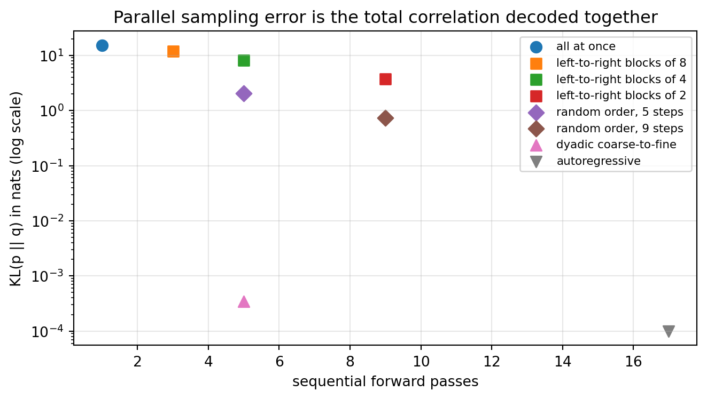
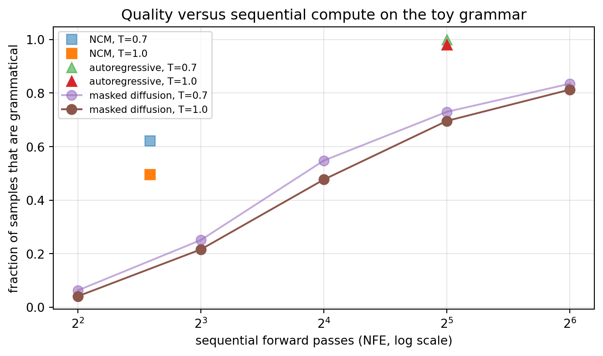

<!DOCTYPE html>
<html xmlns="http://www.w3.org/1999/xhtml" lang="en" xml:lang="en"><head>

<meta charset="utf-8">
<meta name="generator" content="quarto-1.7.33">

<meta name="viewport" content="width=device-width, initial-scale=1.0, user-scalable=yes">

<meta name="description" content="A rigorous, implementation-first reference for modern artificial intelligence: foundations, machine learning, deep learning, large language models, retrieval-augmented generation, and AI agents, taught with mathematics and runnable Python.">

<title>256&nbsp; Next-Concept Modeling: Parallel Coarse-to-Fine Text Generation – AI in Action</title>
<style>
code{white-space: pre-wrap;}
span.smallcaps{font-variant: small-caps;}
div.columns{display: flex; gap: min(4vw, 1.5em);}
div.column{flex: auto; overflow-x: auto;}
div.hanging-indent{margin-left: 1.5em; text-indent: -1.5em;}
ul.task-list{list-style: none;}
ul.task-list li input[type="checkbox"] {
  width: 0.8em;
  margin: 0 0.8em 0.2em -1em; /* quarto-specific, see https://github.com/quarto-dev/quarto-cli/issues/4556 */ 
  vertical-align: middle;
}
/* CSS for syntax highlighting */
html { -webkit-text-size-adjust: 100%; }
pre > code.sourceCode { white-space: pre; position: relative; }
pre > code.sourceCode > span { display: inline-block; line-height: 1.25; }
pre > code.sourceCode > span:empty { height: 1.2em; }
.sourceCode { overflow: visible; }
code.sourceCode > span { color: inherit; text-decoration: inherit; }
div.sourceCode { margin: 1em 0; }
pre.sourceCode { margin: 0; }
@media screen {
div.sourceCode { overflow: auto; }
}
@media print {
pre > code.sourceCode { white-space: pre-wrap; }
pre > code.sourceCode > span { text-indent: -5em; padding-left: 5em; }
}
pre.numberSource code
  { counter-reset: source-line 0; }
pre.numberSource code > span
  { position: relative; left: -4em; counter-increment: source-line; }
pre.numberSource code > span > a:first-child::before
  { content: counter(source-line);
    position: relative; left: -1em; text-align: right; vertical-align: baseline;
    border: none; display: inline-block;
    -webkit-touch-callout: none; -webkit-user-select: none;
    -khtml-user-select: none; -moz-user-select: none;
    -ms-user-select: none; user-select: none;
    padding: 0 4px; width: 4em;
  }
pre.numberSource { margin-left: 3em;  padding-left: 4px; }
div.sourceCode
  {   }
@media screen {
pre > code.sourceCode > span > a:first-child::before { text-decoration: underline; }
}
/* CSS for citations */
div.csl-bib-body { }
div.csl-entry {
  clear: both;
  margin-bottom: 0em;
}
.hanging-indent div.csl-entry {
  margin-left:2em;
  text-indent:-2em;
}
div.csl-left-margin {
  min-width:2em;
  float:left;
}
div.csl-right-inline {
  margin-left:2em;
  padding-left:1em;
}
div.csl-indent {
  margin-left: 2em;
}</style>


<script src="site_libs/quarto-nav/quarto-nav.js"></script>
<script src="site_libs/quarto-nav/headroom.min.js"></script>
<script src="site_libs/clipboard/clipboard.min.js"></script>
<script src="site_libs/quarto-search/autocomplete.umd.js"></script>
<script src="site_libs/quarto-search/fuse.min.js"></script>
<script src="site_libs/quarto-search/quarto-search.js"></script>
<meta name="quarto:offset" content="./">
<link href="./957-humaneval.html" rel="next">
<link href="./709-efficient-training.html" rel="prev">
<script src="site_libs/quarto-html/quarto.js" type="module"></script>
<script src="site_libs/quarto-html/tabsets/tabsets.js" type="module"></script>
<script src="site_libs/quarto-html/popper.min.js"></script>
<script src="site_libs/quarto-html/tippy.umd.min.js"></script>
<script src="site_libs/quarto-html/anchor.min.js"></script>
<link href="site_libs/quarto-html/tippy.css" rel="stylesheet">
<link href="site_libs/quarto-html/tippy.css" rel="stylesheet" class="quarto-color-scheme-extra">
<script src="site_libs/bootstrap/bootstrap.min.js"></script>
<link href="site_libs/bootstrap/bootstrap-icons.css" rel="stylesheet">
<link href="site_libs/bootstrap/bootstrap-7106a8c49e27c3c486d4c2ae868a7a37.min.css" rel="stylesheet" append-hash="true" class="quarto-color-scheme" id="quarto-bootstrap" data-mode="light">
<link href="site_libs/bootstrap/bootstrap-dark-dbe0edf796ac076a2a618c7cbf6c69fb.min.css" rel="stylesheet" append-hash="true" class="quarto-color-scheme quarto-color-alternate" id="quarto-bootstrap" data-mode="light">
<link href="site_libs/bootstrap/bootstrap-7106a8c49e27c3c486d4c2ae868a7a37.min.css" rel="stylesheet" append-hash="true" class="quarto-color-scheme-extra" id="quarto-bootstrap" data-mode="light">
<script id="quarto-search-options" type="application/json">{
  "location": "sidebar",
  "copy-button": false,
  "collapse-after": 3,
  "panel-placement": "start",
  "type": "textbox",
  "limit": 50,
  "keyboard-shortcut": [
    "f",
    "/",
    "s"
  ],
  "show-item-context": false,
  "language": {
    "search-no-results-text": "No results",
    "search-matching-documents-text": "matching documents",
    "search-copy-link-title": "Copy link to search",
    "search-hide-matches-text": "Hide additional matches",
    "search-more-match-text": "more match in this document",
    "search-more-matches-text": "more matches in this document",
    "search-clear-button-title": "Clear",
    "search-text-placeholder": "",
    "search-detached-cancel-button-title": "Cancel",
    "search-submit-button-title": "Submit",
    "search-label": "Search"
  }
}</script>
<!-- Google tag (gtag.js) -->
<script async="" src="https://www.googletagmanager.com/gtag/js?id=G-D35761524L"></script>
<script>
  window.dataLayer = window.dataLayer || [];
  function gtag(){dataLayer.push(arguments);}
  gtag('js', new Date());
  gtag('config', 'G-D35761524L');
</script>
<!-- =====================================================================
     SEO: schema.org structured data (JSON-LD) + search-engine verification
     Injected into the <head> of every page via format.html include-in-header.
     Helps search engines treat the book as an authoritative, citable work
     and can enable rich results (book, author, sitelinks search box).
     ===================================================================== -->

<!-- The book itself -->
<script type="application/ld+json">
{
  "@context": "https://schema.org",
  "@type": "Book",
  "name": "AI in Action: A Reference for Artificial Intelligence",
  "url": "https://mikenguyen13.github.io/ai_in_action/",
  "inLanguage": "en",
  "bookFormat": "https://schema.org/EBook",
  "genre": "Artificial Intelligence",
  "description": "A rigorous, implementation-first reference for modern artificial intelligence: foundations, machine learning, deep learning, large language models, retrieval-augmented generation, and AI agents, taught with mathematics and runnable Python.",
  "keywords": "artificial intelligence, machine learning, deep learning, large language models, LLM, transformers, retrieval-augmented generation, RAG, AI agents, Model Context Protocol, MCP, A2A, Python",
  "author": {
    "@type": "Person",
    "name": "Mike Nguyen",
    "url": "https://mikenguyen13.github.io/ai_in_action/about.html"
  },
  "publisher": {
    "@type": "Person",
    "name": "Mike Nguyen"
  }
}
</script>

<!-- The website (enables a sitelinks search box in Google results) -->
<script type="application/ld+json">
{
  "@context": "https://schema.org",
  "@type": "WebSite",
  "name": "AI in Action",
  "url": "https://mikenguyen13.github.io/ai_in_action/",
  "potentialAction": {
    "@type": "SearchAction",
    "target": {
      "@type": "EntryPoint",
      "urlTemplate": "https://mikenguyen13.github.io/ai_in_action/search.html?q={search_term_string}"
    },
    "query-input": "required name=search_term_string"
  }
}
</script>

<!-- Search-engine ownership verification.
     1. Google:  https://search.google.com/search-console  → add the property,
        choose "HTML tag", copy the content value into YOUR_GOOGLE_CODE below,
        then uncomment the line.
     2. Bing:    https://www.bing.com/webmasters  → add site, "HTML Meta Tag",
        copy the content into YOUR_BING_CODE, then uncomment. -->
<!-- <meta name="google-site-verification" content="YOUR_GOOGLE_CODE"> -->
<!-- <meta name="msvalidate.01" content="YOUR_BING_CODE"> -->

<!-- Favicon (injected here because the book favicon option was not emitting a link) -->
<link rel="icon" type="image/svg+xml" href="favicon.svg">
<link rel="alternate icon" type="image/png" href="favicon.ico">
<link rel="apple-touch-icon" href="favicon.ico">
<script src="site_libs/quarto-diagram/mermaid.min.js"></script>
<script src="site_libs/quarto-diagram/mermaid-init.js"></script>
<link href="site_libs/quarto-diagram/mermaid.css" rel="stylesheet">

  <script src="https://cdnjs.cloudflare.com/polyfill/v3/polyfill.min.js?features=es6"></script>
  <script src="https://cdn.jsdelivr.net/npm/mathjax@3/es5/tex-chtml-full.js" type="text/javascript"></script>

<script type="text/javascript">
const typesetMath = (el) => {
  if (window.MathJax) {
    // MathJax Typeset
    window.MathJax.typeset([el]);
  } else if (window.katex) {
    // KaTeX Render
    var mathElements = el.getElementsByClassName("math");
    var macros = [];
    for (var i = 0; i < mathElements.length; i++) {
      var texText = mathElements[i].firstChild;
      if (mathElements[i].tagName == "SPAN") {
        window.katex.render(texText.data, mathElements[i], {
          displayMode: mathElements[i].classList.contains('display'),
          throwOnError: false,
          macros: macros,
          fleqn: false
        });
      }
    }
  }
}
window.Quarto = {
  typesetMath
};
</script>

<meta property="og:title" content="256&nbsp; Next-Concept Modeling: Parallel Coarse-to-Fine Text Generation – AI in Action">
<meta property="og:description" content="A rigorous, implementation-first reference for modern artificial intelligence: foundations, machine learning, deep learning, large language models, retrieval-augmented generation, and AI agents, taught with mathematics and runnable Python.">
<meta property="og:image" content="https://mikenguyen13.github.io/ai_in_action/710-next-concept-modeling_files/figure-html/fig-710-tc-schedules-output-2.png">
<meta property="og:site_name" content="AI in Action">
<meta property="og:image:height" content="748">
<meta property="og:image:width" content="1323">
<meta name="twitter:title" content="256&nbsp; Next-Concept Modeling: Parallel Coarse-to-Fine Text Generation – AI in Action">
<meta name="twitter:description" content="A rigorous, implementation-first reference for modern artificial intelligence: foundations, machine learning, deep learning, large language models, retrieval-augmented generation, and AI agents, taught with mathematics and runnable Python.">
<meta name="twitter:image" content="https://mikenguyen13.github.io/ai_in_action/710-next-concept-modeling_files/figure-html/fig-710-tc-schedules-output-2.png">
<meta name="twitter:image-height" content="748">
<meta name="twitter:image-width" content="1323">
<meta name="twitter:card" content="summary_large_image">
<!-- citation-meta:begin -->
<meta name="citation_title" content="Next-Concept Modeling: Parallel Coarse-to-Fine Text Generation">
<meta name="citation_author" content="Nguyen, Mike">
<meta name="citation_author_orcid" content="https://orcid.org/0000-0002-3432-8595">
<meta name="citation_inbook_title" content="AI in Action: A Reference for Artificial Intelligence">
<meta name="citation_book_title" content="AI in Action: A Reference for Artificial Intelligence">
<meta name="citation_publication_date" content="2026">
<meta name="citation_online_date" content="2026/06/19">
<meta name="citation_publisher" content="Mike Nguyen">
<meta name="citation_fulltext_html_url" content="https://mikenguyen13.github.io/ai_in_action/710-next-concept-modeling.html">
<meta name="citation_abstract_html_url" content="https://mikenguyen13.github.io/ai_in_action/710-next-concept-modeling.html">
<meta name="citation_language" content="en">
<meta name="citation_keywords" content="artificial intelligence; machine learning; deep learning; large language models; retrieval-augmented generation; AI agents">
<meta name="DC.title" content="Next-Concept Modeling: Parallel Coarse-to-Fine Text Generation">
<meta name="DC.creator" content="Nguyen, Mike">
<meta name="DC.date" content="2026">
<meta name="DC.type" content="Text">
<meta name="DC.identifier" content="https://mikenguyen13.github.io/ai_in_action/710-next-concept-modeling.html">
<meta name="DC.relation.isPartOf" content="AI in Action: A Reference for Artificial Intelligence">
<script type="application/ld+json">{"@context": "https://schema.org", "@type": "Chapter", "name": "Next-Concept Modeling: Parallel Coarse-to-Fine Text Generation", "url": "https://mikenguyen13.github.io/ai_in_action/710-next-concept-modeling.html", "author": [{"@type": "Person", "name": "Mike Nguyen", "sameAs": "https://orcid.org/0000-0002-3432-8595"}], "isPartOf": {"@type": "Book", "name": "AI in Action: A Reference for Artificial Intelligence", "url": "https://mikenguyen13.github.io/ai_in_action/", "author": [{"@type": "Person", "name": "Mike Nguyen", "sameAs": "https://orcid.org/0000-0002-3432-8595"}], "datePublished": "2026-06-19"}}</script>
<!-- citation-meta:end -->
</head>

<body class="nav-sidebar floating quarto-light"><script id="quarto-html-before-body" type="application/javascript">
    const toggleBodyColorMode = (bsSheetEl) => {
      const mode = bsSheetEl.getAttribute("data-mode");
      const bodyEl = window.document.querySelector("body");
      if (mode === "dark") {
        bodyEl.classList.add("quarto-dark");
        bodyEl.classList.remove("quarto-light");
      } else {
        bodyEl.classList.add("quarto-light");
        bodyEl.classList.remove("quarto-dark");
      }
    }
    const toggleBodyColorPrimary = () => {
      const bsSheetEl = window.document.querySelector("link#quarto-bootstrap:not([rel=disabled-stylesheet])");
      if (bsSheetEl) {
        toggleBodyColorMode(bsSheetEl);
      }
    }
    const setColorSchemeToggle = (alternate) => {
      const toggles = window.document.querySelectorAll('.quarto-color-scheme-toggle');
      for (let i=0; i < toggles.length; i++) {
        const toggle = toggles[i];
        if (toggle) {
          if (alternate) {
            toggle.classList.add("alternate");
          } else {
            toggle.classList.remove("alternate");
          }
        }
      }
    };
    const toggleColorMode = (alternate) => {
      // Switch the stylesheets
      const primaryStylesheets = window.document.querySelectorAll('link.quarto-color-scheme:not(.quarto-color-alternate)');
      const alternateStylesheets = window.document.querySelectorAll('link.quarto-color-scheme.quarto-color-alternate');
      manageTransitions('#quarto-margin-sidebar .nav-link', false);
      if (alternate) {
        // note: dark is layered on light, we don't disable primary!
        enableStylesheet(alternateStylesheets);
        for (const sheetNode of alternateStylesheets) {
          if (sheetNode.id === "quarto-bootstrap") {
            toggleBodyColorMode(sheetNode);
          }
        }
      } else {
        disableStylesheet(alternateStylesheets);
        enableStylesheet(primaryStylesheets)
        toggleBodyColorPrimary();
      }
      manageTransitions('#quarto-margin-sidebar .nav-link', true);
      // Switch the toggles
      setColorSchemeToggle(alternate)
      // Hack to workaround the fact that safari doesn't
      // properly recolor the scrollbar when toggling (#1455)
      if (navigator.userAgent.indexOf('Safari') > 0 && navigator.userAgent.indexOf('Chrome') == -1) {
        manageTransitions("body", false);
        window.scrollTo(0, 1);
        setTimeout(() => {
          window.scrollTo(0, 0);
          manageTransitions("body", true);
        }, 40);
      }
    }
    const disableStylesheet = (stylesheets) => {
      for (let i=0; i < stylesheets.length; i++) {
        const stylesheet = stylesheets[i];
        stylesheet.rel = 'disabled-stylesheet';
      }
    }
    const enableStylesheet = (stylesheets) => {
      for (let i=0; i < stylesheets.length; i++) {
        const stylesheet = stylesheets[i];
        if(stylesheet.rel !== 'stylesheet') { // for Chrome, which will still FOUC without this check
          stylesheet.rel = 'stylesheet';
        }
      }
    }
    const manageTransitions = (selector, allowTransitions) => {
      const els = window.document.querySelectorAll(selector);
      for (let i=0; i < els.length; i++) {
        const el = els[i];
        if (allowTransitions) {
          el.classList.remove('notransition');
        } else {
          el.classList.add('notransition');
        }
      }
    }
    const isFileUrl = () => {
      return window.location.protocol === 'file:';
    }
    const hasAlternateSentinel = () => {
      let styleSentinel = getColorSchemeSentinel();
      if (styleSentinel !== null) {
        return styleSentinel === "alternate";
      } else {
        return false;
      }
    }
    const setStyleSentinel = (alternate) => {
      const value = alternate ? "alternate" : "default";
      if (!isFileUrl()) {
        window.localStorage.setItem("quarto-color-scheme", value);
      } else {
        localAlternateSentinel = value;
      }
    }
    const getColorSchemeSentinel = () => {
      if (!isFileUrl()) {
        const storageValue = window.localStorage.getItem("quarto-color-scheme");
        return storageValue != null ? storageValue : localAlternateSentinel;
      } else {
        return localAlternateSentinel;
      }
    }
    const toggleGiscusIfUsed = (isAlternate, darkModeDefault) => {
      const baseTheme = document.querySelector('#giscus-base-theme')?.value ?? 'light';
      const alternateTheme = document.querySelector('#giscus-alt-theme')?.value ?? 'dark';
      let newTheme = '';
      if(authorPrefersDark) {
        newTheme = isAlternate ? baseTheme : alternateTheme;
      } else {
        newTheme = isAlternate ? alternateTheme : baseTheme;
      }
      const changeGiscusTheme = () => {
        // From: https://github.com/giscus/giscus/issues/336
        const sendMessage = (message) => {
          const iframe = document.querySelector('iframe.giscus-frame');
          if (!iframe) return;
          iframe.contentWindow.postMessage({ giscus: message }, 'https://giscus.app');
        }
        sendMessage({
          setConfig: {
            theme: newTheme
          }
        });
      }
      const isGiscussLoaded = window.document.querySelector('iframe.giscus-frame') !== null;
      if (isGiscussLoaded) {
        changeGiscusTheme();
      }
    };
    const authorPrefersDark = false;
    const darkModeDefault = authorPrefersDark;
      document.querySelector('link#quarto-text-highlighting-styles.quarto-color-scheme-extra').rel = 'disabled-stylesheet';
      document.querySelector('link#quarto-bootstrap.quarto-color-scheme-extra').rel = 'disabled-stylesheet';
    let localAlternateSentinel = darkModeDefault ? 'alternate' : 'default';
    // Dark / light mode switch
    window.quartoToggleColorScheme = () => {
      // Read the current dark / light value
      let toAlternate = !hasAlternateSentinel();
      toggleColorMode(toAlternate);
      setStyleSentinel(toAlternate);
      toggleGiscusIfUsed(toAlternate, darkModeDefault);
      window.dispatchEvent(new Event('resize'));
    };
    // Switch to dark mode if need be
    if (hasAlternateSentinel()) {
      toggleColorMode(true);
    } else {
      toggleColorMode(false);
    }
  </script>

<div id="quarto-search-results"></div>
  <header id="quarto-header" class="headroom fixed-top">
  <nav class="quarto-secondary-nav">
    <div class="container-fluid d-flex">
      <button type="button" class="quarto-btn-toggle btn" data-bs-toggle="collapse" role="button" data-bs-target=".quarto-sidebar-collapse-item" aria-controls="quarto-sidebar" aria-expanded="false" aria-label="Toggle sidebar navigation" onclick="if (window.quartoToggleHeadroom) { window.quartoToggleHeadroom(); }">
        <i class="bi bi-layout-text-sidebar-reverse"></i>
      </button>
        <nav class="quarto-page-breadcrumbs" aria-label="breadcrumb"><ol class="breadcrumb"><li class="breadcrumb-item"><a href="./562-scaling-laws-kaplan.html">Part XV: Frontier Models and Methods (2024 to 2026)</a></li><li class="breadcrumb-item"><a href="./710-next-concept-modeling.html"><span class="chapter-number">256</span>&nbsp; <span class="chapter-title">Next-Concept Modeling: Parallel Coarse-to-Fine Text Generation</span></a></li></ol></nav>
        <a class="flex-grow-1" role="navigation" data-bs-toggle="collapse" data-bs-target=".quarto-sidebar-collapse-item" aria-controls="quarto-sidebar" aria-expanded="false" aria-label="Toggle sidebar navigation" onclick="if (window.quartoToggleHeadroom) { window.quartoToggleHeadroom(); }">      
        </a>
      <button type="button" class="btn quarto-search-button" aria-label="Search" onclick="window.quartoOpenSearch();">
        <i class="bi bi-search"></i>
      </button>
    </div>
  </nav>
</header>
<!-- content -->
<div id="quarto-content" class="quarto-container page-columns page-rows-contents page-layout-article">
<!-- sidebar -->
  <nav id="quarto-sidebar" class="sidebar collapse collapse-horizontal quarto-sidebar-collapse-item sidebar-navigation floating overflow-auto">
    <div class="pt-lg-2 mt-2 text-left sidebar-header">
    <div class="sidebar-title mb-0 py-0">
      <a href="./">AI in Action</a> 
        <div class="sidebar-tools-main">
    <a href="https://github.com/mikenguyen13/ai_in_action" title="Source Code" class="quarto-navigation-tool px-1" aria-label="Source Code"><i class="bi bi-github"></i></a>
  <a href="" class="quarto-color-scheme-toggle quarto-navigation-tool  px-1" onclick="window.quartoToggleColorScheme(); return false;" title="Toggle dark mode"><i class="bi"></i></a>
</div>
    </div>
      </div>
        <div class="mt-2 flex-shrink-0 align-items-center">
        <div class="sidebar-search">
        <div id="quarto-search" class="" title="Search"></div>
        </div>
        </div>
    <div class="sidebar-menu-container"> 
    <ul class="list-unstyled mt-1">
        <li class="sidebar-item">
  <div class="sidebar-item-container"> 
  <a href="./index.html" class="sidebar-item-text sidebar-link">
 <span class="menu-text">Preface</span></a>
  </div>
</li>
        <li class="sidebar-item sidebar-item-section">
      <div class="sidebar-item-container"> 
            <a class="sidebar-item-text sidebar-link text-start collapsed" data-bs-toggle="collapse" data-bs-target="#quarto-sidebar-section-1" role="navigation" aria-expanded="false">
 <span class="menu-text">Part I: Foundations of Intelligence</span></a>
          <a class="sidebar-item-toggle text-start collapsed" data-bs-toggle="collapse" data-bs-target="#quarto-sidebar-section-1" role="navigation" aria-expanded="false" aria-label="Toggle section">
            <i class="bi bi-chevron-right ms-2"></i>
          </a> 
      </div>
      <ul id="quarto-sidebar-section-1" class="collapse list-unstyled sidebar-section depth1 ">  
          <li class="sidebar-item">
  <div class="sidebar-item-container"> 
  <a href="./001-intro.html" class="sidebar-item-text sidebar-link">
 <span class="menu-text"><span class="chapter-number">1</span>&nbsp; <span class="chapter-title">Introduction</span></span></a>
  </div>
</li>
          <li class="sidebar-item">
  <div class="sidebar-item-container"> 
  <a href="./002-history-of-ai.html" class="sidebar-item-text sidebar-link">
 <span class="menu-text"><span class="chapter-number">2</span>&nbsp; <span class="chapter-title">The History of Artificial Intelligence</span></span></a>
  </div>
</li>
          <li class="sidebar-item">
  <div class="sidebar-item-container"> 
  <a href="./003-philosophy-of-machine-intelligence.html" class="sidebar-item-text sidebar-link">
 <span class="menu-text"><span class="chapter-number">3</span>&nbsp; <span class="chapter-title">The Philosophy of Machine Intelligence</span></span></a>
  </div>
</li>
          <li class="sidebar-item">
  <div class="sidebar-item-container"> 
  <a href="./004-biological-vs-artificial-intelligence.html" class="sidebar-item-text sidebar-link">
 <span class="menu-text"><span class="chapter-number">4</span>&nbsp; <span class="chapter-title">Biological versus Artificial Intelligence</span></span></a>
  </div>
</li>
          <li class="sidebar-item">
  <div class="sidebar-item-container"> 
  <a href="./005-types-of-learning.html" class="sidebar-item-text sidebar-link">
 <span class="menu-text"><span class="chapter-number">5</span>&nbsp; <span class="chapter-title">Types of Learning</span></span></a>
  </div>
</li>
          <li class="sidebar-item">
  <div class="sidebar-item-container"> 
  <a href="./006-ai-development-lifecycle.html" class="sidebar-item-text sidebar-link">
 <span class="menu-text"><span class="chapter-number">6</span>&nbsp; <span class="chapter-title">The AI Development Lifecycle</span></span></a>
  </div>
</li>
          <li class="sidebar-item">
  <div class="sidebar-item-container"> 
  <a href="./007-project-management.html" class="sidebar-item-text sidebar-link">
 <span class="menu-text"><span class="chapter-number">7</span>&nbsp; <span class="chapter-title">Project Management</span></span></a>
  </div>
</li>
          <li class="sidebar-item">
  <div class="sidebar-item-container"> 
  <a href="./008-computational-thinking.html" class="sidebar-item-text sidebar-link">
 <span class="menu-text"><span class="chapter-number">8</span>&nbsp; <span class="chapter-title">Computational Thinking for AI</span></span></a>
  </div>
</li>
          <li class="sidebar-item">
  <div class="sidebar-item-container"> 
  <a href="./009-scientific-method-in-ai.html" class="sidebar-item-text sidebar-link">
 <span class="menu-text"><span class="chapter-number">9</span>&nbsp; <span class="chapter-title">The Scientific Method in AI Research</span></span></a>
  </div>
</li>
          <li class="sidebar-item">
  <div class="sidebar-item-container"> 
  <a href="./010-reading-ai-research.html" class="sidebar-item-text sidebar-link">
 <span class="menu-text"><span class="chapter-number">10</span>&nbsp; <span class="chapter-title">How to Read AI Research</span></span></a>
  </div>
</li>
          <li class="sidebar-item">
  <div class="sidebar-item-container"> 
  <a href="./011-ai-technology-stack.html" class="sidebar-item-text sidebar-link">
 <span class="menu-text"><span class="chapter-number">11</span>&nbsp; <span class="chapter-title">The AI Technology Stack</span></span></a>
  </div>
</li>
          <li class="sidebar-item">
  <div class="sidebar-item-container"> 
  <a href="./012-hardware-for-ai.html" class="sidebar-item-text sidebar-link">
 <span class="menu-text"><span class="chapter-number">12</span>&nbsp; <span class="chapter-title">Hardware for AI</span></span></a>
  </div>
</li>
          <li class="sidebar-item">
  <div class="sidebar-item-container"> 
  <a href="./013-software-ecosystems.html" class="sidebar-item-text sidebar-link">
 <span class="menu-text"><span class="chapter-number">13</span>&nbsp; <span class="chapter-title">AI Software Ecosystems</span></span></a>
  </div>
</li>
          <li class="sidebar-item">
  <div class="sidebar-item-container"> 
  <a href="./014-data-centric-ai-paradigm.html" class="sidebar-item-text sidebar-link">
 <span class="menu-text"><span class="chapter-number">14</span>&nbsp; <span class="chapter-title">The Data-Centric AI Paradigm</span></span></a>
  </div>
</li>
          <li class="sidebar-item">
  <div class="sidebar-item-container"> 
  <a href="./015-preview-road-ahead.html" class="sidebar-item-text sidebar-link">
 <span class="menu-text"><span class="chapter-number">15</span>&nbsp; <span class="chapter-title">A Preview of the Road Ahead</span></span></a>
  </div>
</li>
          <li class="sidebar-item">
  <div class="sidebar-item-container"> 
  <a href="./data_annotation.html" class="sidebar-item-text sidebar-link">
 <span class="menu-text"><span class="chapter-number">16</span>&nbsp; <span class="chapter-title">Guide to Data Annotation</span></span></a>
  </div>
</li>
          <li class="sidebar-item">
  <div class="sidebar-item-container"> 
  <a href="./temporal-strategies.html" class="sidebar-item-text sidebar-link">
 <span class="menu-text"><span class="chapter-number">17</span>&nbsp; <span class="chapter-title">Temporal Evaluation Strategies</span></span></a>
  </div>
</li>
          <li class="sidebar-item">
  <div class="sidebar-item-container"> 
  <a href="./representations_embeddings.html" class="sidebar-item-text sidebar-link">
 <span class="menu-text"><span class="chapter-number">18</span>&nbsp; <span class="chapter-title">Representations and embeddings</span></span></a>
  </div>
</li>
          <li class="sidebar-item">
  <div class="sidebar-item-container"> 
  <a href="./graph-embeddings-clickstream-forecasting.html" class="sidebar-item-text sidebar-link">
 <span class="menu-text"><span class="chapter-number">19</span>&nbsp; <span class="chapter-title">Graph Embeddings for Clickstream Sales Forecasting</span></span></a>
  </div>
</li>
          <li class="sidebar-item">
  <div class="sidebar-item-container"> 
  <a href="./migration-flows-deep-learning.html" class="sidebar-item-text sidebar-link">
 <span class="menu-text"><span class="chapter-number">20</span>&nbsp; <span class="chapter-title">Learning Four Decades of Migration: A Stock-Flow Model Inside a Neural Network</span></span></a>
  </div>
</li>
          <li class="sidebar-item">
  <div class="sidebar-item-container"> 
  <a href="./slow_feature_analysis_chapter.html" class="sidebar-item-text sidebar-link">
 <span class="menu-text"><span class="chapter-number">21</span>&nbsp; <span class="chapter-title">Slow Feature Analysis</span></span></a>
  </div>
</li>
      </ul>
  </li>
        <li class="sidebar-item sidebar-item-section">
      <div class="sidebar-item-container"> 
            <a class="sidebar-item-text sidebar-link text-start collapsed" data-bs-toggle="collapse" data-bs-target="#quarto-sidebar-section-2" role="navigation" aria-expanded="false">
 <span class="menu-text">Part II: Mathematical Foundations</span></a>
          <a class="sidebar-item-toggle text-start collapsed" data-bs-toggle="collapse" data-bs-target="#quarto-sidebar-section-2" role="navigation" aria-expanded="false" aria-label="Toggle section">
            <i class="bi bi-chevron-right ms-2"></i>
          </a> 
      </div>
      <ul id="quarto-sidebar-section-2" class="collapse list-unstyled sidebar-section depth1 ">  
          <li class="sidebar-item">
  <div class="sidebar-item-container"> 
  <a href="./016-why-math-matters.html" class="sidebar-item-text sidebar-link">
 <span class="menu-text"><span class="chapter-number">22</span>&nbsp; <span class="chapter-title">Mathematical foundations of machine learning</span></span></a>
  </div>
</li>
          <li class="sidebar-item">
  <div class="sidebar-item-container"> 
  <a href="./017-sets-functions-logic.html" class="sidebar-item-text sidebar-link">
 <span class="menu-text"><span class="chapter-number">23</span>&nbsp; <span class="chapter-title">Sets, Functions, and Logic</span></span></a>
  </div>
</li>
          <li class="sidebar-item">
  <div class="sidebar-item-container"> 
  <a href="./018-linear-algebra-vectors-spaces.html" class="sidebar-item-text sidebar-link">
 <span class="menu-text"><span class="chapter-number">24</span>&nbsp; <span class="chapter-title">Linear Algebra: Vectors and Spaces</span></span></a>
  </div>
</li>
          <li class="sidebar-item">
  <div class="sidebar-item-container"> 
  <a href="./019-linear-algebra-matrices-operations.html" class="sidebar-item-text sidebar-link">
 <span class="menu-text"><span class="chapter-number">25</span>&nbsp; <span class="chapter-title">Linear Algebra: Matrices and Operations</span></span></a>
  </div>
</li>
          <li class="sidebar-item">
  <div class="sidebar-item-container"> 
  <a href="./020-linear-algebra-eigenvalues-decompositions.html" class="sidebar-item-text sidebar-link">
 <span class="menu-text"><span class="chapter-number">26</span>&nbsp; <span class="chapter-title">Eigenvalues, Eigenvectors, and Matrix Decompositions</span></span></a>
  </div>
</li>
          <li class="sidebar-item">
  <div class="sidebar-item-container"> 
  <a href="./021-linear-algebra-special-matrices.html" class="sidebar-item-text sidebar-link">
 <span class="menu-text"><span class="chapter-number">27</span>&nbsp; <span class="chapter-title">Special Matrices</span></span></a>
  </div>
</li>
          <li class="sidebar-item">
  <div class="sidebar-item-container"> 
  <a href="./022-calculus-limits-derivatives.html" class="sidebar-item-text sidebar-link">
 <span class="menu-text"><span class="chapter-number">28</span>&nbsp; <span class="chapter-title">Calculus: Limits and Derivatives</span></span></a>
  </div>
</li>
          <li class="sidebar-item">
  <div class="sidebar-item-container"> 
  <a href="./023-calculus-gradients-partial-derivatives.html" class="sidebar-item-text sidebar-link">
 <span class="menu-text"><span class="chapter-number">29</span>&nbsp; <span class="chapter-title">Gradients and Partial Derivatives</span></span></a>
  </div>
</li>
          <li class="sidebar-item">
  <div class="sidebar-item-container"> 
  <a href="./024-calculus-chain-rule-backpropagation.html" class="sidebar-item-text sidebar-link">
 <span class="menu-text"><span class="chapter-number">30</span>&nbsp; <span class="chapter-title">The Chain Rule and Backpropagation</span></span></a>
  </div>
</li>
          <li class="sidebar-item">
  <div class="sidebar-item-container"> 
  <a href="./025-calculus-integration-expectations.html" class="sidebar-item-text sidebar-link">
 <span class="menu-text"><span class="chapter-number">31</span>&nbsp; <span class="chapter-title">Integration and Expectations</span></span></a>
  </div>
</li>
          <li class="sidebar-item">
  <div class="sidebar-item-container"> 
  <a href="./026-multivariable-calculus.html" class="sidebar-item-text sidebar-link">
 <span class="menu-text"><span class="chapter-number">32</span>&nbsp; <span class="chapter-title">Multivariable Calculus for Machine Learning</span></span></a>
  </div>
</li>
          <li class="sidebar-item">
  <div class="sidebar-item-container"> 
  <a href="./027-probability-foundations-axioms.html" class="sidebar-item-text sidebar-link">
 <span class="menu-text"><span class="chapter-number">33</span>&nbsp; <span class="chapter-title">Foundations of Probability</span></span></a>
  </div>
</li>
          <li class="sidebar-item">
  <div class="sidebar-item-container"> 
  <a href="./028-probability-random-variables-distributions.html" class="sidebar-item-text sidebar-link">
 <span class="menu-text"><span class="chapter-number">34</span>&nbsp; <span class="chapter-title">Random Variables and Distributions</span></span></a>
  </div>
</li>
          <li class="sidebar-item">
  <div class="sidebar-item-container"> 
  <a href="./029-probability-common-distributions.html" class="sidebar-item-text sidebar-link">
 <span class="menu-text"><span class="chapter-number">35</span>&nbsp; <span class="chapter-title">Common Probability Distributions</span></span></a>
  </div>
</li>
          <li class="sidebar-item">
  <div class="sidebar-item-container"> 
  <a href="./030-probability-joint-marginal-conditional.html" class="sidebar-item-text sidebar-link">
 <span class="menu-text"><span class="chapter-number">36</span>&nbsp; <span class="chapter-title">Joint, Marginal, and Conditional Distributions</span></span></a>
  </div>
</li>
          <li class="sidebar-item">
  <div class="sidebar-item-container"> 
  <a href="./031-probability-bayes-theorem-inference.html" class="sidebar-item-text sidebar-link">
 <span class="menu-text"><span class="chapter-number">37</span>&nbsp; <span class="chapter-title">Bayes Theorem and Bayesian Inference</span></span></a>
  </div>
</li>
          <li class="sidebar-item">
  <div class="sidebar-item-container"> 
  <a href="./032-statistics-descriptive.html" class="sidebar-item-text sidebar-link">
 <span class="menu-text"><span class="chapter-number">38</span>&nbsp; <span class="chapter-title">Descriptive Statistics</span></span></a>
  </div>
</li>
          <li class="sidebar-item">
  <div class="sidebar-item-container"> 
  <a href="./033-statistics-estimation-confidence.html" class="sidebar-item-text sidebar-link">
 <span class="menu-text"><span class="chapter-number">39</span>&nbsp; <span class="chapter-title">Estimation and Confidence</span></span></a>
  </div>
</li>
          <li class="sidebar-item">
  <div class="sidebar-item-container"> 
  <a href="./034-statistics-hypothesis-testing.html" class="sidebar-item-text sidebar-link">
 <span class="menu-text"><span class="chapter-number">40</span>&nbsp; <span class="chapter-title">Hypothesis Testing</span></span></a>
  </div>
</li>
          <li class="sidebar-item">
  <div class="sidebar-item-container"> 
  <a href="./035-statistics-regression-analysis.html" class="sidebar-item-text sidebar-link">
 <span class="menu-text"><span class="chapter-number">41</span>&nbsp; <span class="chapter-title">Regression Analysis</span></span></a>
  </div>
</li>
          <li class="sidebar-item">
  <div class="sidebar-item-container"> 
  <a href="./036-information-theory-entropy.html" class="sidebar-item-text sidebar-link">
 <span class="menu-text"><span class="chapter-number">42</span>&nbsp; <span class="chapter-title">Information Theory and Entropy</span></span></a>
  </div>
</li>
          <li class="sidebar-item">
  <div class="sidebar-item-container"> 
  <a href="./037-information-theory-kl-divergence-mutual-information.html" class="sidebar-item-text sidebar-link">
 <span class="menu-text"><span class="chapter-number">43</span>&nbsp; <span class="chapter-title">KL Divergence and Mutual Information</span></span></a>
  </div>
</li>
          <li class="sidebar-item">
  <div class="sidebar-item-container"> 
  <a href="./038-information-theory-cross-entropy-loss.html" class="sidebar-item-text sidebar-link">
 <span class="menu-text"><span class="chapter-number">44</span>&nbsp; <span class="chapter-title">Cross-Entropy and the Cross-Entropy Loss</span></span></a>
  </div>
</li>
          <li class="sidebar-item">
  <div class="sidebar-item-container"> 
  <a href="./039-optimization-fundamentals-landscapes.html" class="sidebar-item-text sidebar-link">
 <span class="menu-text"><span class="chapter-number">45</span>&nbsp; <span class="chapter-title">Optimization and numerical methods</span></span></a>
  </div>
</li>
          <li class="sidebar-item">
  <div class="sidebar-item-container"> 
  <a href="./double_descent.html" class="sidebar-item-text sidebar-link">
 <span class="menu-text"><span class="chapter-number">46</span>&nbsp; <span class="chapter-title">Double Descent</span></span></a>
  </div>
</li>
          <li class="sidebar-item">
  <div class="sidebar-item-container"> 
  <a href="./040-optimization-gradient-descent-variants.html" class="sidebar-item-text sidebar-link">
 <span class="menu-text"><span class="chapter-number">47</span>&nbsp; <span class="chapter-title">Gradient Descent and Its Variants</span></span></a>
  </div>
</li>
          <li class="sidebar-item">
  <div class="sidebar-item-container"> 
  <a href="./041-optimization-convex.html" class="sidebar-item-text sidebar-link">
 <span class="menu-text"><span class="chapter-number">48</span>&nbsp; <span class="chapter-title">Convex Optimization</span></span></a>
  </div>
</li>
          <li class="sidebar-item">
  <div class="sidebar-item-container"> 
  <a href="./042-optimization-constrained.html" class="sidebar-item-text sidebar-link">
 <span class="menu-text"><span class="chapter-number">49</span>&nbsp; <span class="chapter-title">Constrained Optimization</span></span></a>
  </div>
</li>
          <li class="sidebar-item">
  <div class="sidebar-item-container"> 
  <a href="./043-optimization-stochastic-methods.html" class="sidebar-item-text sidebar-link">
 <span class="menu-text"><span class="chapter-number">50</span>&nbsp; <span class="chapter-title">Stochastic Optimization Methods</span></span></a>
  </div>
</li>
          <li class="sidebar-item">
  <div class="sidebar-item-container"> 
  <a href="./044-numerical-methods-stability.html" class="sidebar-item-text sidebar-link">
 <span class="menu-text"><span class="chapter-number">51</span>&nbsp; <span class="chapter-title">Numerical Methods and Stability</span></span></a>
  </div>
</li>
          <li class="sidebar-item">
  <div class="sidebar-item-container"> 
  <a href="./045-mathematical-notation-reference.html" class="sidebar-item-text sidebar-link">
 <span class="menu-text"><span class="chapter-number">52</span>&nbsp; <span class="chapter-title">Mathematical Notation Reference</span></span></a>
  </div>
</li>
      </ul>
  </li>
        <li class="sidebar-item sidebar-item-section">
      <div class="sidebar-item-container"> 
            <a class="sidebar-item-text sidebar-link text-start collapsed" data-bs-toggle="collapse" data-bs-target="#quarto-sidebar-section-3" role="navigation" aria-expanded="false">
 <span class="menu-text">Part III: Data Foundations</span></a>
          <a class="sidebar-item-toggle text-start collapsed" data-bs-toggle="collapse" data-bs-target="#quarto-sidebar-section-3" role="navigation" aria-expanded="false" aria-label="Toggle section">
            <i class="bi bi-chevron-right ms-2"></i>
          </a> 
      </div>
      <ul id="quarto-sidebar-section-3" class="collapse list-unstyled sidebar-section depth1 ">  
          <li class="sidebar-item">
  <div class="sidebar-item-container"> 
  <a href="./046-primacy-of-data.html" class="sidebar-item-text sidebar-link">
 <span class="menu-text"><span class="chapter-number">53</span>&nbsp; <span class="chapter-title">The Primacy of Data</span></span></a>
  </div>
</li>
          <li class="sidebar-item">
  <div class="sidebar-item-container"> 
  <a href="./047-data-types-structures.html" class="sidebar-item-text sidebar-link">
 <span class="menu-text"><span class="chapter-number">54</span>&nbsp; <span class="chapter-title">Data Types and Structures</span></span></a>
  </div>
</li>
          <li class="sidebar-item">
  <div class="sidebar-item-container"> 
  <a href="./048-data-collection-strategies.html" class="sidebar-item-text sidebar-link">
 <span class="menu-text"><span class="chapter-number">55</span>&nbsp; <span class="chapter-title">Data Collection Strategies</span></span></a>
  </div>
</li>
          <li class="sidebar-item">
  <div class="sidebar-item-container"> 
  <a href="./049-web-scraping-data-acquisition.html" class="sidebar-item-text sidebar-link">
 <span class="menu-text"><span class="chapter-number">56</span>&nbsp; <span class="chapter-title">Web Scraping and Data Acquisition</span></span></a>
  </div>
</li>
          <li class="sidebar-item">
  <div class="sidebar-item-container"> 
  <a href="./050-apis-data-integration.html" class="sidebar-item-text sidebar-link">
 <span class="menu-text"><span class="chapter-number">57</span>&nbsp; <span class="chapter-title">APIs and Data Integration</span></span></a>
  </div>
</li>
          <li class="sidebar-item">
  <div class="sidebar-item-container"> 
  <a href="./051-data-quality-assessment.html" class="sidebar-item-text sidebar-link">
 <span class="menu-text"><span class="chapter-number">58</span>&nbsp; <span class="chapter-title">Data Quality Assessment</span></span></a>
  </div>
</li>
          <li class="sidebar-item">
  <div class="sidebar-item-container"> 
  <a href="./missing_data.html" class="sidebar-item-text sidebar-link">
 <span class="menu-text"><span class="chapter-number">59</span>&nbsp; <span class="chapter-title">Missing Data</span></span></a>
  </div>
</li>
          <li class="sidebar-item">
  <div class="sidebar-item-container"> 
  <a href="./053-outlier-detection-treatment.html" class="sidebar-item-text sidebar-link">
 <span class="menu-text"><span class="chapter-number">60</span>&nbsp; <span class="chapter-title">Outlier Detection and Treatment</span></span></a>
  </div>
</li>
          <li class="sidebar-item">
  <div class="sidebar-item-container"> 
  <a href="./054-data-cleaning-pipelines.html" class="sidebar-item-text sidebar-link">
 <span class="menu-text"><span class="chapter-number">61</span>&nbsp; <span class="chapter-title">Data Cleaning Pipelines</span></span></a>
  </div>
</li>
          <li class="sidebar-item">
  <div class="sidebar-item-container"> 
  <a href="./055-data-validation-testing.html" class="sidebar-item-text sidebar-link">
 <span class="menu-text"><span class="chapter-number">62</span>&nbsp; <span class="chapter-title">Data Validation and Testing</span></span></a>
  </div>
</li>
          <li class="sidebar-item">
  <div class="sidebar-item-container"> 
  <a href="./056-exploratory-data-analysis.html" class="sidebar-item-text sidebar-link">
 <span class="menu-text"><span class="chapter-number">63</span>&nbsp; <span class="chapter-title">Exploratory Data Analysis</span></span></a>
  </div>
</li>
          <li class="sidebar-item">
  <div class="sidebar-item-container"> 
  <a href="./057-data-visualization-principles.html" class="sidebar-item-text sidebar-link">
 <span class="menu-text"><span class="chapter-number">64</span>&nbsp; <span class="chapter-title">Data Visualization Principles</span></span></a>
  </div>
</li>
          <li class="sidebar-item">
  <div class="sidebar-item-container"> 
  <a href="./058-statistical-graphics-for-ai.html" class="sidebar-item-text sidebar-link">
 <span class="menu-text"><span class="chapter-number">65</span>&nbsp; <span class="chapter-title">Statistical Graphics for AI</span></span></a>
  </div>
</li>
          <li class="sidebar-item">
  <div class="sidebar-item-container"> 
  <a href="./059-interactive-visualization-tools.html" class="sidebar-item-text sidebar-link">
 <span class="menu-text"><span class="chapter-number">66</span>&nbsp; <span class="chapter-title">Interactive Visualization Tools</span></span></a>
  </div>
</li>
          <li class="sidebar-item">
  <div class="sidebar-item-container"> 
  <a href="./060-feature-engineering-principles.html" class="sidebar-item-text sidebar-link">
 <span class="menu-text"><span class="chapter-number">67</span>&nbsp; <span class="chapter-title">Feature Engineering Principles</span></span></a>
  </div>
</li>
          <li class="sidebar-item">
  <div class="sidebar-item-container"> 
  <a href="./061-feature-engineering-numerical.html" class="sidebar-item-text sidebar-link">
 <span class="menu-text"><span class="chapter-number">68</span>&nbsp; <span class="chapter-title">Feature Engineering for Numerical Data</span></span></a>
  </div>
</li>
          <li class="sidebar-item">
  <div class="sidebar-item-container"> 
  <a href="./062-feature-engineering-categorical.html" class="sidebar-item-text sidebar-link">
 <span class="menu-text"><span class="chapter-number">69</span>&nbsp; <span class="chapter-title">Feature Engineering for Categorical Data</span></span></a>
  </div>
</li>
          <li class="sidebar-item">
  <div class="sidebar-item-container"> 
  <a href="./063-feature-engineering-text.html" class="sidebar-item-text sidebar-link">
 <span class="menu-text"><span class="chapter-number">70</span>&nbsp; <span class="chapter-title">Feature Engineering for Text</span></span></a>
  </div>
</li>
          <li class="sidebar-item">
  <div class="sidebar-item-container"> 
  <a href="./064-feature-engineering-temporal.html" class="sidebar-item-text sidebar-link">
 <span class="menu-text"><span class="chapter-number">71</span>&nbsp; <span class="chapter-title">Feature Engineering for Temporal Data</span></span></a>
  </div>
</li>
          <li class="sidebar-item">
  <div class="sidebar-item-container"> 
  <a href="./065-feature-engineering-geospatial.html" class="sidebar-item-text sidebar-link">
 <span class="menu-text"><span class="chapter-number">72</span>&nbsp; <span class="chapter-title">Feature Engineering for Geospatial Data</span></span></a>
  </div>
</li>
          <li class="sidebar-item">
  <div class="sidebar-item-container"> 
  <a href="./066-feature-selection-methods.html" class="sidebar-item-text sidebar-link">
 <span class="menu-text"><span class="chapter-number">73</span>&nbsp; <span class="chapter-title">Feature Selection Methods</span></span></a>
  </div>
</li>
          <li class="sidebar-item">
  <div class="sidebar-item-container"> 
  <a href="./067-dimensionality-reduction-pca.html" class="sidebar-item-text sidebar-link">
 <span class="menu-text"><span class="chapter-number">74</span>&nbsp; <span class="chapter-title">Dimensionality Reduction with PCA</span></span></a>
  </div>
</li>
          <li class="sidebar-item">
  <div class="sidebar-item-container"> 
  <a href="./068-dimensionality-reduction-tsne-umap.html" class="sidebar-item-text sidebar-link">
 <span class="menu-text"><span class="chapter-number">75</span>&nbsp; <span class="chapter-title">Nonlinear Dimensionality Reduction with t-SNE and UMAP</span></span></a>
  </div>
</li>
          <li class="sidebar-item">
  <div class="sidebar-item-container"> 
  <a href="./069-data-augmentation-principles.html" class="sidebar-item-text sidebar-link">
 <span class="menu-text"><span class="chapter-number">76</span>&nbsp; <span class="chapter-title">Data Augmentation Principles</span></span></a>
  </div>
</li>
          <li class="sidebar-item">
  <div class="sidebar-item-container"> 
  <a href="./070-data-augmentation-images.html" class="sidebar-item-text sidebar-link">
 <span class="menu-text"><span class="chapter-number">77</span>&nbsp; <span class="chapter-title">Image Data Augmentation</span></span></a>
  </div>
</li>
          <li class="sidebar-item">
  <div class="sidebar-item-container"> 
  <a href="./071-data-augmentation-text.html" class="sidebar-item-text sidebar-link">
 <span class="menu-text"><span class="chapter-number">78</span>&nbsp; <span class="chapter-title">Text Data Augmentation</span></span></a>
  </div>
</li>
          <li class="sidebar-item">
  <div class="sidebar-item-container"> 
  <a href="./072-synthetic-data-generation.html" class="sidebar-item-text sidebar-link">
 <span class="menu-text"><span class="chapter-number">79</span>&nbsp; <span class="chapter-title">Synthetic Data Generation</span></span></a>
  </div>
</li>
          <li class="sidebar-item">
  <div class="sidebar-item-container"> 
  <a href="./073-data-versioning-lineage.html" class="sidebar-item-text sidebar-link">
 <span class="menu-text"><span class="chapter-number">80</span>&nbsp; <span class="chapter-title">Data Versioning and Lineage</span></span></a>
  </div>
</li>
          <li class="sidebar-item">
  <div class="sidebar-item-container"> 
  <a href="./074-data-documentation-datasheets.html" class="sidebar-item-text sidebar-link">
 <span class="menu-text"><span class="chapter-number">81</span>&nbsp; <span class="chapter-title">Data Documentation: Datasheets, Data Cards, and Data Statements</span></span></a>
  </div>
</li>
          <li class="sidebar-item">
  <div class="sidebar-item-container"> 
  <a href="./075-data-ethics-governance.html" class="sidebar-item-text sidebar-link">
 <span class="menu-text"><span class="chapter-number">82</span>&nbsp; <span class="chapter-title">Data Ethics and Governance</span></span></a>
  </div>
</li>
      </ul>
  </li>
        <li class="sidebar-item sidebar-item-section">
      <div class="sidebar-item-container"> 
            <a class="sidebar-item-text sidebar-link text-start collapsed" data-bs-toggle="collapse" data-bs-target="#quarto-sidebar-section-4" role="navigation" aria-expanded="false">
 <span class="menu-text">Part IV: Classical Machine Learning</span></a>
          <a class="sidebar-item-toggle text-start collapsed" data-bs-toggle="collapse" data-bs-target="#quarto-sidebar-section-4" role="navigation" aria-expanded="false" aria-label="Toggle section">
            <i class="bi bi-chevron-right ms-2"></i>
          </a> 
      </div>
      <ul id="quarto-sidebar-section-4" class="collapse list-unstyled sidebar-section depth1 ">  
          <li class="sidebar-item">
  <div class="sidebar-item-container"> 
  <a href="./076-classical-ml-paradigm.html" class="sidebar-item-text sidebar-link">
 <span class="menu-text"><span class="chapter-number">83</span>&nbsp; <span class="chapter-title">The Classical Machine Learning Paradigm</span></span></a>
  </div>
</li>
          <li class="sidebar-item">
  <div class="sidebar-item-container"> 
  <a href="./077-bias-variance-tradeoff.html" class="sidebar-item-text sidebar-link">
 <span class="menu-text"><span class="chapter-number">84</span>&nbsp; <span class="chapter-title">The Bias-Variance Tradeoff</span></span></a>
  </div>
</li>
          <li class="sidebar-item">
  <div class="sidebar-item-container"> 
  <a href="./078-train-validation-test-sets.html" class="sidebar-item-text sidebar-link">
 <span class="menu-text"><span class="chapter-number">85</span>&nbsp; <span class="chapter-title">Train, Validation, and Test Sets</span></span></a>
  </div>
</li>
          <li class="sidebar-item">
  <div class="sidebar-item-container"> 
  <a href="./079-cross-validation-techniques.html" class="sidebar-item-text sidebar-link">
 <span class="menu-text"><span class="chapter-number">86</span>&nbsp; <span class="chapter-title">Cross-Validation Techniques</span></span></a>
  </div>
</li>
          <li class="sidebar-item">
  <div class="sidebar-item-container"> 
  <a href="./080-linear-regression-foundations.html" class="sidebar-item-text sidebar-link">
 <span class="menu-text"><span class="chapter-number">87</span>&nbsp; <span class="chapter-title">Linear Regression Foundations</span></span></a>
  </div>
</li>
          <li class="sidebar-item">
  <div class="sidebar-item-container"> 
  <a href="./081-linear-regression-assumptions-diagnostics.html" class="sidebar-item-text sidebar-link">
 <span class="menu-text"><span class="chapter-number">88</span>&nbsp; <span class="chapter-title">Linear Regression Assumptions and Diagnostics</span></span></a>
  </div>
</li>
          <li class="sidebar-item">
  <div class="sidebar-item-container"> 
  <a href="./082-linear-regression-extensions.html" class="sidebar-item-text sidebar-link">
 <span class="menu-text"><span class="chapter-number">89</span>&nbsp; <span class="chapter-title">Linear Regression Extensions</span></span></a>
  </div>
</li>
          <li class="sidebar-item">
  <div class="sidebar-item-container"> 
  <a href="./083-polynomial-regression.html" class="sidebar-item-text sidebar-link">
 <span class="menu-text"><span class="chapter-number">90</span>&nbsp; <span class="chapter-title">Polynomial and Basis-Function Regression</span></span></a>
  </div>
</li>
          <li class="sidebar-item">
  <div class="sidebar-item-container"> 
  <a href="./084-regularization-ridge.html" class="sidebar-item-text sidebar-link">
 <span class="menu-text"><span class="chapter-number">91</span>&nbsp; <span class="chapter-title">Ridge Regression and L2 Regularization</span></span></a>
  </div>
</li>
          <li class="sidebar-item">
  <div class="sidebar-item-container"> 
  <a href="./085-regularization-lasso-sparsity.html" class="sidebar-item-text sidebar-link">
 <span class="menu-text"><span class="chapter-number">92</span>&nbsp; <span class="chapter-title">Lasso and Sparsity: L1 Regularization</span></span></a>
  </div>
</li>
          <li class="sidebar-item">
  <div class="sidebar-item-container"> 
  <a href="./086-regularization-elastic-net.html" class="sidebar-item-text sidebar-link">
 <span class="menu-text"><span class="chapter-number">93</span>&nbsp; <span class="chapter-title">Elastic Net Regularization</span></span></a>
  </div>
</li>
          <li class="sidebar-item">
  <div class="sidebar-item-container"> 
  <a href="./087-logistic-regression-binary.html" class="sidebar-item-text sidebar-link">
 <span class="menu-text"><span class="chapter-number">94</span>&nbsp; <span class="chapter-title">Binary Logistic Regression</span></span></a>
  </div>
</li>
          <li class="sidebar-item">
  <div class="sidebar-item-container"> 
  <a href="./088-logistic-regression-multiclass.html" class="sidebar-item-text sidebar-link">
 <span class="menu-text"><span class="chapter-number">95</span>&nbsp; <span class="chapter-title">Multiclass Logistic Regression</span></span></a>
  </div>
</li>
          <li class="sidebar-item">
  <div class="sidebar-item-container"> 
  <a href="./089-softmax-regression.html" class="sidebar-item-text sidebar-link">
 <span class="menu-text"><span class="chapter-number">96</span>&nbsp; <span class="chapter-title">Softmax Regression</span></span></a>
  </div>
</li>
          <li class="sidebar-item">
  <div class="sidebar-item-container"> 
  <a href="./090-generalized-linear-models.html" class="sidebar-item-text sidebar-link">
 <span class="menu-text"><span class="chapter-number">97</span>&nbsp; <span class="chapter-title">Generalized Linear Models</span></span></a>
  </div>
</li>
          <li class="sidebar-item">
  <div class="sidebar-item-container"> 
  <a href="./091-naive-bayes-theory.html" class="sidebar-item-text sidebar-link">
 <span class="menu-text"><span class="chapter-number">98</span>&nbsp; <span class="chapter-title">Naive Bayes Theory</span></span></a>
  </div>
</li>
          <li class="sidebar-item">
  <div class="sidebar-item-container"> 
  <a href="./092-naive-bayes-variants-applications.html" class="sidebar-item-text sidebar-link">
 <span class="menu-text"><span class="chapter-number">99</span>&nbsp; <span class="chapter-title">Naive Bayes Variants and Applications</span></span></a>
  </div>
</li>
          <li class="sidebar-item">
  <div class="sidebar-item-container"> 
  <a href="./093-discriminant-analysis.html" class="sidebar-item-text sidebar-link">
 <span class="menu-text"><span class="chapter-number">100</span>&nbsp; <span class="chapter-title">Discriminant Analysis</span></span></a>
  </div>
</li>
          <li class="sidebar-item">
  <div class="sidebar-item-container"> 
  <a href="./094-k-nearest-neighbors.html" class="sidebar-item-text sidebar-link">
 <span class="menu-text"><span class="chapter-number">101</span>&nbsp; <span class="chapter-title">K-Nearest Neighbors</span></span></a>
  </div>
</li>
          <li class="sidebar-item">
  <div class="sidebar-item-container"> 
  <a href="./095-instance-based-learning.html" class="sidebar-item-text sidebar-link">
 <span class="menu-text"><span class="chapter-number">102</span>&nbsp; <span class="chapter-title">Instance-Based Learning</span></span></a>
  </div>
</li>
          <li class="sidebar-item">
  <div class="sidebar-item-container"> 
  <a href="./096-decision-trees-fundamentals.html" class="sidebar-item-text sidebar-link">
 <span class="menu-text"><span class="chapter-number">103</span>&nbsp; <span class="chapter-title">Decision Trees Fundamentals</span></span></a>
  </div>
</li>
          <li class="sidebar-item">
  <div class="sidebar-item-container"> 
  <a href="./097-decision-trees-splitting-criteria.html" class="sidebar-item-text sidebar-link">
 <span class="menu-text"><span class="chapter-number">104</span>&nbsp; <span class="chapter-title">Decision Tree Splitting Criteria</span></span></a>
  </div>
</li>
          <li class="sidebar-item">
  <div class="sidebar-item-container"> 
  <a href="./098-decision-trees-pruning-regularization.html" class="sidebar-item-text sidebar-link">
 <span class="menu-text"><span class="chapter-number">105</span>&nbsp; <span class="chapter-title">Decision Tree Pruning and Regularization</span></span></a>
  </div>
</li>
          <li class="sidebar-item">
  <div class="sidebar-item-container"> 
  <a href="./099-regression-trees.html" class="sidebar-item-text sidebar-link">
 <span class="menu-text"><span class="chapter-number">106</span>&nbsp; <span class="chapter-title">Regression Trees</span></span></a>
  </div>
</li>
          <li class="sidebar-item">
  <div class="sidebar-item-container"> 
  <a href="./100-ensemble-methods-principles.html" class="sidebar-item-text sidebar-link">
 <span class="menu-text"><span class="chapter-number">107</span>&nbsp; <span class="chapter-title">Ensemble Methods Principles</span></span></a>
  </div>
</li>
          <li class="sidebar-item">
  <div class="sidebar-item-container"> 
  <a href="./101-bagging-bootstrap-aggregation.html" class="sidebar-item-text sidebar-link">
 <span class="menu-text"><span class="chapter-number">108</span>&nbsp; <span class="chapter-title">Bagging: Bootstrap Aggregation</span></span></a>
  </div>
</li>
          <li class="sidebar-item">
  <div class="sidebar-item-container"> 
  <a href="./102-random-forests.html" class="sidebar-item-text sidebar-link">
 <span class="menu-text"><span class="chapter-number">109</span>&nbsp; <span class="chapter-title">Random Forests</span></span></a>
  </div>
</li>
          <li class="sidebar-item">
  <div class="sidebar-item-container"> 
  <a href="./103-random-forest-variants.html" class="sidebar-item-text sidebar-link">
 <span class="menu-text"><span class="chapter-number">110</span>&nbsp; <span class="chapter-title">Random Forest Variants</span></span></a>
  </div>
</li>
          <li class="sidebar-item">
  <div class="sidebar-item-container"> 
  <a href="./104-boosting-foundations.html" class="sidebar-item-text sidebar-link">
 <span class="menu-text"><span class="chapter-number">111</span>&nbsp; <span class="chapter-title">Boosting Foundations</span></span></a>
  </div>
</li>
          <li class="sidebar-item">
  <div class="sidebar-item-container"> 
  <a href="./105-adaboost.html" class="sidebar-item-text sidebar-link">
 <span class="menu-text"><span class="chapter-number">112</span>&nbsp; <span class="chapter-title">AdaBoost: Reweighting, Exponential Loss, and the Mystery of Resistance to Overfitting</span></span></a>
  </div>
</li>
          <li class="sidebar-item">
  <div class="sidebar-item-container"> 
  <a href="./106-gradient-boosting.html" class="sidebar-item-text sidebar-link">
 <span class="menu-text"><span class="chapter-number">113</span>&nbsp; <span class="chapter-title">Gradient Boosting</span></span></a>
  </div>
</li>
          <li class="sidebar-item">
  <div class="sidebar-item-container"> 
  <a href="./107-xgboost-theory-practice.html" class="sidebar-item-text sidebar-link">
 <span class="menu-text"><span class="chapter-number">114</span>&nbsp; <span class="chapter-title">XGBoost Theory and Practice</span></span></a>
  </div>
</li>
          <li class="sidebar-item">
  <div class="sidebar-item-container"> 
  <a href="./108-lightgbm.html" class="sidebar-item-text sidebar-link">
 <span class="menu-text"><span class="chapter-number">115</span>&nbsp; <span class="chapter-title">LightGBM: Fast Gradient Boosting at Scale</span></span></a>
  </div>
</li>
          <li class="sidebar-item">
  <div class="sidebar-item-container"> 
  <a href="./109-catboost.html" class="sidebar-item-text sidebar-link">
 <span class="menu-text"><span class="chapter-number">116</span>&nbsp; <span class="chapter-title">CatBoost: Ordered Boosting and Categorical Features Done Right</span></span></a>
  </div>
</li>
          <li class="sidebar-item">
  <div class="sidebar-item-container"> 
  <a href="./110-stacking-blending.html" class="sidebar-item-text sidebar-link">
 <span class="menu-text"><span class="chapter-number">117</span>&nbsp; <span class="chapter-title">Stacking and Blending</span></span></a>
  </div>
</li>
          <li class="sidebar-item">
  <div class="sidebar-item-container"> 
  <a href="./111-svm-linear.html" class="sidebar-item-text sidebar-link">
 <span class="menu-text"><span class="chapter-number">118</span>&nbsp; <span class="chapter-title">Linear Support Vector Machines</span></span></a>
  </div>
</li>
          <li class="sidebar-item">
  <div class="sidebar-item-container"> 
  <a href="./112-svm-kernel-methods.html" class="sidebar-item-text sidebar-link">
 <span class="menu-text"><span class="chapter-number">119</span>&nbsp; <span class="chapter-title">Kernel SVMs and Kernel Methods</span></span></a>
  </div>
</li>
          <li class="sidebar-item">
  <div class="sidebar-item-container"> 
  <a href="./113-svm-regression.html" class="sidebar-item-text sidebar-link">
 <span class="menu-text"><span class="chapter-number">120</span>&nbsp; <span class="chapter-title">Support Vector Regression</span></span></a>
  </div>
</li>
          <li class="sidebar-item">
  <div class="sidebar-item-container"> 
  <a href="./114-kernel-methods-beyond-svm.html" class="sidebar-item-text sidebar-link">
 <span class="menu-text"><span class="chapter-number">121</span>&nbsp; <span class="chapter-title">Kernel Methods Beyond SVM</span></span></a>
  </div>
</li>
          <li class="sidebar-item">
  <div class="sidebar-item-container"> 
  <a href="./115-gaussian-processes.html" class="sidebar-item-text sidebar-link">
 <span class="menu-text"><span class="chapter-number">122</span>&nbsp; <span class="chapter-title">Gaussian Processes</span></span></a>
  </div>
</li>
          <li class="sidebar-item">
  <div class="sidebar-item-container"> 
  <a href="./116-bayesian-optimization.html" class="sidebar-item-text sidebar-link">
 <span class="menu-text"><span class="chapter-number">123</span>&nbsp; <span class="chapter-title">Bayesian Optimization</span></span></a>
  </div>
</li>
          <li class="sidebar-item">
  <div class="sidebar-item-container"> 
  <a href="./117-model-calibration.html" class="sidebar-item-text sidebar-link">
 <span class="menu-text"><span class="chapter-number">124</span>&nbsp; <span class="chapter-title">Model Calibration</span></span></a>
  </div>
</li>
          <li class="sidebar-item">
  <div class="sidebar-item-container"> 
  <a href="./118-handling-imbalanced-data.html" class="sidebar-item-text sidebar-link">
 <span class="menu-text"><span class="chapter-number">125</span>&nbsp; <span class="chapter-title">Handling Imbalanced Data</span></span></a>
  </div>
</li>
          <li class="sidebar-item">
  <div class="sidebar-item-container"> 
  <a href="./119-cost-sensitive-learning.html" class="sidebar-item-text sidebar-link">
 <span class="menu-text"><span class="chapter-number">126</span>&nbsp; <span class="chapter-title">Cost-Sensitive Learning</span></span></a>
  </div>
</li>
          <li class="sidebar-item">
  <div class="sidebar-item-container"> 
  <a href="./120-classical-ml-best-practices.html" class="sidebar-item-text sidebar-link">
 <span class="menu-text"><span class="chapter-number">127</span>&nbsp; <span class="chapter-title">Classical Machine Learning Best Practices</span></span></a>
  </div>
</li>
      </ul>
  </li>
        <li class="sidebar-item sidebar-item-section">
      <div class="sidebar-item-container"> 
            <a class="sidebar-item-text sidebar-link text-start collapsed" data-bs-toggle="collapse" data-bs-target="#quarto-sidebar-section-5" role="navigation" aria-expanded="false">
 <span class="menu-text">Part V: Unsupervised Learning</span></a>
          <a class="sidebar-item-toggle text-start collapsed" data-bs-toggle="collapse" data-bs-target="#quarto-sidebar-section-5" role="navigation" aria-expanded="false" aria-label="Toggle section">
            <i class="bi bi-chevron-right ms-2"></i>
          </a> 
      </div>
      <ul id="quarto-sidebar-section-5" class="collapse list-unstyled sidebar-section depth1 ">  
          <li class="sidebar-item">
  <div class="sidebar-item-container"> 
  <a href="./121-unsupervised-learning-philosophy.html" class="sidebar-item-text sidebar-link">
 <span class="menu-text"><span class="chapter-number">128</span>&nbsp; <span class="chapter-title">The Philosophy of Unsupervised Learning</span></span></a>
  </div>
</li>
          <li class="sidebar-item">
  <div class="sidebar-item-container"> 
  <a href="./122-clustering-fundamentals.html" class="sidebar-item-text sidebar-link">
 <span class="menu-text"><span class="chapter-number">129</span>&nbsp; <span class="chapter-title">Clustering Fundamentals</span></span></a>
  </div>
</li>
          <li class="sidebar-item">
  <div class="sidebar-item-container"> 
  <a href="./123-kmeans-clustering.html" class="sidebar-item-text sidebar-link">
 <span class="menu-text"><span class="chapter-number">130</span>&nbsp; <span class="chapter-title">K-Means Clustering</span></span></a>
  </div>
</li>
          <li class="sidebar-item">
  <div class="sidebar-item-container"> 
  <a href="./124-kmeans-variants-extensions.html" class="sidebar-item-text sidebar-link">
 <span class="menu-text"><span class="chapter-number">131</span>&nbsp; <span class="chapter-title">K-Means Variants and Extensions</span></span></a>
  </div>
</li>
          <li class="sidebar-item">
  <div class="sidebar-item-container"> 
  <a href="./125-hierarchical-clustering-agglomerative.html" class="sidebar-item-text sidebar-link">
 <span class="menu-text"><span class="chapter-number">132</span>&nbsp; <span class="chapter-title">Agglomerative Hierarchical Clustering</span></span></a>
  </div>
</li>
          <li class="sidebar-item">
  <div class="sidebar-item-container"> 
  <a href="./126-hierarchical-clustering-divisive.html" class="sidebar-item-text sidebar-link">
 <span class="menu-text"><span class="chapter-number">133</span>&nbsp; <span class="chapter-title">Divisive Hierarchical Clustering</span></span></a>
  </div>
</li>
          <li class="sidebar-item">
  <div class="sidebar-item-container"> 
  <a href="./127-density-based-clustering-dbscan.html" class="sidebar-item-text sidebar-link">
 <span class="menu-text"><span class="chapter-number">134</span>&nbsp; <span class="chapter-title">Density-Based Clustering with DBSCAN</span></span></a>
  </div>
</li>
          <li class="sidebar-item">
  <div class="sidebar-item-container"> 
  <a href="./128-density-based-clustering-hdbscan-optics.html" class="sidebar-item-text sidebar-link">
 <span class="menu-text"><span class="chapter-number">135</span>&nbsp; <span class="chapter-title">Density-Based Clustering with HDBSCAN and OPTICS</span></span></a>
  </div>
</li>
          <li class="sidebar-item">
  <div class="sidebar-item-container"> 
  <a href="./129-gaussian-mixture-models.html" class="sidebar-item-text sidebar-link">
 <span class="menu-text"><span class="chapter-number">136</span>&nbsp; <span class="chapter-title">Gaussian Mixture Models</span></span></a>
  </div>
</li>
          <li class="sidebar-item">
  <div class="sidebar-item-container"> 
  <a href="./130-expectation-maximization.html" class="sidebar-item-text sidebar-link">
 <span class="menu-text"><span class="chapter-number">137</span>&nbsp; <span class="chapter-title">The Expectation-Maximization Algorithm</span></span></a>
  </div>
</li>
          <li class="sidebar-item">
  <div class="sidebar-item-container"> 
  <a href="./131-spectral-clustering.html" class="sidebar-item-text sidebar-link">
 <span class="menu-text"><span class="chapter-number">138</span>&nbsp; <span class="chapter-title">Spectral Clustering</span></span></a>
  </div>
</li>
          <li class="sidebar-item">
  <div class="sidebar-item-container"> 
  <a href="./132-clustering-validation-metrics.html" class="sidebar-item-text sidebar-link">
 <span class="menu-text"><span class="chapter-number">139</span>&nbsp; <span class="chapter-title">Clustering Validation Metrics</span></span></a>
  </div>
</li>
          <li class="sidebar-item">
  <div class="sidebar-item-container"> 
  <a href="./133-clustering-at-scale.html" class="sidebar-item-text sidebar-link">
 <span class="menu-text"><span class="chapter-number">140</span>&nbsp; <span class="chapter-title">Clustering at Scale</span></span></a>
  </div>
</li>
          <li class="sidebar-item">
  <div class="sidebar-item-container"> 
  <a href="./134-dimensionality-reduction-foundations.html" class="sidebar-item-text sidebar-link">
 <span class="menu-text"><span class="chapter-number">141</span>&nbsp; <span class="chapter-title">Dimensionality Reduction Foundations</span></span></a>
  </div>
</li>
          <li class="sidebar-item">
  <div class="sidebar-item-container"> 
  <a href="./135-pca-theory.html" class="sidebar-item-text sidebar-link">
 <span class="menu-text"><span class="chapter-number">142</span>&nbsp; <span class="chapter-title">Principal Component Analysis: Theory</span></span></a>
  </div>
</li>
          <li class="sidebar-item">
  <div class="sidebar-item-container"> 
  <a href="./136-pca-practice.html" class="sidebar-item-text sidebar-link">
 <span class="menu-text"><span class="chapter-number">143</span>&nbsp; <span class="chapter-title">PCA in Practice</span></span></a>
  </div>
</li>
          <li class="sidebar-item">
  <div class="sidebar-item-container"> 
  <a href="./137-kernel-pca.html" class="sidebar-item-text sidebar-link">
 <span class="menu-text"><span class="chapter-number">144</span>&nbsp; <span class="chapter-title">Kernel PCA</span></span></a>
  </div>
</li>
          <li class="sidebar-item">
  <div class="sidebar-item-container"> 
  <a href="./138-independent-component-analysis.html" class="sidebar-item-text sidebar-link">
 <span class="menu-text"><span class="chapter-number">145</span>&nbsp; <span class="chapter-title">Independent Component Analysis</span></span></a>
  </div>
</li>
          <li class="sidebar-item">
  <div class="sidebar-item-container"> 
  <a href="./139-non-negative-matrix-factorization.html" class="sidebar-item-text sidebar-link">
 <span class="menu-text"><span class="chapter-number">146</span>&nbsp; <span class="chapter-title">Non-Negative Matrix Factorization</span></span></a>
  </div>
</li>
          <li class="sidebar-item">
  <div class="sidebar-item-container"> 
  <a href="./140-tsne-theory-practice.html" class="sidebar-item-text sidebar-link">
 <span class="menu-text"><span class="chapter-number">147</span>&nbsp; <span class="chapter-title">t-SNE: Theory and Practice</span></span></a>
  </div>
</li>
          <li class="sidebar-item">
  <div class="sidebar-item-container"> 
  <a href="./141-umap-theory-practice.html" class="sidebar-item-text sidebar-link">
 <span class="menu-text"><span class="chapter-number">148</span>&nbsp; <span class="chapter-title">UMAP: Theory and Practice</span></span></a>
  </div>
</li>
          <li class="sidebar-item">
  <div class="sidebar-item-container"> 
  <a href="./142-autoencoders-dimensionality-reduction.html" class="sidebar-item-text sidebar-link">
 <span class="menu-text"><span class="chapter-number">149</span>&nbsp; <span class="chapter-title">Autoencoders for Dimensionality Reduction</span></span></a>
  </div>
</li>
          <li class="sidebar-item">
  <div class="sidebar-item-container"> 
  <a href="./143-manifold-learning.html" class="sidebar-item-text sidebar-link">
 <span class="menu-text"><span class="chapter-number">150</span>&nbsp; <span class="chapter-title">Manifold Learning</span></span></a>
  </div>
</li>
          <li class="sidebar-item">
  <div class="sidebar-item-container"> 
  <a href="./144-anomaly-detection-foundations.html" class="sidebar-item-text sidebar-link">
 <span class="menu-text"><span class="chapter-number">151</span>&nbsp; <span class="chapter-title">Anomaly Detection Foundations</span></span></a>
  </div>
</li>
          <li class="sidebar-item">
  <div class="sidebar-item-container"> 
  <a href="./145-statistical-anomaly-detection.html" class="sidebar-item-text sidebar-link">
 <span class="menu-text"><span class="chapter-number">152</span>&nbsp; <span class="chapter-title">Statistical Anomaly Detection</span></span></a>
  </div>
</li>
          <li class="sidebar-item">
  <div class="sidebar-item-container"> 
  <a href="./146-distance-based-anomaly-detection.html" class="sidebar-item-text sidebar-link">
 <span class="menu-text"><span class="chapter-number">153</span>&nbsp; <span class="chapter-title">Distance-Based Anomaly Detection</span></span></a>
  </div>
</li>
          <li class="sidebar-item">
  <div class="sidebar-item-container"> 
  <a href="./147-isolation-forests.html" class="sidebar-item-text sidebar-link">
 <span class="menu-text"><span class="chapter-number">154</span>&nbsp; <span class="chapter-title">Isolation Forests</span></span></a>
  </div>
</li>
          <li class="sidebar-item">
  <div class="sidebar-item-container"> 
  <a href="./148-one-class-svm.html" class="sidebar-item-text sidebar-link">
 <span class="menu-text"><span class="chapter-number">155</span>&nbsp; <span class="chapter-title">One-Class SVM and Boundary-Based Anomaly Detection</span></span></a>
  </div>
</li>
          <li class="sidebar-item">
  <div class="sidebar-item-container"> 
  <a href="./149-deep-anomaly-detection.html" class="sidebar-item-text sidebar-link">
 <span class="menu-text"><span class="chapter-number">156</span>&nbsp; <span class="chapter-title">Deep Anomaly Detection</span></span></a>
  </div>
</li>
          <li class="sidebar-item">
  <div class="sidebar-item-container"> 
  <a href="./150-association-rules-pattern-mining.html" class="sidebar-item-text sidebar-link">
 <span class="menu-text"><span class="chapter-number">157</span>&nbsp; <span class="chapter-title">Association Rules and Pattern Mining</span></span></a>
  </div>
</li>
      </ul>
  </li>
        <li class="sidebar-item sidebar-item-section">
      <div class="sidebar-item-container"> 
            <a class="sidebar-item-text sidebar-link text-start collapsed" data-bs-toggle="collapse" data-bs-target="#quarto-sidebar-section-6" role="navigation" aria-expanded="false">
 <span class="menu-text">Part VI: Model Evaluation and Selection</span></a>
          <a class="sidebar-item-toggle text-start collapsed" data-bs-toggle="collapse" data-bs-target="#quarto-sidebar-section-6" role="navigation" aria-expanded="false" aria-label="Toggle section">
            <i class="bi bi-chevron-right ms-2"></i>
          </a> 
      </div>
      <ul id="quarto-sidebar-section-6" class="collapse list-unstyled sidebar-section depth1 ">  
          <li class="sidebar-item">
  <div class="sidebar-item-container"> 
  <a href="./151-philosophy-of-evaluation.html" class="sidebar-item-text sidebar-link">
 <span class="menu-text"><span class="chapter-number">158</span>&nbsp; <span class="chapter-title">The Philosophy of Model Evaluation</span></span></a>
  </div>
</li>
          <li class="sidebar-item">
  <div class="sidebar-item-container"> 
  <a href="./152-classification-metrics-accuracy.html" class="sidebar-item-text sidebar-link">
 <span class="menu-text"><span class="chapter-number">159</span>&nbsp; <span class="chapter-title">Classification Accuracy and the Confusion Matrix</span></span></a>
  </div>
</li>
          <li class="sidebar-item">
  <div class="sidebar-item-container"> 
  <a href="./153-classification-metrics-precision-recall-f1.html" class="sidebar-item-text sidebar-link">
 <span class="menu-text"><span class="chapter-number">160</span>&nbsp; <span class="chapter-title">Precision, Recall, and F1</span></span></a>
  </div>
</li>
          <li class="sidebar-item">
  <div class="sidebar-item-container"> 
  <a href="./154-classification-metrics-roc-auc.html" class="sidebar-item-text sidebar-link">
 <span class="menu-text"><span class="chapter-number">161</span>&nbsp; <span class="chapter-title">ROC Curves and AUC</span></span></a>
  </div>
</li>
          <li class="sidebar-item">
  <div class="sidebar-item-container"> 
  <a href="./155-classification-metrics-pr-curves.html" class="sidebar-item-text sidebar-link">
 <span class="menu-text"><span class="chapter-number">162</span>&nbsp; <span class="chapter-title">Precision-Recall Curves and Average Precision</span></span></a>
  </div>
</li>
          <li class="sidebar-item">
  <div class="sidebar-item-container"> 
  <a href="./156-multiclass-classification-metrics.html" class="sidebar-item-text sidebar-link">
 <span class="menu-text"><span class="chapter-number">163</span>&nbsp; <span class="chapter-title">Multiclass Classification Metrics</span></span></a>
  </div>
</li>
          <li class="sidebar-item">
  <div class="sidebar-item-container"> 
  <a href="./157-regression-metrics-mse-rmse-mae.html" class="sidebar-item-text sidebar-link">
 <span class="menu-text"><span class="chapter-number">164</span>&nbsp; <span class="chapter-title">Regression Metrics: MSE, RMSE, and MAE</span></span></a>
  </div>
</li>
          <li class="sidebar-item">
  <div class="sidebar-item-container"> 
  <a href="./158-regression-metrics-rsquared.html" class="sidebar-item-text sidebar-link">
 <span class="menu-text"><span class="chapter-number">165</span>&nbsp; <span class="chapter-title">R-Squared and Adjusted R-Squared</span></span></a>
  </div>
</li>
          <li class="sidebar-item">
  <div class="sidebar-item-container"> 
  <a href="./159-regression-metrics-mape-beyond.html" class="sidebar-item-text sidebar-link">
 <span class="menu-text"><span class="chapter-number">166</span>&nbsp; <span class="chapter-title">MAPE and Beyond: Percentage Errors and Probabilistic Forecast Scoring</span></span></a>
  </div>
</li>
          <li class="sidebar-item">
  <div class="sidebar-item-container"> 
  <a href="./160-probabilistic-metrics.html" class="sidebar-item-text sidebar-link">
 <span class="menu-text"><span class="chapter-number">167</span>&nbsp; <span class="chapter-title">Probabilistic Metrics and Proper Scoring Rules</span></span></a>
  </div>
</li>
          <li class="sidebar-item">
  <div class="sidebar-item-container"> 
  <a href="./161-calibration-metrics.html" class="sidebar-item-text sidebar-link">
 <span class="menu-text"><span class="chapter-number">168</span>&nbsp; <span class="chapter-title">Calibration Metrics</span></span></a>
  </div>
</li>
          <li class="sidebar-item">
  <div class="sidebar-item-container"> 
  <a href="./162-ranking-metrics.html" class="sidebar-item-text sidebar-link">
 <span class="menu-text"><span class="chapter-number">169</span>&nbsp; <span class="chapter-title">Ranking Metrics</span></span></a>
  </div>
</li>
          <li class="sidebar-item">
  <div class="sidebar-item-container"> 
  <a href="./163-information-retrieval-metrics.html" class="sidebar-item-text sidebar-link">
 <span class="menu-text"><span class="chapter-number">170</span>&nbsp; <span class="chapter-title">Information Retrieval Metrics</span></span></a>
  </div>
</li>
          <li class="sidebar-item">
  <div class="sidebar-item-container"> 
  <a href="./164-clustering-metrics.html" class="sidebar-item-text sidebar-link">
 <span class="menu-text"><span class="chapter-number">171</span>&nbsp; <span class="chapter-title">Clustering Evaluation Metrics</span></span></a>
  </div>
</li>
          <li class="sidebar-item">
  <div class="sidebar-item-container"> 
  <a href="./165-statistical-significance-ml.html" class="sidebar-item-text sidebar-link">
 <span class="menu-text"><span class="chapter-number">172</span>&nbsp; <span class="chapter-title">Statistical Significance in Machine Learning</span></span></a>
  </div>
</li>
          <li class="sidebar-item">
  <div class="sidebar-item-container"> 
  <a href="./166-multiple-comparisons-corrections.html" class="sidebar-item-text sidebar-link">
 <span class="menu-text"><span class="chapter-number">173</span>&nbsp; <span class="chapter-title">Multiple Comparisons and Corrections</span></span></a>
  </div>
</li>
          <li class="sidebar-item">
  <div class="sidebar-item-container"> 
  <a href="./167-effect-sizes-ml.html" class="sidebar-item-text sidebar-link">
 <span class="menu-text"><span class="chapter-number">174</span>&nbsp; <span class="chapter-title">Effect Sizes in Machine Learning</span></span></a>
  </div>
</li>
          <li class="sidebar-item">
  <div class="sidebar-item-container"> 
  <a href="./168-confidence-intervals-models.html" class="sidebar-item-text sidebar-link">
 <span class="menu-text"><span class="chapter-number">175</span>&nbsp; <span class="chapter-title">Confidence Intervals for Model Performance</span></span></a>
  </div>
</li>
          <li class="sidebar-item">
  <div class="sidebar-item-container"> 
  <a href="./169-bootstrapping-evaluation.html" class="sidebar-item-text sidebar-link">
 <span class="menu-text"><span class="chapter-number">176</span>&nbsp; <span class="chapter-title">Bootstrapping for Evaluation</span></span></a>
  </div>
</li>
          <li class="sidebar-item">
  <div class="sidebar-item-container"> 
  <a href="./170-learning-curves.html" class="sidebar-item-text sidebar-link">
 <span class="menu-text"><span class="chapter-number">177</span>&nbsp; <span class="chapter-title">Learning Curves</span></span></a>
  </div>
</li>
          <li class="sidebar-item">
  <div class="sidebar-item-container"> 
  <a href="./171-hyperparameter-tuning-grid-search.html" class="sidebar-item-text sidebar-link">
 <span class="menu-text"><span class="chapter-number">178</span>&nbsp; <span class="chapter-title">Hyperparameter Tuning with Grid Search</span></span></a>
  </div>
</li>
          <li class="sidebar-item">
  <div class="sidebar-item-container"> 
  <a href="./172-hyperparameter-tuning-random-search.html" class="sidebar-item-text sidebar-link">
 <span class="menu-text"><span class="chapter-number">179</span>&nbsp; <span class="chapter-title">Random Search for Hyperparameters</span></span></a>
  </div>
</li>
          <li class="sidebar-item">
  <div class="sidebar-item-container"> 
  <a href="./173-hyperparameter-tuning-bayesian.html" class="sidebar-item-text sidebar-link">
 <span class="menu-text"><span class="chapter-number">180</span>&nbsp; <span class="chapter-title">Bayesian Hyperparameter Tuning</span></span></a>
  </div>
</li>
          <li class="sidebar-item">
  <div class="sidebar-item-container"> 
  <a href="./174-automl-automated-model-selection.html" class="sidebar-item-text sidebar-link">
 <span class="menu-text"><span class="chapter-number">181</span>&nbsp; <span class="chapter-title">AutoML and Automated Model Selection</span></span></a>
  </div>
</li>
          <li class="sidebar-item">
  <div class="sidebar-item-container"> 
  <a href="./175-model-selection-best-practices.html" class="sidebar-item-text sidebar-link">
 <span class="menu-text"><span class="chapter-number">182</span>&nbsp; <span class="chapter-title">Model Selection Best Practices</span></span></a>
  </div>
</li>
      </ul>
  </li>
        <li class="sidebar-item sidebar-item-section">
      <div class="sidebar-item-container"> 
            <a class="sidebar-item-text sidebar-link text-start collapsed" data-bs-toggle="collapse" data-bs-target="#quarto-sidebar-section-7" role="navigation" aria-expanded="false">
 <span class="menu-text">Part VII: Neural Networks Foundations</span></a>
          <a class="sidebar-item-toggle text-start collapsed" data-bs-toggle="collapse" data-bs-target="#quarto-sidebar-section-7" role="navigation" aria-expanded="false" aria-label="Toggle section">
            <i class="bi bi-chevron-right ms-2"></i>
          </a> 
      </div>
      <ul id="quarto-sidebar-section-7" class="collapse list-unstyled sidebar-section depth1 ">  
          <li class="sidebar-item">
  <div class="sidebar-item-container"> 
  <a href="./176-biological-to-artificial-neurons.html" class="sidebar-item-text sidebar-link">
 <span class="menu-text"><span class="chapter-number">183</span>&nbsp; <span class="chapter-title">From Biological to Artificial Neurons</span></span></a>
  </div>
</li>
          <li class="sidebar-item">
  <div class="sidebar-item-container"> 
  <a href="./177-perceptron.html" class="sidebar-item-text sidebar-link">
 <span class="menu-text"><span class="chapter-number">184</span>&nbsp; <span class="chapter-title">The Perceptron</span></span></a>
  </div>
</li>
          <li class="sidebar-item">
  <div class="sidebar-item-container"> 
  <a href="./178-multilayer-perceptrons.html" class="sidebar-item-text sidebar-link">
 <span class="menu-text"><span class="chapter-number">185</span>&nbsp; <span class="chapter-title">Multilayer Perceptrons</span></span></a>
  </div>
</li>
          <li class="sidebar-item">
  <div class="sidebar-item-container"> 
  <a href="./179-universal-approximation-theorem.html" class="sidebar-item-text sidebar-link">
 <span class="menu-text"><span class="chapter-number">186</span>&nbsp; <span class="chapter-title">The Universal Approximation Theorem</span></span></a>
  </div>
</li>
          <li class="sidebar-item">
  <div class="sidebar-item-container"> 
  <a href="./180-activation-functions-sigmoid-tanh.html" class="sidebar-item-text sidebar-link">
 <span class="menu-text"><span class="chapter-number">187</span>&nbsp; <span class="chapter-title">Sigmoid and Tanh Activations</span></span></a>
  </div>
</li>
          <li class="sidebar-item">
  <div class="sidebar-item-container"> 
  <a href="./181-activation-functions-relu-family.html" class="sidebar-item-text sidebar-link">
 <span class="menu-text"><span class="chapter-number">188</span>&nbsp; <span class="chapter-title">The ReLU Family of Activation Functions</span></span></a>
  </div>
</li>
          <li class="sidebar-item">
  <div class="sidebar-item-container"> 
  <a href="./182-activation-functions-modern-variants.html" class="sidebar-item-text sidebar-link">
 <span class="menu-text"><span class="chapter-number">189</span>&nbsp; <span class="chapter-title">Modern Activation Functions</span></span></a>
  </div>
</li>
          <li class="sidebar-item">
  <div class="sidebar-item-container"> 
  <a href="./183-loss-functions-regression.html" class="sidebar-item-text sidebar-link">
 <span class="menu-text"><span class="chapter-number">190</span>&nbsp; <span class="chapter-title">Loss Functions for Regression in Neural Networks</span></span></a>
  </div>
</li>
          <li class="sidebar-item">
  <div class="sidebar-item-container"> 
  <a href="./184-loss-functions-classification.html" class="sidebar-item-text sidebar-link">
 <span class="menu-text"><span class="chapter-number">191</span>&nbsp; <span class="chapter-title">Loss Functions for Classification in Neural Networks</span></span></a>
  </div>
</li>
          <li class="sidebar-item">
  <div class="sidebar-item-container"> 
  <a href="./185-loss-functions-beyond-cross-entropy.html" class="sidebar-item-text sidebar-link">
 <span class="menu-text"><span class="chapter-number">192</span>&nbsp; <span class="chapter-title">Loss Functions Beyond Cross-Entropy</span></span></a>
  </div>
</li>
          <li class="sidebar-item">
  <div class="sidebar-item-container"> 
  <a href="./186-forward-propagation.html" class="sidebar-item-text sidebar-link">
 <span class="menu-text"><span class="chapter-number">193</span>&nbsp; <span class="chapter-title">Forward Propagation</span></span></a>
  </div>
</li>
          <li class="sidebar-item">
  <div class="sidebar-item-container"> 
  <a href="./187-backpropagation-derivation.html" class="sidebar-item-text sidebar-link">
 <span class="menu-text"><span class="chapter-number">194</span>&nbsp; <span class="chapter-title">Backpropagation Derivation</span></span></a>
  </div>
</li>
          <li class="sidebar-item">
  <div class="sidebar-item-container"> 
  <a href="./188-backpropagation-implementation.html" class="sidebar-item-text sidebar-link">
 <span class="menu-text"><span class="chapter-number">195</span>&nbsp; <span class="chapter-title">Implementing Backpropagation from Scratch</span></span></a>
  </div>
</li>
          <li class="sidebar-item">
  <div class="sidebar-item-container"> 
  <a href="./189-automatic-differentiation.html" class="sidebar-item-text sidebar-link">
 <span class="menu-text"><span class="chapter-number">196</span>&nbsp; <span class="chapter-title">Automatic Differentiation</span></span></a>
  </div>
</li>
          <li class="sidebar-item">
  <div class="sidebar-item-container"> 
  <a href="./190-computational-graphs.html" class="sidebar-item-text sidebar-link">
 <span class="menu-text"><span class="chapter-number">197</span>&nbsp; <span class="chapter-title">Computational Graphs</span></span></a>
  </div>
</li>
          <li class="sidebar-item">
  <div class="sidebar-item-container"> 
  <a href="./191-gradient-descent-vanilla.html" class="sidebar-item-text sidebar-link">
 <span class="menu-text"><span class="chapter-number">198</span>&nbsp; <span class="chapter-title">Vanilla Gradient Descent for Neural Networks</span></span></a>
  </div>
</li>
          <li class="sidebar-item">
  <div class="sidebar-item-container"> 
  <a href="./192-gradient-descent-momentum.html" class="sidebar-item-text sidebar-link">
 <span class="menu-text"><span class="chapter-number">199</span>&nbsp; <span class="chapter-title">Momentum and the Heavy-Ball Method</span></span></a>
  </div>
</li>
          <li class="sidebar-item">
  <div class="sidebar-item-container"> 
  <a href="./193-gradient-descent-nesterov.html" class="sidebar-item-text sidebar-link">
 <span class="menu-text"><span class="chapter-number">200</span>&nbsp; <span class="chapter-title">Nesterov Accelerated Gradient</span></span></a>
  </div>
</li>
          <li class="sidebar-item">
  <div class="sidebar-item-container"> 
  <a href="./194-adaptive-learning-rates-adagrad.html" class="sidebar-item-text sidebar-link">
 <span class="menu-text"><span class="chapter-number">201</span>&nbsp; <span class="chapter-title">Adaptive Learning Rates with AdaGrad</span></span></a>
  </div>
</li>
          <li class="sidebar-item">
  <div class="sidebar-item-container"> 
  <a href="./195-adaptive-learning-rates-rmsprop.html" class="sidebar-item-text sidebar-link">
 <span class="menu-text"><span class="chapter-number">202</span>&nbsp; <span class="chapter-title">Adaptive Learning Rates: RMSProp</span></span></a>
  </div>
</li>
          <li class="sidebar-item">
  <div class="sidebar-item-container"> 
  <a href="./196-adaptive-learning-rates-adam.html" class="sidebar-item-text sidebar-link">
 <span class="menu-text"><span class="chapter-number">203</span>&nbsp; <span class="chapter-title">Adaptive Learning Rates: The Adam Optimizer</span></span></a>
  </div>
</li>
          <li class="sidebar-item">
  <div class="sidebar-item-container"> 
  <a href="./197-adaptive-learning-rates-adamw-beyond.html" class="sidebar-item-text sidebar-link">
 <span class="menu-text"><span class="chapter-number">204</span>&nbsp; <span class="chapter-title">AdamW and Beyond: Decoupled Weight Decay and the Modern Optimizer Landscape</span></span></a>
  </div>
</li>
          <li class="sidebar-item">
  <div class="sidebar-item-container"> 
  <a href="./198-learning-rate-schedules.html" class="sidebar-item-text sidebar-link">
 <span class="menu-text"><span class="chapter-number">205</span>&nbsp; <span class="chapter-title">Learning Rate Schedules</span></span></a>
  </div>
</li>
          <li class="sidebar-item">
  <div class="sidebar-item-container"> 
  <a href="./199-weight-initialization-random.html" class="sidebar-item-text sidebar-link">
 <span class="menu-text"><span class="chapter-number">206</span>&nbsp; <span class="chapter-title">Random Weight Initialization</span></span></a>
  </div>
</li>
          <li class="sidebar-item">
  <div class="sidebar-item-container"> 
  <a href="./200-weight-initialization-xavier-he.html" class="sidebar-item-text sidebar-link">
 <span class="menu-text"><span class="chapter-number">207</span>&nbsp; <span class="chapter-title">Weight Initialization: Xavier and He</span></span></a>
  </div>
</li>
          <li class="sidebar-item">
  <div class="sidebar-item-container"> 
  <a href="./201-batch-normalization.html" class="sidebar-item-text sidebar-link">
 <span class="menu-text"><span class="chapter-number">208</span>&nbsp; <span class="chapter-title">Batch Normalization</span></span></a>
  </div>
</li>
          <li class="sidebar-item">
  <div class="sidebar-item-container"> 
  <a href="./202-layer-normalization.html" class="sidebar-item-text sidebar-link">
 <span class="menu-text"><span class="chapter-number">209</span>&nbsp; <span class="chapter-title">Layer Normalization</span></span></a>
  </div>
</li>
          <li class="sidebar-item">
  <div class="sidebar-item-container"> 
  <a href="./203-group-instance-normalization.html" class="sidebar-item-text sidebar-link">
 <span class="menu-text"><span class="chapter-number">210</span>&nbsp; <span class="chapter-title">Group and Instance Normalization</span></span></a>
  </div>
</li>
          <li class="sidebar-item">
  <div class="sidebar-item-container"> 
  <a href="./204-dropout.html" class="sidebar-item-text sidebar-link">
 <span class="menu-text"><span class="chapter-number">211</span>&nbsp; <span class="chapter-title">Dropout</span></span></a>
  </div>
</li>
          <li class="sidebar-item">
  <div class="sidebar-item-container"> 
  <a href="./205-other-regularization-techniques.html" class="sidebar-item-text sidebar-link">
 <span class="menu-text"><span class="chapter-number">212</span>&nbsp; <span class="chapter-title">Other Regularization Techniques for Neural Networks</span></span></a>
  </div>
</li>
          <li class="sidebar-item">
  <div class="sidebar-item-container"> 
  <a href="./206-vanishing-exploding-gradients.html" class="sidebar-item-text sidebar-link">
 <span class="menu-text"><span class="chapter-number">213</span>&nbsp; <span class="chapter-title">Vanishing and Exploding Gradients</span></span></a>
  </div>
</li>
          <li class="sidebar-item">
  <div class="sidebar-item-container"> 
  <a href="./207-skip-connections-residual-learning.html" class="sidebar-item-text sidebar-link">
 <span class="menu-text"><span class="chapter-number">214</span>&nbsp; <span class="chapter-title">Skip Connections and Residual Learning</span></span></a>
  </div>
</li>
          <li class="sidebar-item">
  <div class="sidebar-item-container"> 
  <a href="./2071-why-deeper-is-not-better.html" class="sidebar-item-text sidebar-link">
 <span class="menu-text"><span class="chapter-number">215</span>&nbsp; <span class="chapter-title">Why Deeper Is Not Always Better</span></span></a>
  </div>
</li>
          <li class="sidebar-item">
  <div class="sidebar-item-container"> 
  <a href="./208-neural-network-architecture-design.html" class="sidebar-item-text sidebar-link">
 <span class="menu-text"><span class="chapter-number">216</span>&nbsp; <span class="chapter-title">Neural Network Architecture Design</span></span></a>
  </div>
</li>
          <li class="sidebar-item">
  <div class="sidebar-item-container"> 
  <a href="./209-deep-learning-frameworks-pytorch.html" class="sidebar-item-text sidebar-link">
 <span class="menu-text"><span class="chapter-number">217</span>&nbsp; <span class="chapter-title">Deep Learning with PyTorch</span></span></a>
  </div>
</li>
          <li class="sidebar-item">
  <div class="sidebar-item-container"> 
  <a href="./210-deep-learning-frameworks-tensorflow-jax.html" class="sidebar-item-text sidebar-link">
 <span class="menu-text"><span class="chapter-number">218</span>&nbsp; <span class="chapter-title">Deep Learning Frameworks: TensorFlow and JAX</span></span></a>
  </div>
</li>
      </ul>
  </li>
        <li class="sidebar-item sidebar-item-section">
      <div class="sidebar-item-container"> 
            <a class="sidebar-item-text sidebar-link text-start collapsed" data-bs-toggle="collapse" data-bs-target="#quarto-sidebar-section-8" role="navigation" aria-expanded="false">
 <span class="menu-text">Part VIII: The Transformer Revolution</span></a>
          <a class="sidebar-item-toggle text-start collapsed" data-bs-toggle="collapse" data-bs-target="#quarto-sidebar-section-8" role="navigation" aria-expanded="false" aria-label="Toggle section">
            <i class="bi bi-chevron-right ms-2"></i>
          </a> 
      </div>
      <ul id="quarto-sidebar-section-8" class="collapse list-unstyled sidebar-section depth1 ">  
          <li class="sidebar-item">
  <div class="sidebar-item-container"> 
  <a href="./266-road-to-transformers.html" class="sidebar-item-text sidebar-link">
 <span class="menu-text"><span class="chapter-number">219</span>&nbsp; <span class="chapter-title">The Road to Transformers</span></span></a>
  </div>
</li>
          <li class="sidebar-item">
  <div class="sidebar-item-container"> 
  <a href="./283-bert-finetuning.html" class="sidebar-item-text sidebar-link">
 <span class="menu-text"><span class="chapter-number">220</span>&nbsp; <span class="chapter-title">Fine-Tuning BERT for Downstream Tasks</span></span></a>
  </div>
</li>
          <li class="sidebar-item">
  <div class="sidebar-item-container"> 
  <a href="./288-gpt2-scaling-up.html" class="sidebar-item-text sidebar-link">
 <span class="menu-text"><span class="chapter-number">221</span>&nbsp; <span class="chapter-title">GPT-2: Language Models as Unsupervised Multitask Learners</span></span></a>
  </div>
</li>
          <li class="sidebar-item">
  <div class="sidebar-item-container"> 
  <a href="./289-gpt3-in-context-learning.html" class="sidebar-item-text sidebar-link">
 <span class="menu-text"><span class="chapter-number">222</span>&nbsp; <span class="chapter-title">GPT-3: Few-Shot Learners at Scale</span></span></a>
  </div>
</li>
      </ul>
  </li>
        <li class="sidebar-item sidebar-item-section">
      <div class="sidebar-item-container"> 
            <a class="sidebar-item-text sidebar-link text-start collapsed" data-bs-toggle="collapse" data-bs-target="#quarto-sidebar-section-9" role="navigation" aria-expanded="false">
 <span class="menu-text">Part IX: Natural Language Processing</span></a>
          <a class="sidebar-item-toggle text-start collapsed" data-bs-toggle="collapse" data-bs-target="#quarto-sidebar-section-9" role="navigation" aria-expanded="false" aria-label="Toggle section">
            <i class="bi bi-chevron-right ms-2"></i>
          </a> 
      </div>
      <ul id="quarto-sidebar-section-9" class="collapse list-unstyled sidebar-section depth1 ">  
          <li class="sidebar-item">
  <div class="sidebar-item-container"> 
  <a href="./324-word-embedding-evaluation.html" class="sidebar-item-text sidebar-link">
 <span class="menu-text"><span class="chapter-number">223</span>&nbsp; <span class="chapter-title">Evaluating Embedding Models</span></span></a>
  </div>
</li>
          <li class="sidebar-item">
  <div class="sidebar-item-container"> 
  <a href="./03-two_views_llm.html" class="sidebar-item-text sidebar-link">
 <span class="menu-text"><span class="chapter-number">224</span>&nbsp; <span class="chapter-title">Two Views of Large Language Models</span></span></a>
  </div>
</li>
          <li class="sidebar-item">
  <div class="sidebar-item-container"> 
  <a href="./328-sentence-embeddings-overview.html" class="sidebar-item-text sidebar-link">
 <span class="menu-text"><span class="chapter-number">225</span>&nbsp; <span class="chapter-title">Sentence Embeddings: From BERT Pooling to SBERT</span></span></a>
  </div>
</li>
          <li class="sidebar-item">
  <div class="sidebar-item-container"> 
  <a href="./329-sentence-bert.html" class="sidebar-item-text sidebar-link">
 <span class="menu-text"><span class="chapter-number">226</span>&nbsp; <span class="chapter-title">Sentence-BERT: Training, Fine-Tuning, and Applications</span></span></a>
  </div>
</li>
      </ul>
  </li>
        <li class="sidebar-item sidebar-item-section">
      <div class="sidebar-item-container"> 
            <a class="sidebar-item-text sidebar-link text-start collapsed" data-bs-toggle="collapse" data-bs-target="#quarto-sidebar-section-10" role="navigation" aria-expanded="false">
 <span class="menu-text">Part X: Economics, Business, and Finance</span></a>
          <a class="sidebar-item-toggle text-start collapsed" data-bs-toggle="collapse" data-bs-target="#quarto-sidebar-section-10" role="navigation" aria-expanded="false" aria-label="Toggle section">
            <i class="bi bi-chevron-right ms-2"></i>
          </a> 
      </div>
      <ul id="quarto-sidebar-section-10" class="collapse list-unstyled sidebar-section depth1 ">  
          <li class="sidebar-item">
  <div class="sidebar-item-container"> 
  <a href="./1091-llm-economics-overview.html" class="sidebar-item-text sidebar-link">
 <span class="menu-text"><span class="chapter-number">227</span>&nbsp; <span class="chapter-title">The Economics of Large Language Models: An Overview</span></span></a>
  </div>
</li>
          <li class="sidebar-item">
  <div class="sidebar-item-container"> 
  <a href="./1058-dynamic-financial-risk-prediction.html" class="sidebar-item-text sidebar-link">
 <span class="menu-text"><span class="chapter-number">228</span>&nbsp; <span class="chapter-title">Dynamic Financial Risk Prediction with Multiview Data</span></span></a>
  </div>
</li>
      </ul>
  </li>
        <li class="sidebar-item sidebar-item-section">
      <div class="sidebar-item-container"> 
            <a class="sidebar-item-text sidebar-link text-start collapsed" data-bs-toggle="collapse" data-bs-target="#quarto-sidebar-section-11" role="navigation" aria-expanded="false">
 <span class="menu-text">Part XI: Knowledge Graphs and GraphRAG</span></a>
          <a class="sidebar-item-toggle text-start collapsed" data-bs-toggle="collapse" data-bs-target="#quarto-sidebar-section-11" role="navigation" aria-expanded="false" aria-label="Toggle section">
            <i class="bi bi-chevron-right ms-2"></i>
          </a> 
      </div>
      <ul id="quarto-sidebar-section-11" class="collapse list-unstyled sidebar-section depth1 ">  
          <li class="sidebar-item">
  <div class="sidebar-item-container"> 
  <a href="./469-graphrag-foundations.html" class="sidebar-item-text sidebar-link">
 <span class="menu-text"><span class="chapter-number">229</span>&nbsp; <span class="chapter-title">Graph-Based Retrieval-Augmented Generation</span></span></a>
  </div>
</li>
      </ul>
  </li>
        <li class="sidebar-item sidebar-item-section">
      <div class="sidebar-item-container"> 
            <a class="sidebar-item-text sidebar-link text-start collapsed" data-bs-toggle="collapse" data-bs-target="#quarto-sidebar-section-12" role="navigation" aria-expanded="false">
 <span class="menu-text">Part XII: AI Agents and Autonomy</span></a>
          <a class="sidebar-item-toggle text-start collapsed" data-bs-toggle="collapse" data-bs-target="#quarto-sidebar-section-12" role="navigation" aria-expanded="false" aria-label="Toggle section">
            <i class="bi bi-chevron-right ms-2"></i>
          </a> 
      </div>
      <ul id="quarto-sidebar-section-12" class="collapse list-unstyled sidebar-section depth1 ">  
          <li class="sidebar-item">
  <div class="sidebar-item-container"> 
  <a href="./485-tool-use-foundations.html" class="sidebar-item-text sidebar-link">
 <span class="menu-text"><span class="chapter-number">230</span>&nbsp; <span class="chapter-title">Tool Use in Language Model Agents</span></span></a>
  </div>
</li>
          <li class="sidebar-item">
  <div class="sidebar-item-container"> 
  <a href="./489-planning-llm-based.html" class="sidebar-item-text sidebar-link">
 <span class="menu-text"><span class="chapter-number">231</span>&nbsp; <span class="chapter-title">LLM-Based Planning and Task Decomposition</span></span></a>
  </div>
</li>
          <li class="sidebar-item">
  <div class="sidebar-item-container"> 
  <a href="./497-reflection-self-improvement.html" class="sidebar-item-text sidebar-link">
 <span class="menu-text"><span class="chapter-number">232</span>&nbsp; <span class="chapter-title">Reflection and Self-Improvement in LLM Agents</span></span></a>
  </div>
</li>
          <li class="sidebar-item">
  <div class="sidebar-item-container"> 
  <a href="./498-multi-agent-systems-foundations.html" class="sidebar-item-text sidebar-link">
 <span class="menu-text"><span class="chapter-number">233</span>&nbsp; <span class="chapter-title">Multi-Agent LLM Systems</span></span></a>
  </div>
</li>
          <li class="sidebar-item">
  <div class="sidebar-item-container"> 
  <a href="./519-model-context-protocol-mcp.html" class="sidebar-item-text sidebar-link">
 <span class="menu-text"><span class="chapter-number">234</span>&nbsp; <span class="chapter-title">Model Context Protocol: Architecture, Implementation, and Enterprise Deployment</span></span></a>
  </div>
</li>
          <li class="sidebar-item">
  <div class="sidebar-item-container"> 
  <a href="./520-agent2agent-a2a-protocol.html" class="sidebar-item-text sidebar-link">
 <span class="menu-text"><span class="chapter-number">235</span>&nbsp; <span class="chapter-title">The Agent2Agent (A2A) Protocol: Cross-Vendor Agent Interoperability</span></span></a>
  </div>
</li>
          <li class="sidebar-item">
  <div class="sidebar-item-container"> 
  <a href="./521-agent-payments-protocol-ap2.html" class="sidebar-item-text sidebar-link">
 <span class="menu-text"><span class="chapter-number">236</span>&nbsp; <span class="chapter-title">The Agent Payments Protocol (AP2): Trust and Accountability in Agentic Commerce</span></span></a>
  </div>
</li>
          <li class="sidebar-item">
  <div class="sidebar-item-container"> 
  <a href="./522-agent-interoperability-landscape.html" class="sidebar-item-text sidebar-link">
 <span class="menu-text"><span class="chapter-number">237</span>&nbsp; <span class="chapter-title">The Agent Interoperability Landscape: Standards, Consolidation, and the Agent Stack</span></span></a>
  </div>
</li>
          <li class="sidebar-item">
  <div class="sidebar-item-container"> 
  <a href="./525-human-in-the-loop-agents.html" class="sidebar-item-text sidebar-link">
 <span class="menu-text"><span class="chapter-number">238</span>&nbsp; <span class="chapter-title">Human in the Loop: Keeping People Capable of Overseeing AI Agents</span></span></a>
  </div>
</li>
      </ul>
  </li>
        <li class="sidebar-item sidebar-item-section">
      <div class="sidebar-item-container"> 
            <a class="sidebar-item-text sidebar-link text-start collapsed" data-bs-toggle="collapse" data-bs-target="#quarto-sidebar-section-13" role="navigation" aria-expanded="false">
 <span class="menu-text">Part XIII: Computer Vision and Multimodal AI</span></a>
          <a class="sidebar-item-toggle text-start collapsed" data-bs-toggle="collapse" data-bs-target="#quarto-sidebar-section-13" role="navigation" aria-expanded="false" aria-label="Toggle section">
            <i class="bi bi-chevron-right ms-2"></i>
          </a> 
      </div>
      <ul id="quarto-sidebar-section-13" class="collapse list-unstyled sidebar-section depth1 ">  
          <li class="sidebar-item">
  <div class="sidebar-item-container"> 
  <a href="./600-document-ai-ocr-identity.html" class="sidebar-item-text sidebar-link">
 <span class="menu-text"><span class="chapter-number">239</span>&nbsp; <span class="chapter-title">Document AI and OCR for Identity Documents</span></span></a>
  </div>
</li>
          <li class="sidebar-item">
  <div class="sidebar-item-container"> 
  <a href="./601-face-verification-liveness-pad.html" class="sidebar-item-text sidebar-link">
 <span class="menu-text"><span class="chapter-number">240</span>&nbsp; <span class="chapter-title">Face Verification, Liveness, and Presentation-Attack Detection</span></span></a>
  </div>
</li>
          <li class="sidebar-item">
  <div class="sidebar-item-container"> 
  <a href="./603-visual-inference-business-applications.html" class="sidebar-item-text sidebar-link">
 <span class="menu-text"><span class="chapter-number">241</span>&nbsp; <span class="chapter-title">Business Applications of Visual Inference: From eKYC to Physiognomy</span></span></a>
  </div>
</li>
      </ul>
  </li>
        <li class="sidebar-item sidebar-item-section">
      <div class="sidebar-item-container"> 
            <a class="sidebar-item-text sidebar-link text-start collapsed" data-bs-toggle="collapse" data-bs-target="#quarto-sidebar-section-14" role="navigation" aria-expanded="false">
 <span class="menu-text">Part XIV: Responsible and Trustworthy AI</span></a>
          <a class="sidebar-item-toggle text-start collapsed" data-bs-toggle="collapse" data-bs-target="#quarto-sidebar-section-14" role="navigation" aria-expanded="false" aria-label="Toggle section">
            <i class="bi bi-chevron-right ms-2"></i>
          </a> 
      </div>
      <ul id="quarto-sidebar-section-14" class="collapse list-unstyled sidebar-section depth1 ">  
          <li class="sidebar-item">
  <div class="sidebar-item-container"> 
  <a href="./602-ekyc-systems-regulation-fairness.html" class="sidebar-item-text sidebar-link">
 <span class="menu-text"><span class="chapter-number">242</span>&nbsp; <span class="chapter-title">End-to-End eKYC Systems: Architecture, Regulation, and Fairness</span></span></a>
  </div>
</li>
          <li class="sidebar-item">
  <div class="sidebar-item-container"> 
  <a href="./945-llm-behavioral-auditing-suva.html" class="sidebar-item-text sidebar-link">
 <span class="menu-text"><span class="chapter-number">243</span>&nbsp; <span class="chapter-title">Auditing LLM Behavior with SUVA: From Stated Values to Actions</span></span></a>
  </div>
</li>
      </ul>
  </li>
        <li class="sidebar-item sidebar-item-section">
      <div class="sidebar-item-container"> 
            <a class="sidebar-item-text sidebar-link text-start" data-bs-toggle="collapse" data-bs-target="#quarto-sidebar-section-15" role="navigation" aria-expanded="true">
 <span class="menu-text">Part XV: Frontier Models and Methods (2024 to 2026)</span></a>
          <a class="sidebar-item-toggle text-start" data-bs-toggle="collapse" data-bs-target="#quarto-sidebar-section-15" role="navigation" aria-expanded="true" aria-label="Toggle section">
            <i class="bi bi-chevron-right ms-2"></i>
          </a> 
      </div>
      <ul id="quarto-sidebar-section-15" class="collapse list-unstyled sidebar-section depth1 show">  
          <li class="sidebar-item">
  <div class="sidebar-item-container"> 
  <a href="./562-scaling-laws-kaplan.html" class="sidebar-item-text sidebar-link">
 <span class="menu-text"><span class="chapter-number">244</span>&nbsp; <span class="chapter-title">Scaling Laws for Neural Language Models</span></span></a>
  </div>
</li>
          <li class="sidebar-item">
  <div class="sidebar-item-container"> 
  <a href="./599-o1-reasoning-models.html" class="sidebar-item-text sidebar-link">
 <span class="menu-text"><span class="chapter-number">245</span>&nbsp; <span class="chapter-title">o1: Reasoning Models and Test-Time Compute</span></span></a>
  </div>
</li>
          <li class="sidebar-item">
  <div class="sidebar-item-container"> 
  <a href="./700-reasoning-models-test-time-compute.html" class="sidebar-item-text sidebar-link">
 <span class="menu-text"><span class="chapter-number">246</span>&nbsp; <span class="chapter-title">Reasoning Models and Test-Time Compute</span></span></a>
  </div>
</li>
          <li class="sidebar-item">
  <div class="sidebar-item-container"> 
  <a href="./701-quantization.html" class="sidebar-item-text sidebar-link">
 <span class="menu-text"><span class="chapter-number">247</span>&nbsp; <span class="chapter-title">Quantization</span></span></a>
  </div>
</li>
          <li class="sidebar-item">
  <div class="sidebar-item-container"> 
  <a href="./702-knowledge-distillation.html" class="sidebar-item-text sidebar-link">
 <span class="menu-text"><span class="chapter-number">248</span>&nbsp; <span class="chapter-title">Knowledge Distillation</span></span></a>
  </div>
</li>
          <li class="sidebar-item">
  <div class="sidebar-item-container"> 
  <a href="./703-parameter-efficient-finetuning-lora.html" class="sidebar-item-text sidebar-link">
 <span class="menu-text"><span class="chapter-number">249</span>&nbsp; <span class="chapter-title">Parameter-Efficient Fine-Tuning: LoRA and QLoRA</span></span></a>
  </div>
</li>
          <li class="sidebar-item">
  <div class="sidebar-item-container"> 
  <a href="./704-mixture-of-experts.html" class="sidebar-item-text sidebar-link">
 <span class="menu-text"><span class="chapter-number">250</span>&nbsp; <span class="chapter-title">Mixture of Experts</span></span></a>
  </div>
</li>
          <li class="sidebar-item">
  <div class="sidebar-item-container"> 
  <a href="./705-efficient-attention-kv-cache.html" class="sidebar-item-text sidebar-link">
 <span class="menu-text"><span class="chapter-number">251</span>&nbsp; <span class="chapter-title">Efficient Attention: KV-Cache, GQA, and Flash Attention</span></span></a>
  </div>
</li>
          <li class="sidebar-item">
  <div class="sidebar-item-container"> 
  <a href="./706-speculative-decoding.html" class="sidebar-item-text sidebar-link">
 <span class="menu-text"><span class="chapter-number">252</span>&nbsp; <span class="chapter-title">Speculative Decoding</span></span></a>
  </div>
</li>
          <li class="sidebar-item">
  <div class="sidebar-item-container"> 
  <a href="./707-pruning-and-sparsity.html" class="sidebar-item-text sidebar-link">
 <span class="menu-text"><span class="chapter-number">253</span>&nbsp; <span class="chapter-title">Pruning and Sparsity</span></span></a>
  </div>
</li>
          <li class="sidebar-item">
  <div class="sidebar-item-container"> 
  <a href="./708-preference-optimization-rlhf-dpo.html" class="sidebar-item-text sidebar-link">
 <span class="menu-text"><span class="chapter-number">254</span>&nbsp; <span class="chapter-title">Preference Optimization: RLHF and DPO</span></span></a>
  </div>
</li>
          <li class="sidebar-item">
  <div class="sidebar-item-container"> 
  <a href="./709-efficient-training.html" class="sidebar-item-text sidebar-link">
 <span class="menu-text"><span class="chapter-number">255</span>&nbsp; <span class="chapter-title">Efficient Training: Mixed Precision, Checkpointing, and Sharding</span></span></a>
  </div>
</li>
          <li class="sidebar-item">
  <div class="sidebar-item-container"> 
  <a href="./710-next-concept-modeling.html" class="sidebar-item-text sidebar-link active">
 <span class="menu-text"><span class="chapter-number">256</span>&nbsp; <span class="chapter-title">Next-Concept Modeling: Parallel Coarse-to-Fine Text Generation</span></span></a>
  </div>
</li>
          <li class="sidebar-item">
  <div class="sidebar-item-container"> 
  <a href="./957-humaneval.html" class="sidebar-item-text sidebar-link">
 <span class="menu-text"><span class="chapter-number">257</span>&nbsp; <span class="chapter-title">HumanEval: Coding Benchmarks and Code Generation Agents</span></span></a>
  </div>
</li>
      </ul>
  </li>
        <li class="sidebar-item sidebar-item-section">
      <div class="sidebar-item-container"> 
            <a class="sidebar-item-text sidebar-link text-start collapsed" data-bs-toggle="collapse" data-bs-target="#quarto-sidebar-section-16" role="navigation" aria-expanded="false">
 <span class="menu-text">Part XVI: Transfer Learning and Domain Adaptation</span></a>
          <a class="sidebar-item-toggle text-start collapsed" data-bs-toggle="collapse" data-bs-target="#quarto-sidebar-section-16" role="navigation" aria-expanded="false" aria-label="Toggle section">
            <i class="bi bi-chevron-right ms-2"></i>
          </a> 
      </div>
      <ul id="quarto-sidebar-section-16" class="collapse list-unstyled sidebar-section depth1 ">  
          <li class="sidebar-item">
  <div class="sidebar-item-container"> 
  <a href="./781-transfer-learning-foundations.html" class="sidebar-item-text sidebar-link">
 <span class="menu-text"><span class="chapter-number">258</span>&nbsp; <span class="chapter-title">Transfer Learning: Foundations and Strategies</span></span></a>
  </div>
</li>
          <li class="sidebar-item">
  <div class="sidebar-item-container"> 
  <a href="./783-domain-shift-dataset-shift.html" class="sidebar-item-text sidebar-link">
 <span class="menu-text"><span class="chapter-number">259</span>&nbsp; <span class="chapter-title">Dataset Shift: Taxonomy and Formal Framework</span></span></a>
  </div>
</li>
          <li class="sidebar-item">
  <div class="sidebar-item-container"> 
  <a href="./784-covariate-shift.html" class="sidebar-item-text sidebar-link">
 <span class="menu-text"><span class="chapter-number">260</span>&nbsp; <span class="chapter-title">Covariate Shift: Detection and Correction</span></span></a>
  </div>
</li>
          <li class="sidebar-item">
  <div class="sidebar-item-container"> 
  <a href="./786-concept-drift.html" class="sidebar-item-text sidebar-link">
 <span class="menu-text"><span class="chapter-number">261</span>&nbsp; <span class="chapter-title">Concept Drift: Detection, Types, and Adaptation</span></span></a>
  </div>
</li>
          <li class="sidebar-item">
  <div class="sidebar-item-container"> 
  <a href="./787-domain-adaptation-foundations.html" class="sidebar-item-text sidebar-link">
 <span class="menu-text"><span class="chapter-number">262</span>&nbsp; <span class="chapter-title">Domain Adaptation: Bridging Source and Target</span></span></a>
  </div>
</li>
          <li class="sidebar-item">
  <div class="sidebar-item-container"> 
  <a href="./789-domain-adaptation-adversarial.html" class="sidebar-item-text sidebar-link">
 <span class="menu-text"><span class="chapter-number">263</span>&nbsp; <span class="chapter-title">Adversarial Domain Adaptation</span></span></a>
  </div>
</li>
      </ul>
  </li>
        <li class="sidebar-item sidebar-item-section">
      <div class="sidebar-item-container"> 
            <a class="sidebar-item-text sidebar-link text-start collapsed" data-bs-toggle="collapse" data-bs-target="#quarto-sidebar-section-17" role="navigation" aria-expanded="false">
 <span class="menu-text">Part XVII: ML Engineering and Production Monitoring</span></a>
          <a class="sidebar-item-toggle text-start collapsed" data-bs-toggle="collapse" data-bs-target="#quarto-sidebar-section-17" role="navigation" aria-expanded="false" aria-label="Toggle section">
            <i class="bi bi-chevron-right ms-2"></i>
          </a> 
      </div>
      <ul id="quarto-sidebar-section-17" class="collapse list-unstyled sidebar-section depth1 ">  
          <li class="sidebar-item">
  <div class="sidebar-item-container"> 
  <a href="./931-model-monitoring-overview.html" class="sidebar-item-text sidebar-link">
 <span class="menu-text"><span class="chapter-number">264</span>&nbsp; <span class="chapter-title">Model Monitoring in Production</span></span></a>
  </div>
</li>
          <li class="sidebar-item">
  <div class="sidebar-item-container"> 
  <a href="./932-data-drift-detection.html" class="sidebar-item-text sidebar-link">
 <span class="menu-text"><span class="chapter-number">265</span>&nbsp; <span class="chapter-title">Data Drift Detection Methods</span></span></a>
  </div>
</li>
      </ul>
  </li>
        <li class="sidebar-item sidebar-item-section">
      <div class="sidebar-item-container"> 
            <a class="sidebar-item-text sidebar-link text-start collapsed" data-bs-toggle="collapse" data-bs-target="#quarto-sidebar-section-18" role="navigation" aria-expanded="false">
 <span class="menu-text">Part XVIII: AI Safety and Robustness</span></a>
          <a class="sidebar-item-toggle text-start collapsed" data-bs-toggle="collapse" data-bs-target="#quarto-sidebar-section-18" role="navigation" aria-expanded="false" aria-label="Toggle section">
            <i class="bi bi-chevron-right ms-2"></i>
          </a> 
      </div>
      <ul id="quarto-sidebar-section-18" class="collapse list-unstyled sidebar-section depth1 ">  
          <li class="sidebar-item">
  <div class="sidebar-item-container"> 
  <a href="./952-robustness-adversarial-inputs.html" class="sidebar-item-text sidebar-link">
 <span class="menu-text"><span class="chapter-number">266</span>&nbsp; <span class="chapter-title">Adversarial Robustness: Attacks and Defenses</span></span></a>
  </div>
</li>
          <li class="sidebar-item">
  <div class="sidebar-item-container"> 
  <a href="./953-robustness-natural-distribution-shift.html" class="sidebar-item-text sidebar-link">
 <span class="menu-text"><span class="chapter-number">267</span>&nbsp; <span class="chapter-title">Robustness to Natural Distribution Shift</span></span></a>
  </div>
</li>
          <li class="sidebar-item">
  <div class="sidebar-item-container"> 
  <a href="./954-watermarking-and-content-provenance.html" class="sidebar-item-text sidebar-link">
 <span class="menu-text"><span class="chapter-number">268</span>&nbsp; <span class="chapter-title">Watermarking and Content Provenance</span></span></a>
  </div>
</li>
      </ul>
  </li>
    </ul>
    </div>
</nav>
<div id="quarto-sidebar-glass" class="quarto-sidebar-collapse-item" data-bs-toggle="collapse" data-bs-target=".quarto-sidebar-collapse-item"></div>
<!-- margin-sidebar -->
    <div id="quarto-margin-sidebar" class="sidebar margin-sidebar">
        <nav id="TOC" role="doc-toc" class="toc-active">
    <h2 id="toc-title">Table of contents</h2>
   
  <ul>
  <li><a href="#sec-710-introduction" id="toc-sec-710-introduction" class="nav-link active" data-scroll-target="#sec-710-introduction"><span class="header-section-number">256.1</span> Introduction</a></li>
  <li><a href="#sec-710-parallel-hard" id="toc-sec-710-parallel-hard" class="nav-link" data-scroll-target="#sec-710-parallel-hard"><span class="header-section-number">256.2</span> Why Parallel Decoding Is Hard</a>
  <ul class="collapse">
  <li><a href="#sec-710-ar-chain" id="toc-sec-710-ar-chain" class="nav-link" data-scroll-target="#sec-710-ar-chain"><span class="header-section-number">256.2.1</span> The autoregressive chain</a></li>
  <li><a href="#sec-710-parallel-sampling" id="toc-sec-710-parallel-sampling" class="nav-link" data-scroll-target="#sec-710-parallel-sampling"><span class="header-section-number">256.2.2</span> Sampling many positions at once</a></li>
  <li><a href="#sec-710-schedule-error" id="toc-sec-710-schedule-error" class="nav-link" data-scroll-target="#sec-710-schedule-error"><span class="header-section-number">256.2.3</span> The error of a whole schedule</a></li>
  <li><a href="#sec-710-markov-example" id="toc-sec-710-markov-example" class="nav-link" data-scroll-target="#sec-710-markov-example"><span class="header-section-number">256.2.4</span> A worked example where the answer is exact</a></li>
  </ul></li>
  <li><a href="#sec-710-diffusion" id="toc-sec-710-diffusion" class="nav-link" data-scroll-target="#sec-710-diffusion"><span class="header-section-number">256.3</span> Diffusion Language Models in Brief</a>
  <ul class="collapse">
  <li><a href="#sec-710-nat" id="toc-sec-710-nat" class="nav-link" data-scroll-target="#sec-710-nat"><span class="header-section-number">256.3.1</span> From non-autoregressive translation to discrete diffusion</a></li>
  <li><a href="#sec-710-mdlm" id="toc-sec-710-mdlm" class="nav-link" data-scroll-target="#sec-710-mdlm"><span class="header-section-number">256.3.2</span> The masked diffusion objective</a></li>
  <li><a href="#sec-710-dlm-costs" id="toc-sec-710-dlm-costs" class="nav-link" data-scroll-target="#sec-710-dlm-costs"><span class="header-section-number">256.3.3</span> The three costs NCM targets</a></li>
  </ul></li>
  <li><a href="#sec-710-lineage" id="toc-sec-710-lineage" class="nav-link" data-scroll-target="#sec-710-lineage"><span class="header-section-number">256.4</span> Lineage</a></li>
  <li><a href="#sec-710-tokenizer" id="toc-sec-710-tokenizer" class="nav-link" data-scroll-target="#sec-710-tokenizer"><span class="header-section-number">256.5</span> The Multiscale Residual Tokenizer</a>
  <ul class="collapse">
  <li><a href="#sec-710-encoding" id="toc-sec-710-encoding" class="nav-link" data-scroll-target="#sec-710-encoding"><span class="header-section-number">256.5.1</span> Encoding a sequence into a hierarchy</a></li>
  <li><a href="#sec-710-pooling-lemma" id="toc-sec-710-pooling-lemma" class="nav-link" data-scroll-target="#sec-710-pooling-lemma"><span class="header-section-number">256.5.2</span> Why pooling, nearest neighbour and repetition fit together</a></li>
  <li><a href="#sec-710-vq-loss" id="toc-sec-710-vq-loss" class="nav-link" data-scroll-target="#sec-710-vq-loss"><span class="header-section-number">256.5.3</span> Training: the vector quantization losses</a></li>
  <li><a href="#sec-710-msrq-demo" id="toc-sec-710-msrq-demo" class="nav-link" data-scroll-target="#sec-710-msrq-demo"><span class="header-section-number">256.5.4</span> A worked example in three languages</a></li>
  <li><a href="#sec-710-toy-tokenizer" id="toc-sec-710-toy-tokenizer" class="nav-link" data-scroll-target="#sec-710-toy-tokenizer"><span class="header-section-number">256.5.5</span> A learned multiscale tokenizer on a toy language</a></li>
  </ul></li>
  <li><a href="#sec-710-generator" id="toc-sec-710-generator" class="nav-link" data-scroll-target="#sec-710-generator"><span class="header-section-number">256.6</span> The Coarse-to-Fine Generator</a>
  <ul class="collapse">
  <li><a href="#sec-710-factorization" id="toc-sec-710-factorization" class="nav-link" data-scroll-target="#sec-710-factorization"><span class="header-section-number">256.6.1</span> Factorization and mask</a></li>
  <li><a href="#sec-710-toy-generator" id="toc-sec-710-toy-generator" class="nav-link" data-scroll-target="#sec-710-toy-generator"><span class="header-section-number">256.6.2</span> Training the toy generator</a></li>
  <li><a href="#sec-710-baselines" id="toc-sec-710-baselines" class="nav-link" data-scroll-target="#sec-710-baselines"><span class="header-section-number">256.6.3</span> Baselines on the same data</a></li>
  <li><a href="#sec-710-toy-comparison" id="toc-sec-710-toy-comparison" class="nav-link" data-scroll-target="#sec-710-toy-comparison"><span class="header-section-number">256.6.4</span> Quality against sequential compute</a></li>
  <li><a href="#sec-710-diagnosis" id="toc-sec-710-diagnosis" class="nav-link" data-scroll-target="#sec-710-diagnosis"><span class="header-section-number">256.6.5</span> Where the remaining errors come from</a></li>
  </ul></li>
  <li><a href="#sec-710-cost" id="toc-sec-710-cost" class="nav-link" data-scroll-target="#sec-710-cost"><span class="header-section-number">256.7</span> A Cost Model</a></li>
  <li><a href="#sec-710-reported" id="toc-sec-710-reported" class="nav-link" data-scroll-target="#sec-710-reported"><span class="header-section-number">256.8</span> Reported Results</a></li>
  <li><a href="#sec-710-official" id="toc-sec-710-official" class="nav-link" data-scroll-target="#sec-710-official"><span class="header-section-number">256.9</span> Running the Official Release</a></li>
  <li><a href="#sec-710-limits" id="toc-sec-710-limits" class="nav-link" data-scroll-target="#sec-710-limits"><span class="header-section-number">256.10</span> Honest Limits</a></li>
  <li><a href="#sec-710-conclusion" id="toc-sec-710-conclusion" class="nav-link" data-scroll-target="#sec-710-conclusion"><span class="header-section-number">256.11</span> Conclusion</a></li>
  <li><a href="#sec-710-exercises" id="toc-sec-710-exercises" class="nav-link" data-scroll-target="#sec-710-exercises"><span class="header-section-number">256.12</span> Exercises</a></li>
  <li><a href="#sec-710-references" id="toc-sec-710-references" class="nav-link" data-scroll-target="#sec-710-references"><span class="header-section-number">256.13</span> References</a></li>
  </ul>
<div class="toc-actions"><ul><li><a href="https://github.com/mikenguyen13/ai_in_action/edit/main/710-next-concept-modeling.qmd" class="toc-action"><i class="bi bi-github"></i>Edit this page</a></li><li><a href="https://github.com/mikenguyen13/ai_in_action/issues/new" class="toc-action"><i class="bi empty"></i>Report an issue</a></li></ul></div></nav>
    </div>
<!-- main -->
<main class="content" id="quarto-document-content">


<header id="title-block-header" class="quarto-title-block default"><nav class="quarto-page-breadcrumbs quarto-title-breadcrumbs d-none d-lg-block" aria-label="breadcrumb"><ol class="breadcrumb"><li class="breadcrumb-item"><a href="./562-scaling-laws-kaplan.html">Part XV: Frontier Models and Methods (2024 to 2026)</a></li><li class="breadcrumb-item"><a href="./710-next-concept-modeling.html"><span class="chapter-number">256</span>&nbsp; <span class="chapter-title">Next-Concept Modeling: Parallel Coarse-to-Fine Text Generation</span></a></li></ol></nav>
<div class="quarto-title">
<div class="quarto-title-block"><div><h1 class="title"><span id="sec-710-next-concept-modeling" class="quarto-section-identifier"><span class="chapter-number">256</span>&nbsp; <span class="chapter-title">Next-Concept Modeling: Parallel Coarse-to-Fine Text Generation</span></span></h1><button type="button" class="btn code-tools-button" id="quarto-code-tools-source"><i class="bi"></i> Code</button></div></div>
</div>


<div class="quarto-title-meta">

    
  
    
  </div>
  


</header>


<section id="sec-710-introduction" class="level2" data-number="256.1">
<h2 data-number="256.1" class="anchored" data-anchor-id="sec-710-introduction"><span class="header-section-number">256.1</span> Introduction</h2>
<p>Every language model covered so far in this part writes the way a typewriter does. It emits one token, appends it to the context, runs the whole network again, and emits the next. A thousand-token answer costs a thousand sequential forward passes, and no amount of hardware parallelism removes that chain, because token <span class="math inline">\(t\)</span> cannot be computed before token <span class="math inline">\(t-1\)</span> exists. Speculative decoding (<a href="706-speculative-decoding.html" class="quarto-xref"><span>Chapter 251</span></a>) shortens the chain by guessing ahead and verifying in bulk, and the KV cache of the efficient attention chapter makes each link cheaper, but the chain itself remains.</p>
<p>Two families of models try to break it. <strong>Diffusion language models</strong> start from a fully masked sequence and fill in many positions per step over a fixed number of denoising steps. <strong>Coarse-to-fine models</strong> first commit to a compressed plan of the whole output and then refine it, generating every position at a given level of detail in parallel. In October 2026 a group at Stanford’s Hazy Research lab and collaborators released <strong>Next-Concept Modeling (NCM)</strong> <span class="citation" data-cites="kumbong2026nextconcept">(<a href="003-philosophy-of-machine-intelligence.html#ref-kumbong2026nextconcept" role="doc-biblioref">Kumbong et al. 2026</a>)</span>, which belongs to the second family. A multiscale residual vector-quantized autoencoder turns a sentence into a short hierarchy of discrete codes, from a handful of coarse codes that summarize the whole sequence down to one code per position, and a transformer generates that hierarchy one level at a time, predicting all codes of a level in a single forward pass. On their benchmarks the authors report matching or beating the strongest diffusion language model they compared against while generating roughly 10 to 31 times faster.</p>
<p>This chapter treats NCM as what it is at the time of writing: a new, unreviewed preprint with released checkpoints and evaluation code, and an idea with a clean mathematical core. The plan is as follows.</p>
<ol type="1">
<li>Derive <em>why</em> parallel decoding is hard. The error of sampling several positions in one step is exactly the <strong>total correlation</strong> among them, and a good coarse-to-fine schedule is one that leaves almost no total correlation at each level.</li>
<li>Review diffusion language models, which are NCM’s baselines, including the masked diffusion objective and why they degrade at few sampling steps.</li>
<li>Trace NCM’s lineage through vector quantization, residual quantization, next-scale prediction for images, and concept-level language models.</li>
<li>Derive the multiscale residual tokenizer and the coarse-to-fine generator, and build a small but complete working version of both on a GPU.</li>
<li>Compare it against an autoregressive model and a masked diffusion model trained on the same data, then build a cost model that explains where reported speedups come from and when they shrink.</li>
<li>Close with the reported results, how to run the official release, and an honest account of what is not yet known.</li>
</ol>
</section>
<section id="sec-710-parallel-hard" class="level2" data-number="256.2">
<h2 data-number="256.2" class="anchored" data-anchor-id="sec-710-parallel-hard"><span class="header-section-number">256.2</span> Why Parallel Decoding Is Hard</h2>
<section id="sec-710-ar-chain" class="level3" data-number="256.2.1">
<h3 data-number="256.2.1" class="anchored" data-anchor-id="sec-710-ar-chain"><span class="header-section-number">256.2.1</span> The autoregressive chain</h3>
<p>Let <span class="math inline">\(x = (x_1, \dots, x_L)\)</span> be a sequence over a vocabulary <span class="math inline">\(\mathcal{V}\)</span>. Any joint distribution factorizes exactly by the chain rule of probability:</p>
<p><span id="eq-710-ar"><span class="math display">\[
p(x) = \prod_{t=1}^{L} p(x_t \mid x_{&lt;t}).
\tag{256.1}\]</span></span></p>
<p>An autoregressive model learns each conditional with a causal transformer and samples them in order. The factorization is exact, so a perfect model samples perfectly, but the sampling procedure has <strong>sequential depth</strong> <span class="math inline">\(L\)</span>: there are <span class="math inline">\(L\)</span> forward passes, each of which depends on the previous one. Depth, not total arithmetic, is what sets latency on a parallel accelerator.</p>
</section>
<section id="sec-710-parallel-sampling" class="level3" data-number="256.2.2">
<h3 data-number="256.2.2" class="anchored" data-anchor-id="sec-710-parallel-sampling"><span class="header-section-number">256.2.2</span> Sampling many positions at once</h3>
<p>Suppose instead we sample a set of positions <span class="math inline">\(S = \{i_1, \dots, i_m\}\)</span> in one step. A single forward pass of a transformer produces, for every position, a <em>marginal</em> distribution given whatever context <span class="math inline">\(c\)</span> is already fixed, so the most a one-pass sampler can do is draw each position independently from its own conditional marginal. The distribution it actually samples from is</p>
<p><span id="eq-710-product"><span class="math display">\[
q(x_S \mid c) = \prod_{i \in S} p(x_i \mid c),
\tag{256.2}\]</span></span></p>
<p>while the target is the joint <span class="math inline">\(p(x_S \mid c)\)</span>. The cost of the shortcut is the Kullback-Leibler divergence between the two, which we now compute. Write <span class="math inline">\(\mathbb{E}\)</span> for expectation under <span class="math inline">\(p(x_S \mid c)\)</span>:</p>
<p><span class="math display">\[
\begin{aligned}
\mathrm{KL}\big(p(x_S \mid c)\,\|\,q(x_S \mid c)\big)
&amp;= \mathbb{E}\Big[\log p(x_S \mid c) - \sum_{i \in S} \log p(x_i \mid c)\Big] \\
&amp;= -H(X_S \mid c) + \sum_{i \in S} H(X_i \mid c) \\
&amp;= \sum_{i \in S} H(X_i \mid c) - H(X_S \mid c).
\end{aligned}
\]</span></p>
<p>Averaging over the context gives the quantity Watanabe named <strong>total correlation</strong> <span class="citation" data-cites="watanabe1960information">(<a href="003-philosophy-of-machine-intelligence.html#ref-watanabe1960information" role="doc-biblioref">Watanabe 1960</a>)</span>:</p>
<p><span id="eq-710-tc"><span class="math display">\[
\mathrm{TC}(X_S \mid C) = \sum_{i \in S} H(X_i \mid C) - H(X_S \mid C) \;\ge\; 0.
\tag{256.3}\]</span></span></p>
<p>Total correlation is zero exactly when the positions are conditionally independent given the context, and for two variables it reduces to mutual information, <span class="math inline">\(\mathrm{TC}(X_1, X_2) = I(X_1; X_2)\)</span> <span class="citation" data-cites="cover2006elements">(<a href="003-philosophy-of-machine-intelligence.html#ref-cover2006elements" role="doc-biblioref">Cover and Thomas 2006</a>)</span>. So the error of one parallel step is not a modelling artifact that more parameters will remove: even a perfect network that outputs the exact conditional marginals pays <span class="math inline">\(\mathrm{TC}(X_S \mid C)\)</span> nats every time it decodes a dependent set of positions together.</p>
</section>
<section id="sec-710-schedule-error" class="level3" data-number="256.2.3">
<h3 data-number="256.2.3" class="anchored" data-anchor-id="sec-710-schedule-error"><span class="header-section-number">256.2.3</span> The error of a whole schedule</h3>
<p>A parallel sampler runs a <strong>schedule</strong>: an ordered partition of the positions into groups <span class="math inline">\(S_1, S_2, \dots, S_K\)</span>, where step <span class="math inline">\(k\)</span> samples group <span class="math inline">\(S_k\)</span> given everything sampled earlier, <span class="math inline">\(S_{&lt;k} = S_1 \cup \dots \cup S_{k-1}\)</span>. Its sampling distribution is</p>
<p><span class="math display">\[
q(x) = \prod_{k=1}^{K} \prod_{i \in S_k} p(x_i \mid x_{S_{&lt;k}}),
\]</span></p>
<p>and the true distribution, by the chain rule applied group by group, is <span class="math inline">\(p(x) = \prod_{k} p(x_{S_k} \mid x_{S_{&lt;k}})\)</span>. Taking the log ratio, every factor separates:</p>
<p><span id="eq-710-schedule-kl"><span class="math display">\[
\mathrm{KL}(p \,\|\, q) = \sum_{k=1}^{K} \mathbb{E}\Big[\log \frac{p(x_{S_k} \mid x_{S_{&lt;k}})}{\prod_{i \in S_k} p(x_i \mid x_{S_{&lt;k}})}\Big]
= \sum_{k=1}^{K} \mathrm{TC}\big(X_{S_k} \mid X_{S_{&lt;k}}\big).
\tag{256.4}\]</span></span></p>
<p>Equation <a href="#eq-710-schedule-kl" class="quarto-xref">Equation&nbsp;<span>256.4</span></a> is the central identity of this chapter. It says that the quality of any one-pass-per-step sampler is governed by a <strong>dependency budget</strong>: the sum over steps of the total correlation that each step is forced to ignore. Autoregressive decoding makes every group a single position, so every term is zero and the budget is spent entirely on depth. A fully parallel sampler has one group and pays <span class="math inline">\(\mathrm{TC}(X)\)</span> in one go. Everything interesting lies between, and the question becomes <em>which</em> positions to group so that each group is nearly conditionally independent given the previous ones.</p>
</section>
<section id="sec-710-markov-example" class="level3" data-number="256.2.4">
<h3 data-number="256.2.4" class="anchored" data-anchor-id="sec-710-markov-example"><span class="header-section-number">256.2.4</span> A worked example where the answer is exact</h3>
<p>A stationary first-order Markov chain makes this concrete because every term in <a href="#eq-710-schedule-kl" class="quarto-xref">Equation&nbsp;<span>256.4</span></a> has a closed form. Take <span class="math inline">\(V\)</span> states and transition matrix <span class="math inline">\(P = \lambda I + \frac{1-\lambda}{V}\mathbf{1}\mathbf{1}^\top\)</span>, which stays put with extra probability <span class="math inline">\(\lambda\)</span> and otherwise jumps uniformly. Its stationary distribution is uniform, and by induction <span class="math inline">\(P^d = \lambda^d I + \frac{1-\lambda^d}{V}\mathbf{1}\mathbf{1}^\top\)</span>, so every row of <span class="math inline">\(P^d\)</span> has the same entropy</p>
<p><span id="eq-710-hd"><span class="math display">\[
h(d) = -\Big(\lambda^d + \tfrac{1-\lambda^d}{V}\Big)\log\Big(\lambda^d + \tfrac{1-\lambda^d}{V}\Big) - (V-1)\,\tfrac{1-\lambda^d}{V}\log\tfrac{1-\lambda^d}{V}.
\tag{256.5}\]</span></span></p>
<p>Observed at sorted positions <span class="math inline">\(p_1 &lt; \dots &lt; p_m\)</span>, the chain is again Markov with transitions <span class="math inline">\(P^{p_{j+1}-p_j}\)</span>, so <span class="math inline">\(H(X_{p_1}, \dots, X_{p_m}) = \log V + \sum_j h(p_{j+1} - p_j)\)</span>. Two consequences follow.</p>
<ul>
<li><strong>Left-to-right blocks are bad.</strong> Decoding <span class="math inline">\(b\)</span> adjacent positions at once, given only the block to their left, leaves the strong short-range dependence between neighbours inside the group. The total correlation of a block grows roughly linearly in <span class="math inline">\(b\)</span>.</li>
<li><strong>Dyadic coarse-to-fine is nearly free.</strong> Decode the two endpoints first, then the midpoint, then the quarter points, and so on. By the Markov property, a new position whose nearest left and right neighbours are already known is conditionally independent of every other new position at the same level. Every term of <a href="#eq-710-schedule-kl" class="quarto-xref">Equation&nbsp;<span>256.4</span></a> after the first is therefore exactly zero, and the whole budget collapses to the first step, <span class="math inline">\(\mathrm{TC}(X_0, X_{16}) = I(X_0; X_{16}) = \log V - h(16)\)</span>, which is tiny because the chain has nearly forgotten its start after sixteen steps.</li>
</ul>
<p>The dyadic schedule needs only <span class="math inline">\(\lceil \log_2 L \rceil + 1\)</span> steps. This is the mathematical heart of the coarse-to-fine bet. If the coarse levels capture the long-range structure, the fine levels become nearly conditionally independent and can be sampled in parallel at almost no cost. Real text is not a first-order Markov chain, so the fine levels will not be <em>exactly</em> independent, but the tokenizer in NCM is trained to make them as close to independent as it can.</p>
<p>The first cell checks the identity <span class="math inline">\(\mathrm{KL}(p \,\|\, p_1 p_2) = \mathrm{TC}\)</span> symbolically for an arbitrary <span class="math inline">\(2 \times 2\)</span> joint distribution, and verifies the chain-rule decomposition used in <a href="#eq-710-schedule-kl" class="quarto-xref">Equation&nbsp;<span>256.4</span></a>.</p>
<div id="code-710-sympy-tc" class="cell" data-execution_count="2">
<div class="sourceCode cell-code" id="cb1"><pre class="sourceCode python code-with-copy"><code class="sourceCode python"><span id="cb1-1"><a href="#cb1-1" aria-hidden="true" tabindex="-1"></a><span class="im">import</span> sympy <span class="im">as</span> sp</span>
<span id="cb1-2"><a href="#cb1-2" aria-hidden="true" tabindex="-1"></a></span>
<span id="cb1-3"><a href="#cb1-3" aria-hidden="true" tabindex="-1"></a><span class="co"># A general 2x2 joint distribution with free parameters a, b, c.</span></span>
<span id="cb1-4"><a href="#cb1-4" aria-hidden="true" tabindex="-1"></a>a, b, c <span class="op">=</span> sp.symbols(<span class="st">"a b c"</span>, positive<span class="op">=</span><span class="va">True</span>)</span>
<span id="cb1-5"><a href="#cb1-5" aria-hidden="true" tabindex="-1"></a>p <span class="op">=</span> sp.Matrix([[a, b], [c, <span class="dv">1</span> <span class="op">-</span> a <span class="op">-</span> b <span class="op">-</span> c]])</span>
<span id="cb1-6"><a href="#cb1-6" aria-hidden="true" tabindex="-1"></a>p_row <span class="op">=</span> [p[<span class="dv">0</span>, <span class="dv">0</span>] <span class="op">+</span> p[<span class="dv">0</span>, <span class="dv">1</span>], p[<span class="dv">1</span>, <span class="dv">0</span>] <span class="op">+</span> p[<span class="dv">1</span>, <span class="dv">1</span>]]</span>
<span id="cb1-7"><a href="#cb1-7" aria-hidden="true" tabindex="-1"></a>p_col <span class="op">=</span> [p[<span class="dv">0</span>, <span class="dv">0</span>] <span class="op">+</span> p[<span class="dv">1</span>, <span class="dv">0</span>], p[<span class="dv">0</span>, <span class="dv">1</span>] <span class="op">+</span> p[<span class="dv">1</span>, <span class="dv">1</span>]]</span>
<span id="cb1-8"><a href="#cb1-8" aria-hidden="true" tabindex="-1"></a></span>
<span id="cb1-9"><a href="#cb1-9" aria-hidden="true" tabindex="-1"></a><span class="co"># KL between the joint and the product of its marginals (what a parallel</span></span>
<span id="cb1-10"><a href="#cb1-10" aria-hidden="true" tabindex="-1"></a><span class="co"># sampler that draws both positions independently would produce).</span></span>
<span id="cb1-11"><a href="#cb1-11" aria-hidden="true" tabindex="-1"></a>kl <span class="op">=</span> <span class="bu">sum</span>(p[i, j] <span class="op">*</span> sp.log(p[i, j] <span class="op">/</span> (p_row[i] <span class="op">*</span> p_col[j]))</span>
<span id="cb1-12"><a href="#cb1-12" aria-hidden="true" tabindex="-1"></a>         <span class="cf">for</span> i <span class="kw">in</span> <span class="bu">range</span>(<span class="dv">2</span>) <span class="cf">for</span> j <span class="kw">in</span> <span class="bu">range</span>(<span class="dv">2</span>))</span>
<span id="cb1-13"><a href="#cb1-13" aria-hidden="true" tabindex="-1"></a></span>
<span id="cb1-14"><a href="#cb1-14" aria-hidden="true" tabindex="-1"></a></span>
<span id="cb1-15"><a href="#cb1-15" aria-hidden="true" tabindex="-1"></a><span class="kw">def</span> H(q):</span>
<span id="cb1-16"><a href="#cb1-16" aria-hidden="true" tabindex="-1"></a>    <span class="cf">return</span> <span class="op">-</span><span class="bu">sum</span>(x <span class="op">*</span> sp.log(x) <span class="cf">for</span> x <span class="kw">in</span> q)</span>
<span id="cb1-17"><a href="#cb1-17" aria-hidden="true" tabindex="-1"></a></span>
<span id="cb1-18"><a href="#cb1-18" aria-hidden="true" tabindex="-1"></a></span>
<span id="cb1-19"><a href="#cb1-19" aria-hidden="true" tabindex="-1"></a>tc <span class="op">=</span> H(p_row) <span class="op">+</span> H(p_col) <span class="op">-</span> H(<span class="bu">list</span>(p))</span>
<span id="cb1-20"><a href="#cb1-20" aria-hidden="true" tabindex="-1"></a><span class="bu">print</span>(<span class="st">"KL(p || p_row p_col) - TC  ="</span>, sp.simplify(sp.expand_log(kl <span class="op">-</span> tc, force<span class="op">=</span><span class="va">True</span>)))</span>
<span id="cb1-21"><a href="#cb1-21" aria-hidden="true" tabindex="-1"></a></span>
<span id="cb1-22"><a href="#cb1-22" aria-hidden="true" tabindex="-1"></a><span class="co"># Chain rule check for three variables: TC(X1,X2,X3) = I(X1;X2) + I(X1,X2;X3)</span></span>
<span id="cb1-23"><a href="#cb1-23" aria-hidden="true" tabindex="-1"></a><span class="co"># written in entropies, as a polynomial identity in symbolic entropy terms.</span></span>
<span id="cb1-24"><a href="#cb1-24" aria-hidden="true" tabindex="-1"></a>H1, H2, H3, H12, H123 <span class="op">=</span> sp.symbols(<span class="st">"H1 H2 H3 H12 H123"</span>)</span>
<span id="cb1-25"><a href="#cb1-25" aria-hidden="true" tabindex="-1"></a>tc3 <span class="op">=</span> H1 <span class="op">+</span> H2 <span class="op">+</span> H3 <span class="op">-</span> H123</span>
<span id="cb1-26"><a href="#cb1-26" aria-hidden="true" tabindex="-1"></a>chain <span class="op">=</span> (H1 <span class="op">+</span> H2 <span class="op">-</span> H12) <span class="op">+</span> (H12 <span class="op">+</span> H3 <span class="op">-</span> H123)</span>
<span id="cb1-27"><a href="#cb1-27" aria-hidden="true" tabindex="-1"></a><span class="bu">print</span>(<span class="st">"TC3 - chain-rule decomposition ="</span>, sp.simplify(tc3 <span class="op">-</span> chain))</span></code><button title="Copy to Clipboard" class="code-copy-button"><i class="bi"></i></button></pre></div>
<div class="cell-output cell-output-stdout">
<pre><code>KL(p || p_row p_col) - TC  = 0
TC3 - chain-rule decomposition = 0</code></pre>
</div>
</div>
<p>The second cell evaluates <a href="#eq-710-schedule-kl" class="quarto-xref">Equation&nbsp;<span>256.4</span></a> in closed form for a chain with <span class="math inline">\(V = 6\)</span>, <span class="math inline">\(L = 17\)</span> and <span class="math inline">\(\lambda = 0.75\)</span>, checks the closed form against brute-force enumeration of all <span class="math inline">\(6^5\)</span> sequences on a shorter chain, and compares schedules.</p>
<div id="cell-fig-710-tc-schedules" class="cell" data-execution_count="3">
<div class="sourceCode cell-code" id="cb3"><pre class="sourceCode python code-with-copy"><code class="sourceCode python"><span id="cb3-1"><a href="#cb3-1" aria-hidden="true" tabindex="-1"></a><span class="im">import</span> numpy <span class="im">as</span> np</span>
<span id="cb3-2"><a href="#cb3-2" aria-hidden="true" tabindex="-1"></a><span class="im">import</span> pandas <span class="im">as</span> pd</span>
<span id="cb3-3"><a href="#cb3-3" aria-hidden="true" tabindex="-1"></a><span class="im">import</span> matplotlib.pyplot <span class="im">as</span> plt</span>
<span id="cb3-4"><a href="#cb3-4" aria-hidden="true" tabindex="-1"></a></span>
<span id="cb3-5"><a href="#cb3-5" aria-hidden="true" tabindex="-1"></a>V, T, lam <span class="op">=</span> <span class="dv">6</span>, <span class="dv">17</span>, <span class="fl">0.75</span>   <span class="co"># states, sequence length, stickiness of the chain</span></span>
<span id="cb3-6"><a href="#cb3-6" aria-hidden="true" tabindex="-1"></a></span>
<span id="cb3-7"><a href="#cb3-7" aria-hidden="true" tabindex="-1"></a></span>
<span id="cb3-8"><a href="#cb3-8" aria-hidden="true" tabindex="-1"></a><span class="kw">def</span> h(d):</span>
<span id="cb3-9"><a href="#cb3-9" aria-hidden="true" tabindex="-1"></a>    <span class="co">"""Entropy (nats) of any row of P^d, where P = lam*I + (1-lam)/V * ones."""</span></span>
<span id="cb3-10"><a href="#cb3-10" aria-hidden="true" tabindex="-1"></a>    <span class="cf">if</span> d <span class="op">==</span> <span class="dv">0</span>:</span>
<span id="cb3-11"><a href="#cb3-11" aria-hidden="true" tabindex="-1"></a>        <span class="cf">return</span> <span class="fl">0.0</span></span>
<span id="cb3-12"><a href="#cb3-12" aria-hidden="true" tabindex="-1"></a>    ld <span class="op">=</span> lam <span class="op">**</span> d</span>
<span id="cb3-13"><a href="#cb3-13" aria-hidden="true" tabindex="-1"></a>    stay, move <span class="op">=</span> ld <span class="op">+</span> (<span class="dv">1</span> <span class="op">-</span> ld) <span class="op">/</span> V, (<span class="dv">1</span> <span class="op">-</span> ld) <span class="op">/</span> V</span>
<span id="cb3-14"><a href="#cb3-14" aria-hidden="true" tabindex="-1"></a>    <span class="cf">return</span> <span class="op">-</span>(stay <span class="op">*</span> np.log(stay) <span class="op">+</span> (V <span class="op">-</span> <span class="dv">1</span>) <span class="op">*</span> move <span class="op">*</span> np.log(move))</span>
<span id="cb3-15"><a href="#cb3-15" aria-hidden="true" tabindex="-1"></a></span>
<span id="cb3-16"><a href="#cb3-16" aria-hidden="true" tabindex="-1"></a></span>
<span id="cb3-17"><a href="#cb3-17" aria-hidden="true" tabindex="-1"></a><span class="kw">def</span> H_pos(pos):</span>
<span id="cb3-18"><a href="#cb3-18" aria-hidden="true" tabindex="-1"></a>    <span class="co">"""Joint entropy of the chain observed at a sorted set of positions."""</span></span>
<span id="cb3-19"><a href="#cb3-19" aria-hidden="true" tabindex="-1"></a>    pos <span class="op">=</span> <span class="bu">sorted</span>(pos)</span>
<span id="cb3-20"><a href="#cb3-20" aria-hidden="true" tabindex="-1"></a>    <span class="cf">return</span> np.log(V) <span class="op">+</span> <span class="bu">sum</span>(h(q <span class="op">-</span> p) <span class="cf">for</span> p, q <span class="kw">in</span> <span class="bu">zip</span>(pos[:<span class="op">-</span><span class="dv">1</span>], pos[<span class="dv">1</span>:])) <span class="cf">if</span> pos <span class="cf">else</span> <span class="fl">0.0</span></span>
<span id="cb3-21"><a href="#cb3-21" aria-hidden="true" tabindex="-1"></a></span>
<span id="cb3-22"><a href="#cb3-22" aria-hidden="true" tabindex="-1"></a></span>
<span id="cb3-23"><a href="#cb3-23" aria-hidden="true" tabindex="-1"></a><span class="kw">def</span> cond_tc(known, new):</span>
<span id="cb3-24"><a href="#cb3-24" aria-hidden="true" tabindex="-1"></a>    <span class="co">"""TC(X_new | X_known), using only the Markov property."""</span></span>
<span id="cb3-25"><a href="#cb3-25" aria-hidden="true" tabindex="-1"></a>    total <span class="op">=</span> <span class="fl">0.0</span></span>
<span id="cb3-26"><a href="#cb3-26" aria-hidden="true" tabindex="-1"></a>    <span class="cf">for</span> i <span class="kw">in</span> new:</span>
<span id="cb3-27"><a href="#cb3-27" aria-hidden="true" tabindex="-1"></a>        left <span class="op">=</span> <span class="bu">max</span>([k <span class="cf">for</span> k <span class="kw">in</span> known <span class="cf">if</span> k <span class="op">&lt;</span> i], default<span class="op">=</span><span class="va">None</span>)</span>
<span id="cb3-28"><a href="#cb3-28" aria-hidden="true" tabindex="-1"></a>        right <span class="op">=</span> <span class="bu">min</span>([k <span class="cf">for</span> k <span class="kw">in</span> known <span class="cf">if</span> k <span class="op">&gt;</span> i], default<span class="op">=</span><span class="va">None</span>)</span>
<span id="cb3-29"><a href="#cb3-29" aria-hidden="true" tabindex="-1"></a>        ctx <span class="op">=</span> [x <span class="cf">for</span> x <span class="kw">in</span> (left, right) <span class="cf">if</span> x <span class="kw">is</span> <span class="kw">not</span> <span class="va">None</span>]</span>
<span id="cb3-30"><a href="#cb3-30" aria-hidden="true" tabindex="-1"></a>        total <span class="op">+=</span> H_pos(ctx <span class="op">+</span> [i]) <span class="op">-</span> H_pos(ctx)</span>
<span id="cb3-31"><a href="#cb3-31" aria-hidden="true" tabindex="-1"></a>    <span class="cf">return</span> total <span class="op">-</span> (H_pos(known <span class="op">+</span> new) <span class="op">-</span> H_pos(known))</span>
<span id="cb3-32"><a href="#cb3-32" aria-hidden="true" tabindex="-1"></a></span>
<span id="cb3-33"><a href="#cb3-33" aria-hidden="true" tabindex="-1"></a></span>
<span id="cb3-34"><a href="#cb3-34" aria-hidden="true" tabindex="-1"></a><span class="kw">def</span> sampler_kl(levels):</span>
<span id="cb3-35"><a href="#cb3-35" aria-hidden="true" tabindex="-1"></a>    known, kl <span class="op">=</span> [], <span class="fl">0.0</span></span>
<span id="cb3-36"><a href="#cb3-36" aria-hidden="true" tabindex="-1"></a>    <span class="cf">for</span> lev <span class="kw">in</span> levels:</span>
<span id="cb3-37"><a href="#cb3-37" aria-hidden="true" tabindex="-1"></a>        kl <span class="op">+=</span> cond_tc(known, <span class="bu">list</span>(lev))</span>
<span id="cb3-38"><a href="#cb3-38" aria-hidden="true" tabindex="-1"></a>        known <span class="op">+=</span> <span class="bu">list</span>(lev)</span>
<span id="cb3-39"><a href="#cb3-39" aria-hidden="true" tabindex="-1"></a>    <span class="cf">return</span> kl</span>
<span id="cb3-40"><a href="#cb3-40" aria-hidden="true" tabindex="-1"></a></span>
<span id="cb3-41"><a href="#cb3-41" aria-hidden="true" tabindex="-1"></a></span>
<span id="cb3-42"><a href="#cb3-42" aria-hidden="true" tabindex="-1"></a><span class="kw">def</span> brute_kl(levels, n):</span>
<span id="cb3-43"><a href="#cb3-43" aria-hidden="true" tabindex="-1"></a>    <span class="co">"""Direct enumeration of all V**n sequences: KL(p || q) for the schedule."""</span></span>
<span id="cb3-44"><a href="#cb3-44" aria-hidden="true" tabindex="-1"></a>    P <span class="op">=</span> lam <span class="op">*</span> np.eye(V) <span class="op">+</span> (<span class="dv">1</span> <span class="op">-</span> lam) <span class="op">/</span> V</span>
<span id="cb3-45"><a href="#cb3-45" aria-hidden="true" tabindex="-1"></a>    J <span class="op">=</span> np.full(V, <span class="dv">1</span> <span class="op">/</span> V)</span>
<span id="cb3-46"><a href="#cb3-46" aria-hidden="true" tabindex="-1"></a>    <span class="cf">for</span> _ <span class="kw">in</span> <span class="bu">range</span>(n <span class="op">-</span> <span class="dv">1</span>):</span>
<span id="cb3-47"><a href="#cb3-47" aria-hidden="true" tabindex="-1"></a>        J <span class="op">=</span> J[..., <span class="va">None</span>] <span class="op">*</span> P.reshape([<span class="dv">1</span>] <span class="op">*</span> (J.ndim <span class="op">-</span> <span class="dv">1</span>) <span class="op">+</span> [V, V])</span>
<span id="cb3-48"><a href="#cb3-48" aria-hidden="true" tabindex="-1"></a>    logq, known <span class="op">=</span> np.zeros_like(J), []</span>
<span id="cb3-49"><a href="#cb3-49" aria-hidden="true" tabindex="-1"></a>    <span class="cf">for</span> lev <span class="kw">in</span> levels:</span>
<span id="cb3-50"><a href="#cb3-50" aria-hidden="true" tabindex="-1"></a>        <span class="cf">for</span> i <span class="kw">in</span> lev:</span>
<span id="cb3-51"><a href="#cb3-51" aria-hidden="true" tabindex="-1"></a>            keep <span class="op">=</span> known <span class="op">+</span> [i]</span>
<span id="cb3-52"><a href="#cb3-52" aria-hidden="true" tabindex="-1"></a>            Ji <span class="op">=</span> J.<span class="bu">sum</span>(axis<span class="op">=</span><span class="bu">tuple</span>(x <span class="cf">for</span> x <span class="kw">in</span> <span class="bu">range</span>(n) <span class="cf">if</span> x <span class="kw">not</span> <span class="kw">in</span> keep), keepdims<span class="op">=</span><span class="va">True</span>)</span>
<span id="cb3-53"><a href="#cb3-53" aria-hidden="true" tabindex="-1"></a>            Jk <span class="op">=</span> J.<span class="bu">sum</span>(axis<span class="op">=</span><span class="bu">tuple</span>(x <span class="cf">for</span> x <span class="kw">in</span> <span class="bu">range</span>(n) <span class="cf">if</span> x <span class="kw">not</span> <span class="kw">in</span> known), keepdims<span class="op">=</span><span class="va">True</span>)</span>
<span id="cb3-54"><a href="#cb3-54" aria-hidden="true" tabindex="-1"></a>            logq <span class="op">+=</span> np.log(Ji) <span class="op">-</span> np.log(Jk)</span>
<span id="cb3-55"><a href="#cb3-55" aria-hidden="true" tabindex="-1"></a>        known <span class="op">+=</span> <span class="bu">list</span>(lev)</span>
<span id="cb3-56"><a href="#cb3-56" aria-hidden="true" tabindex="-1"></a>    <span class="cf">return</span> <span class="bu">float</span>((J <span class="op">*</span> (np.log(J) <span class="op">-</span> logq)).<span class="bu">sum</span>())</span>
<span id="cb3-57"><a href="#cb3-57" aria-hidden="true" tabindex="-1"></a></span>
<span id="cb3-58"><a href="#cb3-58" aria-hidden="true" tabindex="-1"></a></span>
<span id="cb3-59"><a href="#cb3-59" aria-hidden="true" tabindex="-1"></a>check <span class="op">=</span> [[<span class="dv">0</span>, <span class="dv">4</span>], [<span class="dv">2</span>], [<span class="dv">1</span>, <span class="dv">3</span>]]</span>
<span id="cb3-60"><a href="#cb3-60" aria-hidden="true" tabindex="-1"></a><span class="bu">print</span>(<span class="ss">f"closed form </span><span class="sc">{</span>sampler_kl(check)<span class="sc">:.6f}</span><span class="ss">  vs brute force </span><span class="sc">{</span>brute_kl(check, <span class="dv">5</span>)<span class="sc">:.6f}</span><span class="ss">  (T=5)"</span>)</span>
<span id="cb3-61"><a href="#cb3-61" aria-hidden="true" tabindex="-1"></a></span>
<span id="cb3-62"><a href="#cb3-62" aria-hidden="true" tabindex="-1"></a></span>
<span id="cb3-63"><a href="#cb3-63" aria-hidden="true" tabindex="-1"></a><span class="kw">def</span> contiguous(b):</span>
<span id="cb3-64"><a href="#cb3-64" aria-hidden="true" tabindex="-1"></a>    <span class="cf">return</span> [<span class="bu">list</span>(<span class="bu">range</span>(s, <span class="bu">min</span>(s <span class="op">+</span> b, T))) <span class="cf">for</span> s <span class="kw">in</span> <span class="bu">range</span>(<span class="dv">0</span>, T, b)]</span>
<span id="cb3-65"><a href="#cb3-65" aria-hidden="true" tabindex="-1"></a></span>
<span id="cb3-66"><a href="#cb3-66" aria-hidden="true" tabindex="-1"></a></span>
<span id="cb3-67"><a href="#cb3-67" aria-hidden="true" tabindex="-1"></a><span class="kw">def</span> random_order(steps, rng):</span>
<span id="cb3-68"><a href="#cb3-68" aria-hidden="true" tabindex="-1"></a>    perm <span class="op">=</span> rng.permutation(T)</span>
<span id="cb3-69"><a href="#cb3-69" aria-hidden="true" tabindex="-1"></a>    <span class="cf">return</span> [<span class="bu">list</span>(chunk) <span class="cf">for</span> chunk <span class="kw">in</span> np.array_split(perm, steps)]</span>
<span id="cb3-70"><a href="#cb3-70" aria-hidden="true" tabindex="-1"></a></span>
<span id="cb3-71"><a href="#cb3-71" aria-hidden="true" tabindex="-1"></a></span>
<span id="cb3-72"><a href="#cb3-72" aria-hidden="true" tabindex="-1"></a>dyadic <span class="op">=</span> [[<span class="dv">0</span>, <span class="dv">16</span>], [<span class="dv">8</span>], [<span class="dv">4</span>, <span class="dv">12</span>], [<span class="dv">2</span>, <span class="dv">6</span>, <span class="dv">10</span>, <span class="dv">14</span>], <span class="bu">list</span>(<span class="bu">range</span>(<span class="dv">1</span>, <span class="dv">17</span>, <span class="dv">2</span>))]</span>
<span id="cb3-73"><a href="#cb3-73" aria-hidden="true" tabindex="-1"></a>rng <span class="op">=</span> np.random.default_rng(<span class="dv">0</span>)</span>
<span id="cb3-74"><a href="#cb3-74" aria-hidden="true" tabindex="-1"></a>rows <span class="op">=</span> [(<span class="st">"all at once"</span>, <span class="dv">1</span>, sampler_kl([<span class="bu">list</span>(<span class="bu">range</span>(T))]))]</span>
<span id="cb3-75"><a href="#cb3-75" aria-hidden="true" tabindex="-1"></a><span class="cf">for</span> b <span class="kw">in</span> (<span class="dv">8</span>, <span class="dv">4</span>, <span class="dv">2</span>):</span>
<span id="cb3-76"><a href="#cb3-76" aria-hidden="true" tabindex="-1"></a>    lv <span class="op">=</span> contiguous(b)</span>
<span id="cb3-77"><a href="#cb3-77" aria-hidden="true" tabindex="-1"></a>    rows.append((<span class="ss">f"left-to-right blocks of </span><span class="sc">{</span>b<span class="sc">}</span><span class="ss">"</span>, <span class="bu">len</span>(lv), sampler_kl(lv)))</span>
<span id="cb3-78"><a href="#cb3-78" aria-hidden="true" tabindex="-1"></a><span class="cf">for</span> s <span class="kw">in</span> (<span class="dv">5</span>, <span class="dv">9</span>):</span>
<span id="cb3-79"><a href="#cb3-79" aria-hidden="true" tabindex="-1"></a>    rows.append((<span class="ss">f"random order, </span><span class="sc">{</span>s<span class="sc">}</span><span class="ss"> steps"</span>, s,</span>
<span id="cb3-80"><a href="#cb3-80" aria-hidden="true" tabindex="-1"></a>                 np.mean([sampler_kl(random_order(s, rng)) <span class="cf">for</span> _ <span class="kw">in</span> <span class="bu">range</span>(<span class="dv">200</span>)])))</span>
<span id="cb3-81"><a href="#cb3-81" aria-hidden="true" tabindex="-1"></a>rows.append((<span class="st">"dyadic coarse-to-fine"</span>, <span class="bu">len</span>(dyadic), sampler_kl(dyadic)))</span>
<span id="cb3-82"><a href="#cb3-82" aria-hidden="true" tabindex="-1"></a>rows.append((<span class="st">"autoregressive"</span>, T, sampler_kl(contiguous(<span class="dv">1</span>))))</span>
<span id="cb3-83"><a href="#cb3-83" aria-hidden="true" tabindex="-1"></a>tab <span class="op">=</span> pd.DataFrame(rows, columns<span class="op">=</span>[<span class="st">"schedule"</span>, <span class="st">"sequential steps"</span>, <span class="st">"KL (nats)"</span>])</span>
<span id="cb3-84"><a href="#cb3-84" aria-hidden="true" tabindex="-1"></a><span class="bu">print</span>(tab.to_string(index<span class="op">=</span><span class="va">False</span>, float_format<span class="op">=</span><span class="kw">lambda</span> v: <span class="ss">f"</span><span class="sc">{</span>v<span class="sc">:.4f}</span><span class="ss">"</span>))</span>
<span id="cb3-85"><a href="#cb3-85" aria-hidden="true" tabindex="-1"></a><span class="bu">print</span>(<span class="st">"per-level TC of the dyadic schedule:"</span>,</span>
<span id="cb3-86"><a href="#cb3-86" aria-hidden="true" tabindex="-1"></a>      [<span class="bu">round</span>(<span class="bu">float</span>(cond_tc(<span class="bu">sum</span>(dyadic[:k], []), dyadic[k])), <span class="dv">5</span>) <span class="cf">for</span> k <span class="kw">in</span> <span class="bu">range</span>(<span class="bu">len</span>(dyadic))])</span>
<span id="cb3-87"><a href="#cb3-87" aria-hidden="true" tabindex="-1"></a></span>
<span id="cb3-88"><a href="#cb3-88" aria-hidden="true" tabindex="-1"></a>fig, ax <span class="op">=</span> plt.subplots(figsize<span class="op">=</span>(<span class="dv">7</span>, <span class="dv">4</span>))</span>
<span id="cb3-89"><a href="#cb3-89" aria-hidden="true" tabindex="-1"></a><span class="cf">for</span> (name, steps, kl), mk <span class="kw">in</span> <span class="bu">zip</span>(rows, <span class="st">"osssDD^v"</span>):</span>
<span id="cb3-90"><a href="#cb3-90" aria-hidden="true" tabindex="-1"></a>    ax.scatter(steps, kl <span class="op">+</span> <span class="fl">1e-4</span>, s<span class="op">=</span><span class="dv">60</span>, marker<span class="op">=</span>mk, label<span class="op">=</span>name)</span>
<span id="cb3-91"><a href="#cb3-91" aria-hidden="true" tabindex="-1"></a>ax.set_yscale(<span class="st">"log"</span>)</span>
<span id="cb3-92"><a href="#cb3-92" aria-hidden="true" tabindex="-1"></a>ax.set_xlabel(<span class="st">"sequential forward passes"</span>)</span>
<span id="cb3-93"><a href="#cb3-93" aria-hidden="true" tabindex="-1"></a>ax.set_ylabel(<span class="st">"KL(p || q) in nats (log scale)"</span>)</span>
<span id="cb3-94"><a href="#cb3-94" aria-hidden="true" tabindex="-1"></a>ax.set_title(<span class="st">"Parallel sampling error is the total correlation decoded together"</span>)</span>
<span id="cb3-95"><a href="#cb3-95" aria-hidden="true" tabindex="-1"></a>ax.legend(fontsize<span class="op">=</span><span class="dv">8</span>, loc<span class="op">=</span><span class="st">"upper right"</span>)</span>
<span id="cb3-96"><a href="#cb3-96" aria-hidden="true" tabindex="-1"></a>ax.grid(alpha<span class="op">=</span><span class="fl">0.3</span>)</span>
<span id="cb3-97"><a href="#cb3-97" aria-hidden="true" tabindex="-1"></a>plt.tight_layout()</span>
<span id="cb3-98"><a href="#cb3-98" aria-hidden="true" tabindex="-1"></a>plt.show()</span></code><button title="Copy to Clipboard" class="code-copy-button"><i class="bi"></i></button></pre></div>
<div class="cell-output cell-output-stdout">
<pre><code>closed form 0.191515  vs brute force 0.191515  (T=5)
                 schedule  sequential steps  KL (nats)
              all at once                 1    15.1155
left-to-right blocks of 8                 3    11.9215
left-to-right blocks of 4                 5     8.1435
left-to-right blocks of 2                 9     3.7149
    random order, 5 steps                 5     2.0566
    random order, 9 steps                 9     0.7399
    dyadic coarse-to-fine                 5     0.0002
           autoregressive                17     0.0000
per-level TC of the dyadic schedule: [0.00025, 0.0, 0.0, 0.0, 0.0]</code></pre>
</div>
<div class="cell-output cell-output-display">
<div id="fig-710-tc-schedules" class="quarto-float quarto-figure quarto-figure-center anchored">
<figure class="quarto-float quarto-float-fig figure">
<div aria-describedby="fig-710-tc-schedules-caption-0ceaefa1-69ba-4598-a22c-09a6ac19f8ca">

</div>
<figcaption class="quarto-float-caption-bottom quarto-float-caption quarto-float-fig" id="fig-710-tc-schedules-caption-0ceaefa1-69ba-4598-a22c-09a6ac19f8ca">
Figure&nbsp;256.1: Exact sampling error of one-pass-per-step schedules on a sticky Markov chain. Left-to-right blocks keep neighbouring dependencies inside each step; random orders spread them out; the dyadic coarse-to-fine schedule leaves essentially no total correlation after its first step.
</figcaption>
</figure>
</div>
</div>
</div>
<p>The table makes the dependency budget tangible. At the same five sequential steps, left-to-right blocks of four pay about 8.1 nats, a random order (the schedule a masked diffusion model uses) pays about 2.1 nats on average, and the dyadic schedule pays 0.00025 nats, all of it in its first step. Random order beats contiguous blocks because it scatters dependent neighbours across different steps, but only an order that <em>knows the structure</em> drives the budget to zero. This is the gap NCM tries to exploit for text.</p>
<p>The same computation in Julia and Rust prints identical numbers.</p>
<div class="tabset-margin-container"></div><div class="panel-tabset">
<ul class="nav nav-tabs" role="tablist"><li class="nav-item" role="presentation"><a class="nav-link active" id="tabset-1-1-tab" data-bs-toggle="tab" data-bs-target="#tabset-1-1" role="tab" aria-controls="tabset-1-1" aria-selected="true" aria-current="page">Julia</a></li><li class="nav-item" role="presentation"><a class="nav-link" id="tabset-1-2-tab" data-bs-toggle="tab" data-bs-target="#tabset-1-2" role="tab" aria-controls="tabset-1-2" aria-selected="false">Rust</a></li></ul>
<div class="tab-content">
<div id="tabset-1-1" class="tab-pane active" role="tabpanel" aria-labelledby="tabset-1-1-tab">
<div class="sourceCode" id="cb5"><pre class="sourceCode julia code-with-copy"><code class="sourceCode julia"><span id="cb5-1"><a href="#cb5-1" aria-hidden="true" tabindex="-1"></a><span class="im">using</span> <span class="bu">Printf</span></span>
<span id="cb5-2"><a href="#cb5-2" aria-hidden="true" tabindex="-1"></a></span>
<span id="cb5-3"><a href="#cb5-3" aria-hidden="true" tabindex="-1"></a><span class="kw">const</span> V, T, λ <span class="op">=</span> <span class="fl">6</span>, <span class="fl">17</span>, <span class="fl">0.75</span></span>
<span id="cb5-4"><a href="#cb5-4" aria-hidden="true" tabindex="-1"></a></span>
<span id="cb5-5"><a href="#cb5-5" aria-hidden="true" tabindex="-1"></a><span class="kw">function</span> <span class="fu">h</span>(d)                       <span class="co"># entropy of a row of P^d</span></span>
<span id="cb5-6"><a href="#cb5-6" aria-hidden="true" tabindex="-1"></a>    d <span class="op">==</span> <span class="fl">0</span> <span class="op">&amp;&amp;</span> <span class="cf">return</span> <span class="fl">0.0</span></span>
<span id="cb5-7"><a href="#cb5-7" aria-hidden="true" tabindex="-1"></a>    ld <span class="op">=</span> λ<span class="op">^</span>d</span>
<span id="cb5-8"><a href="#cb5-8" aria-hidden="true" tabindex="-1"></a>    stay, move <span class="op">=</span> ld <span class="op">+</span> (<span class="fl">1</span> <span class="op">-</span> ld) <span class="op">/</span> V, (<span class="fl">1</span> <span class="op">-</span> ld) <span class="op">/</span> V</span>
<span id="cb5-9"><a href="#cb5-9" aria-hidden="true" tabindex="-1"></a>    <span class="fu">-</span>(stay <span class="op">*</span> <span class="fu">log</span>(stay) <span class="op">+</span> (V <span class="op">-</span> <span class="fl">1</span>) <span class="op">*</span> move <span class="op">*</span> <span class="fu">log</span>(move))</span>
<span id="cb5-10"><a href="#cb5-10" aria-hidden="true" tabindex="-1"></a><span class="kw">end</span></span>
<span id="cb5-11"><a href="#cb5-11" aria-hidden="true" tabindex="-1"></a></span>
<span id="cb5-12"><a href="#cb5-12" aria-hidden="true" tabindex="-1"></a><span class="fu">H_pos</span>(pos) <span class="op">=</span> <span class="fu">isempty</span>(pos) ? <span class="fl">0.0</span> <span class="op">:</span></span>
<span id="cb5-13"><a href="#cb5-13" aria-hidden="true" tabindex="-1"></a>    <span class="fu">log</span>(V) <span class="op">+</span> <span class="fu">sum</span>((<span class="fu">h</span>(q <span class="op">-</span> p) <span class="cf">for</span> (p, q) <span class="kw">in</span> <span class="fu">zip</span>(<span class="fu">sort</span>(pos)[<span class="fl">1</span><span class="op">:</span><span class="kw">end</span><span class="op">-</span><span class="fl">1</span>], <span class="fu">sort</span>(pos)[<span class="fl">2</span><span class="op">:</span><span class="kw">end</span>])); init<span class="op">=</span><span class="fl">0.0</span>)</span>
<span id="cb5-14"><a href="#cb5-14" aria-hidden="true" tabindex="-1"></a></span>
<span id="cb5-15"><a href="#cb5-15" aria-hidden="true" tabindex="-1"></a><span class="kw">function</span> <span class="fu">cond_tc</span>(known, <span class="kw">new</span>)</span>
<span id="cb5-16"><a href="#cb5-16" aria-hidden="true" tabindex="-1"></a>    total <span class="op">=</span> <span class="fl">0.0</span></span>
<span id="cb5-17"><a href="#cb5-17" aria-hidden="true" tabindex="-1"></a>    <span class="cf">for</span> i <span class="kw">in</span> <span class="kw">new</span></span>
<span id="cb5-18"><a href="#cb5-18" aria-hidden="true" tabindex="-1"></a>        ctx <span class="op">=</span> <span class="dt">Int</span>[]</span>
<span id="cb5-19"><a href="#cb5-19" aria-hidden="true" tabindex="-1"></a>        l <span class="op">=</span> <span class="fu">filter</span>(<span class="fu">&lt;</span>(i), known); <span class="fu">isempty</span>(l) <span class="op">||</span> <span class="fu">push!</span>(ctx, <span class="fu">maximum</span>(l))</span>
<span id="cb5-20"><a href="#cb5-20" aria-hidden="true" tabindex="-1"></a>        r <span class="op">=</span> <span class="fu">filter</span>(<span class="fu">&gt;</span>(i), known); <span class="fu">isempty</span>(r) <span class="op">||</span> <span class="fu">push!</span>(ctx, <span class="fu">minimum</span>(r))</span>
<span id="cb5-21"><a href="#cb5-21" aria-hidden="true" tabindex="-1"></a>        total <span class="op">+=</span> <span class="fu">H_pos</span>(<span class="fu">vcat</span>(ctx, i)) <span class="op">-</span> <span class="fu">H_pos</span>(ctx)</span>
<span id="cb5-22"><a href="#cb5-22" aria-hidden="true" tabindex="-1"></a>    <span class="cf">end</span></span>
<span id="cb5-23"><a href="#cb5-23" aria-hidden="true" tabindex="-1"></a>    total <span class="op">-</span> (<span class="fu">H_pos</span>(<span class="fu">vcat</span>(known, <span class="kw">new</span>)) <span class="op">-</span> <span class="fu">H_pos</span>(known))</span>
<span id="cb5-24"><a href="#cb5-24" aria-hidden="true" tabindex="-1"></a><span class="cf">end</span></span>
<span id="cb5-25"><a href="#cb5-25" aria-hidden="true" tabindex="-1"></a></span>
<span id="cb5-26"><a href="#cb5-26" aria-hidden="true" tabindex="-1"></a><span class="kw">function</span> <span class="fu">sampler_kl</span>(levels)</span>
<span id="cb5-27"><a href="#cb5-27" aria-hidden="true" tabindex="-1"></a>    known, kl <span class="op">=</span> <span class="dt">Int</span>[], <span class="fl">0.0</span></span>
<span id="cb5-28"><a href="#cb5-28" aria-hidden="true" tabindex="-1"></a>    <span class="cf">for</span> lev <span class="kw">in</span> levels</span>
<span id="cb5-29"><a href="#cb5-29" aria-hidden="true" tabindex="-1"></a>        kl <span class="op">+=</span> <span class="fu">cond_tc</span>(known, lev)</span>
<span id="cb5-30"><a href="#cb5-30" aria-hidden="true" tabindex="-1"></a>        <span class="fu">append!</span>(known, lev)</span>
<span id="cb5-31"><a href="#cb5-31" aria-hidden="true" tabindex="-1"></a>    <span class="cf">end</span></span>
<span id="cb5-32"><a href="#cb5-32" aria-hidden="true" tabindex="-1"></a>    kl</span>
<span id="cb5-33"><a href="#cb5-33" aria-hidden="true" tabindex="-1"></a><span class="kw">end</span></span>
<span id="cb5-34"><a href="#cb5-34" aria-hidden="true" tabindex="-1"></a></span>
<span id="cb5-35"><a href="#cb5-35" aria-hidden="true" tabindex="-1"></a><span class="fu">contiguous</span>(b) <span class="op">=</span> [<span class="fu">collect</span>(s<span class="op">:</span><span class="fu">min</span>(s <span class="op">+</span> b <span class="op">-</span> <span class="fl">1</span>, T <span class="op">-</span> <span class="fl">1</span>)) for s <span class="kw">in</span> <span class="fl">0</span><span class="op">:</span>b<span class="op">:</span>T<span class="op">-</span><span class="fl">1</span>]</span>
<span id="cb5-36"><a href="#cb5-36" aria-hidden="true" tabindex="-1"></a>dyadic <span class="op">=</span> [[<span class="fl">0</span>, <span class="fl">16</span>], [<span class="fl">8</span>], [<span class="fl">4</span>, <span class="fl">12</span>], [<span class="fl">2</span>, <span class="fl">6</span>, <span class="fl">10</span>, <span class="fl">14</span>], <span class="fu">collect</span>(<span class="fl">1</span><span class="op">:</span><span class="fl">2</span><span class="op">:</span><span class="fl">15</span>)]</span>
<span id="cb5-37"><a href="#cb5-37" aria-hidden="true" tabindex="-1"></a><span class="pp">@printf</span>(<span class="st">"all at once            KL = %.5f</span><span class="sc">\n</span><span class="st">"</span>, <span class="fu">sampler_kl</span>([<span class="fu">collect</span>(<span class="fl">0</span><span class="op">:</span>T<span class="op">-</span><span class="fl">1</span>)]))</span>
<span id="cb5-38"><a href="#cb5-38" aria-hidden="true" tabindex="-1"></a><span class="pp">@printf</span>(<span class="st">"blocks of 4 (5 steps)  KL = %.5f</span><span class="sc">\n</span><span class="st">"</span>, <span class="fu">sampler_kl</span>(<span class="fu">contiguous</span>(<span class="fl">4</span>)))</span>
<span id="cb5-39"><a href="#cb5-39" aria-hidden="true" tabindex="-1"></a><span class="pp">@printf</span>(<span class="st">"dyadic (5 steps)       KL = %.5f</span><span class="sc">\n</span><span class="st">"</span>, <span class="fu">sampler_kl</span>(dyadic))</span></code><button title="Copy to Clipboard" class="code-copy-button"><i class="bi"></i></button></pre></div>
</div>
<div id="tabset-1-2" class="tab-pane" role="tabpanel" aria-labelledby="tabset-1-2-tab">
<div class="sourceCode" id="cb6"><pre class="sourceCode rust code-with-copy"><code class="sourceCode rust"><span id="cb6-1"><a href="#cb6-1" aria-hidden="true" tabindex="-1"></a><span class="kw">const</span> V<span class="op">:</span> <span class="dt">f64</span> <span class="op">=</span> <span class="dv">6.0</span><span class="op">;</span></span>
<span id="cb6-2"><a href="#cb6-2" aria-hidden="true" tabindex="-1"></a><span class="kw">const</span> T<span class="op">:</span> <span class="dt">usize</span> <span class="op">=</span> <span class="dv">17</span><span class="op">;</span></span>
<span id="cb6-3"><a href="#cb6-3" aria-hidden="true" tabindex="-1"></a><span class="kw">const</span> LAM<span class="op">:</span> <span class="dt">f64</span> <span class="op">=</span> <span class="dv">0.75</span><span class="op">;</span></span>
<span id="cb6-4"><a href="#cb6-4" aria-hidden="true" tabindex="-1"></a></span>
<span id="cb6-5"><a href="#cb6-5" aria-hidden="true" tabindex="-1"></a><span class="kw">fn</span> h(d<span class="op">:</span> <span class="dt">usize</span>) <span class="op">-&gt;</span> <span class="dt">f64</span> <span class="op">{</span></span>
<span id="cb6-6"><a href="#cb6-6" aria-hidden="true" tabindex="-1"></a>    <span class="co">// entropy of a row of P^d</span></span>
<span id="cb6-7"><a href="#cb6-7" aria-hidden="true" tabindex="-1"></a>    <span class="cf">if</span> d <span class="op">==</span> <span class="dv">0</span> <span class="op">{</span></span>
<span id="cb6-8"><a href="#cb6-8" aria-hidden="true" tabindex="-1"></a>        <span class="cf">return</span> <span class="dv">0.0</span><span class="op">;</span></span>
<span id="cb6-9"><a href="#cb6-9" aria-hidden="true" tabindex="-1"></a>    <span class="op">}</span></span>
<span id="cb6-10"><a href="#cb6-10" aria-hidden="true" tabindex="-1"></a>    <span class="kw">let</span> ld <span class="op">=</span> LAM<span class="op">.</span>powi(d <span class="kw">as</span> <span class="dt">i32</span>)<span class="op">;</span></span>
<span id="cb6-11"><a href="#cb6-11" aria-hidden="true" tabindex="-1"></a>    <span class="kw">let</span> (stay<span class="op">,</span> mv) <span class="op">=</span> (ld <span class="op">+</span> (<span class="dv">1.0</span> <span class="op">-</span> ld) <span class="op">/</span> V<span class="op">,</span> (<span class="dv">1.0</span> <span class="op">-</span> ld) <span class="op">/</span> V)<span class="op">;</span></span>
<span id="cb6-12"><a href="#cb6-12" aria-hidden="true" tabindex="-1"></a>    <span class="op">-</span>(stay <span class="op">*</span> stay<span class="op">.</span>ln() <span class="op">+</span> (V <span class="op">-</span> <span class="dv">1.0</span>) <span class="op">*</span> mv <span class="op">*</span> mv<span class="op">.</span>ln())</span>
<span id="cb6-13"><a href="#cb6-13" aria-hidden="true" tabindex="-1"></a><span class="op">}</span></span>
<span id="cb6-14"><a href="#cb6-14" aria-hidden="true" tabindex="-1"></a></span>
<span id="cb6-15"><a href="#cb6-15" aria-hidden="true" tabindex="-1"></a><span class="kw">fn</span> h_pos(pos<span class="op">:</span> <span class="op">&amp;</span>[<span class="dt">usize</span>]) <span class="op">-&gt;</span> <span class="dt">f64</span> <span class="op">{</span></span>
<span id="cb6-16"><a href="#cb6-16" aria-hidden="true" tabindex="-1"></a>    <span class="cf">if</span> pos<span class="op">.</span>is_empty() <span class="op">{</span></span>
<span id="cb6-17"><a href="#cb6-17" aria-hidden="true" tabindex="-1"></a>        <span class="cf">return</span> <span class="dv">0.0</span><span class="op">;</span></span>
<span id="cb6-18"><a href="#cb6-18" aria-hidden="true" tabindex="-1"></a>    <span class="op">}</span></span>
<span id="cb6-19"><a href="#cb6-19" aria-hidden="true" tabindex="-1"></a>    <span class="kw">let</span> <span class="kw">mut</span> p <span class="op">=</span> pos<span class="op">.</span>to_vec()<span class="op">;</span></span>
<span id="cb6-20"><a href="#cb6-20" aria-hidden="true" tabindex="-1"></a>    p<span class="op">.</span>sort()<span class="op">;</span></span>
<span id="cb6-21"><a href="#cb6-21" aria-hidden="true" tabindex="-1"></a>    V<span class="op">.</span>ln() <span class="op">+</span> p<span class="op">.</span>windows(<span class="dv">2</span>)<span class="op">.</span>map(<span class="op">|</span>w<span class="op">|</span> h(w[<span class="dv">1</span>] <span class="op">-</span> w[<span class="dv">0</span>]))<span class="op">.</span><span class="pp">sum::</span><span class="op">&lt;</span><span class="dt">f64</span><span class="op">&gt;</span>()</span>
<span id="cb6-22"><a href="#cb6-22" aria-hidden="true" tabindex="-1"></a><span class="op">}</span></span>
<span id="cb6-23"><a href="#cb6-23" aria-hidden="true" tabindex="-1"></a></span>
<span id="cb6-24"><a href="#cb6-24" aria-hidden="true" tabindex="-1"></a><span class="kw">fn</span> cond_tc(known<span class="op">:</span> <span class="op">&amp;</span>[<span class="dt">usize</span>]<span class="op">,</span> new<span class="op">:</span> <span class="op">&amp;</span>[<span class="dt">usize</span>]) <span class="op">-&gt;</span> <span class="dt">f64</span> <span class="op">{</span></span>
<span id="cb6-25"><a href="#cb6-25" aria-hidden="true" tabindex="-1"></a>    <span class="kw">let</span> <span class="kw">mut</span> total <span class="op">=</span> <span class="dv">0.0</span><span class="op">;</span></span>
<span id="cb6-26"><a href="#cb6-26" aria-hidden="true" tabindex="-1"></a>    <span class="cf">for</span> <span class="op">&amp;</span>i <span class="kw">in</span> new <span class="op">{</span></span>
<span id="cb6-27"><a href="#cb6-27" aria-hidden="true" tabindex="-1"></a>        <span class="kw">let</span> <span class="kw">mut</span> ctx<span class="op">:</span> <span class="dt">Vec</span><span class="op">&lt;</span><span class="dt">usize</span><span class="op">&gt;</span> <span class="op">=</span> <span class="dt">Vec</span><span class="pp">::</span>new()<span class="op">;</span></span>
<span id="cb6-28"><a href="#cb6-28" aria-hidden="true" tabindex="-1"></a>        <span class="cf">if</span> <span class="kw">let</span> <span class="cn">Some</span>(<span class="op">&amp;</span>l) <span class="op">=</span> known<span class="op">.</span>iter()<span class="op">.</span>filter(<span class="op">|&amp;&amp;</span>k<span class="op">|</span> k <span class="op">&lt;</span> i)<span class="op">.</span>max() <span class="op">{</span></span>
<span id="cb6-29"><a href="#cb6-29" aria-hidden="true" tabindex="-1"></a>            ctx<span class="op">.</span>push(l)<span class="op">;</span></span>
<span id="cb6-30"><a href="#cb6-30" aria-hidden="true" tabindex="-1"></a>        <span class="op">}</span></span>
<span id="cb6-31"><a href="#cb6-31" aria-hidden="true" tabindex="-1"></a>        <span class="cf">if</span> <span class="kw">let</span> <span class="cn">Some</span>(<span class="op">&amp;</span>r) <span class="op">=</span> known<span class="op">.</span>iter()<span class="op">.</span>filter(<span class="op">|&amp;&amp;</span>k<span class="op">|</span> k <span class="op">&gt;</span> i)<span class="op">.</span>min() <span class="op">{</span></span>
<span id="cb6-32"><a href="#cb6-32" aria-hidden="true" tabindex="-1"></a>            ctx<span class="op">.</span>push(r)<span class="op">;</span></span>
<span id="cb6-33"><a href="#cb6-33" aria-hidden="true" tabindex="-1"></a>        <span class="op">}</span></span>
<span id="cb6-34"><a href="#cb6-34" aria-hidden="true" tabindex="-1"></a>        <span class="kw">let</span> <span class="kw">mut</span> with_i <span class="op">=</span> ctx<span class="op">.</span>clone()<span class="op">;</span></span>
<span id="cb6-35"><a href="#cb6-35" aria-hidden="true" tabindex="-1"></a>        with_i<span class="op">.</span>push(i)<span class="op">;</span></span>
<span id="cb6-36"><a href="#cb6-36" aria-hidden="true" tabindex="-1"></a>        total <span class="op">+=</span> h_pos(<span class="op">&amp;</span>with_i) <span class="op">-</span> h_pos(<span class="op">&amp;</span>ctx)<span class="op">;</span></span>
<span id="cb6-37"><a href="#cb6-37" aria-hidden="true" tabindex="-1"></a>    <span class="op">}</span></span>
<span id="cb6-38"><a href="#cb6-38" aria-hidden="true" tabindex="-1"></a>    <span class="kw">let</span> all<span class="op">:</span> <span class="dt">Vec</span><span class="op">&lt;</span><span class="dt">usize</span><span class="op">&gt;</span> <span class="op">=</span> known<span class="op">.</span>iter()<span class="op">.</span>chain(new)<span class="op">.</span>copied()<span class="op">.</span>collect()<span class="op">;</span></span>
<span id="cb6-39"><a href="#cb6-39" aria-hidden="true" tabindex="-1"></a>    total <span class="op">-</span> (h_pos(<span class="op">&amp;</span>all) <span class="op">-</span> h_pos(known))</span>
<span id="cb6-40"><a href="#cb6-40" aria-hidden="true" tabindex="-1"></a><span class="op">}</span></span>
<span id="cb6-41"><a href="#cb6-41" aria-hidden="true" tabindex="-1"></a></span>
<span id="cb6-42"><a href="#cb6-42" aria-hidden="true" tabindex="-1"></a><span class="kw">fn</span> sampler_kl(levels<span class="op">:</span> <span class="op">&amp;</span>[<span class="dt">Vec</span><span class="op">&lt;</span><span class="dt">usize</span><span class="op">&gt;</span>]) <span class="op">-&gt;</span> <span class="dt">f64</span> <span class="op">{</span></span>
<span id="cb6-43"><a href="#cb6-43" aria-hidden="true" tabindex="-1"></a>    <span class="kw">let</span> <span class="kw">mut</span> known<span class="op">:</span> <span class="dt">Vec</span><span class="op">&lt;</span><span class="dt">usize</span><span class="op">&gt;</span> <span class="op">=</span> <span class="dt">Vec</span><span class="pp">::</span>new()<span class="op">;</span></span>
<span id="cb6-44"><a href="#cb6-44" aria-hidden="true" tabindex="-1"></a>    <span class="kw">let</span> <span class="kw">mut</span> kl <span class="op">=</span> <span class="dv">0.0</span><span class="op">;</span></span>
<span id="cb6-45"><a href="#cb6-45" aria-hidden="true" tabindex="-1"></a>    <span class="cf">for</span> lev <span class="kw">in</span> levels <span class="op">{</span></span>
<span id="cb6-46"><a href="#cb6-46" aria-hidden="true" tabindex="-1"></a>        kl <span class="op">+=</span> cond_tc(<span class="op">&amp;</span>known<span class="op">,</span> lev)<span class="op">;</span></span>
<span id="cb6-47"><a href="#cb6-47" aria-hidden="true" tabindex="-1"></a>        known<span class="op">.</span>extend(lev)<span class="op">;</span></span>
<span id="cb6-48"><a href="#cb6-48" aria-hidden="true" tabindex="-1"></a>    <span class="op">}</span></span>
<span id="cb6-49"><a href="#cb6-49" aria-hidden="true" tabindex="-1"></a>    kl</span>
<span id="cb6-50"><a href="#cb6-50" aria-hidden="true" tabindex="-1"></a><span class="op">}</span></span>
<span id="cb6-51"><a href="#cb6-51" aria-hidden="true" tabindex="-1"></a></span>
<span id="cb6-52"><a href="#cb6-52" aria-hidden="true" tabindex="-1"></a><span class="kw">fn</span> main() <span class="op">{</span></span>
<span id="cb6-53"><a href="#cb6-53" aria-hidden="true" tabindex="-1"></a>    <span class="kw">let</span> contiguous <span class="op">=</span> <span class="op">|</span>b<span class="op">:</span> <span class="dt">usize</span><span class="op">|</span> <span class="op">-&gt;</span> <span class="dt">Vec</span><span class="op">&lt;</span><span class="dt">Vec</span><span class="op">&lt;</span><span class="dt">usize</span><span class="op">&gt;&gt;</span> <span class="op">{</span></span>
<span id="cb6-54"><a href="#cb6-54" aria-hidden="true" tabindex="-1"></a>        (<span class="dv">0</span><span class="op">..</span>T)<span class="op">.</span>step_by(b)<span class="op">.</span>map(<span class="op">|</span>s<span class="op">|</span> (s<span class="op">..</span>(s <span class="op">+</span> b)<span class="op">.</span>min(T))<span class="op">.</span>collect())<span class="op">.</span>collect()</span>
<span id="cb6-55"><a href="#cb6-55" aria-hidden="true" tabindex="-1"></a>    <span class="op">};</span></span>
<span id="cb6-56"><a href="#cb6-56" aria-hidden="true" tabindex="-1"></a>    <span class="kw">let</span> dyadic <span class="op">=</span> <span class="pp">vec!</span>[<span class="pp">vec!</span>[<span class="dv">0</span><span class="op">,</span> <span class="dv">16</span>]<span class="op">,</span> <span class="pp">vec!</span>[<span class="dv">8</span>]<span class="op">,</span> <span class="pp">vec!</span>[<span class="dv">4</span><span class="op">,</span> <span class="dv">12</span>]<span class="op">,</span> <span class="pp">vec!</span>[<span class="dv">2</span><span class="op">,</span> <span class="dv">6</span><span class="op">,</span> <span class="dv">10</span><span class="op">,</span> <span class="dv">14</span>]<span class="op">,</span></span>
<span id="cb6-57"><a href="#cb6-57" aria-hidden="true" tabindex="-1"></a>                      (<span class="dv">1</span><span class="op">..</span><span class="dv">16</span>)<span class="op">.</span>step_by(<span class="dv">2</span>)<span class="op">.</span>collect()]<span class="op">;</span></span>
<span id="cb6-58"><a href="#cb6-58" aria-hidden="true" tabindex="-1"></a>    <span class="pp">println!</span>(<span class="st">"all at once            KL = {:.5}"</span><span class="op">,</span> sampler_kl(<span class="op">&amp;</span>[(<span class="dv">0</span><span class="op">..</span>T)<span class="op">.</span>collect()]))<span class="op">;</span></span>
<span id="cb6-59"><a href="#cb6-59" aria-hidden="true" tabindex="-1"></a>    <span class="pp">println!</span>(<span class="st">"blocks of 4 (5 steps)  KL = {:.5}"</span><span class="op">,</span> sampler_kl(<span class="op">&amp;</span>contiguous(<span class="dv">4</span>)))<span class="op">;</span></span>
<span id="cb6-60"><a href="#cb6-60" aria-hidden="true" tabindex="-1"></a>    <span class="pp">println!</span>(<span class="st">"dyadic (5 steps)       KL = {:.5}"</span><span class="op">,</span> sampler_kl(<span class="op">&amp;</span>dyadic))<span class="op">;</span></span>
<span id="cb6-61"><a href="#cb6-61" aria-hidden="true" tabindex="-1"></a><span class="op">}</span></span></code><button title="Copy to Clipboard" class="code-copy-button"><i class="bi"></i></button></pre></div>
</div>
</div>
</div>
<p>Both print</p>
<pre><code>all at once            KL = 15.11552
blocks of 4 (5 steps)  KL = 8.14348
dyadic (5 steps)       KL = 0.00025</code></pre>
</section>
</section>
<section id="sec-710-diffusion" class="level2" data-number="256.3">
<h2 data-number="256.3" class="anchored" data-anchor-id="sec-710-diffusion"><span class="header-section-number">256.3</span> Diffusion Language Models in Brief</h2>
<p>NCM’s baselines are diffusion language models, and its design choices are reactions to their costs, so we need them on the table.</p>
<section id="sec-710-nat" class="level3" data-number="256.3.1">
<h3 data-number="256.3.1" class="anchored" data-anchor-id="sec-710-nat"><span class="header-section-number">256.3.1</span> From non-autoregressive translation to discrete diffusion</h3>
<p>Parallel text generation predates diffusion. Non-autoregressive machine translation <span class="citation" data-cites="gu2018nonautoregressive">(<a href="003-philosophy-of-machine-intelligence.html#ref-gu2018nonautoregressive" role="doc-biblioref">Gu et al. 2018</a>)</span> predicted all target tokens in one pass and immediately ran into what its authors called the <strong>multimodality problem</strong>: a source sentence admits several valid translations, and sampling each target position independently mixes them, producing repeated or missing words that belong to no single translation. In the language of <a href="#eq-710-tc" class="quarto-xref">Equation&nbsp;<span>256.3</span></a> this is total correlation, and Gu et al.’s fix was a latent “fertility” plan sampled first, which is a primitive coarse level. Mask-Predict <span class="citation" data-cites="ghazvininejad2019maskpredict">(<a href="003-philosophy-of-machine-intelligence.html#ref-ghazvininejad2019maskpredict" role="doc-biblioref">Ghazvininejad et al. 2019</a>)</span> instead iterated: predict everything, keep the most confident tokens, re-mask the rest, and repeat for a fixed number of rounds. MaskGIT <span class="citation" data-cites="chang2022maskgit">(<a href="003-philosophy-of-machine-intelligence.html#ref-chang2022maskgit" role="doc-biblioref">Chang et al. 2022</a>)</span> carried the same confidence-ordered unmasking to image tokens.</p>
<p>Discrete diffusion gave these procedures a likelihood. D3PM <span class="citation" data-cites="austin2021structured">(<a href="003-philosophy-of-machine-intelligence.html#ref-austin2021structured" role="doc-biblioref">Austin et al. 2021</a>)</span> defined forward corruption processes on categorical variables, and the <strong>absorbing-state</strong> (masking) process turned out to be the best for text. SEDD <span class="citation" data-cites="lou2024discrete">(<a href="003-philosophy-of-machine-intelligence.html#ref-lou2024discrete" role="doc-biblioref">Lou, Meng, and Ermon 2024</a>)</span> reframed training as estimating ratios of the data distribution, MDLM <span class="citation" data-cites="sahoo2024simple">(<a href="003-philosophy-of-machine-intelligence.html#ref-sahoo2024simple" role="doc-biblioref">Sahoo et al. 2024</a>)</span> showed that the absorbing-state objective simplifies to a weighted masked language modelling loss, and LLaDA <span class="citation" data-cites="nie2025large">(<a href="003-philosophy-of-machine-intelligence.html#ref-nie2025large" role="doc-biblioref">Nie et al. 2025</a>)</span> scaled the recipe to an 8B-parameter model competitive with autoregressive models of similar size.</p>
</section>
<section id="sec-710-mdlm" class="level3" data-number="256.3.2">
<h3 data-number="256.3.2" class="anchored" data-anchor-id="sec-710-mdlm"><span class="header-section-number">256.3.2</span> The masked diffusion objective</h3>
<p>Let <span class="math inline">\(\mathbf{m}\)</span> denote a special mask token and let <span class="math inline">\(\alpha_t \in [0, 1]\)</span> be a decreasing <strong>noise schedule</strong> on <span class="math inline">\(t \in [0, 1]\)</span> with <span class="math inline">\(\alpha_0 = 1\)</span> and <span class="math inline">\(\alpha_1 = 0\)</span>. The forward process masks each position independently:</p>
<p><span id="eq-710-forward"><span class="math display">\[
q(z_t^i \mid x_i) = \alpha_t \,\delta(z_t^i = x_i) + (1 - \alpha_t)\,\delta(z_t^i = \mathbf{m}).
\tag{256.6}\]</span></span></p>
<p>For <span class="math inline">\(s &lt; t\)</span>, the posterior of an earlier, less masked state follows from Bayes’ rule. A position that is already unmasked at time <span class="math inline">\(t\)</span> stays as it is. A position that is masked at <span class="math inline">\(t\)</span> was either still visible at <span class="math inline">\(s\)</span>, with probability proportional to <span class="math inline">\(\alpha_s - \alpha_t\)</span>, or already masked, with probability proportional to <span class="math inline">\(1 - \alpha_s\)</span>:</p>
<p><span id="eq-710-posterior"><span class="math display">\[
q(z_s^i \mid z_t^i = \mathbf{m}, x_i) = \frac{\alpha_s - \alpha_t}{1 - \alpha_t}\,\delta(z_s^i = x_i) + \frac{1 - \alpha_s}{1 - \alpha_t}\,\delta(z_s^i = \mathbf{m}).
\tag{256.7}\]</span></span></p>
<p>The reverse model replaces the unknown <span class="math inline">\(x_i\)</span> with a network prediction <span class="math inline">\(p_\theta(x_i \mid z_t)\)</span> and keeps the same two-way split. The KL divergence between the true and model posteriors at a masked position is then</p>
<p><span class="math display">\[
\mathrm{KL}\big(q(z_s^i \mid z_t, x)\,\|\,p_\theta(z_s^i \mid z_t)\big) = \frac{\alpha_s - \alpha_t}{1 - \alpha_t}\,\big(-\log p_\theta(x_i \mid z_t)\big),
\]</span></p>
<p>because the mask branch is identical in both distributions and contributes nothing. Summing over a partition of <span class="math inline">\([0, 1]\)</span> into <span class="math inline">\(T\)</span> steps and letting <span class="math inline">\(T \to \infty\)</span>, the differences <span class="math inline">\(\alpha_s - \alpha_t\)</span> become <span class="math inline">\(-\alpha_t'\,dt\)</span> and the negative evidence lower bound becomes <span class="citation" data-cites="sahoo2024simple">(<a href="003-philosophy-of-machine-intelligence.html#ref-sahoo2024simple" role="doc-biblioref">Sahoo et al. 2024</a>)</span></p>
<p><span id="eq-710-mdlm"><span class="math display">\[
\mathcal{L}_{\text{MDLM}} = \int_0^1 \frac{-\alpha_t'}{1 - \alpha_t}\; \mathbb{E}_{z_t \sim q(\cdot \mid x)}\Big[\sum_{i:\, z_t^i = \mathbf{m}} -\log p_\theta(x_i \mid z_t)\Big]\, dt.
\tag{256.8}\]</span></span></p>
<p>For the linear schedule <span class="math inline">\(\alpha_t = 1 - t\)</span> the weight is <span class="math inline">\(1/t\)</span>: a masked language modelling loss in which each mask rate <span class="math inline">\(t\)</span> is sampled uniformly and the loss at that rate is up-weighted by <span class="math inline">\(1/t\)</span>. Our toy implementation below trains with the unweighted per-masked-token average, a common practical variant that trades the exact bound for lower gradient variance.</p>
<p>Sampling runs the reverse process on a grid <span class="math inline">\(1 = t_0 &gt; t_1 &gt; \dots &gt; t_S = 0\)</span>. At each step the network predicts all masked positions, and each masked position is revealed with probability <span class="math inline">\(\frac{\alpha_{t_{j+1}} - \alpha_{t_j}}{1 - \alpha_{t_j}}\)</span>, which is <span class="math inline">\(\frac{t_j - t_{j+1}}{t_j}\)</span> under the linear schedule.</p>
</section>
<section id="sec-710-dlm-costs" class="level3" data-number="256.3.3">
<h3 data-number="256.3.3" class="anchored" data-anchor-id="sec-710-dlm-costs"><span class="header-section-number">256.3.3</span> The three costs NCM targets</h3>
<p>The abstract of <span class="citation" data-cites="kumbong2026nextconcept">Kumbong et al. (<a href="003-philosophy-of-machine-intelligence.html#ref-kumbong2026nextconcept" role="doc-biblioref">2026</a>)</span> names three weaknesses of diffusion language models, and each one is visible in the formulas above.</p>
<ol type="1">
<li><strong>Quality falls with fewer steps.</strong> With <span class="math inline">\(S\)</span> steps, about <span class="math inline">\(L/S\)</span> positions are revealed per step, sampled independently given the current context. By <a href="#eq-710-schedule-kl" class="quarto-xref">Equation&nbsp;<span>256.4</span></a> the sampler pays the total correlation of each revealed set, and the reveal order is random, not structure-aware. Fewer steps means bigger sets and more ignored dependence.</li>
<li><strong>Every step processes the whole sequence.</strong> The network is bidirectional and the masked positions change every step, so there is no KV cache to reuse. A step costs a full <span class="math inline">\(L\)</span>-token forward pass, and <span class="math inline">\(S\)</span> steps cost <span class="math inline">\(S\)</span> of them.</li>
<li><strong>Training needs many passes over the data.</strong> Each example teaches the model only the masked subset at one sampled noise level, which is a weaker signal per token than next-token prediction, so diffusion language models typically need more epochs to reach a given quality.</li>
</ol>
</section>
</section>
<section id="sec-710-lineage" class="level2" data-number="256.4">
<h2 data-number="256.4" class="anchored" data-anchor-id="sec-710-lineage"><span class="header-section-number">256.4</span> Lineage</h2>
<p>NCM recombines four established ideas.</p>
<p><strong>Vector quantization.</strong> A vector quantizer maps a continuous vector to the nearest of a finite set of codewords, a technique with a long history in signal compression <span class="citation" data-cites="gray1984vector">(<a href="003-philosophy-of-machine-intelligence.html#ref-gray1984vector" role="doc-biblioref">Gray 1984</a>)</span>. VQ-VAE <span class="citation" data-cites="oord2017neural">(<a href="003-philosophy-of-machine-intelligence.html#ref-oord2017neural" role="doc-biblioref">Oord, Vinyals, and Kavukcuoglu 2017</a>)</span> put a learned codebook inside an autoencoder and trained it end to end with the straight-through gradient estimator <span class="citation" data-cites="bengio2013estimating">(<a href="003-philosophy-of-machine-intelligence.html#ref-bengio2013estimating" role="doc-biblioref">Bengio, Léonard, and Courville 2013</a>)</span>, producing discrete latent codes that a second model can generate.</p>
<p><strong>Residual quantization.</strong> One codebook of size <span class="math inline">\(C\)</span> carries only <span class="math inline">\(\log_2 C\)</span> bits per vector. Residual quantization stacks several codebooks: quantize the vector, quantize what is left over, quantize what is left over again. SoundStream <span class="citation" data-cites="zeghidour2022soundstream">(<a href="003-philosophy-of-machine-intelligence.html#ref-zeghidour2022soundstream" role="doc-biblioref">Zeghidour et al. 2022</a>)</span> used it for neural audio codecs, and RQ-VAE <span class="citation" data-cites="lee2022autoregressive">(<a href="003-philosophy-of-machine-intelligence.html#ref-lee2022autoregressive" role="doc-biblioref">Lee et al. 2022</a>)</span> used it for images, generating the stack of codes at each position with a small autoregressive model.</p>
<p><strong>Next-scale prediction.</strong> VAR <span class="citation" data-cites="tian2024visual">(<a href="003-philosophy-of-machine-intelligence.html#ref-tian2024visual" role="doc-biblioref">Tian et al. 2024</a>)</span> changed <em>what</em> is generated next for images. Instead of the next patch in raster order, it generates the next <em>resolution</em>: a <span class="math inline">\(1 \times 1\)</span> token map, then <span class="math inline">\(2 \times 2\)</span>, then <span class="math inline">\(4 \times 4\)</span>, each map predicted in a single parallel pass conditioned on all coarser maps, with a multiscale residual quantizer providing the maps. NCM is, to a first approximation, VAR transposed from two-dimensional images to one-dimensional text.</p>
<p><strong>Concept-level language modelling.</strong> Meta’s Large Concept Models <span class="citation" data-cites="barrault2024large">(<a href="003-philosophy-of-machine-intelligence.html#ref-barrault2024large" role="doc-biblioref">LCM team et al. 2024</a>)</span> argued that language models should predict at the level of ideas, not tokens, and modelled sequences of continuous sentence embeddings. NCM shares the slogan but not the mechanism: its “concepts” are discrete codes in a learned multiscale hierarchy, not sentence embeddings, and nothing forces any code to align with a human concept.</p>
<div class="cell" data-layout-align="default">
<div class="cell-output-display">
<div id="fig-710-lineage" class="quarto-float quarto-figure quarto-figure-center anchored">
<figure class="quarto-float quarto-float-fig figure">
<div aria-describedby="fig-710-lineage-caption-0ceaefa1-69ba-4598-a22c-09a6ac19f8ca">
<div>
<pre class="mermaid mermaid-js" data-label="fig-710-lineage">flowchart LR
    A["Vector quantization"] --&gt; B["VQ-VAE"]
    B --&gt; C["Residual VQ"]
    C --&gt; D["VAR next-scale images"]
    E["Non-autoregressive MT"] --&gt; F["Mask-Predict"]
    F --&gt; G["Masked diffusion LMs"]
    H["Large Concept Models"] --&gt; I["Next-Concept Modeling"]
    D --&gt; I
    G --&gt; I
</pre>
</div>
</div>
<figcaption class="quarto-float-caption-bottom quarto-float-caption quarto-float-fig" id="fig-710-lineage-caption-0ceaefa1-69ba-4598-a22c-09a6ac19f8ca">
Figure&nbsp;256.2: Where Next-Concept Modeling comes from. Quantized autoencoders supply discrete multiscale codes, next-scale prediction supplies the coarse-to-fine generator, and parallel text generation supplies the problem and the baselines.
</figcaption>
</figure>
</div>
</div>
</div>
</section>
<section id="sec-710-tokenizer" class="level2" data-number="256.5">
<h2 data-number="256.5" class="anchored" data-anchor-id="sec-710-tokenizer"><span class="header-section-number">256.5</span> The Multiscale Residual Tokenizer</h2>
<section id="sec-710-encoding" class="level3" data-number="256.5.1">
<h3 data-number="256.5.1" class="anchored" data-anchor-id="sec-710-encoding"><span class="header-section-number">256.5.1</span> Encoding a sequence into a hierarchy</h3>
<p>An encoder <span class="math inline">\(E\)</span> maps the token sequence to continuous latents <span class="math inline">\(z = E(x) \in \mathbb{R}^{L \times d}\)</span>. Choose <span class="math inline">\(K\)</span> levels with lengths <span class="math inline">\(n_1 &lt; n_2 &lt; \dots &lt; n_K = L\)</span>, for example <span class="math inline">\(1, 2, 4, \dots, L\)</span>. Each level has a codebook <span class="math inline">\(\mathcal{C}_k = \{e_{k,1}, \dots, e_{k,C}\} \subset \mathbb{R}^d\)</span>, a downsampling operator <span class="math inline">\(D_k: \mathbb{R}^{L \times d} \to \mathbb{R}^{n_k \times d}\)</span> (average pooling into <span class="math inline">\(n_k\)</span> equal bins) and an upsampling operator <span class="math inline">\(U_k: \mathbb{R}^{n_k \times d} \to \mathbb{R}^{L \times d}\)</span> (repeat each bin value across its bin). Starting from <span class="math inline">\(\hat f_0 = 0\)</span>, level <span class="math inline">\(k\)</span> quantizes the pooled residual:</p>
<p><span id="eq-710-msrq"><span class="math display">\[
\begin{aligned}
\bar e_k &amp;= D_k\big(z - \hat f_{k-1}\big), \\
c_{k,b} &amp;= \arg\min_{j} \big\| \bar e_{k,b} - e_{k,j} \big\|_2, \qquad b = 1, \dots, n_k, \\
\hat f_k &amp;= \hat f_{k-1} + U_k\big(e_{k, c_{k}}\big).
\end{aligned}
\tag{256.9}\]</span></span></p>
<p>The output is a hierarchy of integer codes <span class="math inline">\(c_1, \dots, c_K\)</span> with <span class="math inline">\(\sum_k n_k\)</span> codes in total, and a decoder <span class="math inline">\(G\)</span> maps the final reconstruction <span class="math inline">\(\hat f_K\)</span> (or any partial one <span class="math inline">\(\hat f_k\)</span>) back to token logits.</p>
</section>
<section id="sec-710-pooling-lemma" class="level3" data-number="256.5.2">
<h3 data-number="256.5.2" class="anchored" data-anchor-id="sec-710-pooling-lemma"><span class="header-section-number">256.5.2</span> Why pooling, nearest neighbour and repetition fit together</h3>
<p>The three operators in <a href="#eq-710-msrq" class="quarto-xref">Equation&nbsp;<span>256.9</span></a> are not an arbitrary choice. Fix one bin <span class="math inline">\(b\)</span> of width <span class="math inline">\(w\)</span> containing residual vectors <span class="math inline">\(e_1, \dots, e_w\)</span> with mean <span class="math inline">\(\bar e\)</span>, and one correction <span class="math inline">\(q\)</span> copied to every position of the bin. Expanding <span class="math inline">\(e_i - q = (e_i - \bar e) + (\bar e - q)\)</span> and using <span class="math inline">\(\sum_i (e_i - \bar e) = 0\)</span> to kill the cross term,</p>
<p><span id="eq-710-pool-decomp"><span class="math display">\[
\sum_{i=1}^{w} \|e_i - q\|^2 = \sum_{i=1}^{w} \|e_i - \bar e\|^2 + w\,\|\bar e - q\|^2.
\tag{256.10}\]</span></span></p>
<p>The first term does not depend on <span class="math inline">\(q\)</span>, so minimizing the full-resolution error of a piecewise-constant correction is the same as minimizing the distance between the codeword and the <strong>pooled</strong> residual, which is exactly the nearest-neighbour rule in <a href="#eq-710-msrq" class="quarto-xref">Equation&nbsp;<span>256.9</span></a>. Two consequences follow. First, the coarse levels are optimal at what they are allowed to do: remove the bin means. Second, if a codebook contains the zero vector, the residual energy can never increase from one level to the next, because choosing <span class="math inline">\(q = 0\)</span> leaves it unchanged and the nearest-neighbour rule can only do at least as well. The within-bin spread <span class="math inline">\(\sum_i \|e_i - \bar e\|^2\)</span> is what finer levels must remove, and at the finest level, where <span class="math inline">\(w = 1\)</span>, it is zero.</p>
<div id="code-710-pool-lemma" class="cell" data-execution_count="4">
<div class="sourceCode cell-code" id="cb8"><pre class="sourceCode python code-with-copy"><code class="sourceCode python"><span id="cb8-1"><a href="#cb8-1" aria-hidden="true" tabindex="-1"></a><span class="im">import</span> sympy <span class="im">as</span> sp</span>
<span id="cb8-2"><a href="#cb8-2" aria-hidden="true" tabindex="-1"></a></span>
<span id="cb8-3"><a href="#cb8-3" aria-hidden="true" tabindex="-1"></a><span class="co"># One pooling bin of width w = 3 with scalar residuals e1, e2, e3 and a single</span></span>
<span id="cb8-4"><a href="#cb8-4" aria-hidden="true" tabindex="-1"></a><span class="co"># correction value q broadcast to all three positions by nearest upsampling.</span></span>
<span id="cb8-5"><a href="#cb8-5" aria-hidden="true" tabindex="-1"></a>e1, e2, e3, q <span class="op">=</span> sp.symbols(<span class="st">"e1 e2 e3 q"</span>, real<span class="op">=</span><span class="va">True</span>)</span>
<span id="cb8-6"><a href="#cb8-6" aria-hidden="true" tabindex="-1"></a>e <span class="op">=</span> [e1, e2, e3]</span>
<span id="cb8-7"><a href="#cb8-7" aria-hidden="true" tabindex="-1"></a>e_bar <span class="op">=</span> <span class="bu">sum</span>(e) <span class="op">/</span> <span class="dv">3</span></span>
<span id="cb8-8"><a href="#cb8-8" aria-hidden="true" tabindex="-1"></a>lhs <span class="op">=</span> <span class="bu">sum</span>((ei <span class="op">-</span> q) <span class="op">**</span> <span class="dv">2</span> <span class="cf">for</span> ei <span class="kw">in</span> e)                       <span class="co"># full-resolution error</span></span>
<span id="cb8-9"><a href="#cb8-9" aria-hidden="true" tabindex="-1"></a>rhs <span class="op">=</span> <span class="bu">sum</span>((ei <span class="op">-</span> e_bar) <span class="op">**</span> <span class="dv">2</span> <span class="cf">for</span> ei <span class="kw">in</span> e) <span class="op">+</span> <span class="dv">3</span> <span class="op">*</span> (e_bar <span class="op">-</span> q) <span class="op">**</span> <span class="dv">2</span></span>
<span id="cb8-10"><a href="#cb8-10" aria-hidden="true" tabindex="-1"></a><span class="bu">print</span>(<span class="st">"full error - (within-bin spread + w * pooled error) ="</span>, sp.simplify(sp.expand(lhs <span class="op">-</span> rhs)))</span>
<span id="cb8-11"><a href="#cb8-11" aria-hidden="true" tabindex="-1"></a><span class="bu">print</span>(<span class="st">"minimiser over q:"</span>, sp.solve(sp.diff(lhs, q), q)[<span class="dv">0</span>], <span class="st">" (the pooled mean)"</span>)</span></code><button title="Copy to Clipboard" class="code-copy-button"><i class="bi"></i></button></pre></div>
<div class="cell-output cell-output-stdout">
<pre><code>full error - (within-bin spread + w * pooled error) = 0
minimiser over q: e1/3 + e2/3 + e3/3  (the pooled mean)</code></pre>
</div>
</div>
</section>
<section id="sec-710-vq-loss" class="level3" data-number="256.5.3">
<h3 data-number="256.5.3" class="anchored" data-anchor-id="sec-710-vq-loss"><span class="header-section-number">256.5.3</span> Training: the vector quantization losses</h3>
<p>The argmin in <a href="#eq-710-msrq" class="quarto-xref">Equation&nbsp;<span>256.9</span></a> has no gradient. The <strong>straight-through estimator</strong> <span class="citation" data-cites="bengio2013estimating">(<a href="003-philosophy-of-machine-intelligence.html#ref-bengio2013estimating" role="doc-biblioref">Bengio, Léonard, and Courville 2013</a>)</span> uses the quantized value in the forward pass and the identity in the backward pass, <span class="math inline">\(\tilde q = \bar e + \operatorname{sg}[q - \bar e]\)</span>, where <span class="math inline">\(\operatorname{sg}\)</span> stops gradients. Codewords and encoder are then pulled toward each other by the VQ-VAE losses <span class="citation" data-cites="oord2017neural">(<a href="003-philosophy-of-machine-intelligence.html#ref-oord2017neural" role="doc-biblioref">Oord, Vinyals, and Kavukcuoglu 2017</a>)</span>:</p>
<p><span id="eq-710-vq-loss"><span class="math display">\[
\mathcal{L}_{\text{VQ}} = \sum_{k=1}^{K} \Big( \big\| \operatorname{sg}[\bar e_k] - q_k \big\|^2 + \beta\, \big\| \bar e_k - \operatorname{sg}[q_k] \big\|^2 \Big),
\tag{256.11}\]</span></span></p>
<p>added to the reconstruction cross-entropy <span class="math inline">\(-\sum_t \log G(\hat f_K)_{t, x_t}\)</span>. The first term moves codewords toward the residuals assigned to them, and the <strong>commitment</strong> term with weight <span class="math inline">\(\beta\)</span> keeps the encoder from drifting away from the codebook. Codewords that no residual selects receive no gradient, so practical quantizers restart these <strong>dead codes</strong> from recent residuals.</p>
<p>The <strong>rate</strong> of the tokenizer is <span class="math inline">\(R = \sum_k n_k \log_2 C\)</span> bits per sequence. With <span class="math inline">\(K\)</span> dyadic levels the code count is <span class="math inline">\(\sum_k 2^{k-1} = 2L - 1\)</span>, just under twice the sequence length, so the tokenizer is not a compressor in the usual sense. What it buys is <em>order</em>: the first few codes summarize the whole sequence, and each later level adds detail.</p>
</section>
<section id="sec-710-msrq-demo" class="level3" data-number="256.5.4">
<h3 data-number="256.5.4" class="anchored" data-anchor-id="sec-710-msrq-demo"><span class="header-section-number">256.5.4</span> A worked example in three languages</h3>
<p>To see <a href="#eq-710-msrq" class="quarto-xref">Equation&nbsp;<span>256.9</span></a> and <a href="#eq-710-pool-decomp" class="quarto-xref">Equation&nbsp;<span>256.10</span></a> in action without any learning, quantize a fixed one-dimensional signal of length 16 with five levels of 1, 2, 4, 8 and 16 codes, using a fixed scalar codebook of nine evenly spaced values whose range shrinks by a factor of 1.3 per level. The root-mean-square residual must fall level by level.</p>
<div class="tabset-margin-container"></div><div class="panel-tabset">
<ul class="nav nav-tabs" role="tablist"><li class="nav-item" role="presentation"><a class="nav-link active" id="tabset-2-1-tab" data-bs-toggle="tab" data-bs-target="#tabset-2-1" role="tab" aria-controls="tabset-2-1" aria-selected="true">Python</a></li><li class="nav-item" role="presentation"><a class="nav-link" id="tabset-2-2-tab" data-bs-toggle="tab" data-bs-target="#tabset-2-2" role="tab" aria-controls="tabset-2-2" aria-selected="false">Julia</a></li><li class="nav-item" role="presentation"><a class="nav-link" id="tabset-2-3-tab" data-bs-toggle="tab" data-bs-target="#tabset-2-3" role="tab" aria-controls="tabset-2-3" aria-selected="false">Rust</a></li></ul>
<div class="tab-content">
<div id="tabset-2-1" class="tab-pane active" role="tabpanel" aria-labelledby="tabset-2-1-tab">
<div id="code-710-msrq-demo" class="cell" data-execution_count="5">
<div class="sourceCode cell-code" id="cb10"><pre class="sourceCode python code-with-copy"><code class="sourceCode python"><span id="cb10-1"><a href="#cb10-1" aria-hidden="true" tabindex="-1"></a><span class="im">import</span> numpy <span class="im">as</span> np</span>
<span id="cb10-2"><a href="#cb10-2" aria-hidden="true" tabindex="-1"></a></span>
<span id="cb10-3"><a href="#cb10-3" aria-hidden="true" tabindex="-1"></a>L <span class="op">=</span> <span class="dv">16</span></span>
<span id="cb10-4"><a href="#cb10-4" aria-hidden="true" tabindex="-1"></a>SCALES <span class="op">=</span> [<span class="dv">1</span>, <span class="dv">2</span>, <span class="dv">4</span>, <span class="dv">8</span>, <span class="dv">16</span>]</span>
<span id="cb10-5"><a href="#cb10-5" aria-hidden="true" tabindex="-1"></a>z <span class="op">=</span> np.array([np.sin(<span class="fl">0.4</span> <span class="op">*</span> i) <span class="op">+</span> <span class="fl">0.5</span> <span class="op">*</span> np.cos(<span class="fl">1.3</span> <span class="op">*</span> i) <span class="cf">for</span> i <span class="kw">in</span> <span class="bu">range</span>(L)])</span>
<span id="cb10-6"><a href="#cb10-6" aria-hidden="true" tabindex="-1"></a></span>
<span id="cb10-7"><a href="#cb10-7" aria-hidden="true" tabindex="-1"></a></span>
<span id="cb10-8"><a href="#cb10-8" aria-hidden="true" tabindex="-1"></a><span class="kw">def</span> codebook(k):</span>
<span id="cb10-9"><a href="#cb10-9" aria-hidden="true" tabindex="-1"></a>    <span class="co">"""Scalar codebook for level k: 9 evenly spaced values, range shrinking by 1.3x per level."""</span></span>
<span id="cb10-10"><a href="#cb10-10" aria-hidden="true" tabindex="-1"></a>    <span class="cf">return</span> np.linspace(<span class="op">-</span><span class="fl">1.5</span>, <span class="fl">1.5</span>, <span class="dv">9</span>) <span class="op">/</span> <span class="fl">1.3</span> <span class="op">**</span> k</span>
<span id="cb10-11"><a href="#cb10-11" aria-hidden="true" tabindex="-1"></a></span>
<span id="cb10-12"><a href="#cb10-12" aria-hidden="true" tabindex="-1"></a></span>
<span id="cb10-13"><a href="#cb10-13" aria-hidden="true" tabindex="-1"></a><span class="kw">def</span> down(f, n):            <span class="co"># average-pool L values into n bins</span></span>
<span id="cb10-14"><a href="#cb10-14" aria-hidden="true" tabindex="-1"></a>    <span class="cf">return</span> f.reshape(n, L <span class="op">//</span> n).mean(axis<span class="op">=</span><span class="dv">1</span>)</span>
<span id="cb10-15"><a href="#cb10-15" aria-hidden="true" tabindex="-1"></a></span>
<span id="cb10-16"><a href="#cb10-16" aria-hidden="true" tabindex="-1"></a></span>
<span id="cb10-17"><a href="#cb10-17" aria-hidden="true" tabindex="-1"></a><span class="kw">def</span> up(q, n):              <span class="co"># nearest-neighbour upsample n values back to L</span></span>
<span id="cb10-18"><a href="#cb10-18" aria-hidden="true" tabindex="-1"></a>    <span class="cf">return</span> np.repeat(q, L <span class="op">//</span> n)</span>
<span id="cb10-19"><a href="#cb10-19" aria-hidden="true" tabindex="-1"></a></span>
<span id="cb10-20"><a href="#cb10-20" aria-hidden="true" tabindex="-1"></a></span>
<span id="cb10-21"><a href="#cb10-21" aria-hidden="true" tabindex="-1"></a>f_hat <span class="op">=</span> np.zeros(L)</span>
<span id="cb10-22"><a href="#cb10-22" aria-hidden="true" tabindex="-1"></a><span class="cf">for</span> k, n <span class="kw">in</span> <span class="bu">enumerate</span>(SCALES):</span>
<span id="cb10-23"><a href="#cb10-23" aria-hidden="true" tabindex="-1"></a>    r <span class="op">=</span> down(z <span class="op">-</span> f_hat, n)</span>
<span id="cb10-24"><a href="#cb10-24" aria-hidden="true" tabindex="-1"></a>    cb <span class="op">=</span> codebook(k)</span>
<span id="cb10-25"><a href="#cb10-25" aria-hidden="true" tabindex="-1"></a>    idx <span class="op">=</span> np.<span class="bu">abs</span>(r[:, <span class="va">None</span>] <span class="op">-</span> cb[<span class="va">None</span>, :]).argmin(axis<span class="op">=</span><span class="dv">1</span>)</span>
<span id="cb10-26"><a href="#cb10-26" aria-hidden="true" tabindex="-1"></a>    f_hat <span class="op">+=</span> up(cb[idx], n)</span>
<span id="cb10-27"><a href="#cb10-27" aria-hidden="true" tabindex="-1"></a>    rms <span class="op">=</span> np.sqrt(np.mean((z <span class="op">-</span> f_hat) <span class="op">**</span> <span class="dv">2</span>))</span>
<span id="cb10-28"><a href="#cb10-28" aria-hidden="true" tabindex="-1"></a>    <span class="bu">print</span>(<span class="ss">f"level </span><span class="sc">{</span>k <span class="op">+</span> <span class="dv">1</span><span class="sc">}</span><span class="ss"> (</span><span class="sc">{</span>n<span class="sc">:2d}</span><span class="ss"> codes): codes=</span><span class="sc">{</span>idx<span class="sc">.</span>tolist()<span class="sc">}</span><span class="ss">  rms residual=</span><span class="sc">{</span>rms<span class="sc">:.4f}</span><span class="ss">"</span>)</span></code><button title="Copy to Clipboard" class="code-copy-button"><i class="bi"></i></button></pre></div>
<div class="cell-output cell-output-stdout">
<pre><code>level 1 ( 1 codes): codes=[4]  rms residual=0.7765
level 2 ( 2 codes): codes=[6, 2]  rms residual=0.4973
level 3 ( 4 codes): codes=[4, 5, 5, 4]  rms residual=0.4828
level 4 ( 8 codes): codes=[4, 3, 7, 1, 5, 2, 0, 7]  rms residual=0.2326
level 5 (16 codes): codes=[3, 4, 3, 5, 3, 5, 7, 1, 3, 4, 7, 1, 2, 5, 3, 5]  rms residual=0.0434</code></pre>
</div>
</div>
</div>
<div id="tabset-2-2" class="tab-pane" role="tabpanel" aria-labelledby="tabset-2-2-tab">
<div class="sourceCode" id="cb12"><pre class="sourceCode julia code-with-copy"><code class="sourceCode julia"><span id="cb12-1"><a href="#cb12-1" aria-hidden="true" tabindex="-1"></a><span class="im">using</span> <span class="bu">Printf</span></span>
<span id="cb12-2"><a href="#cb12-2" aria-hidden="true" tabindex="-1"></a></span>
<span id="cb12-3"><a href="#cb12-3" aria-hidden="true" tabindex="-1"></a><span class="kw">const</span> L <span class="op">=</span> <span class="fl">16</span></span>
<span id="cb12-4"><a href="#cb12-4" aria-hidden="true" tabindex="-1"></a><span class="kw">const</span> SCALES <span class="op">=</span> [<span class="fl">1</span>, <span class="fl">2</span>, <span class="fl">4</span>, <span class="fl">8</span>, <span class="fl">16</span>]</span>
<span id="cb12-5"><a href="#cb12-5" aria-hidden="true" tabindex="-1"></a>z <span class="op">=</span> [<span class="fu">sin</span>(<span class="fl">0.4</span>i) <span class="op">+</span> <span class="fl">0.5</span><span class="fu">cos</span>(<span class="fl">1.3</span>i) for i <span class="kw">in</span> <span class="fl">0</span><span class="op">:</span>L<span class="op">-</span><span class="fl">1</span>]</span>
<span id="cb12-6"><a href="#cb12-6" aria-hidden="true" tabindex="-1"></a></span>
<span id="cb12-7"><a href="#cb12-7" aria-hidden="true" tabindex="-1"></a><span class="fu">codebook</span>(k) <span class="op">=</span> <span class="fu">collect</span>(<span class="fu">range</span>(<span class="op">-</span><span class="fl">1.5</span>, <span class="fl">1.5</span>, length<span class="op">=</span><span class="fl">9</span>)) <span class="op">./</span> <span class="fl">1.3</span><span class="op">^</span>k</span>
<span id="cb12-8"><a href="#cb12-8" aria-hidden="true" tabindex="-1"></a><span class="fu">down</span>(f, n) <span class="op">=</span> [<span class="fu">sum</span>(f[(j<span class="op">-</span><span class="fl">1</span>)<span class="fu">*</span>(L<span class="op">÷</span>n)<span class="op">+</span><span class="fl">1</span><span class="op">:</span><span class="fu">j*</span>(L<span class="op">÷</span>n)]) <span class="op">/</span> (L <span class="op">÷</span> n) for j <span class="kw">in</span> <span class="fl">1</span><span class="op">:</span>n]</span>
<span id="cb12-9"><a href="#cb12-9" aria-hidden="true" tabindex="-1"></a><span class="fu">up</span>(q, n) <span class="op">=</span> <span class="fu">repeat</span>(q, inner<span class="op">=</span>L <span class="op">÷</span> n)</span>
<span id="cb12-10"><a href="#cb12-10" aria-hidden="true" tabindex="-1"></a></span>
<span id="cb12-11"><a href="#cb12-11" aria-hidden="true" tabindex="-1"></a>f_hat <span class="op">=</span> <span class="fu">zeros</span>(L)</span>
<span id="cb12-12"><a href="#cb12-12" aria-hidden="true" tabindex="-1"></a><span class="cf">for</span> (k, n) <span class="kw">in</span> <span class="fu">enumerate</span>(SCALES)</span>
<span id="cb12-13"><a href="#cb12-13" aria-hidden="true" tabindex="-1"></a>    r <span class="op">=</span> <span class="fu">down</span>(z <span class="op">.-</span> f_hat, n)</span>
<span id="cb12-14"><a href="#cb12-14" aria-hidden="true" tabindex="-1"></a>    cb <span class="op">=</span> <span class="fu">codebook</span>(k <span class="op">-</span> <span class="fl">1</span>)</span>
<span id="cb12-15"><a href="#cb12-15" aria-hidden="true" tabindex="-1"></a>    idx <span class="op">=</span> [<span class="fu">argmin</span>(<span class="fu">abs</span>.(ri <span class="op">.-</span> cb)) <span class="op">-</span> <span class="fl">1</span> for ri <span class="kw">in</span> r]      <span class="co"># 0-based codes, as in Python</span></span>
<span id="cb12-16"><a href="#cb12-16" aria-hidden="true" tabindex="-1"></a>    <span class="kw">global</span> f_hat <span class="op">=</span> f_hat <span class="op">.+</span> <span class="fu">up</span>(cb[idx<span class="op">.+</span><span class="fl">1</span>], n)</span>
<span id="cb12-17"><a href="#cb12-17" aria-hidden="true" tabindex="-1"></a>    rms <span class="op">=</span> <span class="fu">sqrt</span>(<span class="fu">sum</span>((z <span class="op">.-</span> f_hat) <span class="op">.^</span> <span class="fl">2</span>) <span class="op">/</span> L)</span>
<span id="cb12-18"><a href="#cb12-18" aria-hidden="true" tabindex="-1"></a>    <span class="pp">@printf</span>(<span class="st">"level %d (%2d codes): codes=%s  rms residual=%.4f</span><span class="sc">\n</span><span class="st">"</span>, k, n, <span class="fu">string</span>(idx), rms)</span>
<span id="cb12-19"><a href="#cb12-19" aria-hidden="true" tabindex="-1"></a><span class="cf">end</span></span></code><button title="Copy to Clipboard" class="code-copy-button"><i class="bi"></i></button></pre></div>
</div>
<div id="tabset-2-3" class="tab-pane" role="tabpanel" aria-labelledby="tabset-2-3-tab">
<div class="sourceCode" id="cb13"><pre class="sourceCode rust code-with-copy"><code class="sourceCode rust"><span id="cb13-1"><a href="#cb13-1" aria-hidden="true" tabindex="-1"></a><span class="kw">const</span> L<span class="op">:</span> <span class="dt">usize</span> <span class="op">=</span> <span class="dv">16</span><span class="op">;</span></span>
<span id="cb13-2"><a href="#cb13-2" aria-hidden="true" tabindex="-1"></a><span class="kw">const</span> SCALES<span class="op">:</span> [<span class="dt">usize</span><span class="op">;</span> <span class="dv">5</span>] <span class="op">=</span> [<span class="dv">1</span><span class="op">,</span> <span class="dv">2</span><span class="op">,</span> <span class="dv">4</span><span class="op">,</span> <span class="dv">8</span><span class="op">,</span> <span class="dv">16</span>]<span class="op">;</span></span>
<span id="cb13-3"><a href="#cb13-3" aria-hidden="true" tabindex="-1"></a></span>
<span id="cb13-4"><a href="#cb13-4" aria-hidden="true" tabindex="-1"></a><span class="kw">fn</span> codebook(k<span class="op">:</span> <span class="dt">usize</span>) <span class="op">-&gt;</span> <span class="dt">Vec</span><span class="op">&lt;</span><span class="dt">f64</span><span class="op">&gt;</span> <span class="op">{</span></span>
<span id="cb13-5"><a href="#cb13-5" aria-hidden="true" tabindex="-1"></a>    (<span class="dv">0</span><span class="op">..</span><span class="dv">9</span>)<span class="op">.</span>map(<span class="op">|</span>j<span class="op">|</span> (<span class="op">-</span><span class="dv">1.5</span> <span class="op">+</span> <span class="dv">3.0</span> <span class="op">*</span> j <span class="kw">as</span> <span class="dt">f64</span> <span class="op">/</span> <span class="dv">8.0</span>) <span class="op">/</span> <span class="dv">1.3f64</span><span class="op">.</span>powi(k <span class="kw">as</span> <span class="dt">i32</span>))<span class="op">.</span>collect()</span>
<span id="cb13-6"><a href="#cb13-6" aria-hidden="true" tabindex="-1"></a><span class="op">}</span></span>
<span id="cb13-7"><a href="#cb13-7" aria-hidden="true" tabindex="-1"></a></span>
<span id="cb13-8"><a href="#cb13-8" aria-hidden="true" tabindex="-1"></a><span class="kw">fn</span> down(f<span class="op">:</span> <span class="op">&amp;</span>[<span class="dt">f64</span>]<span class="op">,</span> n<span class="op">:</span> <span class="dt">usize</span>) <span class="op">-&gt;</span> <span class="dt">Vec</span><span class="op">&lt;</span><span class="dt">f64</span><span class="op">&gt;</span> <span class="op">{</span></span>
<span id="cb13-9"><a href="#cb13-9" aria-hidden="true" tabindex="-1"></a>    <span class="kw">let</span> w <span class="op">=</span> L <span class="op">/</span> n<span class="op">;</span></span>
<span id="cb13-10"><a href="#cb13-10" aria-hidden="true" tabindex="-1"></a>    (<span class="dv">0</span><span class="op">..</span>n)<span class="op">.</span>map(<span class="op">|</span>j<span class="op">|</span> f[j <span class="op">*</span> w<span class="op">..</span>(j <span class="op">+</span> <span class="dv">1</span>) <span class="op">*</span> w]<span class="op">.</span>iter()<span class="op">.</span><span class="pp">sum::</span><span class="op">&lt;</span><span class="dt">f64</span><span class="op">&gt;</span>() <span class="op">/</span> w <span class="kw">as</span> <span class="dt">f64</span>)<span class="op">.</span>collect()</span>
<span id="cb13-11"><a href="#cb13-11" aria-hidden="true" tabindex="-1"></a><span class="op">}</span></span>
<span id="cb13-12"><a href="#cb13-12" aria-hidden="true" tabindex="-1"></a></span>
<span id="cb13-13"><a href="#cb13-13" aria-hidden="true" tabindex="-1"></a><span class="kw">fn</span> main() <span class="op">{</span></span>
<span id="cb13-14"><a href="#cb13-14" aria-hidden="true" tabindex="-1"></a>    <span class="kw">let</span> z<span class="op">:</span> <span class="dt">Vec</span><span class="op">&lt;</span><span class="dt">f64</span><span class="op">&gt;</span> <span class="op">=</span> (<span class="dv">0</span><span class="op">..</span>L)</span>
<span id="cb13-15"><a href="#cb13-15" aria-hidden="true" tabindex="-1"></a>        <span class="op">.</span>map(<span class="op">|</span>i<span class="op">|</span> (<span class="dv">0.4</span> <span class="op">*</span> i <span class="kw">as</span> <span class="dt">f64</span>)<span class="op">.</span>sin() <span class="op">+</span> <span class="dv">0.5</span> <span class="op">*</span> (<span class="dv">1.3</span> <span class="op">*</span> i <span class="kw">as</span> <span class="dt">f64</span>)<span class="op">.</span>cos())</span>
<span id="cb13-16"><a href="#cb13-16" aria-hidden="true" tabindex="-1"></a>        <span class="op">.</span>collect()<span class="op">;</span></span>
<span id="cb13-17"><a href="#cb13-17" aria-hidden="true" tabindex="-1"></a>    <span class="kw">let</span> <span class="kw">mut</span> f_hat <span class="op">=</span> <span class="pp">vec!</span>[<span class="dv">0.0</span><span class="op">;</span> L]<span class="op">;</span></span>
<span id="cb13-18"><a href="#cb13-18" aria-hidden="true" tabindex="-1"></a>    <span class="cf">for</span> (k<span class="op">,</span> <span class="op">&amp;</span>n) <span class="kw">in</span> SCALES<span class="op">.</span>iter()<span class="op">.</span>enumerate() <span class="op">{</span></span>
<span id="cb13-19"><a href="#cb13-19" aria-hidden="true" tabindex="-1"></a>        <span class="kw">let</span> resid<span class="op">:</span> <span class="dt">Vec</span><span class="op">&lt;</span><span class="dt">f64</span><span class="op">&gt;</span> <span class="op">=</span> z<span class="op">.</span>iter()<span class="op">.</span>zip(<span class="op">&amp;</span>f_hat)<span class="op">.</span>map(<span class="op">|</span>(a<span class="op">,</span> b)<span class="op">|</span> a <span class="op">-</span> b)<span class="op">.</span>collect()<span class="op">;</span></span>
<span id="cb13-20"><a href="#cb13-20" aria-hidden="true" tabindex="-1"></a>        <span class="kw">let</span> r <span class="op">=</span> down(<span class="op">&amp;</span>resid<span class="op">,</span> n)<span class="op">;</span></span>
<span id="cb13-21"><a href="#cb13-21" aria-hidden="true" tabindex="-1"></a>        <span class="kw">let</span> cb <span class="op">=</span> codebook(k)<span class="op">;</span></span>
<span id="cb13-22"><a href="#cb13-22" aria-hidden="true" tabindex="-1"></a>        <span class="kw">let</span> idx<span class="op">:</span> <span class="dt">Vec</span><span class="op">&lt;</span><span class="dt">usize</span><span class="op">&gt;</span> <span class="op">=</span> r</span>
<span id="cb13-23"><a href="#cb13-23" aria-hidden="true" tabindex="-1"></a>            <span class="op">.</span>iter()</span>
<span id="cb13-24"><a href="#cb13-24" aria-hidden="true" tabindex="-1"></a>            <span class="op">.</span>map(<span class="op">|&amp;</span>ri<span class="op">|</span> <span class="op">{</span></span>
<span id="cb13-25"><a href="#cb13-25" aria-hidden="true" tabindex="-1"></a>                (<span class="dv">0</span><span class="op">..</span>cb<span class="op">.</span>len())</span>
<span id="cb13-26"><a href="#cb13-26" aria-hidden="true" tabindex="-1"></a>                    <span class="op">.</span>min_by(<span class="op">|&amp;</span>a<span class="op">,</span> <span class="op">&amp;</span>b<span class="op">|</span> (ri <span class="op">-</span> cb[a])<span class="op">.</span>abs()<span class="op">.</span>partial_cmp(<span class="op">&amp;</span>(ri <span class="op">-</span> cb[b])<span class="op">.</span>abs())<span class="op">.</span>unwrap())</span>
<span id="cb13-27"><a href="#cb13-27" aria-hidden="true" tabindex="-1"></a>                    <span class="op">.</span>unwrap()</span>
<span id="cb13-28"><a href="#cb13-28" aria-hidden="true" tabindex="-1"></a>            <span class="op">}</span>)</span>
<span id="cb13-29"><a href="#cb13-29" aria-hidden="true" tabindex="-1"></a>            <span class="op">.</span>collect()<span class="op">;</span></span>
<span id="cb13-30"><a href="#cb13-30" aria-hidden="true" tabindex="-1"></a>        <span class="cf">for</span> i <span class="kw">in</span> <span class="dv">0</span><span class="op">..</span>L <span class="op">{</span></span>
<span id="cb13-31"><a href="#cb13-31" aria-hidden="true" tabindex="-1"></a>            f_hat[i] <span class="op">+=</span> cb[idx[i <span class="op">/</span> (L <span class="op">/</span> n)]]<span class="op">;</span> <span class="co">// nearest-neighbour upsample</span></span>
<span id="cb13-32"><a href="#cb13-32" aria-hidden="true" tabindex="-1"></a>        <span class="op">}</span></span>
<span id="cb13-33"><a href="#cb13-33" aria-hidden="true" tabindex="-1"></a>        <span class="kw">let</span> rms <span class="op">=</span> (z<span class="op">.</span>iter()<span class="op">.</span>zip(<span class="op">&amp;</span>f_hat)<span class="op">.</span>map(<span class="op">|</span>(a<span class="op">,</span> b)<span class="op">|</span> (a <span class="op">-</span> b)<span class="op">.</span>powi(<span class="dv">2</span>))<span class="op">.</span><span class="pp">sum::</span><span class="op">&lt;</span><span class="dt">f64</span><span class="op">&gt;</span>() <span class="op">/</span> L <span class="kw">as</span> <span class="dt">f64</span>)<span class="op">.</span>sqrt()<span class="op">;</span></span>
<span id="cb13-34"><a href="#cb13-34" aria-hidden="true" tabindex="-1"></a>        <span class="pp">println!</span>(<span class="st">"level {} ({:2} codes): codes={:?}  rms residual={:.4}"</span><span class="op">,</span> k <span class="op">+</span> <span class="dv">1</span><span class="op">,</span> n<span class="op">,</span> idx<span class="op">,</span> rms)<span class="op">;</span></span>
<span id="cb13-35"><a href="#cb13-35" aria-hidden="true" tabindex="-1"></a>    <span class="op">}</span></span>
<span id="cb13-36"><a href="#cb13-36" aria-hidden="true" tabindex="-1"></a><span class="op">}</span></span></code><button title="Copy to Clipboard" class="code-copy-button"><i class="bi"></i></button></pre></div>
</div>
</div>
</div>
<p>All three implementations print the same codes and residuals, with the error falling from 0.78 after one code to 0.043 after all 31.</p>
</section>
<section id="sec-710-toy-tokenizer" class="level3" data-number="256.5.5">
<h3 data-number="256.5.5" class="anchored" data-anchor-id="sec-710-toy-tokenizer"><span class="header-section-number">256.5.5</span> A learned multiscale tokenizer on a toy language</h3>
<p>To build and test a complete NCM pipeline in a few minutes, we need a language whose correctness we can check exactly. The cell below defines a small grammar: two sentences per sequence, each of the form <em>determiner, optional adjective, noun, verb, determiner, optional adjective, noun, preposition, “the”, place</em>, with three long-range constraints. Determiners agree with their nouns in number, the verb agrees with the subject, and every noun, verb and place in <em>both</em> sentences comes from one shared topic (animals in a zoo, or vehicles on a road). The function <code>is_valid</code> checks all three exactly. A single random swap of two words breaks almost nine in ten sequences, so the grammaticality rate is a sharp measure of whether a generator has captured the joint structure rather than the marginals.</p>
<div id="code-710-grammar" class="cell" data-execution_count="6">
<div class="sourceCode cell-code" id="cb14"><pre class="sourceCode python code-with-copy"><code class="sourceCode python"><span id="cb14-1"><a href="#cb14-1" aria-hidden="true" tabindex="-1"></a><span class="im">import</span> numpy <span class="im">as</span> np</span>
<span id="cb14-2"><a href="#cb14-2" aria-hidden="true" tabindex="-1"></a></span>
<span id="cb14-3"><a href="#cb14-3" aria-hidden="true" tabindex="-1"></a>TOPICS <span class="op">=</span> {</span>
<span id="cb14-4"><a href="#cb14-4" aria-hidden="true" tabindex="-1"></a>    <span class="st">"zoo"</span>: {</span>
<span id="cb14-5"><a href="#cb14-5" aria-hidden="true" tabindex="-1"></a>        <span class="st">"noun"</span>: [(<span class="st">"cat"</span>, <span class="st">"cats"</span>), (<span class="st">"dog"</span>, <span class="st">"dogs"</span>), (<span class="st">"fox"</span>, <span class="st">"foxes"</span>), (<span class="st">"owl"</span>, <span class="st">"owls"</span>)],</span>
<span id="cb14-6"><a href="#cb14-6" aria-hidden="true" tabindex="-1"></a>        <span class="st">"verb"</span>: [(<span class="st">"chases"</span>, <span class="st">"chase"</span>), (<span class="st">"watches"</span>, <span class="st">"watch"</span>), (<span class="st">"bites"</span>, <span class="st">"bite"</span>)],</span>
<span id="cb14-7"><a href="#cb14-7" aria-hidden="true" tabindex="-1"></a>        <span class="st">"place"</span>: [<span class="st">"barn"</span>, <span class="st">"field"</span>, <span class="st">"forest"</span>],</span>
<span id="cb14-8"><a href="#cb14-8" aria-hidden="true" tabindex="-1"></a>    },</span>
<span id="cb14-9"><a href="#cb14-9" aria-hidden="true" tabindex="-1"></a>    <span class="st">"road"</span>: {</span>
<span id="cb14-10"><a href="#cb14-10" aria-hidden="true" tabindex="-1"></a>        <span class="st">"noun"</span>: [(<span class="st">"car"</span>, <span class="st">"cars"</span>), (<span class="st">"bus"</span>, <span class="st">"buses"</span>), (<span class="st">"truck"</span>, <span class="st">"trucks"</span>), (<span class="st">"bike"</span>, <span class="st">"bikes"</span>)],</span>
<span id="cb14-11"><a href="#cb14-11" aria-hidden="true" tabindex="-1"></a>        <span class="st">"verb"</span>: [(<span class="st">"passes"</span>, <span class="st">"pass"</span>), (<span class="st">"follows"</span>, <span class="st">"follow"</span>), (<span class="st">"blocks"</span>, <span class="st">"block"</span>)],</span>
<span id="cb14-12"><a href="#cb14-12" aria-hidden="true" tabindex="-1"></a>        <span class="st">"place"</span>: [<span class="st">"bridge"</span>, <span class="st">"street"</span>, <span class="st">"tunnel"</span>],</span>
<span id="cb14-13"><a href="#cb14-13" aria-hidden="true" tabindex="-1"></a>    },</span>
<span id="cb14-14"><a href="#cb14-14" aria-hidden="true" tabindex="-1"></a>}</span>
<span id="cb14-15"><a href="#cb14-15" aria-hidden="true" tabindex="-1"></a>ADJ <span class="op">=</span> [<span class="st">"big"</span>, <span class="st">"small"</span>, <span class="st">"red"</span>, <span class="st">"old"</span>]</span>
<span id="cb14-16"><a href="#cb14-16" aria-hidden="true" tabindex="-1"></a>PREP <span class="op">=</span> [<span class="st">"near"</span>, <span class="st">"in"</span>, <span class="st">"under"</span>]</span>
<span id="cb14-17"><a href="#cb14-17" aria-hidden="true" tabindex="-1"></a>DET_SG, DET_PL <span class="op">=</span> [<span class="st">"a"</span>, <span class="st">"the"</span>], [<span class="st">"some"</span>, <span class="st">"the"</span>]</span>
<span id="cb14-18"><a href="#cb14-18" aria-hidden="true" tabindex="-1"></a>SPECIAL <span class="op">=</span> [<span class="st">"&lt;pad&gt;"</span>, <span class="st">"."</span>]</span>
<span id="cb14-19"><a href="#cb14-19" aria-hidden="true" tabindex="-1"></a></span>
<span id="cb14-20"><a href="#cb14-20" aria-hidden="true" tabindex="-1"></a>vocab <span class="op">=</span> <span class="bu">list</span>(SPECIAL) <span class="op">+</span> ADJ <span class="op">+</span> PREP <span class="op">+</span> <span class="bu">sorted</span>(<span class="bu">set</span>(DET_SG <span class="op">+</span> DET_PL))</span>
<span id="cb14-21"><a href="#cb14-21" aria-hidden="true" tabindex="-1"></a><span class="cf">for</span> t <span class="kw">in</span> TOPICS.values():</span>
<span id="cb14-22"><a href="#cb14-22" aria-hidden="true" tabindex="-1"></a>    <span class="cf">for</span> s, p <span class="kw">in</span> t[<span class="st">"noun"</span>]:</span>
<span id="cb14-23"><a href="#cb14-23" aria-hidden="true" tabindex="-1"></a>        vocab <span class="op">+=</span> [s, p]</span>
<span id="cb14-24"><a href="#cb14-24" aria-hidden="true" tabindex="-1"></a>    <span class="cf">for</span> s, p <span class="kw">in</span> t[<span class="st">"verb"</span>]:</span>
<span id="cb14-25"><a href="#cb14-25" aria-hidden="true" tabindex="-1"></a>        vocab <span class="op">+=</span> [s, p]</span>
<span id="cb14-26"><a href="#cb14-26" aria-hidden="true" tabindex="-1"></a>    vocab <span class="op">+=</span> t[<span class="st">"place"</span>]</span>
<span id="cb14-27"><a href="#cb14-27" aria-hidden="true" tabindex="-1"></a>vocab <span class="op">=</span> <span class="bu">list</span>(<span class="bu">dict</span>.fromkeys(vocab))</span>
<span id="cb14-28"><a href="#cb14-28" aria-hidden="true" tabindex="-1"></a>stoi <span class="op">=</span> {w: i <span class="cf">for</span> i, w <span class="kw">in</span> <span class="bu">enumerate</span>(vocab)}</span>
<span id="cb14-29"><a href="#cb14-29" aria-hidden="true" tabindex="-1"></a>L <span class="op">=</span> <span class="dv">32</span></span>
<span id="cb14-30"><a href="#cb14-30" aria-hidden="true" tabindex="-1"></a></span>
<span id="cb14-31"><a href="#cb14-31" aria-hidden="true" tabindex="-1"></a></span>
<span id="cb14-32"><a href="#cb14-32" aria-hidden="true" tabindex="-1"></a><span class="kw">def</span> noun_phrase(rng, topic, plural):</span>
<span id="cb14-33"><a href="#cb14-33" aria-hidden="true" tabindex="-1"></a>    det <span class="op">=</span> rng.choice(DET_PL <span class="cf">if</span> plural <span class="cf">else</span> DET_SG)</span>
<span id="cb14-34"><a href="#cb14-34" aria-hidden="true" tabindex="-1"></a>    adjs <span class="op">=</span> <span class="bu">list</span>(rng.choice(ADJ, size<span class="op">=</span>rng.integers(<span class="dv">0</span>, <span class="dv">2</span>), replace<span class="op">=</span><span class="va">False</span>))</span>
<span id="cb14-35"><a href="#cb14-35" aria-hidden="true" tabindex="-1"></a>    noun <span class="op">=</span> TOPICS[topic][<span class="st">"noun"</span>][rng.integers(<span class="dv">4</span>)][<span class="bu">int</span>(plural)]</span>
<span id="cb14-36"><a href="#cb14-36" aria-hidden="true" tabindex="-1"></a>    <span class="cf">return</span> [det] <span class="op">+</span> adjs <span class="op">+</span> [noun]</span>
<span id="cb14-37"><a href="#cb14-37" aria-hidden="true" tabindex="-1"></a></span>
<span id="cb14-38"><a href="#cb14-38" aria-hidden="true" tabindex="-1"></a></span>
<span id="cb14-39"><a href="#cb14-39" aria-hidden="true" tabindex="-1"></a><span class="kw">def</span> sentence(rng, topic):</span>
<span id="cb14-40"><a href="#cb14-40" aria-hidden="true" tabindex="-1"></a>    plural <span class="op">=</span> <span class="bu">bool</span>(rng.integers(<span class="dv">2</span>))</span>
<span id="cb14-41"><a href="#cb14-41" aria-hidden="true" tabindex="-1"></a>    verb <span class="op">=</span> TOPICS[topic][<span class="st">"verb"</span>][rng.integers(<span class="dv">3</span>)][<span class="bu">int</span>(plural)]</span>
<span id="cb14-42"><a href="#cb14-42" aria-hidden="true" tabindex="-1"></a>    obj <span class="op">=</span> noun_phrase(rng, topic, <span class="bu">bool</span>(rng.integers(<span class="dv">2</span>)))</span>
<span id="cb14-43"><a href="#cb14-43" aria-hidden="true" tabindex="-1"></a>    place <span class="op">=</span> [<span class="st">"the"</span>, TOPICS[topic][<span class="st">"place"</span>][rng.integers(<span class="dv">3</span>)]]</span>
<span id="cb14-44"><a href="#cb14-44" aria-hidden="true" tabindex="-1"></a>    <span class="cf">return</span> noun_phrase(rng, topic, plural) <span class="op">+</span> [verb] <span class="op">+</span> obj <span class="op">+</span> [rng.choice(PREP)] <span class="op">+</span> place <span class="op">+</span> [<span class="st">"."</span>]</span>
<span id="cb14-45"><a href="#cb14-45" aria-hidden="true" tabindex="-1"></a></span>
<span id="cb14-46"><a href="#cb14-46" aria-hidden="true" tabindex="-1"></a></span>
<span id="cb14-47"><a href="#cb14-47" aria-hidden="true" tabindex="-1"></a><span class="kw">def</span> sample_seq(rng):</span>
<span id="cb14-48"><a href="#cb14-48" aria-hidden="true" tabindex="-1"></a>    topic <span class="op">=</span> rng.choice(<span class="bu">list</span>(TOPICS))</span>
<span id="cb14-49"><a href="#cb14-49" aria-hidden="true" tabindex="-1"></a>    words <span class="op">=</span> sentence(rng, topic) <span class="op">+</span> sentence(rng, topic)</span>
<span id="cb14-50"><a href="#cb14-50" aria-hidden="true" tabindex="-1"></a>    <span class="cf">return</span> [stoi[w] <span class="cf">for</span> w <span class="kw">in</span> words] <span class="op">+</span> [<span class="dv">0</span>] <span class="op">*</span> (L <span class="op">-</span> <span class="bu">len</span>(words))</span>
<span id="cb14-51"><a href="#cb14-51" aria-hidden="true" tabindex="-1"></a></span>
<span id="cb14-52"><a href="#cb14-52" aria-hidden="true" tabindex="-1"></a></span>
<span id="cb14-53"><a href="#cb14-53" aria-hidden="true" tabindex="-1"></a><span class="kw">def</span> make_data(n, seed):</span>
<span id="cb14-54"><a href="#cb14-54" aria-hidden="true" tabindex="-1"></a>    rng <span class="op">=</span> np.random.default_rng(seed)</span>
<span id="cb14-55"><a href="#cb14-55" aria-hidden="true" tabindex="-1"></a>    <span class="cf">return</span> np.array([sample_seq(rng) <span class="cf">for</span> _ <span class="kw">in</span> <span class="bu">range</span>(n)], dtype<span class="op">=</span>np.int64)</span>
<span id="cb14-56"><a href="#cb14-56" aria-hidden="true" tabindex="-1"></a></span>
<span id="cb14-57"><a href="#cb14-57" aria-hidden="true" tabindex="-1"></a></span>
<span id="cb14-58"><a href="#cb14-58" aria-hidden="true" tabindex="-1"></a><span class="kw">def</span> is_valid(ids):</span>
<span id="cb14-59"><a href="#cb14-59" aria-hidden="true" tabindex="-1"></a>    <span class="co">"""Exact grammar check: two sentences, agreement, one shared topic, pads at end."""</span></span>
<span id="cb14-60"><a href="#cb14-60" aria-hidden="true" tabindex="-1"></a>    words <span class="op">=</span> [vocab[i] <span class="cf">for</span> i <span class="kw">in</span> ids]</span>
<span id="cb14-61"><a href="#cb14-61" aria-hidden="true" tabindex="-1"></a>    <span class="cf">if</span> <span class="st">"&lt;pad&gt;"</span> <span class="kw">in</span> words:</span>
<span id="cb14-62"><a href="#cb14-62" aria-hidden="true" tabindex="-1"></a>        k <span class="op">=</span> words.index(<span class="st">"&lt;pad&gt;"</span>)</span>
<span id="cb14-63"><a href="#cb14-63" aria-hidden="true" tabindex="-1"></a>        <span class="cf">if</span> <span class="bu">any</span>(w <span class="op">!=</span> <span class="st">"&lt;pad&gt;"</span> <span class="cf">for</span> w <span class="kw">in</span> words[k:]):</span>
<span id="cb14-64"><a href="#cb14-64" aria-hidden="true" tabindex="-1"></a>            <span class="cf">return</span> <span class="va">False</span></span>
<span id="cb14-65"><a href="#cb14-65" aria-hidden="true" tabindex="-1"></a>        words <span class="op">=</span> words[:k]</span>
<span id="cb14-66"><a href="#cb14-66" aria-hidden="true" tabindex="-1"></a>    <span class="cf">if</span> words.count(<span class="st">"."</span>) <span class="op">!=</span> <span class="dv">2</span> <span class="kw">or</span> <span class="kw">not</span> words <span class="kw">or</span> words[<span class="op">-</span><span class="dv">1</span>] <span class="op">!=</span> <span class="st">"."</span>:</span>
<span id="cb14-67"><a href="#cb14-67" aria-hidden="true" tabindex="-1"></a>        <span class="cf">return</span> <span class="va">False</span></span>
<span id="cb14-68"><a href="#cb14-68" aria-hidden="true" tabindex="-1"></a>    cut <span class="op">=</span> words.index(<span class="st">"."</span>)</span>
<span id="cb14-69"><a href="#cb14-69" aria-hidden="true" tabindex="-1"></a>    sents <span class="op">=</span> [words[:cut], words[cut <span class="op">+</span> <span class="dv">1</span>:<span class="op">-</span><span class="dv">1</span>]]</span>
<span id="cb14-70"><a href="#cb14-70" aria-hidden="true" tabindex="-1"></a>    topics <span class="op">=</span> <span class="bu">set</span>()</span>
<span id="cb14-71"><a href="#cb14-71" aria-hidden="true" tabindex="-1"></a></span>
<span id="cb14-72"><a href="#cb14-72" aria-hidden="true" tabindex="-1"></a>    <span class="kw">def</span> parse_np(ws, i):</span>
<span id="cb14-73"><a href="#cb14-73" aria-hidden="true" tabindex="-1"></a>        <span class="cf">if</span> i <span class="op">&gt;=</span> <span class="bu">len</span>(ws) <span class="kw">or</span> ws[i] <span class="kw">not</span> <span class="kw">in</span> DET_SG <span class="op">+</span> DET_PL:</span>
<span id="cb14-74"><a href="#cb14-74" aria-hidden="true" tabindex="-1"></a>            <span class="cf">return</span> <span class="va">None</span></span>
<span id="cb14-75"><a href="#cb14-75" aria-hidden="true" tabindex="-1"></a>        det <span class="op">=</span> ws[i]<span class="op">;</span> i <span class="op">+=</span> <span class="dv">1</span></span>
<span id="cb14-76"><a href="#cb14-76" aria-hidden="true" tabindex="-1"></a>        n_adj <span class="op">=</span> <span class="dv">0</span></span>
<span id="cb14-77"><a href="#cb14-77" aria-hidden="true" tabindex="-1"></a>        <span class="cf">while</span> i <span class="op">&lt;</span> <span class="bu">len</span>(ws) <span class="kw">and</span> ws[i] <span class="kw">in</span> ADJ:</span>
<span id="cb14-78"><a href="#cb14-78" aria-hidden="true" tabindex="-1"></a>            i <span class="op">+=</span> <span class="dv">1</span><span class="op">;</span> n_adj <span class="op">+=</span> <span class="dv">1</span></span>
<span id="cb14-79"><a href="#cb14-79" aria-hidden="true" tabindex="-1"></a>        <span class="cf">if</span> n_adj <span class="op">&gt;</span> <span class="dv">1</span> <span class="kw">or</span> i <span class="op">&gt;=</span> <span class="bu">len</span>(ws):</span>
<span id="cb14-80"><a href="#cb14-80" aria-hidden="true" tabindex="-1"></a>            <span class="cf">return</span> <span class="va">None</span></span>
<span id="cb14-81"><a href="#cb14-81" aria-hidden="true" tabindex="-1"></a>        <span class="cf">for</span> tname, t <span class="kw">in</span> TOPICS.items():</span>
<span id="cb14-82"><a href="#cb14-82" aria-hidden="true" tabindex="-1"></a>            <span class="cf">for</span> s, p <span class="kw">in</span> t[<span class="st">"noun"</span>]:</span>
<span id="cb14-83"><a href="#cb14-83" aria-hidden="true" tabindex="-1"></a>                <span class="cf">if</span> ws[i] <span class="kw">in</span> (s, p):</span>
<span id="cb14-84"><a href="#cb14-84" aria-hidden="true" tabindex="-1"></a>                    plural <span class="op">=</span> ws[i] <span class="op">==</span> p</span>
<span id="cb14-85"><a href="#cb14-85" aria-hidden="true" tabindex="-1"></a>                    <span class="cf">if</span> (plural <span class="kw">and</span> det <span class="kw">not</span> <span class="kw">in</span> DET_PL) <span class="kw">or</span> (<span class="kw">not</span> plural <span class="kw">and</span> det <span class="kw">not</span> <span class="kw">in</span> DET_SG):</span>
<span id="cb14-86"><a href="#cb14-86" aria-hidden="true" tabindex="-1"></a>                        <span class="cf">return</span> <span class="va">None</span></span>
<span id="cb14-87"><a href="#cb14-87" aria-hidden="true" tabindex="-1"></a>                    <span class="cf">return</span> i <span class="op">+</span> <span class="dv">1</span>, plural, tname</span>
<span id="cb14-88"><a href="#cb14-88" aria-hidden="true" tabindex="-1"></a>        <span class="cf">return</span> <span class="va">None</span></span>
<span id="cb14-89"><a href="#cb14-89" aria-hidden="true" tabindex="-1"></a></span>
<span id="cb14-90"><a href="#cb14-90" aria-hidden="true" tabindex="-1"></a>    <span class="cf">for</span> ws <span class="kw">in</span> sents:</span>
<span id="cb14-91"><a href="#cb14-91" aria-hidden="true" tabindex="-1"></a>        r <span class="op">=</span> parse_np(ws, <span class="dv">0</span>)</span>
<span id="cb14-92"><a href="#cb14-92" aria-hidden="true" tabindex="-1"></a>        <span class="cf">if</span> r <span class="kw">is</span> <span class="va">None</span>:</span>
<span id="cb14-93"><a href="#cb14-93" aria-hidden="true" tabindex="-1"></a>            <span class="cf">return</span> <span class="va">False</span></span>
<span id="cb14-94"><a href="#cb14-94" aria-hidden="true" tabindex="-1"></a>        i, plural, tname <span class="op">=</span> r</span>
<span id="cb14-95"><a href="#cb14-95" aria-hidden="true" tabindex="-1"></a>        topics.add(tname)</span>
<span id="cb14-96"><a href="#cb14-96" aria-hidden="true" tabindex="-1"></a>        <span class="cf">if</span> i <span class="op">&gt;=</span> <span class="bu">len</span>(ws):</span>
<span id="cb14-97"><a href="#cb14-97" aria-hidden="true" tabindex="-1"></a>            <span class="cf">return</span> <span class="va">False</span></span>
<span id="cb14-98"><a href="#cb14-98" aria-hidden="true" tabindex="-1"></a>        vt <span class="op">=</span> [t <span class="cf">for</span> t, d <span class="kw">in</span> TOPICS.items() <span class="cf">for</span> s, p <span class="kw">in</span> d[<span class="st">"verb"</span>] <span class="cf">if</span> ws[i] <span class="op">==</span> (p <span class="cf">if</span> plural <span class="cf">else</span> s)]</span>
<span id="cb14-99"><a href="#cb14-99" aria-hidden="true" tabindex="-1"></a>        <span class="cf">if</span> <span class="kw">not</span> vt:</span>
<span id="cb14-100"><a href="#cb14-100" aria-hidden="true" tabindex="-1"></a>            <span class="cf">return</span> <span class="va">False</span></span>
<span id="cb14-101"><a href="#cb14-101" aria-hidden="true" tabindex="-1"></a>        topics.add(vt[<span class="dv">0</span>])</span>
<span id="cb14-102"><a href="#cb14-102" aria-hidden="true" tabindex="-1"></a>        r <span class="op">=</span> parse_np(ws, i <span class="op">+</span> <span class="dv">1</span>)</span>
<span id="cb14-103"><a href="#cb14-103" aria-hidden="true" tabindex="-1"></a>        <span class="cf">if</span> r <span class="kw">is</span> <span class="va">None</span>:</span>
<span id="cb14-104"><a href="#cb14-104" aria-hidden="true" tabindex="-1"></a>            <span class="cf">return</span> <span class="va">False</span></span>
<span id="cb14-105"><a href="#cb14-105" aria-hidden="true" tabindex="-1"></a>        i, _, tname <span class="op">=</span> r</span>
<span id="cb14-106"><a href="#cb14-106" aria-hidden="true" tabindex="-1"></a>        topics.add(tname)</span>
<span id="cb14-107"><a href="#cb14-107" aria-hidden="true" tabindex="-1"></a>        <span class="cf">if</span> ws[i:i <span class="op">+</span> <span class="dv">2</span>] <span class="op">==</span> [] <span class="kw">or</span> ws[i] <span class="kw">not</span> <span class="kw">in</span> PREP <span class="kw">or</span> <span class="bu">len</span>(ws) <span class="op">!=</span> i <span class="op">+</span> <span class="dv">3</span> <span class="kw">or</span> ws[i <span class="op">+</span> <span class="dv">1</span>] <span class="op">!=</span> <span class="st">"the"</span>:</span>
<span id="cb14-108"><a href="#cb14-108" aria-hidden="true" tabindex="-1"></a>            <span class="cf">return</span> <span class="va">False</span></span>
<span id="cb14-109"><a href="#cb14-109" aria-hidden="true" tabindex="-1"></a>        pt <span class="op">=</span> [t <span class="cf">for</span> t, d <span class="kw">in</span> TOPICS.items() <span class="cf">if</span> ws[i <span class="op">+</span> <span class="dv">2</span>] <span class="kw">in</span> d[<span class="st">"place"</span>]]</span>
<span id="cb14-110"><a href="#cb14-110" aria-hidden="true" tabindex="-1"></a>        <span class="cf">if</span> <span class="kw">not</span> pt:</span>
<span id="cb14-111"><a href="#cb14-111" aria-hidden="true" tabindex="-1"></a>            <span class="cf">return</span> <span class="va">False</span></span>
<span id="cb14-112"><a href="#cb14-112" aria-hidden="true" tabindex="-1"></a>        topics.add(pt[<span class="dv">0</span>])</span>
<span id="cb14-113"><a href="#cb14-113" aria-hidden="true" tabindex="-1"></a>    <span class="cf">return</span> <span class="bu">len</span>(topics) <span class="op">==</span> <span class="dv">1</span></span>
<span id="cb14-114"><a href="#cb14-114" aria-hidden="true" tabindex="-1"></a></span>
<span id="cb14-115"><a href="#cb14-115" aria-hidden="true" tabindex="-1"></a></span>
<span id="cb14-116"><a href="#cb14-116" aria-hidden="true" tabindex="-1"></a>Xtr_np, Xte_np <span class="op">=</span> make_data(<span class="dv">40000</span>, <span class="dv">0</span>), make_data(<span class="dv">2000</span>, <span class="dv">99</span>)</span>
<span id="cb14-117"><a href="#cb14-117" aria-hidden="true" tabindex="-1"></a><span class="bu">print</span>(<span class="ss">f"vocabulary </span><span class="sc">{</span><span class="bu">len</span>(vocab)<span class="sc">}</span><span class="ss"> words, sequence length </span><span class="sc">{</span>L<span class="sc">}</span><span class="ss">, "</span></span>
<span id="cb14-118"><a href="#cb14-118" aria-hidden="true" tabindex="-1"></a>      <span class="ss">f"longest sentence pair </span><span class="sc">{</span>(Xtr_np <span class="op">!=</span> <span class="dv">0</span>)<span class="sc">.</span><span class="bu">sum</span>(<span class="dv">1</span>)<span class="sc">.</span><span class="bu">max</span>()<span class="sc">}</span><span class="ss"> words"</span>)</span>
<span id="cb14-119"><a href="#cb14-119" aria-hidden="true" tabindex="-1"></a><span class="bu">print</span>(<span class="st">"valid rate on held-out data:"</span>, np.mean([is_valid(x) <span class="cf">for</span> x <span class="kw">in</span> Xte_np]))</span>
<span id="cb14-120"><a href="#cb14-120" aria-hidden="true" tabindex="-1"></a>swap_rng <span class="op">=</span> np.random.default_rng(<span class="dv">1</span>)</span>
<span id="cb14-121"><a href="#cb14-121" aria-hidden="true" tabindex="-1"></a>corrupt <span class="op">=</span> Xte_np[:<span class="dv">500</span>].copy()</span>
<span id="cb14-122"><a href="#cb14-122" aria-hidden="true" tabindex="-1"></a><span class="cf">for</span> row <span class="kw">in</span> corrupt:</span>
<span id="cb14-123"><a href="#cb14-123" aria-hidden="true" tabindex="-1"></a>    j, k <span class="op">=</span> swap_rng.integers(<span class="dv">0</span>, <span class="dv">10</span>, <span class="dv">2</span>)</span>
<span id="cb14-124"><a href="#cb14-124" aria-hidden="true" tabindex="-1"></a>    row[j], row[k] <span class="op">=</span> row[k], row[j]</span>
<span id="cb14-125"><a href="#cb14-125" aria-hidden="true" tabindex="-1"></a><span class="bu">print</span>(<span class="st">"valid rate after one random swap:"</span>, np.mean([is_valid(x) <span class="cf">for</span> x <span class="kw">in</span> corrupt]))</span>
<span id="cb14-126"><a href="#cb14-126" aria-hidden="true" tabindex="-1"></a><span class="bu">print</span>(<span class="st">"example:"</span>, <span class="st">" "</span>.join(vocab[i] <span class="cf">for</span> i <span class="kw">in</span> Xte_np[<span class="dv">0</span>] <span class="cf">if</span> i))</span></code><button title="Copy to Clipboard" class="code-copy-button"><i class="bi"></i></button></pre></div>
<div class="cell-output cell-output-stdout">
<pre><code>vocabulary 46 words, sequence length 32, longest sentence pair 22 words
valid rate on held-out data: 1.0
valid rate after one random swap: 0.124
example: the trucks block some old bikes in the tunnel . a small car blocks some cars in the street .</code></pre>
</div>
</div>
<p>The tokenizer follows <a href="#eq-710-msrq" class="quarto-xref">Equation&nbsp;<span>256.9</span></a> with six levels of 1, 2, 4, 8, 16 and 32 codes, a 64-entry codebook per level, a two-layer transformer encoder and decoder, the losses of <a href="#eq-710-vq-loss" class="quarto-xref">Equation&nbsp;<span>256.11</span></a>, and dead-code restarts. One addition is specific to this toy: at each training step the decoder also reconstructs from a random <em>prefix</em> of levels, <span class="math inline">\(\hat f_k\)</span> for a uniformly drawn <span class="math inline">\(k\)</span>, a form of nested dropout that forces the coarse levels to carry as much of the sequence as they can on their own. Without it, the finest level can encode everything and the coarse codes collapse to a single value, which is useless for coarse-to-fine generation.</p>
<div id="code-710-tokenizer" class="cell" data-execution_count="7">
<div class="sourceCode cell-code" id="cb16"><pre class="sourceCode python code-with-copy"><code class="sourceCode python"><span id="cb16-1"><a href="#cb16-1" aria-hidden="true" tabindex="-1"></a><span class="im">import</span> time</span>
<span id="cb16-2"><a href="#cb16-2" aria-hidden="true" tabindex="-1"></a><span class="im">import</span> warnings</span>
<span id="cb16-3"><a href="#cb16-3" aria-hidden="true" tabindex="-1"></a><span class="im">import</span> torch</span>
<span id="cb16-4"><a href="#cb16-4" aria-hidden="true" tabindex="-1"></a><span class="im">import</span> torch.nn <span class="im">as</span> nn</span>
<span id="cb16-5"><a href="#cb16-5" aria-hidden="true" tabindex="-1"></a><span class="im">import</span> torch.nn.functional <span class="im">as</span> F</span>
<span id="cb16-6"><a href="#cb16-6" aria-hidden="true" tabindex="-1"></a></span>
<span id="cb16-7"><a href="#cb16-7" aria-hidden="true" tabindex="-1"></a>warnings.filterwarnings(<span class="st">"ignore"</span>, message<span class="op">=</span><span class="st">".*enable_nested_tensor.*"</span>)</span>
<span id="cb16-8"><a href="#cb16-8" aria-hidden="true" tabindex="-1"></a>torch.manual_seed(<span class="dv">0</span>)</span>
<span id="cb16-9"><a href="#cb16-9" aria-hidden="true" tabindex="-1"></a>dev <span class="op">=</span> <span class="st">"cuda"</span> <span class="cf">if</span> torch.cuda.is_available() <span class="cf">else</span> <span class="st">"cpu"</span></span>
<span id="cb16-10"><a href="#cb16-10" aria-hidden="true" tabindex="-1"></a>torch.backends.cuda.matmul.allow_tf32 <span class="op">=</span> <span class="va">True</span></span>
<span id="cb16-11"><a href="#cb16-11" aria-hidden="true" tabindex="-1"></a>Vv <span class="op">=</span> <span class="bu">len</span>(vocab)</span>
<span id="cb16-12"><a href="#cb16-12" aria-hidden="true" tabindex="-1"></a>D, LAYERS, HEADS, BS <span class="op">=</span> <span class="dv">128</span>, <span class="dv">4</span>, <span class="dv">4</span>, <span class="dv">512</span></span>
<span id="cb16-13"><a href="#cb16-13" aria-hidden="true" tabindex="-1"></a>SCALES <span class="op">=</span> [<span class="dv">1</span>, <span class="dv">2</span>, <span class="dv">4</span>, <span class="dv">8</span>, <span class="dv">16</span>, <span class="dv">32</span>]     <span class="co"># tokens per level, coarse to fine</span></span>
<span id="cb16-14"><a href="#cb16-14" aria-hidden="true" tabindex="-1"></a>K, CODES, DZ <span class="op">=</span> <span class="bu">len</span>(SCALES), <span class="dv">64</span>, <span class="dv">32</span></span>
<span id="cb16-15"><a href="#cb16-15" aria-hidden="true" tabindex="-1"></a>Xtr <span class="op">=</span> torch.tensor(Xtr_np, device<span class="op">=</span>dev)</span>
<span id="cb16-16"><a href="#cb16-16" aria-hidden="true" tabindex="-1"></a>Xte <span class="op">=</span> torch.tensor(Xte_np, device<span class="op">=</span>dev)</span>
<span id="cb16-17"><a href="#cb16-17" aria-hidden="true" tabindex="-1"></a></span>
<span id="cb16-18"><a href="#cb16-18" aria-hidden="true" tabindex="-1"></a></span>
<span id="cb16-19"><a href="#cb16-19" aria-hidden="true" tabindex="-1"></a><span class="kw">def</span> encoder(n_layers<span class="op">=</span>LAYERS):</span>
<span id="cb16-20"><a href="#cb16-20" aria-hidden="true" tabindex="-1"></a>    layer <span class="op">=</span> nn.TransformerEncoderLayer(D, HEADS, <span class="dv">4</span> <span class="op">*</span> D, dropout<span class="op">=</span><span class="fl">0.0</span>,</span>
<span id="cb16-21"><a href="#cb16-21" aria-hidden="true" tabindex="-1"></a>                                       batch_first<span class="op">=</span><span class="va">True</span>, norm_first<span class="op">=</span><span class="va">True</span>)</span>
<span id="cb16-22"><a href="#cb16-22" aria-hidden="true" tabindex="-1"></a>    <span class="cf">return</span> nn.TransformerEncoder(layer, n_layers)</span>
<span id="cb16-23"><a href="#cb16-23" aria-hidden="true" tabindex="-1"></a></span>
<span id="cb16-24"><a href="#cb16-24" aria-hidden="true" tabindex="-1"></a></span>
<span id="cb16-25"><a href="#cb16-25" aria-hidden="true" tabindex="-1"></a><span class="kw">class</span> Backbone(nn.Module):</span>
<span id="cb16-26"><a href="#cb16-26" aria-hidden="true" tabindex="-1"></a>    <span class="co">"""Token (or feature) embedding, learned positions, transformer, linear head."""</span></span>
<span id="cb16-27"><a href="#cb16-27" aria-hidden="true" tabindex="-1"></a></span>
<span id="cb16-28"><a href="#cb16-28" aria-hidden="true" tabindex="-1"></a>    <span class="kw">def</span> <span class="fu">__init__</span>(<span class="va">self</span>, n_in, n_out, n_pos, n_layers<span class="op">=</span>LAYERS):</span>
<span id="cb16-29"><a href="#cb16-29" aria-hidden="true" tabindex="-1"></a>        <span class="bu">super</span>().<span class="fu">__init__</span>()</span>
<span id="cb16-30"><a href="#cb16-30" aria-hidden="true" tabindex="-1"></a>        <span class="va">self</span>.emb <span class="op">=</span> nn.Embedding(n_in, D)</span>
<span id="cb16-31"><a href="#cb16-31" aria-hidden="true" tabindex="-1"></a>        <span class="va">self</span>.pos <span class="op">=</span> nn.Parameter(torch.randn(n_pos, D) <span class="op">*</span> <span class="fl">0.02</span>)</span>
<span id="cb16-32"><a href="#cb16-32" aria-hidden="true" tabindex="-1"></a>        <span class="va">self</span>.body <span class="op">=</span> encoder(n_layers)</span>
<span id="cb16-33"><a href="#cb16-33" aria-hidden="true" tabindex="-1"></a>        <span class="va">self</span>.head <span class="op">=</span> nn.Linear(D, n_out)</span>
<span id="cb16-34"><a href="#cb16-34" aria-hidden="true" tabindex="-1"></a></span>
<span id="cb16-35"><a href="#cb16-35" aria-hidden="true" tabindex="-1"></a>    <span class="kw">def</span> forward(<span class="va">self</span>, x, mask<span class="op">=</span><span class="va">None</span>, feats<span class="op">=</span><span class="va">None</span>):</span>
<span id="cb16-36"><a href="#cb16-36" aria-hidden="true" tabindex="-1"></a>        h <span class="op">=</span> <span class="va">self</span>.emb(x) <span class="cf">if</span> feats <span class="kw">is</span> <span class="va">None</span> <span class="cf">else</span> feats</span>
<span id="cb16-37"><a href="#cb16-37" aria-hidden="true" tabindex="-1"></a>        h <span class="op">=</span> h <span class="op">+</span> <span class="va">self</span>.pos[: h.shape[<span class="dv">1</span>]]</span>
<span id="cb16-38"><a href="#cb16-38" aria-hidden="true" tabindex="-1"></a>        <span class="cf">return</span> <span class="va">self</span>.head(<span class="va">self</span>.body(h, mask<span class="op">=</span>mask))</span>
<span id="cb16-39"><a href="#cb16-39" aria-hidden="true" tabindex="-1"></a></span>
<span id="cb16-40"><a href="#cb16-40" aria-hidden="true" tabindex="-1"></a></span>
<span id="cb16-41"><a href="#cb16-41" aria-hidden="true" tabindex="-1"></a><span class="kw">def</span> train(model, loss_fn, steps, lr<span class="op">=</span><span class="fl">1e-3</span>, label<span class="op">=</span><span class="st">""</span>):</span>
<span id="cb16-42"><a href="#cb16-42" aria-hidden="true" tabindex="-1"></a>    opt <span class="op">=</span> torch.optim.AdamW(model.parameters(), lr<span class="op">=</span>lr, weight_decay<span class="op">=</span><span class="fl">0.01</span>)</span>
<span id="cb16-43"><a href="#cb16-43" aria-hidden="true" tabindex="-1"></a>    sched <span class="op">=</span> torch.optim.lr_scheduler.OneCycleLR(opt, lr, total_steps<span class="op">=</span>steps, pct_start<span class="op">=</span><span class="fl">0.05</span>)</span>
<span id="cb16-44"><a href="#cb16-44" aria-hidden="true" tabindex="-1"></a>    t0 <span class="op">=</span> time.time()</span>
<span id="cb16-45"><a href="#cb16-45" aria-hidden="true" tabindex="-1"></a>    <span class="cf">for</span> _ <span class="kw">in</span> <span class="bu">range</span>(steps):</span>
<span id="cb16-46"><a href="#cb16-46" aria-hidden="true" tabindex="-1"></a>        xb <span class="op">=</span> Xtr[torch.randint(<span class="dv">0</span>, <span class="bu">len</span>(Xtr), (BS,), device<span class="op">=</span>dev)]</span>
<span id="cb16-47"><a href="#cb16-47" aria-hidden="true" tabindex="-1"></a>        loss <span class="op">=</span> loss_fn(xb)</span>
<span id="cb16-48"><a href="#cb16-48" aria-hidden="true" tabindex="-1"></a>        opt.zero_grad()</span>
<span id="cb16-49"><a href="#cb16-49" aria-hidden="true" tabindex="-1"></a>        loss.backward()</span>
<span id="cb16-50"><a href="#cb16-50" aria-hidden="true" tabindex="-1"></a>        torch.nn.utils.clip_grad_norm_(model.parameters(), <span class="fl">1.0</span>)</span>
<span id="cb16-51"><a href="#cb16-51" aria-hidden="true" tabindex="-1"></a>        opt.step()</span>
<span id="cb16-52"><a href="#cb16-52" aria-hidden="true" tabindex="-1"></a>        sched.step()</span>
<span id="cb16-53"><a href="#cb16-53" aria-hidden="true" tabindex="-1"></a>    <span class="bu">print</span>(<span class="ss">f"</span><span class="sc">{</span>label<span class="sc">:24s}</span><span class="ss"> </span><span class="sc">{</span>steps<span class="sc">}</span><span class="ss"> steps, final loss </span><span class="sc">{</span>loss<span class="sc">.</span>item()<span class="sc">:.4f}</span><span class="ss">, </span><span class="sc">{</span>time<span class="sc">.</span>time() <span class="op">-</span> t0<span class="sc">:.0f}</span><span class="ss">s"</span>)</span>
<span id="cb16-54"><a href="#cb16-54" aria-hidden="true" tabindex="-1"></a></span>
<span id="cb16-55"><a href="#cb16-55" aria-hidden="true" tabindex="-1"></a></span>
<span id="cb16-56"><a href="#cb16-56" aria-hidden="true" tabindex="-1"></a><span class="kw">class</span> MultiscaleRVQ(nn.Module):</span>
<span id="cb16-57"><a href="#cb16-57" aria-hidden="true" tabindex="-1"></a>    <span class="co">"""Multiscale residual VQ: level k quantizes the residual pooled to SCALES[k]."""</span></span>
<span id="cb16-58"><a href="#cb16-58" aria-hidden="true" tabindex="-1"></a></span>
<span id="cb16-59"><a href="#cb16-59" aria-hidden="true" tabindex="-1"></a>    <span class="kw">def</span> <span class="fu">__init__</span>(<span class="va">self</span>):</span>
<span id="cb16-60"><a href="#cb16-60" aria-hidden="true" tabindex="-1"></a>        <span class="bu">super</span>().<span class="fu">__init__</span>()</span>
<span id="cb16-61"><a href="#cb16-61" aria-hidden="true" tabindex="-1"></a>        <span class="va">self</span>.enc <span class="op">=</span> Backbone(Vv, DZ, L, n_layers<span class="op">=</span><span class="dv">2</span>)</span>
<span id="cb16-62"><a href="#cb16-62" aria-hidden="true" tabindex="-1"></a>        <span class="va">self</span>.dec <span class="op">=</span> Backbone(Vv, Vv, L, n_layers<span class="op">=</span><span class="dv">2</span>)</span>
<span id="cb16-63"><a href="#cb16-63" aria-hidden="true" tabindex="-1"></a>        <span class="va">self</span>.dec_in <span class="op">=</span> nn.Linear(DZ, D)</span>
<span id="cb16-64"><a href="#cb16-64" aria-hidden="true" tabindex="-1"></a>        <span class="va">self</span>.books <span class="op">=</span> nn.ParameterList(</span>
<span id="cb16-65"><a href="#cb16-65" aria-hidden="true" tabindex="-1"></a>            [nn.Parameter(torch.randn(CODES, DZ) <span class="op">*</span> <span class="fl">0.1</span>) <span class="cf">for</span> _ <span class="kw">in</span> SCALES])</span>
<span id="cb16-66"><a href="#cb16-66" aria-hidden="true" tabindex="-1"></a></span>
<span id="cb16-67"><a href="#cb16-67" aria-hidden="true" tabindex="-1"></a>    <span class="kw">def</span> up(<span class="va">self</span>, q, k):                        <span class="co"># n_k positions -&gt; L positions</span></span>
<span id="cb16-68"><a href="#cb16-68" aria-hidden="true" tabindex="-1"></a>        <span class="cf">if</span> SCALES[k] <span class="op">==</span> L:</span>
<span id="cb16-69"><a href="#cb16-69" aria-hidden="true" tabindex="-1"></a>            <span class="cf">return</span> q</span>
<span id="cb16-70"><a href="#cb16-70" aria-hidden="true" tabindex="-1"></a>        <span class="cf">return</span> F.interpolate(q.transpose(<span class="dv">1</span>, <span class="dv">2</span>), size<span class="op">=</span>L, mode<span class="op">=</span><span class="st">"nearest"</span>).transpose(<span class="dv">1</span>, <span class="dv">2</span>)</span>
<span id="cb16-71"><a href="#cb16-71" aria-hidden="true" tabindex="-1"></a></span>
<span id="cb16-72"><a href="#cb16-72" aria-hidden="true" tabindex="-1"></a>    <span class="kw">def</span> down(<span class="va">self</span>, f, k):                      <span class="co"># L positions -&gt; n_k positions</span></span>
<span id="cb16-73"><a href="#cb16-73" aria-hidden="true" tabindex="-1"></a>        <span class="cf">return</span> F.adaptive_avg_pool1d(f.transpose(<span class="dv">1</span>, <span class="dv">2</span>), SCALES[k]).transpose(<span class="dv">1</span>, <span class="dv">2</span>)</span>
<span id="cb16-74"><a href="#cb16-74" aria-hidden="true" tabindex="-1"></a></span>
<span id="cb16-75"><a href="#cb16-75" aria-hidden="true" tabindex="-1"></a>    <span class="kw">def</span> nearest(<span class="va">self</span>, r, k):</span>
<span id="cb16-76"><a href="#cb16-76" aria-hidden="true" tabindex="-1"></a>        cb <span class="op">=</span> <span class="va">self</span>.books[k]</span>
<span id="cb16-77"><a href="#cb16-77" aria-hidden="true" tabindex="-1"></a>        d2 <span class="op">=</span> r.<span class="bu">pow</span>(<span class="dv">2</span>).<span class="bu">sum</span>(<span class="op">-</span><span class="dv">1</span>, keepdim<span class="op">=</span><span class="va">True</span>) <span class="op">-</span> <span class="dv">2</span> <span class="op">*</span> r <span class="op">@</span> cb.T <span class="op">+</span> cb.<span class="bu">pow</span>(<span class="dv">2</span>).<span class="bu">sum</span>(<span class="op">-</span><span class="dv">1</span>)</span>
<span id="cb16-78"><a href="#cb16-78" aria-hidden="true" tabindex="-1"></a>        <span class="cf">return</span> d2.argmin(<span class="op">-</span><span class="dv">1</span>)</span>
<span id="cb16-79"><a href="#cb16-79" aria-hidden="true" tabindex="-1"></a></span>
<span id="cb16-80"><a href="#cb16-80" aria-hidden="true" tabindex="-1"></a>    <span class="kw">def</span> quantize(<span class="va">self</span>, z):</span>
<span id="cb16-81"><a href="#cb16-81" aria-hidden="true" tabindex="-1"></a>        <span class="co">"""Returns the running reconstruction after every level, the codes, the VQ loss."""</span></span>
<span id="cb16-82"><a href="#cb16-82" aria-hidden="true" tabindex="-1"></a>        f_hat, codes, vq_loss, residuals, partial <span class="op">=</span> torch.zeros_like(z), [], <span class="fl">0.0</span>, [], []</span>
<span id="cb16-83"><a href="#cb16-83" aria-hidden="true" tabindex="-1"></a>        <span class="cf">for</span> k <span class="kw">in</span> <span class="bu">range</span>(K):</span>
<span id="cb16-84"><a href="#cb16-84" aria-hidden="true" tabindex="-1"></a>            r <span class="op">=</span> <span class="va">self</span>.down(z <span class="op">-</span> f_hat, k)                <span class="co"># residual at this scale</span></span>
<span id="cb16-85"><a href="#cb16-85" aria-hidden="true" tabindex="-1"></a>            idx <span class="op">=</span> <span class="va">self</span>.nearest(r.detach(), k)</span>
<span id="cb16-86"><a href="#cb16-86" aria-hidden="true" tabindex="-1"></a>            q <span class="op">=</span> <span class="va">self</span>.books[k][idx]</span>
<span id="cb16-87"><a href="#cb16-87" aria-hidden="true" tabindex="-1"></a>            vq_loss <span class="op">=</span> vq_loss <span class="op">+</span> F.mse_loss(q, r.detach()) <span class="op">+</span> <span class="fl">0.25</span> <span class="op">*</span> F.mse_loss(r, q.detach())</span>
<span id="cb16-88"><a href="#cb16-88" aria-hidden="true" tabindex="-1"></a>            q <span class="op">=</span> r <span class="op">+</span> (q <span class="op">-</span> r).detach()                   <span class="co"># straight-through estimator</span></span>
<span id="cb16-89"><a href="#cb16-89" aria-hidden="true" tabindex="-1"></a>            f_hat <span class="op">=</span> f_hat <span class="op">+</span> <span class="va">self</span>.up(q, k)</span>
<span id="cb16-90"><a href="#cb16-90" aria-hidden="true" tabindex="-1"></a>            codes.append(idx)</span>
<span id="cb16-91"><a href="#cb16-91" aria-hidden="true" tabindex="-1"></a>            residuals.append(r.detach())</span>
<span id="cb16-92"><a href="#cb16-92" aria-hidden="true" tabindex="-1"></a>            partial.append(f_hat)</span>
<span id="cb16-93"><a href="#cb16-93" aria-hidden="true" tabindex="-1"></a>        <span class="cf">return</span> partial, codes, vq_loss, residuals</span>
<span id="cb16-94"><a href="#cb16-94" aria-hidden="true" tabindex="-1"></a></span>
<span id="cb16-95"><a href="#cb16-95" aria-hidden="true" tabindex="-1"></a>    <span class="kw">def</span> decode(<span class="va">self</span>, codes):</span>
<span id="cb16-96"><a href="#cb16-96" aria-hidden="true" tabindex="-1"></a>        f_hat <span class="op">=</span> <span class="bu">sum</span>(<span class="va">self</span>.up(<span class="va">self</span>.books[k][idx], k) <span class="cf">for</span> k, idx <span class="kw">in</span> <span class="bu">enumerate</span>(codes))</span>
<span id="cb16-97"><a href="#cb16-97" aria-hidden="true" tabindex="-1"></a>        <span class="cf">return</span> <span class="va">self</span>.dec(<span class="va">None</span>, feats<span class="op">=</span><span class="va">self</span>.dec_in(f_hat))</span>
<span id="cb16-98"><a href="#cb16-98" aria-hidden="true" tabindex="-1"></a></span>
<span id="cb16-99"><a href="#cb16-99" aria-hidden="true" tabindex="-1"></a>    <span class="at">@torch.no_grad</span>()</span>
<span id="cb16-100"><a href="#cb16-100" aria-hidden="true" tabindex="-1"></a>    <span class="kw">def</span> restart_dead_codes(<span class="va">self</span>, residuals, codes):</span>
<span id="cb16-101"><a href="#cb16-101" aria-hidden="true" tabindex="-1"></a>        <span class="cf">for</span> k, (r, idx) <span class="kw">in</span> <span class="bu">enumerate</span>(<span class="bu">zip</span>(residuals, codes)):</span>
<span id="cb16-102"><a href="#cb16-102" aria-hidden="true" tabindex="-1"></a>            dead <span class="op">=</span> (torch.bincount(idx.reshape(<span class="op">-</span><span class="dv">1</span>), minlength<span class="op">=</span>CODES) <span class="op">==</span> <span class="dv">0</span>).nonzero().squeeze(<span class="dv">1</span>)</span>
<span id="cb16-103"><a href="#cb16-103" aria-hidden="true" tabindex="-1"></a>            <span class="cf">if</span> <span class="bu">len</span>(dead):</span>
<span id="cb16-104"><a href="#cb16-104" aria-hidden="true" tabindex="-1"></a>                pool <span class="op">=</span> r.reshape(<span class="op">-</span><span class="dv">1</span>, DZ)</span>
<span id="cb16-105"><a href="#cb16-105" aria-hidden="true" tabindex="-1"></a>                <span class="va">self</span>.books[k].data[dead] <span class="op">=</span> pool[torch.randint(<span class="dv">0</span>, <span class="bu">len</span>(pool), (<span class="bu">len</span>(dead),), device<span class="op">=</span>dev)]</span>
<span id="cb16-106"><a href="#cb16-106" aria-hidden="true" tabindex="-1"></a></span>
<span id="cb16-107"><a href="#cb16-107" aria-hidden="true" tabindex="-1"></a></span>
<span id="cb16-108"><a href="#cb16-108" aria-hidden="true" tabindex="-1"></a>tok <span class="op">=</span> MultiscaleRVQ().to(dev)</span>
<span id="cb16-109"><a href="#cb16-109" aria-hidden="true" tabindex="-1"></a>step <span class="op">=</span> {<span class="st">"n"</span>: <span class="dv">0</span>}</span>
<span id="cb16-110"><a href="#cb16-110" aria-hidden="true" tabindex="-1"></a></span>
<span id="cb16-111"><a href="#cb16-111" aria-hidden="true" tabindex="-1"></a></span>
<span id="cb16-112"><a href="#cb16-112" aria-hidden="true" tabindex="-1"></a><span class="kw">def</span> tok_loss(x):</span>
<span id="cb16-113"><a href="#cb16-113" aria-hidden="true" tabindex="-1"></a>    z <span class="op">=</span> tok.enc(x)</span>
<span id="cb16-114"><a href="#cb16-114" aria-hidden="true" tabindex="-1"></a>    partial, codes, vq_loss, residuals <span class="op">=</span> tok.quantize(z)</span>
<span id="cb16-115"><a href="#cb16-115" aria-hidden="true" tabindex="-1"></a>    k <span class="op">=</span> <span class="bu">int</span>(torch.randint(<span class="dv">0</span>, K, (<span class="dv">1</span>,)))          <span class="co"># nested level dropout: random prefix</span></span>
<span id="cb16-116"><a href="#cb16-116" aria-hidden="true" tabindex="-1"></a>    ce <span class="op">=</span> <span class="bu">sum</span>(F.cross_entropy(tok.dec(<span class="va">None</span>, feats<span class="op">=</span>tok.dec_in(f)).reshape(<span class="op">-</span><span class="dv">1</span>, Vv), x.reshape(<span class="op">-</span><span class="dv">1</span>))</span>
<span id="cb16-117"><a href="#cb16-117" aria-hidden="true" tabindex="-1"></a>             <span class="cf">for</span> f <span class="kw">in</span> (partial[k], partial[<span class="op">-</span><span class="dv">1</span>]))</span>
<span id="cb16-118"><a href="#cb16-118" aria-hidden="true" tabindex="-1"></a>    step[<span class="st">"n"</span>] <span class="op">+=</span> <span class="dv">1</span></span>
<span id="cb16-119"><a href="#cb16-119" aria-hidden="true" tabindex="-1"></a>    <span class="cf">if</span> step[<span class="st">"n"</span>] <span class="op">%</span> <span class="dv">100</span> <span class="op">==</span> <span class="dv">0</span>:</span>
<span id="cb16-120"><a href="#cb16-120" aria-hidden="true" tabindex="-1"></a>        tok.restart_dead_codes(residuals, codes)</span>
<span id="cb16-121"><a href="#cb16-121" aria-hidden="true" tabindex="-1"></a>    <span class="cf">return</span> ce <span class="op">+</span> vq_loss</span>
<span id="cb16-122"><a href="#cb16-122" aria-hidden="true" tabindex="-1"></a></span>
<span id="cb16-123"><a href="#cb16-123" aria-hidden="true" tabindex="-1"></a></span>
<span id="cb16-124"><a href="#cb16-124" aria-hidden="true" tabindex="-1"></a>train(tok, tok_loss, <span class="dv">2000</span>, label<span class="op">=</span><span class="st">"multiscale RVQ tokenizer"</span>)</span>
<span id="cb16-125"><a href="#cb16-125" aria-hidden="true" tabindex="-1"></a>tok.<span class="bu">eval</span>()</span>
<span id="cb16-126"><a href="#cb16-126" aria-hidden="true" tabindex="-1"></a><span class="cf">for</span> p <span class="kw">in</span> tok.parameters():</span>
<span id="cb16-127"><a href="#cb16-127" aria-hidden="true" tabindex="-1"></a>    p.requires_grad_(<span class="va">False</span>)</span>
<span id="cb16-128"><a href="#cb16-128" aria-hidden="true" tabindex="-1"></a></span>
<span id="cb16-129"><a href="#cb16-129" aria-hidden="true" tabindex="-1"></a><span class="cf">with</span> torch.no_grad():</span>
<span id="cb16-130"><a href="#cb16-130" aria-hidden="true" tabindex="-1"></a>    <span class="co"># encode the whole corpus once; the generator trains on these frozen codes</span></span>
<span id="cb16-131"><a href="#cb16-131" aria-hidden="true" tabindex="-1"></a>    codes_tr <span class="op">=</span> [torch.cat(c) <span class="cf">for</span> c <span class="kw">in</span> <span class="bu">zip</span>(<span class="op">*</span>[tok.quantize(tok.enc(xb))[<span class="dv">1</span>] <span class="cf">for</span> xb <span class="kw">in</span> Xtr.split(<span class="dv">4000</span>)])]</span>
<span id="cb16-132"><a href="#cb16-132" aria-hidden="true" tabindex="-1"></a>    _, codes_te, _, _ <span class="op">=</span> tok.quantize(tok.enc(Xte))</span>
<span id="cb16-133"><a href="#cb16-133" aria-hidden="true" tabindex="-1"></a>    word <span class="op">=</span> Xte <span class="op">!=</span> <span class="dv">0</span></span>
<span id="cb16-134"><a href="#cb16-134" aria-hidden="true" tabindex="-1"></a>    rd <span class="op">=</span> []</span>
<span id="cb16-135"><a href="#cb16-135" aria-hidden="true" tabindex="-1"></a>    <span class="cf">for</span> k <span class="kw">in</span> <span class="bu">range</span>(<span class="dv">1</span>, K <span class="op">+</span> <span class="dv">1</span>):</span>
<span id="cb16-136"><a href="#cb16-136" aria-hidden="true" tabindex="-1"></a>        pred <span class="op">=</span> tok.decode(codes_te[:k]).argmax(<span class="op">-</span><span class="dv">1</span>)</span>
<span id="cb16-137"><a href="#cb16-137" aria-hidden="true" tabindex="-1"></a>        rd.append((k, <span class="bu">sum</span>(SCALES[:k]), ((pred <span class="op">==</span> Xte) <span class="op">&amp;</span> word).<span class="bu">sum</span>().item() <span class="op">/</span> word.<span class="bu">sum</span>().item(),</span>
<span id="cb16-138"><a href="#cb16-138" aria-hidden="true" tabindex="-1"></a>                   (pred <span class="op">==</span> Xte).<span class="bu">all</span>(<span class="dv">1</span>).<span class="bu">float</span>().mean().item(),</span>
<span id="cb16-139"><a href="#cb16-139" aria-hidden="true" tabindex="-1"></a>                   np.mean([is_valid(s) <span class="cf">for</span> s <span class="kw">in</span> pred.cpu().numpy()])))</span>
<span id="cb16-140"><a href="#cb16-140" aria-hidden="true" tabindex="-1"></a>rd_tab <span class="op">=</span> pd.DataFrame(rd, columns<span class="op">=</span>[<span class="st">"levels used"</span>, <span class="st">"codes"</span>, <span class="st">"word accuracy"</span>,</span>
<span id="cb16-141"><a href="#cb16-141" aria-hidden="true" tabindex="-1"></a>                                   <span class="st">"exact sequence"</span>, <span class="st">"grammatical"</span>])</span>
<span id="cb16-142"><a href="#cb16-142" aria-hidden="true" tabindex="-1"></a><span class="bu">print</span>(rd_tab.to_string(index<span class="op">=</span><span class="va">False</span>, float_format<span class="op">=</span><span class="kw">lambda</span> v: <span class="ss">f"</span><span class="sc">{</span>v<span class="sc">:.3f}</span><span class="ss">"</span>))</span>
<span id="cb16-143"><a href="#cb16-143" aria-hidden="true" tabindex="-1"></a><span class="bu">print</span>(<span class="st">"codes in use per level:"</span>, [<span class="bu">len</span>(torch.unique(c)) <span class="cf">for</span> c <span class="kw">in</span> codes_te])</span></code><button title="Copy to Clipboard" class="code-copy-button"><i class="bi"></i></button></pre></div>
<div class="cell-output cell-output-stdout">
<pre><code>multiscale RVQ tokenizer 2000 steps, final loss 2.2375, 117s
 levels used  codes  word accuracy  exact sequence  grammatical
           1      1          0.456           0.000        0.741
           2      3          0.586           0.000        0.700
           3      7          0.715           0.000        0.694
           4     15          0.872           0.042        0.779
           5     31          0.982           0.680        0.915
           6     63          1.000           0.997        0.999
codes in use per level: [64, 64, 64, 64, 64, 64]</code></pre>
</div>
</div>
<p>The rate-distortion table is the multiscale hierarchy made visible. A single code for the entire 32-position sequence already recovers about 46% of the words, mostly the shared structure: where the sentences fall, where padding starts, and which topic the pair belongs to. That one code is enough to make the decoded sequence grammatical about three times in four, because the decoder fills in a plausible sentence pair for the topic it is given; the rate dips slightly at levels two and three, where partial detail can contradict the decoder’s default sentence, before rising again. Word accuracy then climbs level by level, and the full hierarchy of 63 codes reconstructs nearly every held-out sequence exactly. All 64 entries of every codebook are in use, so no level has collapsed. Note that the rate is <span class="math inline">\(63     imes \log_2 64 = 378\)</span> bits, more than the <span class="math inline">\(32 \log_2 46 pprox 177\)</span> bits of the raw tokens: the tokenizer spends extra bits to make the representation <em>ordered</em>, which is what the generator needs.</p>
</section>
</section>
<section id="sec-710-generator" class="level2" data-number="256.6">
<h2 data-number="256.6" class="anchored" data-anchor-id="sec-710-generator"><span class="header-section-number">256.6</span> The Coarse-to-Fine Generator</h2>
<section id="sec-710-factorization" class="level3" data-number="256.6.1">
<h3 data-number="256.6.1" class="anchored" data-anchor-id="sec-710-factorization"><span class="header-section-number">256.6.1</span> Factorization and mask</h3>
<p>With the tokenizer frozen, generation happens in code space. NCM models the code hierarchy level by level, with all codes inside a level conditionally independent given the coarser levels:</p>
<p><span id="eq-710-ncm-factor"><span class="math display">\[
p_\theta(c_1, \dots, c_K) = \prod_{k=1}^{K} \prod_{b=1}^{n_k} p_\theta\big(c_{k,b} \mid c_{&lt;k}\big).
\tag{256.12}\]</span></span></p>
<p>Compared with the exact chain rule over levels, <span class="math inline">\(\prod_k p(c_k \mid c_{&lt;k})\)</span>, the within-level product is precisely the one-pass shortcut of <a href="#eq-710-product" class="quarto-xref">Equation&nbsp;<span>256.2</span></a>. By <a href="#eq-710-schedule-kl" class="quarto-xref">Equation&nbsp;<span>256.4</span></a> the distribution NCM can represent is therefore off by <span class="math inline">\(\sum_k \mathrm{TC}(C_k \mid C_{&lt;k})\)</span>, the dependency budget of the level schedule. The tokenizer and the generator together succeed exactly to the extent that the coarse levels absorb the dependence among the fine codes.</p>
<p>The input to level <span class="math inline">\(k\)</span> is the running reconstruction <span class="math inline">\(\hat f_{k-1}\)</span> pooled to the new length, <span class="math inline">\(D_k(\hat f_{k-1}) \in \mathbb{R}^{n_k \times d}\)</span>, projected to the model width and tagged with a level embedding; level 1 receives a learned start vector. All levels are concatenated into one sequence of <span class="math inline">\(\sum_k n_k\)</span> positions and processed by one transformer with a <strong>block-causal</strong> attention mask,</p>
<p><span id="eq-710-block-mask"><span class="math display">\[
M_{ij} = \begin{cases} 0 &amp; \text{if } \operatorname{level}(j) \le \operatorname{level}(i), \\ -\infty &amp; \text{otherwise,} \end{cases}
\tag{256.13}\]</span></span></p>
<p>so a position sees its own level bidirectionally and every coarser level, but nothing finer. Training is teacher-forced: one forward pass over the true code hierarchy produces logits for every code, and the loss is the summed cross-entropy <span class="math inline">\(-\sum_k \sum_b \log p_\theta(c_{k,b} \mid c_{&lt;k})\)</span>. This is as data-efficient per example as next-token training, since every code in the sequence contributes a loss term, which addresses the third diffusion cost of <a href="#sec-710-dlm-costs" class="quarto-xref"><span>Section 256.3.3</span></a>.</p>
<p>Sampling runs <span class="math inline">\(K\)</span> forward passes. Pass <span class="math inline">\(k\)</span> reads the level-<span class="math inline">\(k\)</span> logits, samples all <span class="math inline">\(n_k\)</span> codes at once, updates <span class="math inline">\(\hat f_k\)</span>, and moves on. After the last level the tokenizer’s decoder turns <span class="math inline">\(\hat f_K\)</span> into tokens in one more pass.</p>
<div class="cell" data-layout-align="default">
<div class="cell-output-display">
<div id="fig-710-pipeline" class="quarto-float quarto-figure quarto-figure-center anchored">
<figure class="quarto-float quarto-float-fig figure">
<div aria-describedby="fig-710-pipeline-caption-0ceaefa1-69ba-4598-a22c-09a6ac19f8ca">
<div>
<pre class="mermaid mermaid-js" data-label="fig-710-pipeline">flowchart LR
    T["Text tokens"] --&gt; E["Encoder"]
    E --&gt; Q["Multiscale residual VQ"]
    Q --&gt; C1["Level 1 codes"]
    C1 --&gt; C2["Level 2 codes"]
    C2 --&gt; CK["Level K codes"]
    CK --&gt; G["Decoder"]
    G --&gt; O["Output tokens"]
</pre>
</div>
</div>
<figcaption class="quarto-float-caption-bottom quarto-float-caption quarto-float-fig" id="fig-710-pipeline-caption-0ceaefa1-69ba-4598-a22c-09a6ac19f8ca">
Figure&nbsp;256.3: The NCM pipeline. Training encodes text into a frozen hierarchy of codes; generation predicts the hierarchy level by level, one parallel forward pass per level, then decodes all tokens at once.
</figcaption>
</figure>
</div>
</div>
</div>
<p>For conditional tasks such as summarization, the README of the official release exposes <strong>classifier-free guidance</strong> <span class="citation" data-cites="ho2022classifierfree">(<a href="003-philosophy-of-machine-intelligence.html#ref-ho2022classifierfree" role="doc-biblioref">Ho and Salimans 2022</a>)</span>. The generator is trained with the condition <span class="math inline">\(y\)</span> randomly dropped, and at sampling time the conditional and unconditional logits <span class="math inline">\(\ell(\cdot \mid y)\)</span> and <span class="math inline">\(\ell(\cdot \mid \varnothing)\)</span> are extrapolated,</p>
<p><span id="eq-710-cfg"><span class="math display">\[
\tilde\ell = \ell(\cdot \mid \varnothing) + w\,\big(\ell(\cdot \mid y) - \ell(\cdot \mid \varnothing)\big),
\tag{256.14}\]</span></span></p>
<p>with <span class="math inline">\(w = 1\)</span> recovering the plain conditional model and <span class="math inline">\(w &gt; 1\)</span> sharpening toward the condition. Exactly how the release parametrizes its guidance scale is defined in its code, not in the abstract, so treat <a href="#eq-710-cfg" class="quarto-xref">Equation&nbsp;<span>256.14</span></a> as the generic form.</p>
</section>
<section id="sec-710-toy-generator" class="level3" data-number="256.6.2">
<h3 data-number="256.6.2" class="anchored" data-anchor-id="sec-710-toy-generator"><span class="header-section-number">256.6.2</span> Training the toy generator</h3>
<p>The generator is a four-layer, 128-wide transformer over the <span class="math inline">\(63\)</span> code positions of our six levels. The cell encodes the training corpus once with the frozen tokenizer and trains on those codes.</p>
<div id="cell-code-710-generator" class="cell" data-execution_count="8">
<div class="sourceCode cell-code" id="cb18"><pre class="sourceCode python code-with-copy"><code class="sourceCode python"><span id="cb18-1"><a href="#cb18-1" aria-hidden="true" tabindex="-1"></a>level_of <span class="op">=</span> torch.cat([torch.full((n,), k) <span class="cf">for</span> k, n <span class="kw">in</span> <span class="bu">enumerate</span>(SCALES)]).to(dev)</span>
<span id="cb18-2"><a href="#cb18-2" aria-hidden="true" tabindex="-1"></a>starts <span class="op">=</span> np.cumsum([<span class="dv">0</span>] <span class="op">+</span> SCALES)</span>
<span id="cb18-3"><a href="#cb18-3" aria-hidden="true" tabindex="-1"></a>NPOS <span class="op">=</span> <span class="bu">int</span>(starts[<span class="op">-</span><span class="dv">1</span>])</span>
<span id="cb18-4"><a href="#cb18-4" aria-hidden="true" tabindex="-1"></a><span class="co"># Block-causal mask: a position may attend to every position in its own level</span></span>
<span id="cb18-5"><a href="#cb18-5" aria-hidden="true" tabindex="-1"></a><span class="co"># and in all coarser levels, never to a finer level.</span></span>
<span id="cb18-6"><a href="#cb18-6" aria-hidden="true" tabindex="-1"></a>block_mask <span class="op">=</span> torch.where(level_of[<span class="va">None</span>, :] <span class="op">&lt;=</span> level_of[:, <span class="va">None</span>], <span class="fl">0.0</span>, <span class="bu">float</span>(<span class="st">"-inf"</span>))</span>
<span id="cb18-7"><a href="#cb18-7" aria-hidden="true" tabindex="-1"></a></span>
<span id="cb18-8"><a href="#cb18-8" aria-hidden="true" tabindex="-1"></a></span>
<span id="cb18-9"><a href="#cb18-9" aria-hidden="true" tabindex="-1"></a><span class="kw">class</span> NCMGenerator(nn.Module):</span>
<span id="cb18-10"><a href="#cb18-10" aria-hidden="true" tabindex="-1"></a>    <span class="kw">def</span> <span class="fu">__init__</span>(<span class="va">self</span>):</span>
<span id="cb18-11"><a href="#cb18-11" aria-hidden="true" tabindex="-1"></a>        <span class="bu">super</span>().<span class="fu">__init__</span>()</span>
<span id="cb18-12"><a href="#cb18-12" aria-hidden="true" tabindex="-1"></a>        <span class="va">self</span>.sos <span class="op">=</span> nn.Parameter(torch.randn(<span class="dv">1</span>, <span class="dv">1</span>, D) <span class="op">*</span> <span class="fl">0.02</span>)</span>
<span id="cb18-13"><a href="#cb18-13" aria-hidden="true" tabindex="-1"></a>        <span class="va">self</span>.inp <span class="op">=</span> nn.Linear(DZ, D)</span>
<span id="cb18-14"><a href="#cb18-14" aria-hidden="true" tabindex="-1"></a>        <span class="va">self</span>.lvl <span class="op">=</span> nn.Embedding(K, D)</span>
<span id="cb18-15"><a href="#cb18-15" aria-hidden="true" tabindex="-1"></a>        <span class="va">self</span>.pos <span class="op">=</span> nn.Parameter(torch.randn(NPOS, D) <span class="op">*</span> <span class="fl">0.02</span>)</span>
<span id="cb18-16"><a href="#cb18-16" aria-hidden="true" tabindex="-1"></a>        <span class="va">self</span>.body <span class="op">=</span> encoder()</span>
<span id="cb18-17"><a href="#cb18-17" aria-hidden="true" tabindex="-1"></a>        <span class="va">self</span>.head <span class="op">=</span> nn.Linear(D, CODES)</span>
<span id="cb18-18"><a href="#cb18-18" aria-hidden="true" tabindex="-1"></a></span>
<span id="cb18-19"><a href="#cb18-19" aria-hidden="true" tabindex="-1"></a>    <span class="kw">def</span> forward(<span class="va">self</span>, feats, batch):</span>
<span id="cb18-20"><a href="#cb18-20" aria-hidden="true" tabindex="-1"></a>        h <span class="op">=</span> torch.cat([<span class="va">self</span>.sos.expand(batch, <span class="dv">1</span>, D)] <span class="op">+</span> [<span class="va">self</span>.inp(f) <span class="cf">for</span> f <span class="kw">in</span> feats], <span class="dv">1</span>)</span>
<span id="cb18-21"><a href="#cb18-21" aria-hidden="true" tabindex="-1"></a>        n <span class="op">=</span> h.shape[<span class="dv">1</span>]</span>
<span id="cb18-22"><a href="#cb18-22" aria-hidden="true" tabindex="-1"></a>        h <span class="op">=</span> h <span class="op">+</span> <span class="va">self</span>.pos[:n] <span class="op">+</span> <span class="va">self</span>.lvl(level_of[:n])</span>
<span id="cb18-23"><a href="#cb18-23" aria-hidden="true" tabindex="-1"></a>        <span class="cf">return</span> <span class="va">self</span>.head(<span class="va">self</span>.body(h, mask<span class="op">=</span>block_mask[:n, :n]))</span>
<span id="cb18-24"><a href="#cb18-24" aria-hidden="true" tabindex="-1"></a></span>
<span id="cb18-25"><a href="#cb18-25" aria-hidden="true" tabindex="-1"></a></span>
<span id="cb18-26"><a href="#cb18-26" aria-hidden="true" tabindex="-1"></a><span class="kw">def</span> level_inputs(codes):</span>
<span id="cb18-27"><a href="#cb18-27" aria-hidden="true" tabindex="-1"></a>    <span class="co">"""Teacher inputs for levels 2..K: the running reconstruction pooled to the next scale."""</span></span>
<span id="cb18-28"><a href="#cb18-28" aria-hidden="true" tabindex="-1"></a>    feats, f_hat <span class="op">=</span> [], <span class="dv">0</span></span>
<span id="cb18-29"><a href="#cb18-29" aria-hidden="true" tabindex="-1"></a>    <span class="cf">for</span> k, idx <span class="kw">in</span> <span class="bu">enumerate</span>(codes[: K <span class="op">-</span> <span class="dv">1</span>]):</span>
<span id="cb18-30"><a href="#cb18-30" aria-hidden="true" tabindex="-1"></a>        f_hat <span class="op">=</span> f_hat <span class="op">+</span> tok.up(tok.books[k][idx], k)</span>
<span id="cb18-31"><a href="#cb18-31" aria-hidden="true" tabindex="-1"></a>        feats.append(tok.down(f_hat, k <span class="op">+</span> <span class="dv">1</span>))</span>
<span id="cb18-32"><a href="#cb18-32" aria-hidden="true" tabindex="-1"></a>    <span class="cf">return</span> feats</span>
<span id="cb18-33"><a href="#cb18-33" aria-hidden="true" tabindex="-1"></a></span>
<span id="cb18-34"><a href="#cb18-34" aria-hidden="true" tabindex="-1"></a></span>
<span id="cb18-35"><a href="#cb18-35" aria-hidden="true" tabindex="-1"></a>gen <span class="op">=</span> NCMGenerator().to(dev)</span>
<span id="cb18-36"><a href="#cb18-36" aria-hidden="true" tabindex="-1"></a></span>
<span id="cb18-37"><a href="#cb18-37" aria-hidden="true" tabindex="-1"></a></span>
<span id="cb18-38"><a href="#cb18-38" aria-hidden="true" tabindex="-1"></a><span class="kw">def</span> gen_loss(_unused_batch):</span>
<span id="cb18-39"><a href="#cb18-39" aria-hidden="true" tabindex="-1"></a>    <span class="co"># train() hands us a token batch; the generator samples its own rows of frozen codes</span></span>
<span id="cb18-40"><a href="#cb18-40" aria-hidden="true" tabindex="-1"></a>    rows <span class="op">=</span> torch.randint(<span class="dv">0</span>, <span class="bu">len</span>(Xtr), (BS,), device<span class="op">=</span>dev)</span>
<span id="cb18-41"><a href="#cb18-41" aria-hidden="true" tabindex="-1"></a>    codes <span class="op">=</span> [c[rows] <span class="cf">for</span> c <span class="kw">in</span> codes_tr]</span>
<span id="cb18-42"><a href="#cb18-42" aria-hidden="true" tabindex="-1"></a>    <span class="cf">with</span> torch.no_grad():</span>
<span id="cb18-43"><a href="#cb18-43" aria-hidden="true" tabindex="-1"></a>        feats <span class="op">=</span> level_inputs(codes)</span>
<span id="cb18-44"><a href="#cb18-44" aria-hidden="true" tabindex="-1"></a>    logits <span class="op">=</span> gen(feats, BS)</span>
<span id="cb18-45"><a href="#cb18-45" aria-hidden="true" tabindex="-1"></a>    <span class="cf">return</span> F.cross_entropy(logits.reshape(<span class="op">-</span><span class="dv">1</span>, CODES), torch.cat(codes, <span class="dv">1</span>).reshape(<span class="op">-</span><span class="dv">1</span>))</span>
<span id="cb18-46"><a href="#cb18-46" aria-hidden="true" tabindex="-1"></a></span>
<span id="cb18-47"><a href="#cb18-47" aria-hidden="true" tabindex="-1"></a></span>
<span id="cb18-48"><a href="#cb18-48" aria-hidden="true" tabindex="-1"></a><span class="at">@torch.no_grad</span>()</span>
<span id="cb18-49"><a href="#cb18-49" aria-hidden="true" tabindex="-1"></a><span class="kw">def</span> ncm_sample(n, temp<span class="op">=</span><span class="fl">1.0</span>, prefix<span class="op">=</span>()):</span>
<span id="cb18-50"><a href="#cb18-50" aria-hidden="true" tabindex="-1"></a>    <span class="co">"""Coarse to fine: one forward pass per level, all codes of a level in parallel."""</span></span>
<span id="cb18-51"><a href="#cb18-51" aria-hidden="true" tabindex="-1"></a>    codes <span class="op">=</span> [c[:n] <span class="cf">for</span> c <span class="kw">in</span> prefix]</span>
<span id="cb18-52"><a href="#cb18-52" aria-hidden="true" tabindex="-1"></a>    <span class="cf">for</span> k <span class="kw">in</span> <span class="bu">range</span>(<span class="bu">len</span>(codes), K):</span>
<span id="cb18-53"><a href="#cb18-53" aria-hidden="true" tabindex="-1"></a>        logits <span class="op">=</span> gen(level_inputs(codes), n)[:, starts[k]:starts[k <span class="op">+</span> <span class="dv">1</span>]]</span>
<span id="cb18-54"><a href="#cb18-54" aria-hidden="true" tabindex="-1"></a>        probs <span class="op">=</span> F.softmax(logits <span class="op">/</span> temp, <span class="op">-</span><span class="dv">1</span>)</span>
<span id="cb18-55"><a href="#cb18-55" aria-hidden="true" tabindex="-1"></a>        codes.append(torch.multinomial(probs.reshape(<span class="op">-</span><span class="dv">1</span>, CODES), <span class="dv">1</span>).reshape(n, SCALES[k]))</span>
<span id="cb18-56"><a href="#cb18-56" aria-hidden="true" tabindex="-1"></a>    <span class="cf">return</span> tok.decode(codes).argmax(<span class="op">-</span><span class="dv">1</span>), K <span class="op">-</span> <span class="bu">len</span>(prefix)</span>
<span id="cb18-57"><a href="#cb18-57" aria-hidden="true" tabindex="-1"></a></span>
<span id="cb18-58"><a href="#cb18-58" aria-hidden="true" tabindex="-1"></a></span>
<span id="cb18-59"><a href="#cb18-59" aria-hidden="true" tabindex="-1"></a>train(gen, gen_loss, <span class="dv">3000</span>, label<span class="op">=</span><span class="st">"NCM generator"</span>)</span>
<span id="cb18-60"><a href="#cb18-60" aria-hidden="true" tabindex="-1"></a>gen.<span class="bu">eval</span>()</span></code><button title="Copy to Clipboard" class="code-copy-button"><i class="bi"></i></button></pre></div>
<div class="cell-output cell-output-stdout">
<pre><code>NCM generator            3000 steps, final loss 1.3221, 183s</code></pre>
</div>
<div id="code-710-generator" class="cell-output cell-output-display" data-execution_count="7">
<pre><code>NCMGenerator(
  (inp): Linear(in_features=32, out_features=128, bias=True)
  (lvl): Embedding(6, 128)
  (body): TransformerEncoder(
    (layers): ModuleList(
      (0-3): 4 x TransformerEncoderLayer(
        (self_attn): MultiheadAttention(
          (out_proj): NonDynamicallyQuantizableLinear(in_features=128, out_features=128, bias=True)
        )
        (linear1): Linear(in_features=128, out_features=512, bias=True)
        (dropout): Dropout(p=0.0, inplace=False)
        (linear2): Linear(in_features=512, out_features=128, bias=True)
        (norm1): LayerNorm((128,), eps=1e-05, elementwise_affine=True)
        (norm2): LayerNorm((128,), eps=1e-05, elementwise_affine=True)
        (dropout1): Dropout(p=0.0, inplace=False)
        (dropout2): Dropout(p=0.0, inplace=False)
      )
    )
  )
  (head): Linear(in_features=128, out_features=64, bias=True)
)</code></pre>
</div>
</div>
</section>
<section id="sec-710-baselines" class="level3" data-number="256.6.3">
<h3 data-number="256.6.3" class="anchored" data-anchor-id="sec-710-baselines"><span class="header-section-number">256.6.3</span> Baselines on the same data</h3>
<p>For comparison we train two models of the same width and depth on the same sequences: a causal autoregressive transformer, and a masked diffusion model following <a href="#sec-710-mdlm" class="quarto-xref"><span>Section 256.3.2</span></a>.</p>
<div id="cell-code-710-baselines" class="cell" data-execution_count="9">
<div class="sourceCode cell-code" id="cb21"><pre class="sourceCode python code-with-copy"><code class="sourceCode python"><span id="cb21-1"><a href="#cb21-1" aria-hidden="true" tabindex="-1"></a><span class="co"># Autoregressive baseline: causal transformer, one forward pass per token.</span></span>
<span id="cb21-2"><a href="#cb21-2" aria-hidden="true" tabindex="-1"></a>BOS <span class="op">=</span> MASK <span class="op">=</span> Vv</span>
<span id="cb21-3"><a href="#cb21-3" aria-hidden="true" tabindex="-1"></a>ar <span class="op">=</span> Backbone(Vv <span class="op">+</span> <span class="dv">1</span>, Vv, L).to(dev)</span>
<span id="cb21-4"><a href="#cb21-4" aria-hidden="true" tabindex="-1"></a>causal <span class="op">=</span> torch.triu(torch.full((L, L), <span class="bu">float</span>(<span class="st">"-inf"</span>), device<span class="op">=</span>dev), <span class="dv">1</span>)</span>
<span id="cb21-5"><a href="#cb21-5" aria-hidden="true" tabindex="-1"></a></span>
<span id="cb21-6"><a href="#cb21-6" aria-hidden="true" tabindex="-1"></a></span>
<span id="cb21-7"><a href="#cb21-7" aria-hidden="true" tabindex="-1"></a><span class="kw">def</span> ar_loss(x):</span>
<span id="cb21-8"><a href="#cb21-8" aria-hidden="true" tabindex="-1"></a>    inp <span class="op">=</span> torch.cat([torch.full_like(x[:, :<span class="dv">1</span>], BOS), x[:, :<span class="op">-</span><span class="dv">1</span>]], <span class="dv">1</span>)</span>
<span id="cb21-9"><a href="#cb21-9" aria-hidden="true" tabindex="-1"></a>    <span class="cf">return</span> F.cross_entropy(ar(inp, causal).reshape(<span class="op">-</span><span class="dv">1</span>, Vv), x.reshape(<span class="op">-</span><span class="dv">1</span>))</span>
<span id="cb21-10"><a href="#cb21-10" aria-hidden="true" tabindex="-1"></a></span>
<span id="cb21-11"><a href="#cb21-11" aria-hidden="true" tabindex="-1"></a></span>
<span id="cb21-12"><a href="#cb21-12" aria-hidden="true" tabindex="-1"></a><span class="at">@torch.no_grad</span>()</span>
<span id="cb21-13"><a href="#cb21-13" aria-hidden="true" tabindex="-1"></a><span class="kw">def</span> ar_sample(n, temp<span class="op">=</span><span class="fl">1.0</span>):</span>
<span id="cb21-14"><a href="#cb21-14" aria-hidden="true" tabindex="-1"></a>    seq <span class="op">=</span> torch.full((n, <span class="dv">1</span>), BOS, device<span class="op">=</span>dev)</span>
<span id="cb21-15"><a href="#cb21-15" aria-hidden="true" tabindex="-1"></a>    <span class="cf">for</span> t <span class="kw">in</span> <span class="bu">range</span>(L):</span>
<span id="cb21-16"><a href="#cb21-16" aria-hidden="true" tabindex="-1"></a>        logits <span class="op">=</span> ar(seq, causal[: t <span class="op">+</span> <span class="dv">1</span>, : t <span class="op">+</span> <span class="dv">1</span>])[:, <span class="op">-</span><span class="dv">1</span>] <span class="op">/</span> temp</span>
<span id="cb21-17"><a href="#cb21-17" aria-hidden="true" tabindex="-1"></a>        seq <span class="op">=</span> torch.cat([seq, torch.multinomial(F.softmax(logits, <span class="op">-</span><span class="dv">1</span>), <span class="dv">1</span>)], <span class="dv">1</span>)</span>
<span id="cb21-18"><a href="#cb21-18" aria-hidden="true" tabindex="-1"></a>    <span class="cf">return</span> seq[:, <span class="dv">1</span>:], L</span>
<span id="cb21-19"><a href="#cb21-19" aria-hidden="true" tabindex="-1"></a></span>
<span id="cb21-20"><a href="#cb21-20" aria-hidden="true" tabindex="-1"></a></span>
<span id="cb21-21"><a href="#cb21-21" aria-hidden="true" tabindex="-1"></a><span class="co"># Masked (absorbing-state) diffusion baseline in the style of MDLM.</span></span>
<span id="cb21-22"><a href="#cb21-22" aria-hidden="true" tabindex="-1"></a>mdlm <span class="op">=</span> Backbone(Vv <span class="op">+</span> <span class="dv">1</span>, Vv, L).to(dev)</span>
<span id="cb21-23"><a href="#cb21-23" aria-hidden="true" tabindex="-1"></a></span>
<span id="cb21-24"><a href="#cb21-24" aria-hidden="true" tabindex="-1"></a></span>
<span id="cb21-25"><a href="#cb21-25" aria-hidden="true" tabindex="-1"></a><span class="kw">def</span> mdlm_loss(x):</span>
<span id="cb21-26"><a href="#cb21-26" aria-hidden="true" tabindex="-1"></a>    t <span class="op">=</span> torch.rand(x.shape[<span class="dv">0</span>], <span class="dv">1</span>, device<span class="op">=</span>dev).clamp(<span class="bu">min</span><span class="op">=</span><span class="fl">1e-3</span>)</span>
<span id="cb21-27"><a href="#cb21-27" aria-hidden="true" tabindex="-1"></a>    masked <span class="op">=</span> torch.rand(x.shape, device<span class="op">=</span>dev) <span class="op">&lt;</span> t</span>
<span id="cb21-28"><a href="#cb21-28" aria-hidden="true" tabindex="-1"></a>    logits <span class="op">=</span> mdlm(torch.where(masked, MASK, x))</span>
<span id="cb21-29"><a href="#cb21-29" aria-hidden="true" tabindex="-1"></a>    ce <span class="op">=</span> F.cross_entropy(logits.transpose(<span class="dv">1</span>, <span class="dv">2</span>), x, reduction<span class="op">=</span><span class="st">"none"</span>)</span>
<span id="cb21-30"><a href="#cb21-30" aria-hidden="true" tabindex="-1"></a>    <span class="cf">return</span> (ce <span class="op">*</span> masked).<span class="bu">sum</span>() <span class="op">/</span> masked.<span class="bu">sum</span>().clamp(<span class="bu">min</span><span class="op">=</span><span class="dv">1</span>)</span>
<span id="cb21-31"><a href="#cb21-31" aria-hidden="true" tabindex="-1"></a></span>
<span id="cb21-32"><a href="#cb21-32" aria-hidden="true" tabindex="-1"></a></span>
<span id="cb21-33"><a href="#cb21-33" aria-hidden="true" tabindex="-1"></a><span class="at">@torch.no_grad</span>()</span>
<span id="cb21-34"><a href="#cb21-34" aria-hidden="true" tabindex="-1"></a><span class="kw">def</span> mdlm_sample(n, steps, temp<span class="op">=</span><span class="fl">1.0</span>):</span>
<span id="cb21-35"><a href="#cb21-35" aria-hidden="true" tabindex="-1"></a>    x <span class="op">=</span> torch.full((n, L), MASK, device<span class="op">=</span>dev)</span>
<span id="cb21-36"><a href="#cb21-36" aria-hidden="true" tabindex="-1"></a>    ts <span class="op">=</span> torch.linspace(<span class="dv">1</span>, <span class="dv">0</span>, steps <span class="op">+</span> <span class="dv">1</span>, device<span class="op">=</span>dev)</span>
<span id="cb21-37"><a href="#cb21-37" aria-hidden="true" tabindex="-1"></a>    <span class="cf">for</span> t, s <span class="kw">in</span> <span class="bu">zip</span>(ts[:<span class="op">-</span><span class="dv">1</span>], ts[<span class="dv">1</span>:]):</span>
<span id="cb21-38"><a href="#cb21-38" aria-hidden="true" tabindex="-1"></a>        probs <span class="op">=</span> F.softmax(mdlm(x) <span class="op">/</span> temp, <span class="op">-</span><span class="dv">1</span>)</span>
<span id="cb21-39"><a href="#cb21-39" aria-hidden="true" tabindex="-1"></a>        draw <span class="op">=</span> torch.multinomial(probs.reshape(<span class="op">-</span><span class="dv">1</span>, Vv), <span class="dv">1</span>).reshape(n, L)</span>
<span id="cb21-40"><a href="#cb21-40" aria-hidden="true" tabindex="-1"></a>        reveal <span class="op">=</span> (x <span class="op">==</span> MASK) <span class="op">&amp;</span> (torch.rand(n, L, device<span class="op">=</span>dev) <span class="op">&lt;</span> (t <span class="op">-</span> s) <span class="op">/</span> t)</span>
<span id="cb21-41"><a href="#cb21-41" aria-hidden="true" tabindex="-1"></a>        x <span class="op">=</span> torch.where(reveal, draw, x)</span>
<span id="cb21-42"><a href="#cb21-42" aria-hidden="true" tabindex="-1"></a>    <span class="cf">return</span> x, steps</span>
<span id="cb21-43"><a href="#cb21-43" aria-hidden="true" tabindex="-1"></a></span>
<span id="cb21-44"><a href="#cb21-44" aria-hidden="true" tabindex="-1"></a></span>
<span id="cb21-45"><a href="#cb21-45" aria-hidden="true" tabindex="-1"></a>train(ar, ar_loss, <span class="dv">1000</span>, label<span class="op">=</span><span class="st">"autoregressive"</span>)</span>
<span id="cb21-46"><a href="#cb21-46" aria-hidden="true" tabindex="-1"></a>train(mdlm, mdlm_loss, <span class="dv">3000</span>, label<span class="op">=</span><span class="st">"masked diffusion"</span>)</span>
<span id="cb21-47"><a href="#cb21-47" aria-hidden="true" tabindex="-1"></a>ar.<span class="bu">eval</span>()</span>
<span id="cb21-48"><a href="#cb21-48" aria-hidden="true" tabindex="-1"></a>mdlm.<span class="bu">eval</span>()</span></code><button title="Copy to Clipboard" class="code-copy-button"><i class="bi"></i></button></pre></div>
<div class="cell-output cell-output-stdout">
<pre><code>autoregressive           1000 steps, final loss 0.7537, 38s
masked diffusion         3000 steps, final loss 0.8271, 112s</code></pre>
</div>
<div id="code-710-baselines" class="cell-output cell-output-display" data-execution_count="8">
<pre><code>Backbone(
  (emb): Embedding(47, 128)
  (body): TransformerEncoder(
    (layers): ModuleList(
      (0-3): 4 x TransformerEncoderLayer(
        (self_attn): MultiheadAttention(
          (out_proj): NonDynamicallyQuantizableLinear(in_features=128, out_features=128, bias=True)
        )
        (linear1): Linear(in_features=128, out_features=512, bias=True)
        (dropout): Dropout(p=0.0, inplace=False)
        (linear2): Linear(in_features=512, out_features=128, bias=True)
        (norm1): LayerNorm((128,), eps=1e-05, elementwise_affine=True)
        (norm2): LayerNorm((128,), eps=1e-05, elementwise_affine=True)
        (dropout1): Dropout(p=0.0, inplace=False)
        (dropout2): Dropout(p=0.0, inplace=False)
      )
    )
  )
  (head): Linear(in_features=128, out_features=46, bias=True)
)</code></pre>
</div>
</div>
</section>
<section id="sec-710-toy-comparison" class="level3" data-number="256.6.4">
<h3 data-number="256.6.4" class="anchored" data-anchor-id="sec-710-toy-comparison"><span class="header-section-number">256.6.4</span> Quality against sequential compute</h3>
<p>Each model draws 1,000 samples at temperature 1.0 and 0.7. We record the number of sequential forward passes (NFE), the fraction of samples that are grammatical, the fraction that are distinct (to catch a model that memorizes or collapses), and wall-clock milliseconds per sample on the GPU.</p>
<div id="cell-fig-710-quality-nfe" class="cell" data-execution_count="10">
<div class="sourceCode cell-code" id="cb24"><pre class="sourceCode python code-with-copy"><code class="sourceCode python"><span id="cb24-1"><a href="#cb24-1" aria-hidden="true" tabindex="-1"></a>N <span class="op">=</span> <span class="dv">1000</span></span>
<span id="cb24-2"><a href="#cb24-2" aria-hidden="true" tabindex="-1"></a>results <span class="op">=</span> []</span>
<span id="cb24-3"><a href="#cb24-3" aria-hidden="true" tabindex="-1"></a></span>
<span id="cb24-4"><a href="#cb24-4" aria-hidden="true" tabindex="-1"></a></span>
<span id="cb24-5"><a href="#cb24-5" aria-hidden="true" tabindex="-1"></a><span class="kw">def</span> evaluate(method, fn, <span class="op">**</span>meta):</span>
<span id="cb24-6"><a href="#cb24-6" aria-hidden="true" tabindex="-1"></a>    <span class="cf">if</span> dev <span class="op">==</span> <span class="st">"cuda"</span>:</span>
<span id="cb24-7"><a href="#cb24-7" aria-hidden="true" tabindex="-1"></a>        torch.cuda.synchronize()</span>
<span id="cb24-8"><a href="#cb24-8" aria-hidden="true" tabindex="-1"></a>    t0 <span class="op">=</span> time.time()</span>
<span id="cb24-9"><a href="#cb24-9" aria-hidden="true" tabindex="-1"></a>    x, nfe <span class="op">=</span> fn()</span>
<span id="cb24-10"><a href="#cb24-10" aria-hidden="true" tabindex="-1"></a>    <span class="cf">if</span> dev <span class="op">==</span> <span class="st">"cuda"</span>:</span>
<span id="cb24-11"><a href="#cb24-11" aria-hidden="true" tabindex="-1"></a>        torch.cuda.synchronize()</span>
<span id="cb24-12"><a href="#cb24-12" aria-hidden="true" tabindex="-1"></a>    x <span class="op">=</span> x.cpu().numpy()</span>
<span id="cb24-13"><a href="#cb24-13" aria-hidden="true" tabindex="-1"></a>    results.append(<span class="bu">dict</span>(method<span class="op">=</span>method, NFE<span class="op">=</span>nfe, <span class="op">**</span>meta,</span>
<span id="cb24-14"><a href="#cb24-14" aria-hidden="true" tabindex="-1"></a>                        grammatical<span class="op">=</span>np.mean([is_valid(s) <span class="cf">for</span> s <span class="kw">in</span> x]),</span>
<span id="cb24-15"><a href="#cb24-15" aria-hidden="true" tabindex="-1"></a>                        distinct<span class="op">=</span><span class="bu">len</span>({<span class="bu">tuple</span>(s) <span class="cf">for</span> s <span class="kw">in</span> x}) <span class="op">/</span> <span class="bu">len</span>(x),</span>
<span id="cb24-16"><a href="#cb24-16" aria-hidden="true" tabindex="-1"></a>                        ms_per_seq<span class="op">=</span><span class="dv">1000</span> <span class="op">*</span> (time.time() <span class="op">-</span> t0) <span class="op">/</span> <span class="bu">len</span>(x)))</span>
<span id="cb24-17"><a href="#cb24-17" aria-hidden="true" tabindex="-1"></a></span>
<span id="cb24-18"><a href="#cb24-18" aria-hidden="true" tabindex="-1"></a></span>
<span id="cb24-19"><a href="#cb24-19" aria-hidden="true" tabindex="-1"></a>torch.manual_seed(<span class="dv">1</span>)</span>
<span id="cb24-20"><a href="#cb24-20" aria-hidden="true" tabindex="-1"></a><span class="cf">for</span> temp <span class="kw">in</span> (<span class="fl">1.0</span>, <span class="fl">0.7</span>):</span>
<span id="cb24-21"><a href="#cb24-21" aria-hidden="true" tabindex="-1"></a>    evaluate(<span class="st">"autoregressive"</span>, <span class="kw">lambda</span>: ar_sample(N, temp), temp<span class="op">=</span>temp)</span>
<span id="cb24-22"><a href="#cb24-22" aria-hidden="true" tabindex="-1"></a>    <span class="cf">for</span> steps <span class="kw">in</span> (<span class="dv">4</span>, <span class="dv">8</span>, <span class="dv">16</span>, <span class="dv">32</span>, <span class="dv">64</span>):</span>
<span id="cb24-23"><a href="#cb24-23" aria-hidden="true" tabindex="-1"></a>        evaluate(<span class="st">"masked diffusion"</span>, <span class="kw">lambda</span>: mdlm_sample(N, steps, temp), temp<span class="op">=</span>temp)</span>
<span id="cb24-24"><a href="#cb24-24" aria-hidden="true" tabindex="-1"></a>    evaluate(<span class="st">"NCM"</span>, <span class="kw">lambda</span>: ncm_sample(N, temp), temp<span class="op">=</span>temp)</span>
<span id="cb24-25"><a href="#cb24-25" aria-hidden="true" tabindex="-1"></a>res <span class="op">=</span> pd.DataFrame(results)</span>
<span id="cb24-26"><a href="#cb24-26" aria-hidden="true" tabindex="-1"></a><span class="bu">print</span>(res.to_string(index<span class="op">=</span><span class="va">False</span>, float_format<span class="op">=</span><span class="kw">lambda</span> v: <span class="ss">f"</span><span class="sc">{</span>v<span class="sc">:.3f}</span><span class="ss">"</span>))</span>
<span id="cb24-27"><a href="#cb24-27" aria-hidden="true" tabindex="-1"></a></span>
<span id="cb24-28"><a href="#cb24-28" aria-hidden="true" tabindex="-1"></a>fig, ax <span class="op">=</span> plt.subplots(figsize<span class="op">=</span>(<span class="dv">7</span>, <span class="fl">4.2</span>))</span>
<span id="cb24-29"><a href="#cb24-29" aria-hidden="true" tabindex="-1"></a><span class="cf">for</span> (method, temp), g <span class="kw">in</span> res.groupby([<span class="st">"method"</span>, <span class="st">"temp"</span>]):</span>
<span id="cb24-30"><a href="#cb24-30" aria-hidden="true" tabindex="-1"></a>    style <span class="op">=</span> <span class="st">"-o"</span> <span class="cf">if</span> method <span class="op">==</span> <span class="st">"masked diffusion"</span> <span class="cf">else</span> (<span class="st">"s"</span> <span class="cf">if</span> method <span class="op">==</span> <span class="st">"NCM"</span> <span class="cf">else</span> <span class="st">"^"</span>)</span>
<span id="cb24-31"><a href="#cb24-31" aria-hidden="true" tabindex="-1"></a>    ax.plot(g.NFE, g.grammatical, style, ms<span class="op">=</span><span class="dv">8</span>, alpha<span class="op">=</span><span class="fl">1.0</span> <span class="cf">if</span> temp <span class="op">==</span> <span class="fl">1.0</span> <span class="cf">else</span> <span class="fl">0.55</span>,</span>
<span id="cb24-32"><a href="#cb24-32" aria-hidden="true" tabindex="-1"></a>            label<span class="op">=</span><span class="ss">f"</span><span class="sc">{</span>method<span class="sc">}</span><span class="ss">, T=</span><span class="sc">{</span>temp<span class="sc">}</span><span class="ss">"</span>)</span>
<span id="cb24-33"><a href="#cb24-33" aria-hidden="true" tabindex="-1"></a>ax.set_xscale(<span class="st">"log"</span>, base<span class="op">=</span><span class="dv">2</span>)</span>
<span id="cb24-34"><a href="#cb24-34" aria-hidden="true" tabindex="-1"></a>ax.set_xlabel(<span class="st">"sequential forward passes (NFE, log scale)"</span>)</span>
<span id="cb24-35"><a href="#cb24-35" aria-hidden="true" tabindex="-1"></a>ax.set_ylabel(<span class="st">"fraction of samples that are grammatical"</span>)</span>
<span id="cb24-36"><a href="#cb24-36" aria-hidden="true" tabindex="-1"></a>ax.set_title(<span class="st">"Quality versus sequential compute on the toy grammar"</span>)</span>
<span id="cb24-37"><a href="#cb24-37" aria-hidden="true" tabindex="-1"></a>ax.grid(alpha<span class="op">=</span><span class="fl">0.3</span>)</span>
<span id="cb24-38"><a href="#cb24-38" aria-hidden="true" tabindex="-1"></a>ax.legend(fontsize<span class="op">=</span><span class="dv">8</span>)</span>
<span id="cb24-39"><a href="#cb24-39" aria-hidden="true" tabindex="-1"></a>plt.tight_layout()</span>
<span id="cb24-40"><a href="#cb24-40" aria-hidden="true" tabindex="-1"></a>plt.show()</span></code><button title="Copy to Clipboard" class="code-copy-button"><i class="bi"></i></button></pre></div>
<div class="cell-output cell-output-stdout">
<pre><code>          method  NFE  temp  grammatical  distinct  ms_per_seq
  autoregressive   32 1.000        0.981     1.000       0.427
masked diffusion    4 1.000        0.041     1.000       0.075
masked diffusion    8 1.000        0.216     1.000       0.140
masked diffusion   16 1.000        0.477     1.000       0.266
masked diffusion   32 1.000        0.696     1.000       0.518
masked diffusion   64 1.000        0.813     1.000       1.010
             NCM    6 1.000        0.496     1.000       0.125
  autoregressive   32 0.700        1.000     1.000       0.380
masked diffusion    4 0.700        0.063     1.000       0.076
masked diffusion    8 0.700        0.251     1.000       0.140
masked diffusion   16 0.700        0.548     1.000       0.269
masked diffusion   32 0.700        0.730     1.000       0.520
masked diffusion   64 0.700        0.835     1.000       1.057
             NCM    6 0.700        0.622     1.000       0.137</code></pre>
</div>
<div class="cell-output cell-output-display">
<div id="fig-710-quality-nfe" class="quarto-float quarto-figure quarto-figure-center anchored">
<figure class="quarto-float quarto-float-fig figure">
<div aria-describedby="fig-710-quality-nfe-caption-0ceaefa1-69ba-4598-a22c-09a6ac19f8ca">

</div>
<figcaption class="quarto-float-caption-bottom quarto-float-caption quarto-float-fig" id="fig-710-quality-nfe-caption-0ceaefa1-69ba-4598-a22c-09a6ac19f8ca">
Figure&nbsp;256.4: Grammaticality against sequential forward passes on the toy grammar. Masked diffusion trades quality for steps along a curve; the coarse-to-fine generator sits above that curve at six passes; the autoregressive model is near perfect at 32 passes.
</figcaption>
</figure>
</div>
</div>
</div>
<p>Three things stand out. First, the masked diffusion model traces exactly the curve that <a href="#sec-710-dlm-costs" class="quarto-xref"><span>Section 256.3.3</span></a> predicts: with four steps almost nothing it writes is grammatical, and quality climbs steadily as steps are added, because each additional step shrinks the set of positions revealed together and so the total correlation it ignores. Second, the coarse-to-fine generator at six sequential passes is more than twice as often grammatical as masked diffusion at eight passes, and about as good as masked diffusion at sixteen passes (better at temperature 0.7), while taking roughly half the time per sample. That is the shape of the claim in <span class="citation" data-cites="kumbong2026nextconcept">Kumbong et al. (<a href="003-philosophy-of-machine-intelligence.html#ref-kumbong2026nextconcept" role="doc-biblioref">2026</a>)</span>, matched quality at a fraction of the sequential compute, reproduced in miniature. Given 32 or 64 steps, masked diffusion overtakes the six-pass generator, so the advantage is one of speed at a quality level, not of a higher ceiling. Third, neither parallel method reaches the autoregressive model, which is essentially perfect at 32 passes. On this grammar the dependency budget of <a href="#eq-710-schedule-kl" class="quarto-xref">Equation&nbsp;<span>256.4</span></a> is real, and only the chain rule pays it in full. Lowering the temperature helps every method, because it concentrates each independent draw on its most likely value and so reduces the chance that independently sampled positions disagree. It does so at a cost in diversity that our tiny vocabulary cannot show, since every sample remains distinct.</p>
<p>Treat these numbers as an illustration, not a benchmark. The models are tiny, the training budgets are a few minutes each (the generator and the diffusion model both get 3,000 steps, the autoregressive model only 1,000 and still wins), and GPU timings at this scale are dominated by kernel launch overhead.</p>
</section>
<section id="sec-710-diagnosis" class="level3" data-number="256.6.5">
<h3 data-number="256.6.5" class="anchored" data-anchor-id="sec-710-diagnosis"><span class="header-section-number">256.6.5</span> Where the remaining errors come from</h3>
<p><a href="#eq-710-ncm-factor" class="quarto-xref">Equation&nbsp;<span>256.12</span></a> predicts that NCM’s errors come from total correlation left <em>within</em> levels. We can locate it. Take held-out sequences, give the generator the true codes for the first <span class="math inline">\(j\)</span> levels, and let it sample only the remaining <span class="math inline">\(K - j\)</span> levels.</p>
<div id="code-710-diagnosis" class="cell" data-execution_count="11">
<div class="sourceCode cell-code" id="cb26"><pre class="sourceCode python code-with-copy"><code class="sourceCode python"><span id="cb26-1"><a href="#cb26-1" aria-hidden="true" tabindex="-1"></a>torch.manual_seed(<span class="dv">2</span>)</span>
<span id="cb26-2"><a href="#cb26-2" aria-hidden="true" tabindex="-1"></a>diag <span class="op">=</span> []</span>
<span id="cb26-3"><a href="#cb26-3" aria-hidden="true" tabindex="-1"></a><span class="cf">for</span> j <span class="kw">in</span> <span class="bu">range</span>(K):</span>
<span id="cb26-4"><a href="#cb26-4" aria-hidden="true" tabindex="-1"></a>    x, nfe <span class="op">=</span> ncm_sample(N, prefix<span class="op">=</span>codes_te[:j])</span>
<span id="cb26-5"><a href="#cb26-5" aria-hidden="true" tabindex="-1"></a>    diag.append((j, K <span class="op">-</span> j, np.mean([is_valid(s) <span class="cf">for</span> s <span class="kw">in</span> x.cpu().numpy()])))</span>
<span id="cb26-6"><a href="#cb26-6" aria-hidden="true" tabindex="-1"></a>diag <span class="op">=</span> pd.DataFrame(diag, columns<span class="op">=</span>[<span class="st">"true levels given"</span>, <span class="st">"levels sampled"</span>, <span class="st">"grammatical"</span>])</span>
<span id="cb26-7"><a href="#cb26-7" aria-hidden="true" tabindex="-1"></a><span class="bu">print</span>(diag.to_string(index<span class="op">=</span><span class="va">False</span>, float_format<span class="op">=</span><span class="kw">lambda</span> v: <span class="ss">f"</span><span class="sc">{</span>v<span class="sc">:.3f}</span><span class="ss">"</span>))</span></code><button title="Copy to Clipboard" class="code-copy-button"><i class="bi"></i></button></pre></div>
<div class="cell-output cell-output-stdout">
<pre><code> true levels given  levels sampled  grammatical
                 0               6        0.491
                 1               5        0.514
                 2               4        0.517
                 3               3        0.543
                 4               2        0.656
                 5               1        0.902</code></pre>
</div>
</div>
<p>The pattern matches the theory. Supplying the coarsest levels changes little, because they are cheap to get right: a level with one or two codes has almost no internal dependence to ignore. The gains arrive when the true codes of the fine levels are supplied, and the largest single jump, from about 66% to about 90%, comes from giving the sixteen codes of level five. With every level except the finest given, about one sample in ten is still ungrammatical, and that residue is the total correlation among the 32 finest codes given everything coarser, <span class="math inline">\(\mathrm{TC}(C_K \mid C_{&lt;K})\)</span>, which our toy tokenizer did not drive to zero. A better tokenizer would push more of the sequence’s dependence into the coarse levels, which is where the engineering effort of a method like NCM has to go.</p>
</section>
</section>
<section id="sec-710-cost" class="level2" data-number="256.7">
<h2 data-number="256.7" class="anchored" data-anchor-id="sec-710-cost"><span class="header-section-number">256.7</span> A Cost Model</h2>
<p>Reported speedups compare wall-clock time, which mixes three different costs. For a sequence of length <span class="math inline">\(L\)</span>, count <strong>sequential passes</strong> (latency on an idle accelerator), <strong>token work</strong> (the number of token positions pushed through the dense layers, proportional to FLOPs in the feed-forward and projection layers) and <strong>attention pairs</strong> (query-key products).</p>
<ul>
<li>An autoregressive model with a KV cache runs <span class="math inline">\(L\)</span> passes, processes each token once, and computes <span class="math inline">\(\sum_{t=1}^{L} t = L(L+1)/2\)</span> attention pairs.</li>
<li>A masked diffusion model with <span class="math inline">\(S\)</span> steps runs <span class="math inline">\(S\)</span> passes over all <span class="math inline">\(L\)</span> positions, so its token work is <span class="math inline">\(SL\)</span> and its attention is <span class="math inline">\(SL^2\)</span>.</li>
<li>A coarse-to-fine model with levels <span class="math inline">\(n_1, \dots, n_K\)</span> runs <span class="math inline">\(K\)</span> passes. With a cache across levels, level <span class="math inline">\(k\)</span> processes only its own <span class="math inline">\(n_k\)</span> new positions, which attend to all <span class="math inline">\(N_k = \sum_{j \le k} n_j\)</span> positions so far, so token work is <span class="math inline">\(N_K\)</span> and attention is <span class="math inline">\(\sum_k n_k N_k\)</span>.</li>
</ul>
<p>The cell evaluates these counts for <span class="math inline">\(L = 1024\)</span> and an illustrative dyadic schedule of eleven levels. The paper’s own level schedule is set in its configuration files, so the exact numbers for the released models will differ.</p>
<div id="code-710-cost" class="cell" data-execution_count="12">
<div class="sourceCode cell-code" id="cb28"><pre class="sourceCode python code-with-copy"><code class="sourceCode python"><span id="cb28-1"><a href="#cb28-1" aria-hidden="true" tabindex="-1"></a><span class="im">import</span> numpy <span class="im">as</span> np</span>
<span id="cb28-2"><a href="#cb28-2" aria-hidden="true" tabindex="-1"></a><span class="im">import</span> pandas <span class="im">as</span> pd</span>
<span id="cb28-3"><a href="#cb28-3" aria-hidden="true" tabindex="-1"></a></span>
<span id="cb28-4"><a href="#cb28-4" aria-hidden="true" tabindex="-1"></a>Lseq <span class="op">=</span> <span class="dv">1024</span></span>
<span id="cb28-5"><a href="#cb28-5" aria-hidden="true" tabindex="-1"></a>scales <span class="op">=</span> [<span class="dv">2</span> <span class="op">**</span> k <span class="cf">for</span> k <span class="kw">in</span> <span class="bu">range</span>(<span class="dv">11</span>)]            <span class="co"># 1, 2, 4, ..., 1024: an illustrative schedule</span></span>
<span id="cb28-6"><a href="#cb28-6" aria-hidden="true" tabindex="-1"></a>cum <span class="op">=</span> np.cumsum(scales)</span>
<span id="cb28-7"><a href="#cb28-7" aria-hidden="true" tabindex="-1"></a></span>
<span id="cb28-8"><a href="#cb28-8" aria-hidden="true" tabindex="-1"></a></span>
<span id="cb28-9"><a href="#cb28-9" aria-hidden="true" tabindex="-1"></a><span class="kw">def</span> row(name, passes, tokens, attn):</span>
<span id="cb28-10"><a href="#cb28-10" aria-hidden="true" tabindex="-1"></a>    <span class="cf">return</span> <span class="bu">dict</span>(method<span class="op">=</span>name, sequential_passes<span class="op">=</span>passes,</span>
<span id="cb28-11"><a href="#cb28-11" aria-hidden="true" tabindex="-1"></a>                token_forwards<span class="op">=</span>tokens, attention_pairs<span class="op">=</span>attn)</span>
<span id="cb28-12"><a href="#cb28-12" aria-hidden="true" tabindex="-1"></a></span>
<span id="cb28-13"><a href="#cb28-13" aria-hidden="true" tabindex="-1"></a></span>
<span id="cb28-14"><a href="#cb28-14" aria-hidden="true" tabindex="-1"></a>rows <span class="op">=</span> [row(<span class="st">"autoregressive, KV cache"</span>, Lseq, Lseq, Lseq <span class="op">*</span> (Lseq <span class="op">+</span> <span class="dv">1</span>) <span class="op">//</span> <span class="dv">2</span>)]</span>
<span id="cb28-15"><a href="#cb28-15" aria-hidden="true" tabindex="-1"></a><span class="cf">for</span> S <span class="kw">in</span> (<span class="dv">64</span>, <span class="dv">256</span>, <span class="dv">1024</span>):</span>
<span id="cb28-16"><a href="#cb28-16" aria-hidden="true" tabindex="-1"></a>    rows.append(row(<span class="ss">f"masked diffusion, S=</span><span class="sc">{</span>S<span class="sc">}</span><span class="ss">"</span>, S, S <span class="op">*</span> Lseq, S <span class="op">*</span> Lseq <span class="op">**</span> <span class="dv">2</span>))</span>
<span id="cb28-17"><a href="#cb28-17" aria-hidden="true" tabindex="-1"></a>rows.append(row(<span class="st">"coarse-to-fine, KV cache"</span>, <span class="bu">len</span>(scales), <span class="bu">int</span>(cum[<span class="op">-</span><span class="dv">1</span>]),</span>
<span id="cb28-18"><a href="#cb28-18" aria-hidden="true" tabindex="-1"></a>                <span class="bu">int</span>(<span class="bu">sum</span>(n <span class="op">*</span> c <span class="cf">for</span> n, c <span class="kw">in</span> <span class="bu">zip</span>(scales, cum)))))</span>
<span id="cb28-19"><a href="#cb28-19" aria-hidden="true" tabindex="-1"></a>rows.append(row(<span class="st">"coarse-to-fine, recompute"</span>, <span class="bu">len</span>(scales), <span class="bu">int</span>(cum.<span class="bu">sum</span>()),</span>
<span id="cb28-20"><a href="#cb28-20" aria-hidden="true" tabindex="-1"></a>                <span class="bu">int</span>(<span class="bu">sum</span>(c <span class="op">*</span> c <span class="cf">for</span> c <span class="kw">in</span> cum))))</span>
<span id="cb28-21"><a href="#cb28-21" aria-hidden="true" tabindex="-1"></a>cost <span class="op">=</span> pd.DataFrame(rows)</span>
<span id="cb28-22"><a href="#cb28-22" aria-hidden="true" tabindex="-1"></a>base <span class="op">=</span> cost.iloc[<span class="dv">0</span>]</span>
<span id="cb28-23"><a href="#cb28-23" aria-hidden="true" tabindex="-1"></a>cost[<span class="st">"passes vs AR"</span>] <span class="op">=</span> cost.sequential_passes <span class="op">/</span> base.sequential_passes</span>
<span id="cb28-24"><a href="#cb28-24" aria-hidden="true" tabindex="-1"></a>cost[<span class="st">"token work vs AR"</span>] <span class="op">=</span> cost.token_forwards <span class="op">/</span> base.token_forwards</span>
<span id="cb28-25"><a href="#cb28-25" aria-hidden="true" tabindex="-1"></a>cost[<span class="st">"attention vs AR"</span>] <span class="op">=</span> cost.attention_pairs <span class="op">/</span> base.attention_pairs</span>
<span id="cb28-26"><a href="#cb28-26" aria-hidden="true" tabindex="-1"></a><span class="bu">print</span>(cost.to_string(index<span class="op">=</span><span class="va">False</span>, float_format<span class="op">=</span><span class="kw">lambda</span> v: <span class="ss">f"</span><span class="sc">{</span>v<span class="sc">:.3g}</span><span class="ss">"</span>))</span></code><button title="Copy to Clipboard" class="code-copy-button"><i class="bi"></i></button></pre></div>
<div class="cell-output cell-output-stdout">
<pre><code>                   method  sequential_passes  token_forwards  attention_pairs  passes vs AR  token work vs AR  attention vs AR
 autoregressive, KV cache               1024            1024           524800             1                 1                1
   masked diffusion, S=64                 64           65536         67108864        0.0625                64              128
  masked diffusion, S=256                256          262144        268435456          0.25               256              512
 masked diffusion, S=1024               1024         1048576       1073741824             1          1.02e+03         2.05e+03
 coarse-to-fine, KV cache                 11            2047          2794155        0.0107                 2             5.32
coarse-to-fine, recompute                 11            4083          5584227        0.0107              3.99             10.6</code></pre>
</div>
</div>
<p>The table separates the claims cleanly. Against diffusion, the coarse-to-fine model wins on all three axes at once: it needs about 23 times fewer passes than a 256-step sampler, about 128 times less token work, and about 96 times fewer attention pairs. That is consistent with the 10 to 31 times wall-clock speedups that <span class="citation" data-cites="kumbong2026nextconcept">Kumbong et al. (<a href="003-philosophy-of-machine-intelligence.html#ref-kumbong2026nextconcept" role="doc-biblioref">2026</a>)</span> report over diffusion baselines. Against a KV-cached autoregressive model the picture changes. Sequential passes fall by about 93 times, but token work roughly doubles and attention grows about five times, because the finest level attends over every coarser code. On an idle GPU serving one request, latency is set by passes and the coarse-to-fine model should win easily. In a saturated server that batches many requests, throughput is set by total work, and the advantage shrinks or reverses. Speculative decoding (<a href="706-speculative-decoding.html" class="quarto-xref"><span>Chapter 251</span></a>) attacks the same depth problem from the autoregressive side without changing the output distribution <span class="citation" data-cites="leviathan2023fast">(<a href="003-philosophy-of-machine-intelligence.html#ref-leviathan2023fast" role="doc-biblioref">Leviathan, Kalman, and Matias 2023</a>)</span>, and the abstract reports no comparison against it.</p>
</section>
<section id="sec-710-reported" class="level2" data-number="256.8">
<h2 data-number="256.8" class="anchored" data-anchor-id="sec-710-reported"><span class="header-section-number">256.8</span> Reported Results</h2>
<p>The numbers below are <strong>reported by the authors</strong> in the abstract and repository of <span class="citation" data-cites="kumbong2026nextconcept">Kumbong et al. (<a href="003-philosophy-of-machine-intelligence.html#ref-kumbong2026nextconcept" role="doc-biblioref">2026</a>)</span>. They have not been reproduced for this book, and the paper had not been peer reviewed at the time of writing.</p>
<div id="tbl-710-reported" class="quarto-float quarto-figure quarto-figure-center anchored">
<figure class="quarto-float quarto-float-tbl figure">
<figcaption class="quarto-float-caption-top quarto-float-caption quarto-float-tbl" id="tbl-710-reported-caption-0ceaefa1-69ba-4598-a22c-09a6ac19f8ca">
Table&nbsp;256.1: Results as reported by <span class="citation" data-cites="kumbong2026nextconcept">Kumbong et al. (<a href="003-philosophy-of-machine-intelligence.html#ref-kumbong2026nextconcept" role="doc-biblioref">2026</a>)</span>. The repository also ships evaluation configurations for TinyStories and WMT14 German to English, without numbers in the README.
</figcaption>
<div aria-describedby="tbl-710-reported-caption-0ceaefa1-69ba-4598-a22c-09a6ac19f8ca">
<table class="caption-top table">
<colgroup>
<col style="width: 20%">
<col style="width: 20%">
<col style="width: 20%">
<col style="width: 20%">
<col style="width: 20%">
</colgroup>
<thead>
<tr class="header">
<th>Benchmark</th>
<th>Task</th>
<th>Metric</th>
<th>Reported outcome versus the strongest diffusion baseline</th>
<th>Reported speed</th>
</tr>
</thead>
<tbody>
<tr class="odd">
<td>LM1B</td>
<td>unconditional text</td>
<td>generative perplexity</td>
<td>better at matched parameter scale</td>
<td>21 times faster</td>
</tr>
<tr class="even">
<td>OpenWebText</td>
<td>unconditional text</td>
<td>generative perplexity</td>
<td>competitive</td>
<td>10 times faster</td>
</tr>
<tr class="odd">
<td>XSum</td>
<td>summarization</td>
<td>ROUGE-L</td>
<td>matches</td>
<td>31 times faster</td>
</tr>
<tr class="even">
<td>Sudoku</td>
<td>constraint reasoning</td>
<td>solved rate</td>
<td>beats autoregressive and diffusion baselines at all difficulty levels</td>
<td>fewer function evaluations</td>
</tr>
</tbody>
</table>
</div>
</figure>
</div>
<p>Two cautions apply to reading the table.</p>
<p><strong>Generative perplexity is easy to game.</strong> It scores samples under a separate, larger language model (GPT-2 Large in this release). A sampler that produces low-entropy, repetitive text scores <em>better</em>, and <span class="citation" data-cites="zheng2025masked">Zheng et al. (<a href="003-philosophy-of-machine-intelligence.html#ref-zheng2025masked" role="doc-biblioref">2025</a>)</span> showed that reported gains of masked diffusion models were partly an artifact of reduced token diversity caused by low-precision categorical sampling. The release reports unigram entropy alongside generative perplexity over five seeds of 256 unconditional samples, which is the right control: read the two together, never perplexity alone.</p>
<p><strong>The baselines are diffusion models.</strong> The headline speedups compare against the strongest diffusion language model at matched scale, not against a production autoregressive stack with a KV cache, continuous batching and speculative decoding. The cost model of <a href="#sec-710-cost" class="quarto-xref"><span>Section 256.7</span></a> suggests that comparison would look very different, and it has not been made.</p>
</section>
<section id="sec-710-official" class="level2" data-number="256.9">
<h2 data-number="256.9" class="anchored" data-anchor-id="sec-710-official"><span class="header-section-number">256.9</span> Running the Official Release</h2>
<p>The code is MIT licensed and published on GitHub as <code>HazyResearch/ncm</code>, with checkpoints and preprocessed data on the Hugging Face Hub. At the time of writing the repository contains evaluation code and released checkpoints but <strong>no training code</strong>. The commands below follow the repository README. They are shown, not executed in this book, for three reasons: the downloads are large (the LM1B generators alone are about 0.39 GB, 1.27 GB and 2.9 GB for the small, medium and large models, and the LM1B training data file is about 1.8 GB), scoring needs a separate GPT-2 Large model, and loading third-party pickled PyTorch checkpoints can execute code embedded in the file, which belongs in a sandbox you control.</p>
<div class="sourceCode" id="cb30"><pre class="sourceCode bash code-with-copy"><code class="sourceCode bash"><span id="cb30-1"><a href="#cb30-1" aria-hidden="true" tabindex="-1"></a><span class="co"># requires a CUDA GPU and Python 3.10+; run inside an isolated environment</span></span>
<span id="cb30-2"><a href="#cb30-2" aria-hidden="true" tabindex="-1"></a><span class="fu">git</span> clone https://github.com/HazyResearch/ncm</span>
<span id="cb30-3"><a href="#cb30-3" aria-hidden="true" tabindex="-1"></a><span class="bu">cd</span> ncm</span>
<span id="cb30-4"><a href="#cb30-4" aria-hidden="true" tabindex="-1"></a><span class="ex">pip</span> install <span class="at">-r</span> requirements.txt</span>
<span id="cb30-5"><a href="#cb30-5" aria-hidden="true" tabindex="-1"></a></span>
<span id="cb30-6"><a href="#cb30-6" aria-hidden="true" tabindex="-1"></a><span class="co"># checkpoints and data from the Hugging Face Hub (several GB in total)</span></span>
<span id="cb30-7"><a href="#cb30-7" aria-hidden="true" tabindex="-1"></a><span class="ex">hf</span> download hazyresearch/ncm-checkpoints <span class="at">--local-dir</span> artifacts</span>
<span id="cb30-8"><a href="#cb30-8" aria-hidden="true" tabindex="-1"></a><span class="ex">hf</span> download hazyresearch/ncm-datasets <span class="at">--repo-type</span> dataset <span class="at">--local-dir</span> data</span>
<span id="cb30-9"><a href="#cb30-9" aria-hidden="true" tabindex="-1"></a></span>
<span id="cb30-10"><a href="#cb30-10" aria-hidden="true" tabindex="-1"></a><span class="co"># unconditional generation: generative perplexity and unigram entropy</span></span>
<span id="cb30-11"><a href="#cb30-11" aria-hidden="true" tabindex="-1"></a><span class="ex">python</span> evaluate.py <span class="at">--config</span> config/eval/lm1b.yaml <span class="at">--checkpoint-dir</span> artifacts/lm1b</span>
<span id="cb30-12"><a href="#cb30-12" aria-hidden="true" tabindex="-1"></a></span>
<span id="cb30-13"><a href="#cb30-13" aria-hidden="true" tabindex="-1"></a><span class="co"># conditional generation with classifier-free guidance</span></span>
<span id="cb30-14"><a href="#cb30-14" aria-hidden="true" tabindex="-1"></a><span class="ex">python</span> evaluate.py <span class="at">--config</span> config/eval/xsum.yaml <span class="at">--checkpoint-dir</span> artifacts/xsum <span class="dt">\</span></span>
<span id="cb30-15"><a href="#cb30-15" aria-hidden="true" tabindex="-1"></a>    <span class="at">--data-dir</span> data/xsum <span class="at">--cfg</span> 1.0</span>
<span id="cb30-16"><a href="#cb30-16" aria-hidden="true" tabindex="-1"></a></span>
<span id="cb30-17"><a href="#cb30-17" aria-hidden="true" tabindex="-1"></a><span class="co"># Sudoku at three difficulty levels</span></span>
<span id="cb30-18"><a href="#cb30-18" aria-hidden="true" tabindex="-1"></a><span class="ex">python</span> evaluate.py <span class="at">--config</span> config/eval/sudoku.yaml <span class="at">--checkpoint-dir</span> artifacts/sudoku <span class="dt">\</span></span>
<span id="cb30-19"><a href="#cb30-19" aria-hidden="true" tabindex="-1"></a>    <span class="at">--data-dir</span> data/sudoku</span></code><button title="Copy to Clipboard" class="code-copy-button"><i class="bi"></i></button></pre></div>
<p>The exact configuration file names per task and size are listed in the repository’s <code>config/eval/</code> directory; check them against the README before running, since an early-stage research repository can change quickly.</p>
</section>
<section id="sec-710-limits" class="level2" data-number="256.10">
<h2 data-number="256.10" class="anchored" data-anchor-id="sec-710-limits"><span class="header-section-number">256.10</span> Honest Limits</h2>
<p><strong>It is a preprint.</strong> The paper appeared on arXiv on 9 October 2026 and had not been peer reviewed when this chapter was written. The results have not been independently reproduced.</p>
<p><strong>No training code, no scaling law.</strong> Without training code, nobody outside the authors can yet retrain the models, ablate the tokenizer, or test how quality scales with parameters and data. Autoregressive models earned their position through scaling laws (<a href="562-scaling-laws-kaplan.html" class="quarto-xref"><span>Chapter 243</span></a>); NCM has not yet shown one.</p>
<p><strong>The tokenizer is a ceiling.</strong> Generation happens in code space, so output quality can never exceed what the tokenizer can reconstruct, and every error the tokenizer makes is baked into every sample. Our toy needed a nested-dropout device just to stop its coarse levels from collapsing, which hints at how much of the method’s quality lives in tokenizer engineering.</p>
<p><strong>Within-level independence is an assumption, not a theorem.</strong> <a href="#eq-710-schedule-kl" class="quarto-xref">Equation&nbsp;<span>256.4</span></a> gives the exact price of that assumption. On a Markov chain with a dyadic schedule the price is zero; on text it is whatever total correlation the learned levels leave behind, and the diagnosis in <a href="#sec-710-diagnosis" class="quarto-xref"><span>Section 256.6.5</span></a> shows it concentrating at the finest level.</p>
<p><strong>“Concept” is a name, not a property.</strong> The coarse codes are whatever the quantizer finds useful for reconstruction. They may line up with topic or sentence structure, as our toy grammar encourages, or they may not; the method does not require or guarantee interpretable concepts, unlike the sentence-embedding concepts of <span class="citation" data-cites="barrault2024large">LCM team et al. (<a href="003-philosophy-of-machine-intelligence.html#ref-barrault2024large" role="doc-biblioref">2024</a>)</span>.</p>
<p><strong>Length and editing.</strong> A fixed hierarchy of <span class="math inline">\(n_1, \dots, n_K\)</span> codes implies a maximum sequence length chosen in advance, and coarse-to-fine generation does not obviously support streaming the first words to a user while the rest is computed, which is something autoregressive models do for free.</p>
</section>
<section id="sec-710-conclusion" class="level2" data-number="256.11">
<h2 data-number="256.11" class="anchored" data-anchor-id="sec-710-conclusion"><span class="header-section-number">256.11</span> Conclusion</h2>
<p>The cost of sampling several positions in one forward pass is exactly their total correlation given what is already known, and the error of any parallel schedule is the sum of those total correlations over its steps (<a href="#eq-710-schedule-kl" class="quarto-xref">Equation&nbsp;<span>256.4</span></a>). Autoregressive decoding avoids the cost by paying in depth; diffusion language models pay it at every step with a random order and so need many steps; coarse-to-fine models try to choose an order in which the fine details are nearly independent once the coarse structure is fixed. Next-Concept Modeling realizes that bet for text with a multiscale residual vector-quantized tokenizer, whose pooling, nearest-neighbour and repetition operators are jointly optimal for piecewise-constant corrections (<a href="#eq-710-pool-decomp" class="quarto-xref">Equation&nbsp;<span>256.10</span></a>), and a block-causal transformer that predicts each level of codes in one pass. On a toy grammar, a few minutes of GPU training reproduced the qualitative claim: at six sequential passes the coarse-to-fine model matched a masked diffusion model running sixteen and more than doubled one running eight, while remaining well short of an autoregressive model at thirty-two. The reported 10 to 31 times speedups are speedups over diffusion models, and the cost model shows why they should not be read as speedups over a cached autoregressive server. Whether concept-level parallel generation becomes the next default or stays a fast niche depends on the things a two-week-old preprint cannot yet show: training code, scaling behaviour, and a head-to-head against the best autoregressive serving stacks.</p>
</section>
<section id="sec-710-exercises" class="level2" data-number="256.12">
<h2 data-number="256.12" class="anchored" data-anchor-id="sec-710-exercises"><span class="header-section-number">256.12</span> Exercises</h2>
<ol type="1">
<li>Prove <a href="#eq-710-schedule-kl" class="quarto-xref">Equation&nbsp;<span>256.4</span></a> for <span class="math inline">\(K = 2\)</span> directly from the definitions, without invoking the general chain rule.</li>
<li>For the sticky Markov chain, show that <span class="math inline">\(I(X_0; X_d) = \log V - h(d)\)</span> decays geometrically in <span class="math inline">\(d\)</span> for large <span class="math inline">\(d\)</span>, and find the rate in terms of <span class="math inline">\(\lambda\)</span> and <span class="math inline">\(V\)</span>.</li>
<li>Modify the dyadic schedule to start from three evenly spaced positions instead of two endpoints. Compute its KL with the code in this chapter and explain the change.</li>
<li>Replace the first-order chain with a second-order chain, in which <span class="math inline">\(X_t\)</span> depends on <span class="math inline">\(X_{t-1}\)</span> and <span class="math inline">\(X_{t-2}\)</span>. Which terms of the dyadic schedule are no longer zero, and why?</li>
<li>Remove nested level dropout from the toy tokenizer and retrain. Report the number of codes used per level and the generator’s grammaticality, and relate the result to <a href="#eq-710-pool-decomp" class="quarto-xref">Equation&nbsp;<span>256.10</span></a>.</li>
<li>Add confidence-ordered unmasking in the style of Mask-Predict to the masked diffusion baseline. How much does it close the gap to the coarse-to-fine model at eight steps?</li>
<li>Extend the cost model with a speculative decoding row that accepts on average <span class="math inline">\(a\)</span> tokens per target pass, and find the value of <span class="math inline">\(a\)</span> at which it matches the coarse-to-fine model on sequential passes for <span class="math inline">\(L = 1024\)</span>.</li>
</ol>
</section>
<section id="sec-710-references" class="level2" data-number="256.13">
<h2 data-number="256.13" class="anchored" data-anchor-id="sec-710-references"><span class="header-section-number">256.13</span> References</h2>
<ol type="1">
<li>van den Oord, A. et al.&nbsp;“Neural Discrete Representation Learning.” Advances in Neural Information Processing Systems 30, 2017. https://doi.org/10.48550/arXiv.1711.00937</li>
<li>Zeghidour, N. et al.&nbsp;“SoundStream: An End-to-End Neural Audio Codec.” IEEE/ACM Transactions on Audio, Speech, and Language Processing 30, 495-507, 2022. https://doi.org/10.1109/TASLP.2021.3129994</li>
<li>Lee, D. et al.&nbsp;“Autoregressive Image Generation using Residual Quantization.” IEEE/CVF Conference on Computer Vision and Pattern Recognition (CVPR), 2022. https://doi.org/10.1109/CVPR52688.2022.01123</li>
<li>Tian, K. et al.&nbsp;“Visual Autoregressive Modeling: Scalable Image Generation via Next-Scale Prediction.” Advances in Neural Information Processing Systems 37, 2024. https://doi.org/10.52202/079017-2694</li>
<li>Gu, J. et al.&nbsp;“Non-Autoregressive Neural Machine Translation.” International Conference on Learning Representations (ICLR), 2018. https://doi.org/10.48550/arXiv.1711.02281</li>
<li>Ghazvininejad, M. et al.&nbsp;“Mask-Predict: Parallel Decoding of Conditional Masked Language Models.” Proceedings of EMNLP-IJCNLP, 2019. https://doi.org/10.18653/v1/D19-1633</li>
<li>Austin, J. et al.&nbsp;“Structured Denoising Diffusion Models in Discrete State-Spaces.” Advances in Neural Information Processing Systems 34, 2021. https://doi.org/10.48550/arXiv.2107.03006</li>
<li>Sahoo, S. S. et al.&nbsp;“Simple and Effective Masked Diffusion Language Models.” Advances in Neural Information Processing Systems 37, 2024. https://doi.org/10.52202/079017-4135</li>
<li>Lou, A., Meng, C. and Ermon, S. “Discrete Diffusion Modeling by Estimating the Ratios of the Data Distribution.” Proceedings of the 41st International Conference on Machine Learning (ICML), PMLR 235, 2024. https://doi.org/10.48550/arXiv.2310.16834</li>
<li>Nie, S. et al.&nbsp;“Large Language Diffusion Models.” Advances in Neural Information Processing Systems 38, 2025. https://doi.org/10.52202/085713-1689</li>
<li>LCM team, Barrault, L. et al.&nbsp;“Large Concept Models: Language Modeling in a Sentence Representation Space.” arXiv preprint, 2024. https://doi.org/10.48550/arXiv.2412.08821</li>
<li>Ho, J. and Salimans, T. “Classifier-Free Diffusion Guidance.” arXiv preprint, 2022. https://doi.org/10.48550/arXiv.2207.12598</li>
<li>Leviathan, Y., Kalman, M. and Matias, Y. “Fast Inference from Transformers via Speculative Decoding.” Proceedings of the 40th International Conference on Machine Learning (ICML), PMLR 202, 2023. https://doi.org/10.48550/arXiv.2211.17192</li>
<li>Kumbong, H. et al.&nbsp;“Next-Concept Modeling: Fast, Parallel Coarse-to-Fine Text Generation.” arXiv preprint, 2026. https://doi.org/10.48550/arXiv.2610.14162</li>
<li>Bengio, Y., Leonard, N. and Courville, A. “Estimating or Propagating Gradients Through Stochastic Neurons for Conditional Computation.” arXiv preprint, 2013. https://doi.org/10.48550/arXiv.1308.3432</li>
<li>Watanabe, S. “Information Theoretical Analysis of Multivariate Correlation.” IBM Journal of Research and Development 4(1), 66-82, 1960. https://doi.org/10.1147/rd.41.0066</li>
<li>Cover, T. M. and Thomas, J. A. “Elements of Information Theory.” 2nd ed., Wiley-Interscience, 2006. https://doi.org/10.1002/047174882X</li>
<li>Chang, H. et al.&nbsp;“MaskGIT: Masked Generative Image Transformer.” IEEE/CVF Conference on Computer Vision and Pattern Recognition (CVPR), 2022. https://doi.org/10.1109/CVPR52688.2022.01103</li>
<li>Gray, R. M. “Vector Quantization.” IEEE ASSP Magazine 1(2), 4-29, 1984. https://doi.org/10.1109/MASSP.1984.1162229</li>
<li>Zheng, K. et al.&nbsp;“Masked Diffusion Models are Secretly Time-Agnostic Masked Models and Exploit Inaccurate Categorical Sampling.” International Conference on Learning Representations (ICLR), 2025. https://doi.org/10.48550/arXiv.2409.02908</li>
<li>Vaswani, A. et al.&nbsp;“Attention Is All You Need.” Advances in Neural Information Processing Systems 30, 2017. https://doi.org/10.48550/arXiv.1706.03762</li>
</ol>


<!-- -->

<div id="refs" class="references csl-bib-body hanging-indent" data-entry-spacing="0" role="list" style="display: none">
<div id="ref-austin2021structured" class="csl-entry" role="listitem">
Austin, Jacob, Daniel D. Johnson, Jonathan Ho, Daniel Tarlow, and Rianne van den Berg. 2021. <span>“Structured Denoising Diffusion Models in Discrete State-Spaces.”</span> In <em>Advances in Neural Information Processing Systems</em>, 34:17981–93. <a href="https://doi.org/10.48550/arXiv.2107.03006">https://doi.org/10.48550/arXiv.2107.03006</a>.
</div>
<div id="ref-bengio2013estimating" class="csl-entry" role="listitem">
Bengio, Yoshua, Nicholas Léonard, and Aaron Courville. 2013. <span>“Estimating or Propagating Gradients Through Stochastic Neurons for Conditional Computation.”</span> <em>arXiv Preprint arXiv:1308.3432</em>. <a href="https://doi.org/10.48550/arXiv.1308.3432">https://doi.org/10.48550/arXiv.1308.3432</a>.
</div>
<div id="ref-chang2022maskgit" class="csl-entry" role="listitem">
Chang, Huiwen, Han Zhang, Lu Jiang, Ce Liu, and William T. Freeman. 2022. <span>“<span>MaskGIT</span>: Masked Generative Image Transformer.”</span> In <em>Proceedings of the IEEE/CVF Conference on Computer Vision and Pattern Recognition (CVPR)</em>, 11305–15. <a href="https://doi.org/10.1109/CVPR52688.2022.01103">https://doi.org/10.1109/CVPR52688.2022.01103</a>.
</div>
<div id="ref-cover2006elements" class="csl-entry" role="listitem">
Cover, Thomas M., and Joy A. Thomas. 2006. <em>Elements of Information Theory</em>. 2nd ed. Hoboken, NJ: Wiley-Interscience. <a href="https://doi.org/10.1002/047174882X">https://doi.org/10.1002/047174882X</a>.
</div>
<div id="ref-ghazvininejad2019maskpredict" class="csl-entry" role="listitem">
Ghazvininejad, Marjan, Omer Levy, Yinhan Liu, and Luke Zettlemoyer. 2019. <span>“Mask-Predict: Parallel Decoding of Conditional Masked Language Models.”</span> In <em>Proceedings of the 2019 Conference on Empirical Methods in Natural Language Processing and the 9th International Joint Conference on Natural Language Processing (EMNLP-IJCNLP)</em>, 6111–20. <a href="https://doi.org/10.18653/v1/D19-1633">https://doi.org/10.18653/v1/D19-1633</a>.
</div>
<div id="ref-gray1984vector" class="csl-entry" role="listitem">
Gray, Robert M. 1984. <span>“Vector Quantization.”</span> <em>IEEE ASSP Magazine</em> 1 (2): 4–29. <a href="https://doi.org/10.1109/MASSP.1984.1162229">https://doi.org/10.1109/MASSP.1984.1162229</a>.
</div>
<div id="ref-gu2018nonautoregressive" class="csl-entry" role="listitem">
Gu, Jiatao, James Bradbury, Caiming Xiong, Victor O. K. Li, and Richard Socher. 2018. <span>“Non-Autoregressive Neural Machine Translation.”</span> In <em>International Conference on Learning Representations (ICLR)</em>. <a href="https://doi.org/10.48550/arXiv.1711.02281">https://doi.org/10.48550/arXiv.1711.02281</a>.
</div>
<div id="ref-ho2022classifierfree" class="csl-entry" role="listitem">
Ho, Jonathan, and Tim Salimans. 2022. <span>“Classifier-Free Diffusion Guidance.”</span> <em>arXiv Preprint arXiv:2207.12598</em>. <a href="https://doi.org/10.48550/arXiv.2207.12598">https://doi.org/10.48550/arXiv.2207.12598</a>.
</div>
<div id="ref-kumbong2026nextconcept" class="csl-entry" role="listitem">
Kumbong, Hermann, Ishan S. Khare, Iddah Mlauzi, Andrew Woen, Charles Ding, E. Kelly Buchanan, Simran Arora, Azalia Mirhoseini, and Christopher Ré. 2026. <span>“Next-Concept Modeling: Fast, Parallel Coarse-to-Fine Text Generation.”</span> <em>arXiv Preprint arXiv:2610.14162</em>. <a href="https://doi.org/10.48550/arXiv.2610.14162">https://doi.org/10.48550/arXiv.2610.14162</a>.
</div>
<div id="ref-barrault2024large" class="csl-entry" role="listitem">
LCM team, Loïc Barrault, Paul-Ambroise Duquenne, Maha Elbayad, Artyom Kozhevnikov, Belen Alastruey, Pierre Andrews, et al. 2024. <span>“Large Concept Models: Language Modeling in a Sentence Representation Space.”</span> <em>arXiv Preprint arXiv:2412.08821</em>. <a href="https://doi.org/10.48550/arXiv.2412.08821">https://doi.org/10.48550/arXiv.2412.08821</a>.
</div>
<div id="ref-lee2022autoregressive" class="csl-entry" role="listitem">
Lee, Doyup, Chiheon Kim, Saehoon Kim, Minsu Cho, and Wook-Shin Han. 2022. <span>“Autoregressive Image Generation Using Residual Quantization.”</span> In <em>Proceedings of the IEEE/CVF Conference on Computer Vision and Pattern Recognition (CVPR)</em>, 11513–22. <a href="https://doi.org/10.1109/CVPR52688.2022.01123">https://doi.org/10.1109/CVPR52688.2022.01123</a>.
</div>
<div id="ref-leviathan2023fast" class="csl-entry" role="listitem">
Leviathan, Yaniv, Matan Kalman, and Yossi Matias. 2023. <span>“Fast Inference from Transformers via Speculative Decoding.”</span> In <em>Proceedings of the 40th International Conference on Machine Learning (ICML)</em>, 202:19274–86. Proceedings of Machine Learning Research. PMLR. <a href="https://doi.org/10.48550/arXiv.2211.17192">https://doi.org/10.48550/arXiv.2211.17192</a>.
</div>
<div id="ref-lou2024discrete" class="csl-entry" role="listitem">
Lou, Aaron, Chenlin Meng, and Stefano Ermon. 2024. <span>“Discrete Diffusion Modeling by Estimating the Ratios of the Data Distribution.”</span> In <em>Proceedings of the 41st International Conference on Machine Learning (ICML)</em>, 235:32819–48. Proceedings of Machine Learning Research. PMLR. <a href="https://doi.org/10.48550/arXiv.2310.16834">https://doi.org/10.48550/arXiv.2310.16834</a>.
</div>
<div id="ref-nie2025large" class="csl-entry" role="listitem">
Nie, Shen, Fengqi Zhu, Zebin You, Xiaolu Zhang, Jingyang Ou, Jun Hu, Jun Zhou, Yankai Lin, Ji-Rong Wen, and Chongxuan Li. 2025. <span>“Large Language Diffusion Models.”</span> In <em>Advances in Neural Information Processing Systems</em>, 38:56354–92. <a href="https://doi.org/10.52202/085713-1689">https://doi.org/10.52202/085713-1689</a>.
</div>
<div id="ref-oord2017neural" class="csl-entry" role="listitem">
Oord, Aaron van den, Oriol Vinyals, and Koray Kavukcuoglu. 2017. <span>“Neural Discrete Representation Learning.”</span> In <em>Advances in Neural Information Processing Systems</em>, 30:6306–15. <a href="https://doi.org/10.48550/arXiv.1711.00937">https://doi.org/10.48550/arXiv.1711.00937</a>.
</div>
<div id="ref-sahoo2024simple" class="csl-entry" role="listitem">
Sahoo, Subham Sekhar, Marianne Arriola, Yair Schiff, Aaron Gokaslan, Edgar Marroquin, Justin T. Chiu, Alexander Rush, and Volodymyr Kuleshov. 2024. <span>“Simple and Effective Masked Diffusion Language Models.”</span> In <em>Advances in Neural Information Processing Systems</em>, 37:130136–84. <a href="https://doi.org/10.52202/079017-4135">https://doi.org/10.52202/079017-4135</a>.
</div>
<div id="ref-tian2024visual" class="csl-entry" role="listitem">
Tian, Keyu, Yi Jiang, Zehuan Yuan, Bingyue Peng, and Liwei Wang. 2024. <span>“Visual Autoregressive Modeling: Scalable Image Generation via Next-Scale Prediction.”</span> In <em>Advances in Neural Information Processing Systems</em>, 37:84839–65. <a href="https://doi.org/10.52202/079017-2694">https://doi.org/10.52202/079017-2694</a>.
</div>
<div id="ref-watanabe1960information" class="csl-entry" role="listitem">
Watanabe, Satosi. 1960. <span>“Information Theoretical Analysis of Multivariate Correlation.”</span> <em>IBM Journal of Research and Development</em> 4 (1): 66–82. <a href="https://doi.org/10.1147/rd.41.0066">https://doi.org/10.1147/rd.41.0066</a>.
</div>
<div id="ref-zeghidour2022soundstream" class="csl-entry" role="listitem">
Zeghidour, Neil, Alejandro Luebs, Ahmed Omran, Jan Skoglund, and Marco Tagliasacchi. 2022. <span>“<span>SoundStream</span>: An End-to-End Neural Audio Codec.”</span> <em>IEEE/ACM Transactions on Audio, Speech, and Language Processing</em> 30: 495–507. <a href="https://doi.org/10.1109/TASLP.2021.3129994">https://doi.org/10.1109/TASLP.2021.3129994</a>.
</div>
<div id="ref-zheng2025masked" class="csl-entry" role="listitem">
Zheng, Kaiwen, Yongxin Chen, Hanzi Mao, Ming-Yu Liu, Jun Zhu, and Qinsheng Zhang. 2025. <span>“Masked Diffusion Models Are Secretly Time-Agnostic Masked Models and Exploit Inaccurate Categorical Sampling.”</span> In <em>International Conference on Learning Representations (ICLR)</em>. <a href="https://doi.org/10.48550/arXiv.2409.02908">https://doi.org/10.48550/arXiv.2409.02908</a>.
</div>
</div>
</section>

<!-- citation-box:begin -->
<section id="cite-this-page" class="cite-this-page">
<h2 class="anchored">How to cite this chapter</h2>
<p class="cite-apa">Nguyen, M. (2026). Next-Concept Modeling: Parallel Coarse-to-Fine Text Generation. In <em>AI in Action: A Reference for Artificial Intelligence</em>. https://mikenguyen13.github.io/ai_in_action/710-next-concept-modeling.html</p>
<details><summary>BibTeX</summary>
<pre class="cite-bibtex"><code>@incollection{nguyen2026aiinaction-710nextconceptmodeling,
  author    = {Nguyen, Mike},
  title     = {{Next-Concept Modeling: Parallel Coarse-to-Fine Text Generation}},
  booktitle = {{AI in Action: A Reference for Artificial Intelligence}},
  year      = {2026},
  url       = {https://mikenguyen13.github.io/ai_in_action/710-next-concept-modeling.html},
  note      = {Online book}
}</code></pre>
</details>
</section>
<style>
.cite-this-page { margin-top: 2.5rem; padding: 1rem 1.25rem; border-left: 4px solid var(--bs-primary, #2780e3);
  background: rgba(127, 127, 127, .07); border-radius: .25rem; }
.cite-this-page h2 { font-size: 1.15rem; margin-top: 0; border-bottom: 0; }
.cite-this-page .cite-apa { margin-bottom: .5rem; padding-left: 2em; text-indent: -2em; }
.cite-this-page summary { cursor: pointer; }
.cite-this-page pre, .cite-this-page pre code { margin: .5rem 0 0; white-space: pre-wrap; word-break: break-all; }
</style>
<!-- citation-box:end -->
</main> <!-- /main -->
<script>
document.addEventListener("DOMContentLoaded", function () {
  const year = new Date().getFullYear();
  document.getElementById("copyright").textContent = "© " + year;
});
</script>
<!-- Fold static (non-executable) code blocks by default, matching Quarto's
     native code-fold control. Executable cells are already folded by
     code-fold: true; this catches the plain fenced examples too. -->
<script>
document.addEventListener('DOMContentLoaded', function () {
  document.querySelectorAll('div.sourceCode').forEach(function (block) {
    if (block.closest('details')) return;          // already foldable (executable cell)
    if (block.closest('summary')) return;          // safety
    var details = document.createElement('details');
    details.className = 'code-fold';               // reuse Quarto's fold styling
    var summary = document.createElement('summary');
    summary.textContent = 'Code';
    details.appendChild(summary);
    block.parentNode.insertBefore(details, block);
    details.appendChild(block);
  });
});
</script>
<script id="quarto-html-after-body" type="application/javascript">
  window.document.addEventListener("DOMContentLoaded", function (event) {
    // Ensure there is a toggle, if there isn't float one in the top right
    if (window.document.querySelector('.quarto-color-scheme-toggle') === null) {
      const a = window.document.createElement('a');
      a.classList.add('top-right');
      a.classList.add('quarto-color-scheme-toggle');
      a.href = "";
      a.onclick = function() { try { window.quartoToggleColorScheme(); } catch {} return false; };
      const i = window.document.createElement("i");
      i.classList.add('bi');
      a.appendChild(i);
      window.document.body.appendChild(a);
    }
    setColorSchemeToggle(hasAlternateSentinel())
    const icon = "";
    const anchorJS = new window.AnchorJS();
    anchorJS.options = {
      placement: 'right',
      icon: icon
    };
    anchorJS.add('.anchored');
    const isCodeAnnotation = (el) => {
      for (const clz of el.classList) {
        if (clz.startsWith('code-annotation-')) {                     
          return true;
        }
      }
      return false;
    }
    const onCopySuccess = function(e) {
      // button target
      const button = e.trigger;
      // don't keep focus
      button.blur();
      // flash "checked"
      button.classList.add('code-copy-button-checked');
      var currentTitle = button.getAttribute("title");
      button.setAttribute("title", "Copied!");
      let tooltip;
      if (window.bootstrap) {
        button.setAttribute("data-bs-toggle", "tooltip");
        button.setAttribute("data-bs-placement", "left");
        button.setAttribute("data-bs-title", "Copied!");
        tooltip = new bootstrap.Tooltip(button, 
          { trigger: "manual", 
            customClass: "code-copy-button-tooltip",
            offset: [0, -8]});
        tooltip.show();    
      }
      setTimeout(function() {
        if (tooltip) {
          tooltip.hide();
          button.removeAttribute("data-bs-title");
          button.removeAttribute("data-bs-toggle");
          button.removeAttribute("data-bs-placement");
        }
        button.setAttribute("title", currentTitle);
        button.classList.remove('code-copy-button-checked');
      }, 1000);
      // clear code selection
      e.clearSelection();
    }
    const getTextToCopy = function(trigger) {
        const codeEl = trigger.previousElementSibling.cloneNode(true);
        for (const childEl of codeEl.children) {
          if (isCodeAnnotation(childEl)) {
            childEl.remove();
          }
        }
        return codeEl.innerText;
    }
    const clipboard = new window.ClipboardJS('.code-copy-button:not([data-in-quarto-modal])', {
      text: getTextToCopy
    });
    clipboard.on('success', onCopySuccess);
    if (window.document.getElementById('quarto-embedded-source-code-modal')) {
      const clipboardModal = new window.ClipboardJS('.code-copy-button[data-in-quarto-modal]', {
        text: getTextToCopy,
        container: window.document.getElementById('quarto-embedded-source-code-modal')
      });
      clipboardModal.on('success', onCopySuccess);
    }
    const viewSource = window.document.getElementById('quarto-view-source') ||
                       window.document.getElementById('quarto-code-tools-source');
    if (viewSource) {
      const sourceUrl = viewSource.getAttribute("data-quarto-source-url");
      viewSource.addEventListener("click", function(e) {
        if (sourceUrl) {
          // rstudio viewer pane
          if (/\bcapabilities=\b/.test(window.location)) {
            window.open(sourceUrl);
          } else {
            window.location.href = sourceUrl;
          }
        } else {
          const modal = new bootstrap.Modal(document.getElementById('quarto-embedded-source-code-modal'));
          modal.show();
        }
        return false;
      });
    }
    function toggleCodeHandler(show) {
      return function(e) {
        const detailsSrc = window.document.querySelectorAll(".cell > details > .sourceCode");
        for (let i=0; i<detailsSrc.length; i++) {
          const details = detailsSrc[i].parentElement;
          if (show) {
            details.open = true;
          } else {
            details.removeAttribute("open");
          }
        }
        const cellCodeDivs = window.document.querySelectorAll(".cell > .sourceCode");
        const fromCls = show ? "hidden" : "unhidden";
        const toCls = show ? "unhidden" : "hidden";
        for (let i=0; i<cellCodeDivs.length; i++) {
          const codeDiv = cellCodeDivs[i];
          if (codeDiv.classList.contains(fromCls)) {
            codeDiv.classList.remove(fromCls);
            codeDiv.classList.add(toCls);
          } 
        }
        return false;
      }
    }
    const hideAllCode = window.document.getElementById("quarto-hide-all-code");
    if (hideAllCode) {
      hideAllCode.addEventListener("click", toggleCodeHandler(false));
    }
    const showAllCode = window.document.getElementById("quarto-show-all-code");
    if (showAllCode) {
      showAllCode.addEventListener("click", toggleCodeHandler(true));
    }
      var localhostRegex = new RegExp(/^(?:http|https):\/\/localhost\:?[0-9]*\//);
      var mailtoRegex = new RegExp(/^mailto:/);
        var filterRegex = new RegExp("https:\/\/mikenguyen13\.github\.io\/ai_in_action\/");
      var isInternal = (href) => {
          return filterRegex.test(href) || localhostRegex.test(href) || mailtoRegex.test(href);
      }
      // Inspect non-navigation links and adorn them if external
     var links = window.document.querySelectorAll('a[href]:not(.nav-link):not(.navbar-brand):not(.toc-action):not(.sidebar-link):not(.sidebar-item-toggle):not(.pagination-link):not(.no-external):not([aria-hidden]):not(.dropdown-item):not(.quarto-navigation-tool):not(.about-link)');
      for (var i=0; i<links.length; i++) {
        const link = links[i];
        if (!isInternal(link.href)) {
          // undo the damage that might have been done by quarto-nav.js in the case of
          // links that we want to consider external
          if (link.dataset.originalHref !== undefined) {
            link.href = link.dataset.originalHref;
          }
        }
      }
    function tippyHover(el, contentFn, onTriggerFn, onUntriggerFn) {
      const config = {
        allowHTML: true,
        maxWidth: 500,
        delay: 100,
        arrow: false,
        appendTo: function(el) {
            return el.parentElement;
        },
        interactive: true,
        interactiveBorder: 10,
        theme: 'quarto',
        placement: 'bottom-start',
      };
      if (contentFn) {
        config.content = contentFn;
      }
      if (onTriggerFn) {
        config.onTrigger = onTriggerFn;
      }
      if (onUntriggerFn) {
        config.onUntrigger = onUntriggerFn;
      }
      window.tippy(el, config); 
    }
    const noterefs = window.document.querySelectorAll('a[role="doc-noteref"]');
    for (var i=0; i<noterefs.length; i++) {
      const ref = noterefs[i];
      tippyHover(ref, function() {
        // use id or data attribute instead here
        let href = ref.getAttribute('data-footnote-href') || ref.getAttribute('href');
        try { href = new URL(href).hash; } catch {}
        const id = href.replace(/^#\/?/, "");
        const note = window.document.getElementById(id);
        if (note) {
          return note.innerHTML;
        } else {
          return "";
        }
      });
    }
    const xrefs = window.document.querySelectorAll('a.quarto-xref');
    const processXRef = (id, note) => {
      // Strip column container classes
      const stripColumnClz = (el) => {
        el.classList.remove("page-full", "page-columns");
        if (el.children) {
          for (const child of el.children) {
            stripColumnClz(child);
          }
        }
      }
      stripColumnClz(note)
      if (id === null || id.startsWith('sec-')) {
        // Special case sections, only their first couple elements
        const container = document.createElement("div");
        if (note.children && note.children.length > 2) {
          container.appendChild(note.children[0].cloneNode(true));
          for (let i = 1; i < note.children.length; i++) {
            const child = note.children[i];
            if (child.tagName === "P" && child.innerText === "") {
              continue;
            } else {
              container.appendChild(child.cloneNode(true));
              break;
            }
          }
          if (window.Quarto?.typesetMath) {
            window.Quarto.typesetMath(container);
          }
          return container.innerHTML
        } else {
          if (window.Quarto?.typesetMath) {
            window.Quarto.typesetMath(note);
          }
          return note.innerHTML;
        }
      } else {
        // Remove any anchor links if they are present
        const anchorLink = note.querySelector('a.anchorjs-link');
        if (anchorLink) {
          anchorLink.remove();
        }
        if (window.Quarto?.typesetMath) {
          window.Quarto.typesetMath(note);
        }
        if (note.classList.contains("callout")) {
          return note.outerHTML;
        } else {
          return note.innerHTML;
        }
      }
    }
    for (var i=0; i<xrefs.length; i++) {
      const xref = xrefs[i];
      tippyHover(xref, undefined, function(instance) {
        instance.disable();
        let url = xref.getAttribute('href');
        let hash = undefined; 
        if (url.startsWith('#')) {
          hash = url;
        } else {
          try { hash = new URL(url).hash; } catch {}
        }
        if (hash) {
          const id = hash.replace(/^#\/?/, "");
          const note = window.document.getElementById(id);
          if (note !== null) {
            try {
              const html = processXRef(id, note.cloneNode(true));
              instance.setContent(html);
            } finally {
              instance.enable();
              instance.show();
            }
          } else {
            // See if we can fetch this
            fetch(url.split('#')[0])
            .then(res => res.text())
            .then(html => {
              const parser = new DOMParser();
              const htmlDoc = parser.parseFromString(html, "text/html");
              const note = htmlDoc.getElementById(id);
              if (note !== null) {
                const html = processXRef(id, note);
                instance.setContent(html);
              } 
            }).finally(() => {
              instance.enable();
              instance.show();
            });
          }
        } else {
          // See if we can fetch a full url (with no hash to target)
          // This is a special case and we should probably do some content thinning / targeting
          fetch(url)
          .then(res => res.text())
          .then(html => {
            const parser = new DOMParser();
            const htmlDoc = parser.parseFromString(html, "text/html");
            const note = htmlDoc.querySelector('main.content');
            if (note !== null) {
              // This should only happen for chapter cross references
              // (since there is no id in the URL)
              // remove the first header
              if (note.children.length > 0 && note.children[0].tagName === "HEADER") {
                note.children[0].remove();
              }
              const html = processXRef(null, note);
              instance.setContent(html);
            } 
          }).finally(() => {
            instance.enable();
            instance.show();
          });
        }
      }, function(instance) {
      });
    }
        let selectedAnnoteEl;
        const selectorForAnnotation = ( cell, annotation) => {
          let cellAttr = 'data-code-cell="' + cell + '"';
          let lineAttr = 'data-code-annotation="' +  annotation + '"';
          const selector = 'span[' + cellAttr + '][' + lineAttr + ']';
          return selector;
        }
        const selectCodeLines = (annoteEl) => {
          const doc = window.document;
          const targetCell = annoteEl.getAttribute("data-target-cell");
          const targetAnnotation = annoteEl.getAttribute("data-target-annotation");
          const annoteSpan = window.document.querySelector(selectorForAnnotation(targetCell, targetAnnotation));
          const lines = annoteSpan.getAttribute("data-code-lines").split(",");
          const lineIds = lines.map((line) => {
            return targetCell + "-" + line;
          })
          let top = null;
          let height = null;
          let parent = null;
          if (lineIds.length > 0) {
              //compute the position of the single el (top and bottom and make a div)
              const el = window.document.getElementById(lineIds[0]);
              top = el.offsetTop;
              height = el.offsetHeight;
              parent = el.parentElement.parentElement;
            if (lineIds.length > 1) {
              const lastEl = window.document.getElementById(lineIds[lineIds.length - 1]);
              const bottom = lastEl.offsetTop + lastEl.offsetHeight;
              height = bottom - top;
            }
            if (top !== null && height !== null && parent !== null) {
              // cook up a div (if necessary) and position it 
              let div = window.document.getElementById("code-annotation-line-highlight");
              if (div === null) {
                div = window.document.createElement("div");
                div.setAttribute("id", "code-annotation-line-highlight");
                div.style.position = 'absolute';
                parent.appendChild(div);
              }
              div.style.top = top - 2 + "px";
              div.style.height = height + 4 + "px";
              div.style.left = 0;
              let gutterDiv = window.document.getElementById("code-annotation-line-highlight-gutter");
              if (gutterDiv === null) {
                gutterDiv = window.document.createElement("div");
                gutterDiv.setAttribute("id", "code-annotation-line-highlight-gutter");
                gutterDiv.style.position = 'absolute';
                const codeCell = window.document.getElementById(targetCell);
                const gutter = codeCell.querySelector('.code-annotation-gutter');
                gutter.appendChild(gutterDiv);
              }
              gutterDiv.style.top = top - 2 + "px";
              gutterDiv.style.height = height + 4 + "px";
            }
            selectedAnnoteEl = annoteEl;
          }
        };
        const unselectCodeLines = () => {
          const elementsIds = ["code-annotation-line-highlight", "code-annotation-line-highlight-gutter"];
          elementsIds.forEach((elId) => {
            const div = window.document.getElementById(elId);
            if (div) {
              div.remove();
            }
          });
          selectedAnnoteEl = undefined;
        };
          // Handle positioning of the toggle
      window.addEventListener(
        "resize",
        throttle(() => {
          elRect = undefined;
          if (selectedAnnoteEl) {
            selectCodeLines(selectedAnnoteEl);
          }
        }, 10)
      );
      function throttle(fn, ms) {
      let throttle = false;
      let timer;
        return (...args) => {
          if(!throttle) { // first call gets through
              fn.apply(this, args);
              throttle = true;
          } else { // all the others get throttled
              if(timer) clearTimeout(timer); // cancel #2
              timer = setTimeout(() => {
                fn.apply(this, args);
                timer = throttle = false;
              }, ms);
          }
        };
      }
        // Attach click handler to the DT
        const annoteDls = window.document.querySelectorAll('dt[data-target-cell]');
        for (const annoteDlNode of annoteDls) {
          annoteDlNode.addEventListener('click', (event) => {
            const clickedEl = event.target;
            if (clickedEl !== selectedAnnoteEl) {
              unselectCodeLines();
              const activeEl = window.document.querySelector('dt[data-target-cell].code-annotation-active');
              if (activeEl) {
                activeEl.classList.remove('code-annotation-active');
              }
              selectCodeLines(clickedEl);
              clickedEl.classList.add('code-annotation-active');
            } else {
              // Unselect the line
              unselectCodeLines();
              clickedEl.classList.remove('code-annotation-active');
            }
          });
        }
    const findCites = (el) => {
      const parentEl = el.parentElement;
      if (parentEl) {
        const cites = parentEl.dataset.cites;
        if (cites) {
          return {
            el,
            cites: cites.split(' ')
          };
        } else {
          return findCites(el.parentElement)
        }
      } else {
        return undefined;
      }
    };
    var bibliorefs = window.document.querySelectorAll('a[role="doc-biblioref"]');
    for (var i=0; i<bibliorefs.length; i++) {
      const ref = bibliorefs[i];
      const citeInfo = findCites(ref);
      if (citeInfo) {
        tippyHover(citeInfo.el, function() {
          var popup = window.document.createElement('div');
          citeInfo.cites.forEach(function(cite) {
            var citeDiv = window.document.createElement('div');
            citeDiv.classList.add('hanging-indent');
            citeDiv.classList.add('csl-entry');
            var biblioDiv = window.document.getElementById('ref-' + cite);
            if (biblioDiv) {
              citeDiv.innerHTML = biblioDiv.innerHTML;
            }
            popup.appendChild(citeDiv);
          });
          return popup.innerHTML;
        });
      }
    }
  });
  </script>
<nav class="page-navigation">
  <div class="nav-page nav-page-previous">
      <a href="./709-efficient-training.html" class="pagination-link" aria-label="Efficient Training: Mixed Precision, Checkpointing, and Sharding">
        <i class="bi bi-arrow-left-short"></i> <span class="nav-page-text"><span class="chapter-number">255</span>&nbsp; <span class="chapter-title">Efficient Training: Mixed Precision, Checkpointing, and Sharding</span></span>
      </a>          
  </div>
  <div class="nav-page nav-page-next">
      <a href="./957-humaneval.html" class="pagination-link" aria-label="HumanEval: Coding Benchmarks and Code Generation Agents">
        <span class="nav-page-text"><span class="chapter-number">257</span>&nbsp; <span class="chapter-title">HumanEval: Coding Benchmarks and Code Generation Agents</span></span> <i class="bi bi-arrow-right-short"></i>
      </a>
  </div>
</nav><div class="modal fade" id="quarto-embedded-source-code-modal" tabindex="-1" aria-labelledby="quarto-embedded-source-code-modal-label" aria-hidden="true"><div class="modal-dialog modal-dialog-scrollable"><div class="modal-content"><div class="modal-header"><h5 class="modal-title" id="quarto-embedded-source-code-modal-label">Source Code</h5><button class="btn-close" data-bs-dismiss="modal"></button></div><div class="modal-body"><div class="">
<div class="sourceCode" id="cb31" data-shortcodes="false"><pre class="sourceCode markdown code-with-copy"><code class="sourceCode markdown"><span id="cb31-1"><a href="#cb31-1" aria-hidden="true" tabindex="-1"></a><span class="fu"># Next-Concept Modeling: Parallel Coarse-to-Fine Text Generation {#sec-710-next-concept-modeling}</span></span>
<span id="cb31-2"><a href="#cb31-2" aria-hidden="true" tabindex="-1"></a></span>
<span id="cb31-3"><a href="#cb31-3" aria-hidden="true" tabindex="-1"></a><span class="fu">## Introduction {#sec-710-introduction}</span></span>
<span id="cb31-4"><a href="#cb31-4" aria-hidden="true" tabindex="-1"></a></span>
<span id="cb31-5"><a href="#cb31-5" aria-hidden="true" tabindex="-1"></a>Every language model covered so far in this part writes the way a typewriter does. It emits one token, appends it to the context, runs the whole network again, and emits the next. A thousand-token answer costs a thousand sequential forward passes, and no amount of hardware parallelism removes that chain, because token $t$ cannot be computed before token $t-1$ exists. Speculative decoding (@sec-speculative-decoding) shortens the chain by guessing ahead and verifying in bulk, and the KV cache of the efficient attention chapter makes each link cheaper, but the chain itself remains.</span>
<span id="cb31-6"><a href="#cb31-6" aria-hidden="true" tabindex="-1"></a></span>
<span id="cb31-7"><a href="#cb31-7" aria-hidden="true" tabindex="-1"></a>Two families of models try to break it. **Diffusion language models** start from a fully masked sequence and fill in many positions per step over a fixed number of denoising steps. **Coarse-to-fine models** first commit to a compressed plan of the whole output and then refine it, generating every position at a given level of detail in parallel. In October 2026 a group at Stanford's Hazy Research lab and collaborators released **Next-Concept Modeling (NCM)** <span class="co">[</span><span class="ot">@kumbong2026nextconcept</span><span class="co">]</span>, which belongs to the second family. A multiscale residual vector-quantized autoencoder turns a sentence into a short hierarchy of discrete codes, from a handful of coarse codes that summarize the whole sequence down to one code per position, and a transformer generates that hierarchy one level at a time, predicting all codes of a level in a single forward pass. On their benchmarks the authors report matching or beating the strongest diffusion language model they compared against while generating roughly 10 to 31 times faster.</span>
<span id="cb31-8"><a href="#cb31-8" aria-hidden="true" tabindex="-1"></a></span>
<span id="cb31-9"><a href="#cb31-9" aria-hidden="true" tabindex="-1"></a>This chapter treats NCM as what it is at the time of writing: a new, unreviewed preprint with released checkpoints and evaluation code, and an idea with a clean mathematical core. The plan is as follows.</span>
<span id="cb31-10"><a href="#cb31-10" aria-hidden="true" tabindex="-1"></a></span>
<span id="cb31-11"><a href="#cb31-11" aria-hidden="true" tabindex="-1"></a><span class="ss">1. </span>Derive *why* parallel decoding is hard. The error of sampling several positions in one step is exactly the **total correlation** among them, and a good coarse-to-fine schedule is one that leaves almost no total correlation at each level.</span>
<span id="cb31-12"><a href="#cb31-12" aria-hidden="true" tabindex="-1"></a><span class="ss">2. </span>Review diffusion language models, which are NCM's baselines, including the masked diffusion objective and why they degrade at few sampling steps.</span>
<span id="cb31-13"><a href="#cb31-13" aria-hidden="true" tabindex="-1"></a><span class="ss">3. </span>Trace NCM's lineage through vector quantization, residual quantization, next-scale prediction for images, and concept-level language models.</span>
<span id="cb31-14"><a href="#cb31-14" aria-hidden="true" tabindex="-1"></a><span class="ss">4. </span>Derive the multiscale residual tokenizer and the coarse-to-fine generator, and build a small but complete working version of both on a GPU.</span>
<span id="cb31-15"><a href="#cb31-15" aria-hidden="true" tabindex="-1"></a><span class="ss">5. </span>Compare it against an autoregressive model and a masked diffusion model trained on the same data, then build a cost model that explains where reported speedups come from and when they shrink.</span>
<span id="cb31-16"><a href="#cb31-16" aria-hidden="true" tabindex="-1"></a><span class="ss">6. </span>Close with the reported results, how to run the official release, and an honest account of what is not yet known.</span>
<span id="cb31-17"><a href="#cb31-17" aria-hidden="true" tabindex="-1"></a></span>
<span id="cb31-18"><a href="#cb31-18" aria-hidden="true" tabindex="-1"></a><span class="fu">## Why Parallel Decoding Is Hard {#sec-710-parallel-hard}</span></span>
<span id="cb31-19"><a href="#cb31-19" aria-hidden="true" tabindex="-1"></a></span>
<span id="cb31-20"><a href="#cb31-20" aria-hidden="true" tabindex="-1"></a><span class="fu">### The autoregressive chain {#sec-710-ar-chain}</span></span>
<span id="cb31-21"><a href="#cb31-21" aria-hidden="true" tabindex="-1"></a></span>
<span id="cb31-22"><a href="#cb31-22" aria-hidden="true" tabindex="-1"></a>Let $x = (x_1, \dots, x_L)$ be a sequence over a vocabulary $\mathcal{V}$. Any joint distribution factorizes exactly by the chain rule of probability:</span>
<span id="cb31-23"><a href="#cb31-23" aria-hidden="true" tabindex="-1"></a></span>
<span id="cb31-24"><a href="#cb31-24" aria-hidden="true" tabindex="-1"></a>$$</span>
<span id="cb31-25"><a href="#cb31-25" aria-hidden="true" tabindex="-1"></a>p(x) = \prod_{t=1}^{L} p(x_t \mid x_{&lt;t}).</span>
<span id="cb31-26"><a href="#cb31-26" aria-hidden="true" tabindex="-1"></a>$$ {#eq-710-ar}</span>
<span id="cb31-27"><a href="#cb31-27" aria-hidden="true" tabindex="-1"></a></span>
<span id="cb31-28"><a href="#cb31-28" aria-hidden="true" tabindex="-1"></a>An autoregressive model learns each conditional with a causal transformer and samples them in order. The factorization is exact, so a perfect model samples perfectly, but the sampling procedure has **sequential depth** $L$: there are $L$ forward passes, each of which depends on the previous one. Depth, not total arithmetic, is what sets latency on a parallel accelerator.</span>
<span id="cb31-29"><a href="#cb31-29" aria-hidden="true" tabindex="-1"></a></span>
<span id="cb31-30"><a href="#cb31-30" aria-hidden="true" tabindex="-1"></a><span class="fu">### Sampling many positions at once {#sec-710-parallel-sampling}</span></span>
<span id="cb31-31"><a href="#cb31-31" aria-hidden="true" tabindex="-1"></a></span>
<span id="cb31-32"><a href="#cb31-32" aria-hidden="true" tabindex="-1"></a>Suppose instead we sample a set of positions $S = <span class="sc">\{</span>i_1, \dots, i_m<span class="sc">\}</span>$ in one step. A single forward pass of a transformer produces, for every position, a *marginal* distribution given whatever context $c$ is already fixed, so the most a one-pass sampler can do is draw each position independently from its own conditional marginal. The distribution it actually samples from is</span>
<span id="cb31-33"><a href="#cb31-33" aria-hidden="true" tabindex="-1"></a></span>
<span id="cb31-34"><a href="#cb31-34" aria-hidden="true" tabindex="-1"></a>$$</span>
<span id="cb31-35"><a href="#cb31-35" aria-hidden="true" tabindex="-1"></a>q(x_S \mid c) = \prod_{i \in S} p(x_i \mid c),</span>
<span id="cb31-36"><a href="#cb31-36" aria-hidden="true" tabindex="-1"></a>$$ {#eq-710-product}</span>
<span id="cb31-37"><a href="#cb31-37" aria-hidden="true" tabindex="-1"></a></span>
<span id="cb31-38"><a href="#cb31-38" aria-hidden="true" tabindex="-1"></a>while the target is the joint $p(x_S \mid c)$. The cost of the shortcut is the Kullback-Leibler divergence between the two, which we now compute. Write $\mathbb{E}$ for expectation under $p(x_S \mid c)$:</span>
<span id="cb31-39"><a href="#cb31-39" aria-hidden="true" tabindex="-1"></a></span>
<span id="cb31-40"><a href="#cb31-40" aria-hidden="true" tabindex="-1"></a>$$</span>
<span id="cb31-41"><a href="#cb31-41" aria-hidden="true" tabindex="-1"></a>\begin{aligned}</span>
<span id="cb31-42"><a href="#cb31-42" aria-hidden="true" tabindex="-1"></a>\mathrm{KL}\big(p(x_S \mid c)\,<span class="sc">\|</span>\,q(x_S \mid c)\big)</span>
<span id="cb31-43"><a href="#cb31-43" aria-hidden="true" tabindex="-1"></a>&amp;= \mathbb{E}\Big<span class="co">[</span><span class="ot">\log p(x_S \mid c) - \sum_{i \in S} \log p(x_i \mid c)\Big</span><span class="co">]</span> <span class="sc">\\</span></span>
<span id="cb31-44"><a href="#cb31-44" aria-hidden="true" tabindex="-1"></a>&amp;= -H(X_S \mid c) + \sum_{i \in S} H(X_i \mid c) <span class="sc">\\</span></span>
<span id="cb31-45"><a href="#cb31-45" aria-hidden="true" tabindex="-1"></a>&amp;= \sum_{i \in S} H(X_i \mid c) - H(X_S \mid c).</span>
<span id="cb31-46"><a href="#cb31-46" aria-hidden="true" tabindex="-1"></a>\end{aligned}</span>
<span id="cb31-47"><a href="#cb31-47" aria-hidden="true" tabindex="-1"></a>$$</span>
<span id="cb31-48"><a href="#cb31-48" aria-hidden="true" tabindex="-1"></a></span>
<span id="cb31-49"><a href="#cb31-49" aria-hidden="true" tabindex="-1"></a>Averaging over the context gives the quantity Watanabe named **total correlation** <span class="co">[</span><span class="ot">@watanabe1960information</span><span class="co">]</span>:</span>
<span id="cb31-50"><a href="#cb31-50" aria-hidden="true" tabindex="-1"></a></span>
<span id="cb31-51"><a href="#cb31-51" aria-hidden="true" tabindex="-1"></a>$$</span>
<span id="cb31-52"><a href="#cb31-52" aria-hidden="true" tabindex="-1"></a>\mathrm{TC}(X_S \mid C) = \sum_{i \in S} H(X_i \mid C) - H(X_S \mid C) \;\ge\; 0.</span>
<span id="cb31-53"><a href="#cb31-53" aria-hidden="true" tabindex="-1"></a>$$ {#eq-710-tc}</span>
<span id="cb31-54"><a href="#cb31-54" aria-hidden="true" tabindex="-1"></a></span>
<span id="cb31-55"><a href="#cb31-55" aria-hidden="true" tabindex="-1"></a>Total correlation is zero exactly when the positions are conditionally independent given the context, and for two variables it reduces to mutual information, $\mathrm{TC}(X_1, X_2) = I(X_1; X_2)$ <span class="co">[</span><span class="ot">@cover2006elements</span><span class="co">]</span>. So the error of one parallel step is not a modelling artifact that more parameters will remove: even a perfect network that outputs the exact conditional marginals pays $\mathrm{TC}(X_S \mid C)$ nats every time it decodes a dependent set of positions together.</span>
<span id="cb31-56"><a href="#cb31-56" aria-hidden="true" tabindex="-1"></a></span>
<span id="cb31-57"><a href="#cb31-57" aria-hidden="true" tabindex="-1"></a><span class="fu">### The error of a whole schedule {#sec-710-schedule-error}</span></span>
<span id="cb31-58"><a href="#cb31-58" aria-hidden="true" tabindex="-1"></a></span>
<span id="cb31-59"><a href="#cb31-59" aria-hidden="true" tabindex="-1"></a>A parallel sampler runs a **schedule**: an ordered partition of the positions into groups $S_1, S_2, \dots, S_K$, where step $k$ samples group $S_k$ given everything sampled earlier, $S_{&lt;k} = S_1 \cup \dots \cup S_{k-1}$. Its sampling distribution is</span>
<span id="cb31-60"><a href="#cb31-60" aria-hidden="true" tabindex="-1"></a></span>
<span id="cb31-61"><a href="#cb31-61" aria-hidden="true" tabindex="-1"></a>$$</span>
<span id="cb31-62"><a href="#cb31-62" aria-hidden="true" tabindex="-1"></a>q(x) = \prod_{k=1}^{K} \prod_{i \in S_k} p(x_i \mid x_{S_{&lt;k}}),</span>
<span id="cb31-63"><a href="#cb31-63" aria-hidden="true" tabindex="-1"></a>$$</span>
<span id="cb31-64"><a href="#cb31-64" aria-hidden="true" tabindex="-1"></a></span>
<span id="cb31-65"><a href="#cb31-65" aria-hidden="true" tabindex="-1"></a>and the true distribution, by the chain rule applied group by group, is $p(x) = \prod_{k} p(x_{S_k} \mid x_{S_{&lt;k}})$. Taking the log ratio, every factor separates:</span>
<span id="cb31-66"><a href="#cb31-66" aria-hidden="true" tabindex="-1"></a></span>
<span id="cb31-67"><a href="#cb31-67" aria-hidden="true" tabindex="-1"></a>$$</span>
<span id="cb31-68"><a href="#cb31-68" aria-hidden="true" tabindex="-1"></a>\mathrm{KL}(p \,<span class="sc">\|</span>\, q) = \sum_{k=1}^{K} \mathbb{E}\Big<span class="co">[</span><span class="ot">\log \frac{p(x_{S_k} \mid x_{S_{&lt;k}})}{\prod_{i \in S_k} p(x_i \mid x_{S_{&lt;k}})}\Big</span><span class="co">]</span></span>
<span id="cb31-69"><a href="#cb31-69" aria-hidden="true" tabindex="-1"></a>= \sum_{k=1}^{K} \mathrm{TC}\big(X_{S_k} \mid X_{S_{&lt;k}}\big).</span>
<span id="cb31-70"><a href="#cb31-70" aria-hidden="true" tabindex="-1"></a>$$ {#eq-710-schedule-kl}</span>
<span id="cb31-71"><a href="#cb31-71" aria-hidden="true" tabindex="-1"></a></span>
<span id="cb31-72"><a href="#cb31-72" aria-hidden="true" tabindex="-1"></a>Equation @eq-710-schedule-kl is the central identity of this chapter. It says that the quality of any one-pass-per-step sampler is governed by a **dependency budget**: the sum over steps of the total correlation that each step is forced to ignore. Autoregressive decoding makes every group a single position, so every term is zero and the budget is spent entirely on depth. A fully parallel sampler has one group and pays $\mathrm{TC}(X)$ in one go. Everything interesting lies between, and the question becomes *which* positions to group so that each group is nearly conditionally independent given the previous ones.</span>
<span id="cb31-73"><a href="#cb31-73" aria-hidden="true" tabindex="-1"></a></span>
<span id="cb31-74"><a href="#cb31-74" aria-hidden="true" tabindex="-1"></a><span class="fu">### A worked example where the answer is exact {#sec-710-markov-example}</span></span>
<span id="cb31-75"><a href="#cb31-75" aria-hidden="true" tabindex="-1"></a></span>
<span id="cb31-76"><a href="#cb31-76" aria-hidden="true" tabindex="-1"></a>A stationary first-order Markov chain makes this concrete because every term in @eq-710-schedule-kl has a closed form. Take $V$ states and transition matrix $P = \lambda I + \frac{1-\lambda}{V}\mathbf{1}\mathbf{1}^\top$, which stays put with extra probability $\lambda$ and otherwise jumps uniformly. Its stationary distribution is uniform, and by induction $P^d = \lambda^d I + \frac{1-\lambda^d}{V}\mathbf{1}\mathbf{1}^\top$, so every row of $P^d$ has the same entropy</span>
<span id="cb31-77"><a href="#cb31-77" aria-hidden="true" tabindex="-1"></a></span>
<span id="cb31-78"><a href="#cb31-78" aria-hidden="true" tabindex="-1"></a>$$</span>
<span id="cb31-79"><a href="#cb31-79" aria-hidden="true" tabindex="-1"></a>h(d) = -\Big(\lambda^d + \tfrac{1-\lambda^d}{V}\Big)\log\Big(\lambda^d + \tfrac{1-\lambda^d}{V}\Big) - (V-1)\,\tfrac{1-\lambda^d}{V}\log\tfrac{1-\lambda^d}{V}.</span>
<span id="cb31-80"><a href="#cb31-80" aria-hidden="true" tabindex="-1"></a>$$ {#eq-710-hd}</span>
<span id="cb31-81"><a href="#cb31-81" aria-hidden="true" tabindex="-1"></a></span>
<span id="cb31-82"><a href="#cb31-82" aria-hidden="true" tabindex="-1"></a>Observed at sorted positions $p_1 &lt; \dots &lt; p_m$, the chain is again Markov with transitions $P^{p_{j+1}-p_j}$, so $H(X_{p_1}, \dots, X_{p_m}) = \log V + \sum_j h(p_{j+1} - p_j)$. Two consequences follow.</span>
<span id="cb31-83"><a href="#cb31-83" aria-hidden="true" tabindex="-1"></a></span>
<span id="cb31-84"><a href="#cb31-84" aria-hidden="true" tabindex="-1"></a><span class="ss">* </span>**Left-to-right blocks are bad.** Decoding $b$ adjacent positions at once, given only the block to their left, leaves the strong short-range dependence between neighbours inside the group. The total correlation of a block grows roughly linearly in $b$.</span>
<span id="cb31-85"><a href="#cb31-85" aria-hidden="true" tabindex="-1"></a><span class="ss">* </span>**Dyadic coarse-to-fine is nearly free.** Decode the two endpoints first, then the midpoint, then the quarter points, and so on. By the Markov property, a new position whose nearest left and right neighbours are already known is conditionally independent of every other new position at the same level. Every term of @eq-710-schedule-kl after the first is therefore exactly zero, and the whole budget collapses to the first step, $\mathrm{TC}(X_0, X_{16}) = I(X_0; X_{16}) = \log V - h(16)$, which is tiny because the chain has nearly forgotten its start after sixteen steps.</span>
<span id="cb31-86"><a href="#cb31-86" aria-hidden="true" tabindex="-1"></a></span>
<span id="cb31-87"><a href="#cb31-87" aria-hidden="true" tabindex="-1"></a>The dyadic schedule needs only $\lceil \log_2 L \rceil + 1$ steps. This is the mathematical heart of the coarse-to-fine bet. If the coarse levels capture the long-range structure, the fine levels become nearly conditionally independent and can be sampled in parallel at almost no cost. Real text is not a first-order Markov chain, so the fine levels will not be *exactly* independent, but the tokenizer in NCM is trained to make them as close to independent as it can.</span>
<span id="cb31-88"><a href="#cb31-88" aria-hidden="true" tabindex="-1"></a></span>
<span id="cb31-89"><a href="#cb31-89" aria-hidden="true" tabindex="-1"></a>The first cell checks the identity $\mathrm{KL}(p \,<span class="sc">\|</span>\, p_1 p_2) = \mathrm{TC}$ symbolically for an arbitrary $2 \times 2$ joint distribution, and verifies the chain-rule decomposition used in @eq-710-schedule-kl.</span>
<span id="cb31-90"><a href="#cb31-90" aria-hidden="true" tabindex="-1"></a></span>
<span id="cb31-93"><a href="#cb31-93" aria-hidden="true" tabindex="-1"></a><span class="in">```{python}</span></span>
<span id="cb31-94"><a href="#cb31-94" aria-hidden="true" tabindex="-1"></a><span class="co">#| label: code-710-sympy-tc</span></span>
<span id="cb31-95"><a href="#cb31-95" aria-hidden="true" tabindex="-1"></a><span class="co">#| code-fold: false</span></span>
<span id="cb31-96"><a href="#cb31-96" aria-hidden="true" tabindex="-1"></a><span class="im">import</span> sympy <span class="im">as</span> sp</span>
<span id="cb31-97"><a href="#cb31-97" aria-hidden="true" tabindex="-1"></a></span>
<span id="cb31-98"><a href="#cb31-98" aria-hidden="true" tabindex="-1"></a><span class="co"># A general 2x2 joint distribution with free parameters a, b, c.</span></span>
<span id="cb31-99"><a href="#cb31-99" aria-hidden="true" tabindex="-1"></a>a, b, c <span class="op">=</span> sp.symbols(<span class="st">"a b c"</span>, positive<span class="op">=</span><span class="va">True</span>)</span>
<span id="cb31-100"><a href="#cb31-100" aria-hidden="true" tabindex="-1"></a>p <span class="op">=</span> sp.Matrix([[a, b], [c, <span class="dv">1</span> <span class="op">-</span> a <span class="op">-</span> b <span class="op">-</span> c]])</span>
<span id="cb31-101"><a href="#cb31-101" aria-hidden="true" tabindex="-1"></a>p_row <span class="op">=</span> [p[<span class="dv">0</span>, <span class="dv">0</span>] <span class="op">+</span> p[<span class="dv">0</span>, <span class="dv">1</span>], p[<span class="dv">1</span>, <span class="dv">0</span>] <span class="op">+</span> p[<span class="dv">1</span>, <span class="dv">1</span>]]</span>
<span id="cb31-102"><a href="#cb31-102" aria-hidden="true" tabindex="-1"></a>p_col <span class="op">=</span> [p[<span class="dv">0</span>, <span class="dv">0</span>] <span class="op">+</span> p[<span class="dv">1</span>, <span class="dv">0</span>], p[<span class="dv">0</span>, <span class="dv">1</span>] <span class="op">+</span> p[<span class="dv">1</span>, <span class="dv">1</span>]]</span>
<span id="cb31-103"><a href="#cb31-103" aria-hidden="true" tabindex="-1"></a></span>
<span id="cb31-104"><a href="#cb31-104" aria-hidden="true" tabindex="-1"></a><span class="co"># KL between the joint and the product of its marginals (what a parallel</span></span>
<span id="cb31-105"><a href="#cb31-105" aria-hidden="true" tabindex="-1"></a><span class="co"># sampler that draws both positions independently would produce).</span></span>
<span id="cb31-106"><a href="#cb31-106" aria-hidden="true" tabindex="-1"></a>kl <span class="op">=</span> <span class="bu">sum</span>(p[i, j] <span class="op">*</span> sp.log(p[i, j] <span class="op">/</span> (p_row[i] <span class="op">*</span> p_col[j]))</span>
<span id="cb31-107"><a href="#cb31-107" aria-hidden="true" tabindex="-1"></a>         <span class="cf">for</span> i <span class="kw">in</span> <span class="bu">range</span>(<span class="dv">2</span>) <span class="cf">for</span> j <span class="kw">in</span> <span class="bu">range</span>(<span class="dv">2</span>))</span>
<span id="cb31-108"><a href="#cb31-108" aria-hidden="true" tabindex="-1"></a></span>
<span id="cb31-109"><a href="#cb31-109" aria-hidden="true" tabindex="-1"></a></span>
<span id="cb31-110"><a href="#cb31-110" aria-hidden="true" tabindex="-1"></a><span class="kw">def</span> H(q):</span>
<span id="cb31-111"><a href="#cb31-111" aria-hidden="true" tabindex="-1"></a>    <span class="cf">return</span> <span class="op">-</span><span class="bu">sum</span>(x <span class="op">*</span> sp.log(x) <span class="cf">for</span> x <span class="kw">in</span> q)</span>
<span id="cb31-112"><a href="#cb31-112" aria-hidden="true" tabindex="-1"></a></span>
<span id="cb31-113"><a href="#cb31-113" aria-hidden="true" tabindex="-1"></a></span>
<span id="cb31-114"><a href="#cb31-114" aria-hidden="true" tabindex="-1"></a>tc <span class="op">=</span> H(p_row) <span class="op">+</span> H(p_col) <span class="op">-</span> H(<span class="bu">list</span>(p))</span>
<span id="cb31-115"><a href="#cb31-115" aria-hidden="true" tabindex="-1"></a><span class="bu">print</span>(<span class="st">"KL(p || p_row p_col) - TC  ="</span>, sp.simplify(sp.expand_log(kl <span class="op">-</span> tc, force<span class="op">=</span><span class="va">True</span>)))</span>
<span id="cb31-116"><a href="#cb31-116" aria-hidden="true" tabindex="-1"></a></span>
<span id="cb31-117"><a href="#cb31-117" aria-hidden="true" tabindex="-1"></a><span class="co"># Chain rule check for three variables: TC(X1,X2,X3) = I(X1;X2) + I(X1,X2;X3)</span></span>
<span id="cb31-118"><a href="#cb31-118" aria-hidden="true" tabindex="-1"></a><span class="co"># written in entropies, as a polynomial identity in symbolic entropy terms.</span></span>
<span id="cb31-119"><a href="#cb31-119" aria-hidden="true" tabindex="-1"></a>H1, H2, H3, H12, H123 <span class="op">=</span> sp.symbols(<span class="st">"H1 H2 H3 H12 H123"</span>)</span>
<span id="cb31-120"><a href="#cb31-120" aria-hidden="true" tabindex="-1"></a>tc3 <span class="op">=</span> H1 <span class="op">+</span> H2 <span class="op">+</span> H3 <span class="op">-</span> H123</span>
<span id="cb31-121"><a href="#cb31-121" aria-hidden="true" tabindex="-1"></a>chain <span class="op">=</span> (H1 <span class="op">+</span> H2 <span class="op">-</span> H12) <span class="op">+</span> (H12 <span class="op">+</span> H3 <span class="op">-</span> H123)</span>
<span id="cb31-122"><a href="#cb31-122" aria-hidden="true" tabindex="-1"></a><span class="bu">print</span>(<span class="st">"TC3 - chain-rule decomposition ="</span>, sp.simplify(tc3 <span class="op">-</span> chain))</span>
<span id="cb31-123"><a href="#cb31-123" aria-hidden="true" tabindex="-1"></a><span class="in">```</span></span>
<span id="cb31-124"><a href="#cb31-124" aria-hidden="true" tabindex="-1"></a></span>
<span id="cb31-125"><a href="#cb31-125" aria-hidden="true" tabindex="-1"></a>The second cell evaluates @eq-710-schedule-kl in closed form for a chain with $V = 6$, $L = 17$ and $\lambda = 0.75$, checks the closed form against brute-force enumeration of all $6^5$ sequences on a shorter chain, and compares schedules.</span>
<span id="cb31-126"><a href="#cb31-126" aria-hidden="true" tabindex="-1"></a></span>
<span id="cb31-129"><a href="#cb31-129" aria-hidden="true" tabindex="-1"></a><span class="in">```{python}</span></span>
<span id="cb31-130"><a href="#cb31-130" aria-hidden="true" tabindex="-1"></a><span class="co">#| label: fig-710-tc-schedules</span></span>
<span id="cb31-131"><a href="#cb31-131" aria-hidden="true" tabindex="-1"></a><span class="co">#| fig-cap: "Exact sampling error of one-pass-per-step schedules on a sticky Markov chain. Left-to-right blocks keep neighbouring dependencies inside each step; random orders spread them out; the dyadic coarse-to-fine schedule leaves essentially no total correlation after its first step."</span></span>
<span id="cb31-132"><a href="#cb31-132" aria-hidden="true" tabindex="-1"></a><span class="co">#| code-fold: false</span></span>
<span id="cb31-133"><a href="#cb31-133" aria-hidden="true" tabindex="-1"></a><span class="im">import</span> numpy <span class="im">as</span> np</span>
<span id="cb31-134"><a href="#cb31-134" aria-hidden="true" tabindex="-1"></a><span class="im">import</span> pandas <span class="im">as</span> pd</span>
<span id="cb31-135"><a href="#cb31-135" aria-hidden="true" tabindex="-1"></a><span class="im">import</span> matplotlib.pyplot <span class="im">as</span> plt</span>
<span id="cb31-136"><a href="#cb31-136" aria-hidden="true" tabindex="-1"></a></span>
<span id="cb31-137"><a href="#cb31-137" aria-hidden="true" tabindex="-1"></a>V, T, lam <span class="op">=</span> <span class="dv">6</span>, <span class="dv">17</span>, <span class="fl">0.75</span>   <span class="co"># states, sequence length, stickiness of the chain</span></span>
<span id="cb31-138"><a href="#cb31-138" aria-hidden="true" tabindex="-1"></a></span>
<span id="cb31-139"><a href="#cb31-139" aria-hidden="true" tabindex="-1"></a></span>
<span id="cb31-140"><a href="#cb31-140" aria-hidden="true" tabindex="-1"></a><span class="kw">def</span> h(d):</span>
<span id="cb31-141"><a href="#cb31-141" aria-hidden="true" tabindex="-1"></a>    <span class="co">"""Entropy (nats) of any row of P^d, where P = lam*I + (1-lam)/V * ones."""</span></span>
<span id="cb31-142"><a href="#cb31-142" aria-hidden="true" tabindex="-1"></a>    <span class="cf">if</span> d <span class="op">==</span> <span class="dv">0</span>:</span>
<span id="cb31-143"><a href="#cb31-143" aria-hidden="true" tabindex="-1"></a>        <span class="cf">return</span> <span class="fl">0.0</span></span>
<span id="cb31-144"><a href="#cb31-144" aria-hidden="true" tabindex="-1"></a>    ld <span class="op">=</span> lam <span class="op">**</span> d</span>
<span id="cb31-145"><a href="#cb31-145" aria-hidden="true" tabindex="-1"></a>    stay, move <span class="op">=</span> ld <span class="op">+</span> (<span class="dv">1</span> <span class="op">-</span> ld) <span class="op">/</span> V, (<span class="dv">1</span> <span class="op">-</span> ld) <span class="op">/</span> V</span>
<span id="cb31-146"><a href="#cb31-146" aria-hidden="true" tabindex="-1"></a>    <span class="cf">return</span> <span class="op">-</span>(stay <span class="op">*</span> np.log(stay) <span class="op">+</span> (V <span class="op">-</span> <span class="dv">1</span>) <span class="op">*</span> move <span class="op">*</span> np.log(move))</span>
<span id="cb31-147"><a href="#cb31-147" aria-hidden="true" tabindex="-1"></a></span>
<span id="cb31-148"><a href="#cb31-148" aria-hidden="true" tabindex="-1"></a></span>
<span id="cb31-149"><a href="#cb31-149" aria-hidden="true" tabindex="-1"></a><span class="kw">def</span> H_pos(pos):</span>
<span id="cb31-150"><a href="#cb31-150" aria-hidden="true" tabindex="-1"></a>    <span class="co">"""Joint entropy of the chain observed at a sorted set of positions."""</span></span>
<span id="cb31-151"><a href="#cb31-151" aria-hidden="true" tabindex="-1"></a>    pos <span class="op">=</span> <span class="bu">sorted</span>(pos)</span>
<span id="cb31-152"><a href="#cb31-152" aria-hidden="true" tabindex="-1"></a>    <span class="cf">return</span> np.log(V) <span class="op">+</span> <span class="bu">sum</span>(h(q <span class="op">-</span> p) <span class="cf">for</span> p, q <span class="kw">in</span> <span class="bu">zip</span>(pos[:<span class="op">-</span><span class="dv">1</span>], pos[<span class="dv">1</span>:])) <span class="cf">if</span> pos <span class="cf">else</span> <span class="fl">0.0</span></span>
<span id="cb31-153"><a href="#cb31-153" aria-hidden="true" tabindex="-1"></a></span>
<span id="cb31-154"><a href="#cb31-154" aria-hidden="true" tabindex="-1"></a></span>
<span id="cb31-155"><a href="#cb31-155" aria-hidden="true" tabindex="-1"></a><span class="kw">def</span> cond_tc(known, new):</span>
<span id="cb31-156"><a href="#cb31-156" aria-hidden="true" tabindex="-1"></a>    <span class="co">"""TC(X_new | X_known), using only the Markov property."""</span></span>
<span id="cb31-157"><a href="#cb31-157" aria-hidden="true" tabindex="-1"></a>    total <span class="op">=</span> <span class="fl">0.0</span></span>
<span id="cb31-158"><a href="#cb31-158" aria-hidden="true" tabindex="-1"></a>    <span class="cf">for</span> i <span class="kw">in</span> new:</span>
<span id="cb31-159"><a href="#cb31-159" aria-hidden="true" tabindex="-1"></a>        left <span class="op">=</span> <span class="bu">max</span>([k <span class="cf">for</span> k <span class="kw">in</span> known <span class="cf">if</span> k <span class="op">&lt;</span> i], default<span class="op">=</span><span class="va">None</span>)</span>
<span id="cb31-160"><a href="#cb31-160" aria-hidden="true" tabindex="-1"></a>        right <span class="op">=</span> <span class="bu">min</span>([k <span class="cf">for</span> k <span class="kw">in</span> known <span class="cf">if</span> k <span class="op">&gt;</span> i], default<span class="op">=</span><span class="va">None</span>)</span>
<span id="cb31-161"><a href="#cb31-161" aria-hidden="true" tabindex="-1"></a>        ctx <span class="op">=</span> [x <span class="cf">for</span> x <span class="kw">in</span> (left, right) <span class="cf">if</span> x <span class="kw">is</span> <span class="kw">not</span> <span class="va">None</span>]</span>
<span id="cb31-162"><a href="#cb31-162" aria-hidden="true" tabindex="-1"></a>        total <span class="op">+=</span> H_pos(ctx <span class="op">+</span> [i]) <span class="op">-</span> H_pos(ctx)</span>
<span id="cb31-163"><a href="#cb31-163" aria-hidden="true" tabindex="-1"></a>    <span class="cf">return</span> total <span class="op">-</span> (H_pos(known <span class="op">+</span> new) <span class="op">-</span> H_pos(known))</span>
<span id="cb31-164"><a href="#cb31-164" aria-hidden="true" tabindex="-1"></a></span>
<span id="cb31-165"><a href="#cb31-165" aria-hidden="true" tabindex="-1"></a></span>
<span id="cb31-166"><a href="#cb31-166" aria-hidden="true" tabindex="-1"></a><span class="kw">def</span> sampler_kl(levels):</span>
<span id="cb31-167"><a href="#cb31-167" aria-hidden="true" tabindex="-1"></a>    known, kl <span class="op">=</span> [], <span class="fl">0.0</span></span>
<span id="cb31-168"><a href="#cb31-168" aria-hidden="true" tabindex="-1"></a>    <span class="cf">for</span> lev <span class="kw">in</span> levels:</span>
<span id="cb31-169"><a href="#cb31-169" aria-hidden="true" tabindex="-1"></a>        kl <span class="op">+=</span> cond_tc(known, <span class="bu">list</span>(lev))</span>
<span id="cb31-170"><a href="#cb31-170" aria-hidden="true" tabindex="-1"></a>        known <span class="op">+=</span> <span class="bu">list</span>(lev)</span>
<span id="cb31-171"><a href="#cb31-171" aria-hidden="true" tabindex="-1"></a>    <span class="cf">return</span> kl</span>
<span id="cb31-172"><a href="#cb31-172" aria-hidden="true" tabindex="-1"></a></span>
<span id="cb31-173"><a href="#cb31-173" aria-hidden="true" tabindex="-1"></a></span>
<span id="cb31-174"><a href="#cb31-174" aria-hidden="true" tabindex="-1"></a><span class="kw">def</span> brute_kl(levels, n):</span>
<span id="cb31-175"><a href="#cb31-175" aria-hidden="true" tabindex="-1"></a>    <span class="co">"""Direct enumeration of all V**n sequences: KL(p || q) for the schedule."""</span></span>
<span id="cb31-176"><a href="#cb31-176" aria-hidden="true" tabindex="-1"></a>    P <span class="op">=</span> lam <span class="op">*</span> np.eye(V) <span class="op">+</span> (<span class="dv">1</span> <span class="op">-</span> lam) <span class="op">/</span> V</span>
<span id="cb31-177"><a href="#cb31-177" aria-hidden="true" tabindex="-1"></a>    J <span class="op">=</span> np.full(V, <span class="dv">1</span> <span class="op">/</span> V)</span>
<span id="cb31-178"><a href="#cb31-178" aria-hidden="true" tabindex="-1"></a>    <span class="cf">for</span> _ <span class="kw">in</span> <span class="bu">range</span>(n <span class="op">-</span> <span class="dv">1</span>):</span>
<span id="cb31-179"><a href="#cb31-179" aria-hidden="true" tabindex="-1"></a>        J <span class="op">=</span> J[..., <span class="va">None</span>] <span class="op">*</span> P.reshape([<span class="dv">1</span>] <span class="op">*</span> (J.ndim <span class="op">-</span> <span class="dv">1</span>) <span class="op">+</span> [V, V])</span>
<span id="cb31-180"><a href="#cb31-180" aria-hidden="true" tabindex="-1"></a>    logq, known <span class="op">=</span> np.zeros_like(J), []</span>
<span id="cb31-181"><a href="#cb31-181" aria-hidden="true" tabindex="-1"></a>    <span class="cf">for</span> lev <span class="kw">in</span> levels:</span>
<span id="cb31-182"><a href="#cb31-182" aria-hidden="true" tabindex="-1"></a>        <span class="cf">for</span> i <span class="kw">in</span> lev:</span>
<span id="cb31-183"><a href="#cb31-183" aria-hidden="true" tabindex="-1"></a>            keep <span class="op">=</span> known <span class="op">+</span> [i]</span>
<span id="cb31-184"><a href="#cb31-184" aria-hidden="true" tabindex="-1"></a>            Ji <span class="op">=</span> J.<span class="bu">sum</span>(axis<span class="op">=</span><span class="bu">tuple</span>(x <span class="cf">for</span> x <span class="kw">in</span> <span class="bu">range</span>(n) <span class="cf">if</span> x <span class="kw">not</span> <span class="kw">in</span> keep), keepdims<span class="op">=</span><span class="va">True</span>)</span>
<span id="cb31-185"><a href="#cb31-185" aria-hidden="true" tabindex="-1"></a>            Jk <span class="op">=</span> J.<span class="bu">sum</span>(axis<span class="op">=</span><span class="bu">tuple</span>(x <span class="cf">for</span> x <span class="kw">in</span> <span class="bu">range</span>(n) <span class="cf">if</span> x <span class="kw">not</span> <span class="kw">in</span> known), keepdims<span class="op">=</span><span class="va">True</span>)</span>
<span id="cb31-186"><a href="#cb31-186" aria-hidden="true" tabindex="-1"></a>            logq <span class="op">+=</span> np.log(Ji) <span class="op">-</span> np.log(Jk)</span>
<span id="cb31-187"><a href="#cb31-187" aria-hidden="true" tabindex="-1"></a>        known <span class="op">+=</span> <span class="bu">list</span>(lev)</span>
<span id="cb31-188"><a href="#cb31-188" aria-hidden="true" tabindex="-1"></a>    <span class="cf">return</span> <span class="bu">float</span>((J <span class="op">*</span> (np.log(J) <span class="op">-</span> logq)).<span class="bu">sum</span>())</span>
<span id="cb31-189"><a href="#cb31-189" aria-hidden="true" tabindex="-1"></a></span>
<span id="cb31-190"><a href="#cb31-190" aria-hidden="true" tabindex="-1"></a></span>
<span id="cb31-191"><a href="#cb31-191" aria-hidden="true" tabindex="-1"></a>check <span class="op">=</span> [[<span class="dv">0</span>, <span class="dv">4</span>], [<span class="dv">2</span>], [<span class="dv">1</span>, <span class="dv">3</span>]]</span>
<span id="cb31-192"><a href="#cb31-192" aria-hidden="true" tabindex="-1"></a><span class="bu">print</span>(<span class="ss">f"closed form </span><span class="sc">{</span>sampler_kl(check)<span class="sc">:.6f}</span><span class="ss">  vs brute force </span><span class="sc">{</span>brute_kl(check, <span class="dv">5</span>)<span class="sc">:.6f}</span><span class="ss">  (T=5)"</span>)</span>
<span id="cb31-193"><a href="#cb31-193" aria-hidden="true" tabindex="-1"></a></span>
<span id="cb31-194"><a href="#cb31-194" aria-hidden="true" tabindex="-1"></a></span>
<span id="cb31-195"><a href="#cb31-195" aria-hidden="true" tabindex="-1"></a><span class="kw">def</span> contiguous(b):</span>
<span id="cb31-196"><a href="#cb31-196" aria-hidden="true" tabindex="-1"></a>    <span class="cf">return</span> [<span class="bu">list</span>(<span class="bu">range</span>(s, <span class="bu">min</span>(s <span class="op">+</span> b, T))) <span class="cf">for</span> s <span class="kw">in</span> <span class="bu">range</span>(<span class="dv">0</span>, T, b)]</span>
<span id="cb31-197"><a href="#cb31-197" aria-hidden="true" tabindex="-1"></a></span>
<span id="cb31-198"><a href="#cb31-198" aria-hidden="true" tabindex="-1"></a></span>
<span id="cb31-199"><a href="#cb31-199" aria-hidden="true" tabindex="-1"></a><span class="kw">def</span> random_order(steps, rng):</span>
<span id="cb31-200"><a href="#cb31-200" aria-hidden="true" tabindex="-1"></a>    perm <span class="op">=</span> rng.permutation(T)</span>
<span id="cb31-201"><a href="#cb31-201" aria-hidden="true" tabindex="-1"></a>    <span class="cf">return</span> [<span class="bu">list</span>(chunk) <span class="cf">for</span> chunk <span class="kw">in</span> np.array_split(perm, steps)]</span>
<span id="cb31-202"><a href="#cb31-202" aria-hidden="true" tabindex="-1"></a></span>
<span id="cb31-203"><a href="#cb31-203" aria-hidden="true" tabindex="-1"></a></span>
<span id="cb31-204"><a href="#cb31-204" aria-hidden="true" tabindex="-1"></a>dyadic <span class="op">=</span> [[<span class="dv">0</span>, <span class="dv">16</span>], [<span class="dv">8</span>], [<span class="dv">4</span>, <span class="dv">12</span>], [<span class="dv">2</span>, <span class="dv">6</span>, <span class="dv">10</span>, <span class="dv">14</span>], <span class="bu">list</span>(<span class="bu">range</span>(<span class="dv">1</span>, <span class="dv">17</span>, <span class="dv">2</span>))]</span>
<span id="cb31-205"><a href="#cb31-205" aria-hidden="true" tabindex="-1"></a>rng <span class="op">=</span> np.random.default_rng(<span class="dv">0</span>)</span>
<span id="cb31-206"><a href="#cb31-206" aria-hidden="true" tabindex="-1"></a>rows <span class="op">=</span> [(<span class="st">"all at once"</span>, <span class="dv">1</span>, sampler_kl([<span class="bu">list</span>(<span class="bu">range</span>(T))]))]</span>
<span id="cb31-207"><a href="#cb31-207" aria-hidden="true" tabindex="-1"></a><span class="cf">for</span> b <span class="kw">in</span> (<span class="dv">8</span>, <span class="dv">4</span>, <span class="dv">2</span>):</span>
<span id="cb31-208"><a href="#cb31-208" aria-hidden="true" tabindex="-1"></a>    lv <span class="op">=</span> contiguous(b)</span>
<span id="cb31-209"><a href="#cb31-209" aria-hidden="true" tabindex="-1"></a>    rows.append((<span class="ss">f"left-to-right blocks of </span><span class="sc">{</span>b<span class="sc">}</span><span class="ss">"</span>, <span class="bu">len</span>(lv), sampler_kl(lv)))</span>
<span id="cb31-210"><a href="#cb31-210" aria-hidden="true" tabindex="-1"></a><span class="cf">for</span> s <span class="kw">in</span> (<span class="dv">5</span>, <span class="dv">9</span>):</span>
<span id="cb31-211"><a href="#cb31-211" aria-hidden="true" tabindex="-1"></a>    rows.append((<span class="ss">f"random order, </span><span class="sc">{</span>s<span class="sc">}</span><span class="ss"> steps"</span>, s,</span>
<span id="cb31-212"><a href="#cb31-212" aria-hidden="true" tabindex="-1"></a>                 np.mean([sampler_kl(random_order(s, rng)) <span class="cf">for</span> _ <span class="kw">in</span> <span class="bu">range</span>(<span class="dv">200</span>)])))</span>
<span id="cb31-213"><a href="#cb31-213" aria-hidden="true" tabindex="-1"></a>rows.append((<span class="st">"dyadic coarse-to-fine"</span>, <span class="bu">len</span>(dyadic), sampler_kl(dyadic)))</span>
<span id="cb31-214"><a href="#cb31-214" aria-hidden="true" tabindex="-1"></a>rows.append((<span class="st">"autoregressive"</span>, T, sampler_kl(contiguous(<span class="dv">1</span>))))</span>
<span id="cb31-215"><a href="#cb31-215" aria-hidden="true" tabindex="-1"></a>tab <span class="op">=</span> pd.DataFrame(rows, columns<span class="op">=</span>[<span class="st">"schedule"</span>, <span class="st">"sequential steps"</span>, <span class="st">"KL (nats)"</span>])</span>
<span id="cb31-216"><a href="#cb31-216" aria-hidden="true" tabindex="-1"></a><span class="bu">print</span>(tab.to_string(index<span class="op">=</span><span class="va">False</span>, float_format<span class="op">=</span><span class="kw">lambda</span> v: <span class="ss">f"</span><span class="sc">{</span>v<span class="sc">:.4f}</span><span class="ss">"</span>))</span>
<span id="cb31-217"><a href="#cb31-217" aria-hidden="true" tabindex="-1"></a><span class="bu">print</span>(<span class="st">"per-level TC of the dyadic schedule:"</span>,</span>
<span id="cb31-218"><a href="#cb31-218" aria-hidden="true" tabindex="-1"></a>      [<span class="bu">round</span>(<span class="bu">float</span>(cond_tc(<span class="bu">sum</span>(dyadic[:k], []), dyadic[k])), <span class="dv">5</span>) <span class="cf">for</span> k <span class="kw">in</span> <span class="bu">range</span>(<span class="bu">len</span>(dyadic))])</span>
<span id="cb31-219"><a href="#cb31-219" aria-hidden="true" tabindex="-1"></a></span>
<span id="cb31-220"><a href="#cb31-220" aria-hidden="true" tabindex="-1"></a>fig, ax <span class="op">=</span> plt.subplots(figsize<span class="op">=</span>(<span class="dv">7</span>, <span class="dv">4</span>))</span>
<span id="cb31-221"><a href="#cb31-221" aria-hidden="true" tabindex="-1"></a><span class="cf">for</span> (name, steps, kl), mk <span class="kw">in</span> <span class="bu">zip</span>(rows, <span class="st">"osssDD^v"</span>):</span>
<span id="cb31-222"><a href="#cb31-222" aria-hidden="true" tabindex="-1"></a>    ax.scatter(steps, kl <span class="op">+</span> <span class="fl">1e-4</span>, s<span class="op">=</span><span class="dv">60</span>, marker<span class="op">=</span>mk, label<span class="op">=</span>name)</span>
<span id="cb31-223"><a href="#cb31-223" aria-hidden="true" tabindex="-1"></a>ax.set_yscale(<span class="st">"log"</span>)</span>
<span id="cb31-224"><a href="#cb31-224" aria-hidden="true" tabindex="-1"></a>ax.set_xlabel(<span class="st">"sequential forward passes"</span>)</span>
<span id="cb31-225"><a href="#cb31-225" aria-hidden="true" tabindex="-1"></a>ax.set_ylabel(<span class="st">"KL(p || q) in nats (log scale)"</span>)</span>
<span id="cb31-226"><a href="#cb31-226" aria-hidden="true" tabindex="-1"></a>ax.set_title(<span class="st">"Parallel sampling error is the total correlation decoded together"</span>)</span>
<span id="cb31-227"><a href="#cb31-227" aria-hidden="true" tabindex="-1"></a>ax.legend(fontsize<span class="op">=</span><span class="dv">8</span>, loc<span class="op">=</span><span class="st">"upper right"</span>)</span>
<span id="cb31-228"><a href="#cb31-228" aria-hidden="true" tabindex="-1"></a>ax.grid(alpha<span class="op">=</span><span class="fl">0.3</span>)</span>
<span id="cb31-229"><a href="#cb31-229" aria-hidden="true" tabindex="-1"></a>plt.tight_layout()</span>
<span id="cb31-230"><a href="#cb31-230" aria-hidden="true" tabindex="-1"></a>plt.show()</span>
<span id="cb31-231"><a href="#cb31-231" aria-hidden="true" tabindex="-1"></a><span class="in">```</span></span>
<span id="cb31-232"><a href="#cb31-232" aria-hidden="true" tabindex="-1"></a></span>
<span id="cb31-233"><a href="#cb31-233" aria-hidden="true" tabindex="-1"></a>The table makes the dependency budget tangible. At the same five sequential steps, left-to-right blocks of four pay about 8.1 nats, a random order (the schedule a masked diffusion model uses) pays about 2.1 nats on average, and the dyadic schedule pays 0.00025 nats, all of it in its first step. Random order beats contiguous blocks because it scatters dependent neighbours across different steps, but only an order that *knows the structure* drives the budget to zero. This is the gap NCM tries to exploit for text.</span>
<span id="cb31-234"><a href="#cb31-234" aria-hidden="true" tabindex="-1"></a></span>
<span id="cb31-235"><a href="#cb31-235" aria-hidden="true" tabindex="-1"></a>The same computation in Julia and Rust prints identical numbers.</span>
<span id="cb31-236"><a href="#cb31-236" aria-hidden="true" tabindex="-1"></a></span>
<span id="cb31-237"><a href="#cb31-237" aria-hidden="true" tabindex="-1"></a>::: {.panel-tabset}</span>
<span id="cb31-238"><a href="#cb31-238" aria-hidden="true" tabindex="-1"></a></span>
<span id="cb31-239"><a href="#cb31-239" aria-hidden="true" tabindex="-1"></a><span class="fu">## Julia</span></span>
<span id="cb31-240"><a href="#cb31-240" aria-hidden="true" tabindex="-1"></a></span>
<span id="cb31-241"><a href="#cb31-241" aria-hidden="true" tabindex="-1"></a><span class="in">```julia</span></span>
<span id="cb31-242"><a href="#cb31-242" aria-hidden="true" tabindex="-1"></a><span class="im">using</span> <span class="bu">Printf</span></span>
<span id="cb31-243"><a href="#cb31-243" aria-hidden="true" tabindex="-1"></a></span>
<span id="cb31-244"><a href="#cb31-244" aria-hidden="true" tabindex="-1"></a><span class="kw">const</span> V, T, λ <span class="op">=</span> <span class="fl">6</span>, <span class="fl">17</span>, <span class="fl">0.75</span></span>
<span id="cb31-245"><a href="#cb31-245" aria-hidden="true" tabindex="-1"></a></span>
<span id="cb31-246"><a href="#cb31-246" aria-hidden="true" tabindex="-1"></a><span class="kw">function</span> <span class="fu">h</span>(d)                       <span class="co"># entropy of a row of P^d</span></span>
<span id="cb31-247"><a href="#cb31-247" aria-hidden="true" tabindex="-1"></a>    d <span class="op">==</span> <span class="fl">0</span> <span class="op">&amp;&amp;</span> <span class="cf">return</span> <span class="fl">0.0</span></span>
<span id="cb31-248"><a href="#cb31-248" aria-hidden="true" tabindex="-1"></a>    ld <span class="op">=</span> λ<span class="op">^</span>d</span>
<span id="cb31-249"><a href="#cb31-249" aria-hidden="true" tabindex="-1"></a>    stay, move <span class="op">=</span> ld <span class="op">+</span> (<span class="fl">1</span> <span class="op">-</span> ld) <span class="op">/</span> V, (<span class="fl">1</span> <span class="op">-</span> ld) <span class="op">/</span> V</span>
<span id="cb31-250"><a href="#cb31-250" aria-hidden="true" tabindex="-1"></a>    <span class="fu">-</span>(stay <span class="op">*</span> <span class="fu">log</span>(stay) <span class="op">+</span> (V <span class="op">-</span> <span class="fl">1</span>) <span class="op">*</span> move <span class="op">*</span> <span class="fu">log</span>(move))</span>
<span id="cb31-251"><a href="#cb31-251" aria-hidden="true" tabindex="-1"></a><span class="kw">end</span></span>
<span id="cb31-252"><a href="#cb31-252" aria-hidden="true" tabindex="-1"></a></span>
<span id="cb31-253"><a href="#cb31-253" aria-hidden="true" tabindex="-1"></a><span class="fu">H_pos</span>(pos) <span class="op">=</span> <span class="fu">isempty</span>(pos) ? <span class="fl">0.0</span> <span class="op">:</span></span>
<span id="cb31-254"><a href="#cb31-254" aria-hidden="true" tabindex="-1"></a>    <span class="fu">log</span>(V) <span class="op">+</span> <span class="fu">sum</span>((<span class="fu">h</span>(q <span class="op">-</span> p) <span class="cf">for</span> (p, q) <span class="kw">in</span> <span class="fu">zip</span>(<span class="fu">sort</span>(pos)[<span class="fl">1</span><span class="op">:</span><span class="kw">end</span><span class="op">-</span><span class="fl">1</span>], <span class="fu">sort</span>(pos)[<span class="fl">2</span><span class="op">:</span><span class="kw">end</span>])); init<span class="op">=</span><span class="fl">0.0</span>)</span>
<span id="cb31-255"><a href="#cb31-255" aria-hidden="true" tabindex="-1"></a></span>
<span id="cb31-256"><a href="#cb31-256" aria-hidden="true" tabindex="-1"></a><span class="kw">function</span> <span class="fu">cond_tc</span>(known, <span class="kw">new</span>)</span>
<span id="cb31-257"><a href="#cb31-257" aria-hidden="true" tabindex="-1"></a>    total <span class="op">=</span> <span class="fl">0.0</span></span>
<span id="cb31-258"><a href="#cb31-258" aria-hidden="true" tabindex="-1"></a>    <span class="cf">for</span> i <span class="kw">in</span> <span class="kw">new</span></span>
<span id="cb31-259"><a href="#cb31-259" aria-hidden="true" tabindex="-1"></a>        ctx <span class="op">=</span> <span class="dt">Int</span>[]</span>
<span id="cb31-260"><a href="#cb31-260" aria-hidden="true" tabindex="-1"></a>        l <span class="op">=</span> <span class="fu">filter</span>(<span class="fu">&lt;</span>(i), known); <span class="fu">isempty</span>(l) <span class="op">||</span> <span class="fu">push!</span>(ctx, <span class="fu">maximum</span>(l))</span>
<span id="cb31-261"><a href="#cb31-261" aria-hidden="true" tabindex="-1"></a>        r <span class="op">=</span> <span class="fu">filter</span>(<span class="fu">&gt;</span>(i), known); <span class="fu">isempty</span>(r) <span class="op">||</span> <span class="fu">push!</span>(ctx, <span class="fu">minimum</span>(r))</span>
<span id="cb31-262"><a href="#cb31-262" aria-hidden="true" tabindex="-1"></a>        total <span class="op">+=</span> <span class="fu">H_pos</span>(<span class="fu">vcat</span>(ctx, i)) <span class="op">-</span> <span class="fu">H_pos</span>(ctx)</span>
<span id="cb31-263"><a href="#cb31-263" aria-hidden="true" tabindex="-1"></a>    <span class="cf">end</span></span>
<span id="cb31-264"><a href="#cb31-264" aria-hidden="true" tabindex="-1"></a>    total <span class="op">-</span> (<span class="fu">H_pos</span>(<span class="fu">vcat</span>(known, <span class="kw">new</span>)) <span class="op">-</span> <span class="fu">H_pos</span>(known))</span>
<span id="cb31-265"><a href="#cb31-265" aria-hidden="true" tabindex="-1"></a><span class="cf">end</span></span>
<span id="cb31-266"><a href="#cb31-266" aria-hidden="true" tabindex="-1"></a></span>
<span id="cb31-267"><a href="#cb31-267" aria-hidden="true" tabindex="-1"></a><span class="kw">function</span> <span class="fu">sampler_kl</span>(levels)</span>
<span id="cb31-268"><a href="#cb31-268" aria-hidden="true" tabindex="-1"></a>    known, kl <span class="op">=</span> <span class="dt">Int</span>[], <span class="fl">0.0</span></span>
<span id="cb31-269"><a href="#cb31-269" aria-hidden="true" tabindex="-1"></a>    <span class="cf">for</span> lev <span class="kw">in</span> levels</span>
<span id="cb31-270"><a href="#cb31-270" aria-hidden="true" tabindex="-1"></a>        kl <span class="op">+=</span> <span class="fu">cond_tc</span>(known, lev)</span>
<span id="cb31-271"><a href="#cb31-271" aria-hidden="true" tabindex="-1"></a>        <span class="fu">append!</span>(known, lev)</span>
<span id="cb31-272"><a href="#cb31-272" aria-hidden="true" tabindex="-1"></a>    <span class="cf">end</span></span>
<span id="cb31-273"><a href="#cb31-273" aria-hidden="true" tabindex="-1"></a>    kl</span>
<span id="cb31-274"><a href="#cb31-274" aria-hidden="true" tabindex="-1"></a><span class="kw">end</span></span>
<span id="cb31-275"><a href="#cb31-275" aria-hidden="true" tabindex="-1"></a></span>
<span id="cb31-276"><a href="#cb31-276" aria-hidden="true" tabindex="-1"></a><span class="fu">contiguous</span>(b) <span class="op">=</span> [<span class="fu">collect</span>(s<span class="op">:</span><span class="fu">min</span>(s <span class="op">+</span> b <span class="op">-</span> <span class="fl">1</span>, T <span class="op">-</span> <span class="fl">1</span>)) for s <span class="kw">in</span> <span class="fl">0</span><span class="op">:</span>b<span class="op">:</span>T<span class="op">-</span><span class="fl">1</span>]</span>
<span id="cb31-277"><a href="#cb31-277" aria-hidden="true" tabindex="-1"></a>dyadic <span class="op">=</span> [[<span class="fl">0</span>, <span class="fl">16</span>], [<span class="fl">8</span>], [<span class="fl">4</span>, <span class="fl">12</span>], [<span class="fl">2</span>, <span class="fl">6</span>, <span class="fl">10</span>, <span class="fl">14</span>], <span class="fu">collect</span>(<span class="fl">1</span><span class="op">:</span><span class="fl">2</span><span class="op">:</span><span class="fl">15</span>)]</span>
<span id="cb31-278"><a href="#cb31-278" aria-hidden="true" tabindex="-1"></a><span class="pp">@printf</span>(<span class="st">"all at once            KL = %.5f</span><span class="sc">\n</span><span class="st">"</span>, <span class="fu">sampler_kl</span>([<span class="fu">collect</span>(<span class="fl">0</span><span class="op">:</span>T<span class="op">-</span><span class="fl">1</span>)]))</span>
<span id="cb31-279"><a href="#cb31-279" aria-hidden="true" tabindex="-1"></a><span class="pp">@printf</span>(<span class="st">"blocks of 4 (5 steps)  KL = %.5f</span><span class="sc">\n</span><span class="st">"</span>, <span class="fu">sampler_kl</span>(<span class="fu">contiguous</span>(<span class="fl">4</span>)))</span>
<span id="cb31-280"><a href="#cb31-280" aria-hidden="true" tabindex="-1"></a><span class="pp">@printf</span>(<span class="st">"dyadic (5 steps)       KL = %.5f</span><span class="sc">\n</span><span class="st">"</span>, <span class="fu">sampler_kl</span>(dyadic))</span>
<span id="cb31-281"><a href="#cb31-281" aria-hidden="true" tabindex="-1"></a><span class="in">```</span></span>
<span id="cb31-282"><a href="#cb31-282" aria-hidden="true" tabindex="-1"></a></span>
<span id="cb31-283"><a href="#cb31-283" aria-hidden="true" tabindex="-1"></a><span class="fu">## Rust</span></span>
<span id="cb31-284"><a href="#cb31-284" aria-hidden="true" tabindex="-1"></a></span>
<span id="cb31-285"><a href="#cb31-285" aria-hidden="true" tabindex="-1"></a><span class="in">```rust</span></span>
<span id="cb31-286"><a href="#cb31-286" aria-hidden="true" tabindex="-1"></a>const V<span class="sc">:</span> f64 <span class="ot">=</span> <span class="fl">6.0</span>;</span>
<span id="cb31-287"><a href="#cb31-287" aria-hidden="true" tabindex="-1"></a>const T<span class="sc">:</span> usize <span class="ot">=</span> <span class="dv">17</span>;</span>
<span id="cb31-288"><a href="#cb31-288" aria-hidden="true" tabindex="-1"></a>const LAM<span class="sc">:</span> f64 <span class="ot">=</span> <span class="fl">0.75</span>;</span>
<span id="cb31-289"><a href="#cb31-289" aria-hidden="true" tabindex="-1"></a></span>
<span id="cb31-290"><a href="#cb31-290" aria-hidden="true" tabindex="-1"></a>fn <span class="fu">h</span>(d<span class="sc">:</span> usize) <span class="ot">-&gt;</span> f64 {</span>
<span id="cb31-291"><a href="#cb31-291" aria-hidden="true" tabindex="-1"></a>    <span class="sc">/</span><span class="er">/</span> entropy of a row of P<span class="sc">^</span>d</span>
<span id="cb31-292"><a href="#cb31-292" aria-hidden="true" tabindex="-1"></a>    <span class="cf">if</span> d <span class="sc">==</span> <span class="dv">0</span> {</span>
<span id="cb31-293"><a href="#cb31-293" aria-hidden="true" tabindex="-1"></a>        return <span class="fl">0.0</span>;</span>
<span id="cb31-294"><a href="#cb31-294" aria-hidden="true" tabindex="-1"></a>    }</span>
<span id="cb31-295"><a href="#cb31-295" aria-hidden="true" tabindex="-1"></a>    let ld <span class="ot">=</span> <span class="fu">LAM.powi</span>(d as i32);</span>
<span id="cb31-296"><a href="#cb31-296" aria-hidden="true" tabindex="-1"></a>    <span class="fu">let</span> (stay, mv) <span class="ot">=</span> (ld <span class="sc">+</span> (<span class="fl">1.0</span> <span class="sc">-</span> ld) <span class="sc">/</span> V, (<span class="fl">1.0</span> <span class="sc">-</span> ld) <span class="sc">/</span> V);</span>
<span id="cb31-297"><a href="#cb31-297" aria-hidden="true" tabindex="-1"></a>    <span class="sc">-</span>(stay <span class="sc">*</span> <span class="fu">stay.ln</span>() <span class="sc">+</span> (V <span class="sc">-</span> <span class="fl">1.0</span>) <span class="sc">*</span> mv <span class="sc">*</span> <span class="fu">mv.ln</span>())</span>
<span id="cb31-298"><a href="#cb31-298" aria-hidden="true" tabindex="-1"></a>}</span>
<span id="cb31-299"><a href="#cb31-299" aria-hidden="true" tabindex="-1"></a></span>
<span id="cb31-300"><a href="#cb31-300" aria-hidden="true" tabindex="-1"></a>fn <span class="fu">h_pos</span>(pos<span class="sc">:</span> <span class="er">&amp;</span>[usize]) <span class="ot">-&gt;</span> f64 {</span>
<span id="cb31-301"><a href="#cb31-301" aria-hidden="true" tabindex="-1"></a>    <span class="cf">if</span> <span class="fu">pos.is_empty</span>() {</span>
<span id="cb31-302"><a href="#cb31-302" aria-hidden="true" tabindex="-1"></a>        return <span class="fl">0.0</span>;</span>
<span id="cb31-303"><a href="#cb31-303" aria-hidden="true" tabindex="-1"></a>    }</span>
<span id="cb31-304"><a href="#cb31-304" aria-hidden="true" tabindex="-1"></a>    let mut p <span class="ot">=</span> <span class="fu">pos.to_vec</span>();</span>
<span id="cb31-305"><a href="#cb31-305" aria-hidden="true" tabindex="-1"></a>    <span class="fu">p.sort</span>();</span>
<span id="cb31-306"><a href="#cb31-306" aria-hidden="true" tabindex="-1"></a>    <span class="fu">V.ln</span>() <span class="sc">+</span> <span class="fu">p.windows</span>(<span class="dv">2</span>)<span class="fu">.map</span>(<span class="sc">|</span>w<span class="sc">|</span> <span class="fu">h</span>(w[<span class="dv">1</span>] <span class="sc">-</span> w[<span class="dv">0</span>])).sum<span class="sc">::</span><span class="er">&lt;</span>f64<span class="sc">&gt;</span>()</span>
<span id="cb31-307"><a href="#cb31-307" aria-hidden="true" tabindex="-1"></a>}</span>
<span id="cb31-308"><a href="#cb31-308" aria-hidden="true" tabindex="-1"></a></span>
<span id="cb31-309"><a href="#cb31-309" aria-hidden="true" tabindex="-1"></a>fn <span class="fu">cond_tc</span>(known<span class="sc">:</span> <span class="er">&amp;</span>[usize], new<span class="sc">:</span> <span class="er">&amp;</span>[usize]) <span class="ot">-&gt;</span> f64 {</span>
<span id="cb31-310"><a href="#cb31-310" aria-hidden="true" tabindex="-1"></a>    let mut total <span class="ot">=</span> <span class="fl">0.0</span>;</span>
<span id="cb31-311"><a href="#cb31-311" aria-hidden="true" tabindex="-1"></a>    <span class="cf">for</span> <span class="sc">&amp;</span>i <span class="cf">in</span> new {</span>
<span id="cb31-312"><a href="#cb31-312" aria-hidden="true" tabindex="-1"></a>        let mut ctx<span class="sc">:</span> Vec<span class="sc">&lt;</span>usize<span class="sc">&gt;</span> <span class="er">=</span> Vec<span class="sc">::</span><span class="fu">new</span>();</span>
<span id="cb31-313"><a href="#cb31-313" aria-hidden="true" tabindex="-1"></a>        <span class="cf">if</span> let <span class="fu">Some</span>(<span class="sc">&amp;</span>l) <span class="ot">=</span> <span class="fu">known.iter</span>()<span class="fu">.filter</span>(<span class="sc">|</span><span class="er">&amp;&amp;</span>k<span class="sc">|</span> k <span class="sc">&lt;</span> i)<span class="fu">.max</span>() {</span>
<span id="cb31-314"><a href="#cb31-314" aria-hidden="true" tabindex="-1"></a>            <span class="fu">ctx.push</span>(l);</span>
<span id="cb31-315"><a href="#cb31-315" aria-hidden="true" tabindex="-1"></a>        }</span>
<span id="cb31-316"><a href="#cb31-316" aria-hidden="true" tabindex="-1"></a>        <span class="cf">if</span> let <span class="fu">Some</span>(<span class="sc">&amp;</span>r) <span class="ot">=</span> <span class="fu">known.iter</span>()<span class="fu">.filter</span>(<span class="sc">|</span><span class="er">&amp;&amp;</span>k<span class="sc">|</span> k <span class="sc">&gt;</span> i)<span class="fu">.min</span>() {</span>
<span id="cb31-317"><a href="#cb31-317" aria-hidden="true" tabindex="-1"></a>            <span class="fu">ctx.push</span>(r);</span>
<span id="cb31-318"><a href="#cb31-318" aria-hidden="true" tabindex="-1"></a>        }</span>
<span id="cb31-319"><a href="#cb31-319" aria-hidden="true" tabindex="-1"></a>        let mut with_i <span class="ot">=</span> <span class="fu">ctx.clone</span>();</span>
<span id="cb31-320"><a href="#cb31-320" aria-hidden="true" tabindex="-1"></a>        <span class="fu">with_i.push</span>(i);</span>
<span id="cb31-321"><a href="#cb31-321" aria-hidden="true" tabindex="-1"></a>        total <span class="sc">+</span><span class="er">=</span> <span class="fu">h_pos</span>(<span class="sc">&amp;</span>with_i) <span class="sc">-</span> <span class="fu">h_pos</span>(<span class="sc">&amp;</span>ctx);</span>
<span id="cb31-322"><a href="#cb31-322" aria-hidden="true" tabindex="-1"></a>    }</span>
<span id="cb31-323"><a href="#cb31-323" aria-hidden="true" tabindex="-1"></a>    let all<span class="sc">:</span> Vec<span class="sc">&lt;</span>usize<span class="sc">&gt;</span> <span class="er">=</span> <span class="fu">known.iter</span>()<span class="fu">.chain</span>(new)<span class="fu">.copied</span>()<span class="fu">.collect</span>();</span>
<span id="cb31-324"><a href="#cb31-324" aria-hidden="true" tabindex="-1"></a>    total <span class="sc">-</span> (<span class="fu">h_pos</span>(<span class="sc">&amp;</span>all) <span class="sc">-</span> <span class="fu">h_pos</span>(known))</span>
<span id="cb31-325"><a href="#cb31-325" aria-hidden="true" tabindex="-1"></a>}</span>
<span id="cb31-326"><a href="#cb31-326" aria-hidden="true" tabindex="-1"></a></span>
<span id="cb31-327"><a href="#cb31-327" aria-hidden="true" tabindex="-1"></a>fn <span class="fu">sampler_kl</span>(levels<span class="sc">:</span> <span class="er">&amp;</span>[Vec<span class="sc">&lt;</span>usize<span class="sc">&gt;</span>]) <span class="ot">-&gt;</span> f64 {</span>
<span id="cb31-328"><a href="#cb31-328" aria-hidden="true" tabindex="-1"></a>    let mut known<span class="sc">:</span> Vec<span class="sc">&lt;</span>usize<span class="sc">&gt;</span> <span class="er">=</span> Vec<span class="sc">::</span><span class="fu">new</span>();</span>
<span id="cb31-329"><a href="#cb31-329" aria-hidden="true" tabindex="-1"></a>    let mut kl <span class="ot">=</span> <span class="fl">0.0</span>;</span>
<span id="cb31-330"><a href="#cb31-330" aria-hidden="true" tabindex="-1"></a>    <span class="cf">for</span> lev <span class="cf">in</span> levels {</span>
<span id="cb31-331"><a href="#cb31-331" aria-hidden="true" tabindex="-1"></a>        kl <span class="sc">+</span><span class="er">=</span> <span class="fu">cond_tc</span>(<span class="sc">&amp;</span>known, lev);</span>
<span id="cb31-332"><a href="#cb31-332" aria-hidden="true" tabindex="-1"></a>        <span class="fu">known.extend</span>(lev);</span>
<span id="cb31-333"><a href="#cb31-333" aria-hidden="true" tabindex="-1"></a>    }</span>
<span id="cb31-334"><a href="#cb31-334" aria-hidden="true" tabindex="-1"></a>    kl</span>
<span id="cb31-335"><a href="#cb31-335" aria-hidden="true" tabindex="-1"></a>}</span>
<span id="cb31-336"><a href="#cb31-336" aria-hidden="true" tabindex="-1"></a></span>
<span id="cb31-337"><a href="#cb31-337" aria-hidden="true" tabindex="-1"></a>fn <span class="fu">main</span>() {</span>
<span id="cb31-338"><a href="#cb31-338" aria-hidden="true" tabindex="-1"></a>    let contiguous <span class="ot">=</span> <span class="er">|</span>b<span class="sc">:</span> usize<span class="sc">|</span> <span class="ot">-&gt;</span> Vec<span class="sc">&lt;</span>Vec<span class="sc">&lt;</span>usize<span class="sc">&gt;</span><span class="er">&gt;</span> {</span>
<span id="cb31-339"><a href="#cb31-339" aria-hidden="true" tabindex="-1"></a>        (<span class="dv">0</span>..T)<span class="fu">.step_by</span>(b)<span class="fu">.map</span>(<span class="sc">|</span>s<span class="sc">|</span> (<span class="fu">s..</span>(s <span class="sc">+</span> b)<span class="fu">.min</span>(T))<span class="fu">.collect</span>())<span class="fu">.collect</span>()</span>
<span id="cb31-340"><a href="#cb31-340" aria-hidden="true" tabindex="-1"></a>    };</span>
<span id="cb31-341"><a href="#cb31-341" aria-hidden="true" tabindex="-1"></a>    let dyadic <span class="ot">=</span> vec<span class="sc">!</span>[vec<span class="sc">!</span>[<span class="dv">0</span>, <span class="dv">16</span>], vec<span class="sc">!</span>[<span class="dv">8</span>], vec<span class="sc">!</span>[<span class="dv">4</span>, <span class="dv">12</span>], vec<span class="sc">!</span>[<span class="dv">2</span>, <span class="dv">6</span>, <span class="dv">10</span>, <span class="dv">14</span>],</span>
<span id="cb31-342"><a href="#cb31-342" aria-hidden="true" tabindex="-1"></a>                      (<span class="dv">1</span>..<span class="dv">16</span>)<span class="fu">.step_by</span>(<span class="dv">2</span>)<span class="fu">.collect</span>()];</span>
<span id="cb31-343"><a href="#cb31-343" aria-hidden="true" tabindex="-1"></a>    println<span class="sc">!</span>(<span class="st">"all at once            KL = {:.5}"</span>, <span class="fu">sampler_kl</span>(<span class="sc">&amp;</span>[(<span class="dv">0</span>..T)<span class="fu">.collect</span>()]));</span>
<span id="cb31-344"><a href="#cb31-344" aria-hidden="true" tabindex="-1"></a>    println<span class="sc">!</span>(<span class="st">"blocks of 4 (5 steps)  KL = {:.5}"</span>, <span class="fu">sampler_kl</span>(<span class="sc">&amp;</span><span class="fu">contiguous</span>(<span class="dv">4</span>)));</span>
<span id="cb31-345"><a href="#cb31-345" aria-hidden="true" tabindex="-1"></a>    println<span class="sc">!</span>(<span class="st">"dyadic (5 steps)       KL = {:.5}"</span>, <span class="fu">sampler_kl</span>(<span class="sc">&amp;</span>dyadic));</span>
<span id="cb31-346"><a href="#cb31-346" aria-hidden="true" tabindex="-1"></a>}</span>
<span id="cb31-347"><a href="#cb31-347" aria-hidden="true" tabindex="-1"></a><span class="in">```</span></span>
<span id="cb31-348"><a href="#cb31-348" aria-hidden="true" tabindex="-1"></a></span>
<span id="cb31-349"><a href="#cb31-349" aria-hidden="true" tabindex="-1"></a>:::</span>
<span id="cb31-350"><a href="#cb31-350" aria-hidden="true" tabindex="-1"></a></span>
<span id="cb31-351"><a href="#cb31-351" aria-hidden="true" tabindex="-1"></a>Both print</span>
<span id="cb31-352"><a href="#cb31-352" aria-hidden="true" tabindex="-1"></a></span>
<span id="cb31-353"><a href="#cb31-353" aria-hidden="true" tabindex="-1"></a><span class="in">```</span></span>
<span id="cb31-354"><a href="#cb31-354" aria-hidden="true" tabindex="-1"></a><span class="in">all at once            KL = 15.11552</span></span>
<span id="cb31-355"><a href="#cb31-355" aria-hidden="true" tabindex="-1"></a><span class="in">blocks of 4 (5 steps)  KL = 8.14348</span></span>
<span id="cb31-356"><a href="#cb31-356" aria-hidden="true" tabindex="-1"></a><span class="in">dyadic (5 steps)       KL = 0.00025</span></span>
<span id="cb31-357"><a href="#cb31-357" aria-hidden="true" tabindex="-1"></a><span class="in">```</span></span>
<span id="cb31-358"><a href="#cb31-358" aria-hidden="true" tabindex="-1"></a></span>
<span id="cb31-359"><a href="#cb31-359" aria-hidden="true" tabindex="-1"></a><span class="fu">## Diffusion Language Models in Brief {#sec-710-diffusion}</span></span>
<span id="cb31-360"><a href="#cb31-360" aria-hidden="true" tabindex="-1"></a></span>
<span id="cb31-361"><a href="#cb31-361" aria-hidden="true" tabindex="-1"></a>NCM's baselines are diffusion language models, and its design choices are reactions to their costs, so we need them on the table.</span>
<span id="cb31-362"><a href="#cb31-362" aria-hidden="true" tabindex="-1"></a></span>
<span id="cb31-363"><a href="#cb31-363" aria-hidden="true" tabindex="-1"></a><span class="fu">### From non-autoregressive translation to discrete diffusion {#sec-710-nat}</span></span>
<span id="cb31-364"><a href="#cb31-364" aria-hidden="true" tabindex="-1"></a></span>
<span id="cb31-365"><a href="#cb31-365" aria-hidden="true" tabindex="-1"></a>Parallel text generation predates diffusion. Non-autoregressive machine translation <span class="co">[</span><span class="ot">@gu2018nonautoregressive</span><span class="co">]</span> predicted all target tokens in one pass and immediately ran into what its authors called the **multimodality problem**: a source sentence admits several valid translations, and sampling each target position independently mixes them, producing repeated or missing words that belong to no single translation. In the language of @eq-710-tc this is total correlation, and Gu et al.'s fix was a latent "fertility" plan sampled first, which is a primitive coarse level. Mask-Predict <span class="co">[</span><span class="ot">@ghazvininejad2019maskpredict</span><span class="co">]</span> instead iterated: predict everything, keep the most confident tokens, re-mask the rest, and repeat for a fixed number of rounds. MaskGIT <span class="co">[</span><span class="ot">@chang2022maskgit</span><span class="co">]</span> carried the same confidence-ordered unmasking to image tokens.</span>
<span id="cb31-366"><a href="#cb31-366" aria-hidden="true" tabindex="-1"></a></span>
<span id="cb31-367"><a href="#cb31-367" aria-hidden="true" tabindex="-1"></a>Discrete diffusion gave these procedures a likelihood. D3PM <span class="co">[</span><span class="ot">@austin2021structured</span><span class="co">]</span> defined forward corruption processes on categorical variables, and the **absorbing-state** (masking) process turned out to be the best for text. SEDD <span class="co">[</span><span class="ot">@lou2024discrete</span><span class="co">]</span> reframed training as estimating ratios of the data distribution, MDLM <span class="co">[</span><span class="ot">@sahoo2024simple</span><span class="co">]</span> showed that the absorbing-state objective simplifies to a weighted masked language modelling loss, and LLaDA <span class="co">[</span><span class="ot">@nie2025large</span><span class="co">]</span> scaled the recipe to an 8B-parameter model competitive with autoregressive models of similar size.</span>
<span id="cb31-368"><a href="#cb31-368" aria-hidden="true" tabindex="-1"></a></span>
<span id="cb31-369"><a href="#cb31-369" aria-hidden="true" tabindex="-1"></a><span class="fu">### The masked diffusion objective {#sec-710-mdlm}</span></span>
<span id="cb31-370"><a href="#cb31-370" aria-hidden="true" tabindex="-1"></a></span>
<span id="cb31-371"><a href="#cb31-371" aria-hidden="true" tabindex="-1"></a>Let $\mathbf{m}$ denote a special mask token and let $\alpha_t \in <span class="co">[</span><span class="ot">0, 1</span><span class="co">]</span>$ be a decreasing **noise schedule** on $t \in <span class="co">[</span><span class="ot">0, 1</span><span class="co">]</span>$ with $\alpha_0 = 1$ and $\alpha_1 = 0$. The forward process masks each position independently:</span>
<span id="cb31-372"><a href="#cb31-372" aria-hidden="true" tabindex="-1"></a></span>
<span id="cb31-373"><a href="#cb31-373" aria-hidden="true" tabindex="-1"></a>$$</span>
<span id="cb31-374"><a href="#cb31-374" aria-hidden="true" tabindex="-1"></a>q(z_t^i \mid x_i) = \alpha_t \,\delta(z_t^i = x_i) + (1 - \alpha_t)\,\delta(z_t^i = \mathbf{m}).</span>
<span id="cb31-375"><a href="#cb31-375" aria-hidden="true" tabindex="-1"></a>$$ {#eq-710-forward}</span>
<span id="cb31-376"><a href="#cb31-376" aria-hidden="true" tabindex="-1"></a></span>
<span id="cb31-377"><a href="#cb31-377" aria-hidden="true" tabindex="-1"></a>For $s &lt; t$, the posterior of an earlier, less masked state follows from Bayes' rule. A position that is already unmasked at time $t$ stays as it is. A position that is masked at $t$ was either still visible at $s$, with probability proportional to $\alpha_s - \alpha_t$, or already masked, with probability proportional to $1 - \alpha_s$:</span>
<span id="cb31-378"><a href="#cb31-378" aria-hidden="true" tabindex="-1"></a></span>
<span id="cb31-379"><a href="#cb31-379" aria-hidden="true" tabindex="-1"></a>$$</span>
<span id="cb31-380"><a href="#cb31-380" aria-hidden="true" tabindex="-1"></a>q(z_s^i \mid z_t^i = \mathbf{m}, x_i) = \frac{\alpha_s - \alpha_t}{1 - \alpha_t}\,\delta(z_s^i = x_i) + \frac{1 - \alpha_s}{1 - \alpha_t}\,\delta(z_s^i = \mathbf{m}).</span>
<span id="cb31-381"><a href="#cb31-381" aria-hidden="true" tabindex="-1"></a>$$ {#eq-710-posterior}</span>
<span id="cb31-382"><a href="#cb31-382" aria-hidden="true" tabindex="-1"></a></span>
<span id="cb31-383"><a href="#cb31-383" aria-hidden="true" tabindex="-1"></a>The reverse model replaces the unknown $x_i$ with a network prediction $p_\theta(x_i \mid z_t)$ and keeps the same two-way split. The KL divergence between the true and model posteriors at a masked position is then</span>
<span id="cb31-384"><a href="#cb31-384" aria-hidden="true" tabindex="-1"></a></span>
<span id="cb31-385"><a href="#cb31-385" aria-hidden="true" tabindex="-1"></a>$$</span>
<span id="cb31-386"><a href="#cb31-386" aria-hidden="true" tabindex="-1"></a>\mathrm{KL}\big(q(z_s^i \mid z_t, x)\,<span class="sc">\|</span>\,p_\theta(z_s^i \mid z_t)\big) = \frac{\alpha_s - \alpha_t}{1 - \alpha_t}\,\big(-\log p_\theta(x_i \mid z_t)\big),</span>
<span id="cb31-387"><a href="#cb31-387" aria-hidden="true" tabindex="-1"></a>$$</span>
<span id="cb31-388"><a href="#cb31-388" aria-hidden="true" tabindex="-1"></a></span>
<span id="cb31-389"><a href="#cb31-389" aria-hidden="true" tabindex="-1"></a>because the mask branch is identical in both distributions and contributes nothing. Summing over a partition of $<span class="co">[</span><span class="ot">0, 1</span><span class="co">]</span>$ into $T$ steps and letting $T \to \infty$, the differences $\alpha_s - \alpha_t$ become $-\alpha_t'\,dt$ and the negative evidence lower bound becomes <span class="co">[</span><span class="ot">@sahoo2024simple</span><span class="co">]</span></span>
<span id="cb31-390"><a href="#cb31-390" aria-hidden="true" tabindex="-1"></a></span>
<span id="cb31-391"><a href="#cb31-391" aria-hidden="true" tabindex="-1"></a>$$</span>
<span id="cb31-392"><a href="#cb31-392" aria-hidden="true" tabindex="-1"></a>\mathcal{L}_{\text{MDLM}} = \int_0^1 \frac{-\alpha_t'}{1 - \alpha_t}\; \mathbb{E}_{z_t \sim q(\cdot \mid x)}\Big[\sum_{i:\, z_t^i = \mathbf{m}} -\log p_\theta(x_i \mid z_t)\Big]\, dt.</span>
<span id="cb31-393"><a href="#cb31-393" aria-hidden="true" tabindex="-1"></a>$$ {#eq-710-mdlm}</span>
<span id="cb31-394"><a href="#cb31-394" aria-hidden="true" tabindex="-1"></a></span>
<span id="cb31-395"><a href="#cb31-395" aria-hidden="true" tabindex="-1"></a>For the linear schedule $\alpha_t = 1 - t$ the weight is $1/t$: a masked language modelling loss in which each mask rate $t$ is sampled uniformly and the loss at that rate is up-weighted by $1/t$. Our toy implementation below trains with the unweighted per-masked-token average, a common practical variant that trades the exact bound for lower gradient variance.</span>
<span id="cb31-396"><a href="#cb31-396" aria-hidden="true" tabindex="-1"></a></span>
<span id="cb31-397"><a href="#cb31-397" aria-hidden="true" tabindex="-1"></a>Sampling runs the reverse process on a grid $1 = t_0 &gt; t_1 &gt; \dots &gt; t_S = 0$. At each step the network predicts all masked positions, and each masked position is revealed with probability $\frac{\alpha_{t_{j+1}} - \alpha_{t_j}}{1 - \alpha_{t_j}}$, which is $\frac{t_j - t_{j+1}}{t_j}$ under the linear schedule.</span>
<span id="cb31-398"><a href="#cb31-398" aria-hidden="true" tabindex="-1"></a></span>
<span id="cb31-399"><a href="#cb31-399" aria-hidden="true" tabindex="-1"></a><span class="fu">### The three costs NCM targets {#sec-710-dlm-costs}</span></span>
<span id="cb31-400"><a href="#cb31-400" aria-hidden="true" tabindex="-1"></a></span>
<span id="cb31-401"><a href="#cb31-401" aria-hidden="true" tabindex="-1"></a>The abstract of @kumbong2026nextconcept names three weaknesses of diffusion language models, and each one is visible in the formulas above.</span>
<span id="cb31-402"><a href="#cb31-402" aria-hidden="true" tabindex="-1"></a></span>
<span id="cb31-403"><a href="#cb31-403" aria-hidden="true" tabindex="-1"></a><span class="ss">1. </span>**Quality falls with fewer steps.** With $S$ steps, about $L/S$ positions are revealed per step, sampled independently given the current context. By @eq-710-schedule-kl the sampler pays the total correlation of each revealed set, and the reveal order is random, not structure-aware. Fewer steps means bigger sets and more ignored dependence.</span>
<span id="cb31-404"><a href="#cb31-404" aria-hidden="true" tabindex="-1"></a><span class="ss">2. </span>**Every step processes the whole sequence.** The network is bidirectional and the masked positions change every step, so there is no KV cache to reuse. A step costs a full $L$-token forward pass, and $S$ steps cost $S$ of them.</span>
<span id="cb31-405"><a href="#cb31-405" aria-hidden="true" tabindex="-1"></a><span class="ss">3. </span>**Training needs many passes over the data.** Each example teaches the model only the masked subset at one sampled noise level, which is a weaker signal per token than next-token prediction, so diffusion language models typically need more epochs to reach a given quality.</span>
<span id="cb31-406"><a href="#cb31-406" aria-hidden="true" tabindex="-1"></a></span>
<span id="cb31-407"><a href="#cb31-407" aria-hidden="true" tabindex="-1"></a><span class="fu">## Lineage {#sec-710-lineage}</span></span>
<span id="cb31-408"><a href="#cb31-408" aria-hidden="true" tabindex="-1"></a></span>
<span id="cb31-409"><a href="#cb31-409" aria-hidden="true" tabindex="-1"></a>NCM recombines four established ideas.</span>
<span id="cb31-410"><a href="#cb31-410" aria-hidden="true" tabindex="-1"></a></span>
<span id="cb31-411"><a href="#cb31-411" aria-hidden="true" tabindex="-1"></a>**Vector quantization.** A vector quantizer maps a continuous vector to the nearest of a finite set of codewords, a technique with a long history in signal compression <span class="co">[</span><span class="ot">@gray1984vector</span><span class="co">]</span>. VQ-VAE <span class="co">[</span><span class="ot">@oord2017neural</span><span class="co">]</span> put a learned codebook inside an autoencoder and trained it end to end with the straight-through gradient estimator <span class="co">[</span><span class="ot">@bengio2013estimating</span><span class="co">]</span>, producing discrete latent codes that a second model can generate.</span>
<span id="cb31-412"><a href="#cb31-412" aria-hidden="true" tabindex="-1"></a></span>
<span id="cb31-413"><a href="#cb31-413" aria-hidden="true" tabindex="-1"></a>**Residual quantization.** One codebook of size $C$ carries only $\log_2 C$ bits per vector. Residual quantization stacks several codebooks: quantize the vector, quantize what is left over, quantize what is left over again. SoundStream <span class="co">[</span><span class="ot">@zeghidour2022soundstream</span><span class="co">]</span> used it for neural audio codecs, and RQ-VAE <span class="co">[</span><span class="ot">@lee2022autoregressive</span><span class="co">]</span> used it for images, generating the stack of codes at each position with a small autoregressive model.</span>
<span id="cb31-414"><a href="#cb31-414" aria-hidden="true" tabindex="-1"></a></span>
<span id="cb31-415"><a href="#cb31-415" aria-hidden="true" tabindex="-1"></a>**Next-scale prediction.** VAR <span class="co">[</span><span class="ot">@tian2024visual</span><span class="co">]</span> changed *what* is generated next for images. Instead of the next patch in raster order, it generates the next *resolution*: a $1 \times 1$ token map, then $2 \times 2$, then $4 \times 4$, each map predicted in a single parallel pass conditioned on all coarser maps, with a multiscale residual quantizer providing the maps. NCM is, to a first approximation, VAR transposed from two-dimensional images to one-dimensional text.</span>
<span id="cb31-416"><a href="#cb31-416" aria-hidden="true" tabindex="-1"></a></span>
<span id="cb31-417"><a href="#cb31-417" aria-hidden="true" tabindex="-1"></a>**Concept-level language modelling.** Meta's Large Concept Models <span class="co">[</span><span class="ot">@barrault2024large</span><span class="co">]</span> argued that language models should predict at the level of ideas, not tokens, and modelled sequences of continuous sentence embeddings. NCM shares the slogan but not the mechanism: its "concepts" are discrete codes in a learned multiscale hierarchy, not sentence embeddings, and nothing forces any code to align with a human concept.</span>
<span id="cb31-418"><a href="#cb31-418" aria-hidden="true" tabindex="-1"></a></span>
<span id="cb31-421"><a href="#cb31-421" aria-hidden="true" tabindex="-1"></a><span class="in">```{mermaid}</span></span>
<span id="cb31-422"><a href="#cb31-422" aria-hidden="true" tabindex="-1"></a>%%| label: fig<span class="dv">-710</span>-lineage</span>
<span id="cb31-423"><a href="#cb31-423" aria-hidden="true" tabindex="-1"></a>%%| fig-cap: <span class="ot">"</span><span class="st">Where Next-Concept Modeling comes from. Quantized autoencoders supply discrete multiscale codes, next-scale prediction supplies the coarse-to-fine generator, and parallel text generation supplies the problem and the baselines.</span><span class="ot">"</span></span>
<span id="cb31-424"><a href="#cb31-424" aria-hidden="true" tabindex="-1"></a>flowchart LR</span>
<span id="cb31-425"><a href="#cb31-425" aria-hidden="true" tabindex="-1"></a>    A[<span class="ot">"</span><span class="st">Vector quantization</span><span class="ot">"</span>] --&gt; B[<span class="ot">"</span><span class="st">VQ-VAE</span><span class="ot">"</span>]</span>
<span id="cb31-426"><a href="#cb31-426" aria-hidden="true" tabindex="-1"></a>    B --&gt; C[<span class="ot">"</span><span class="st">Residual VQ</span><span class="ot">"</span>]</span>
<span id="cb31-427"><a href="#cb31-427" aria-hidden="true" tabindex="-1"></a>    C --&gt; D[<span class="ot">"</span><span class="st">VAR next-scale images</span><span class="ot">"</span>]</span>
<span id="cb31-428"><a href="#cb31-428" aria-hidden="true" tabindex="-1"></a>    E[<span class="ot">"</span><span class="st">Non-autoregressive MT</span><span class="ot">"</span>] --&gt; F[<span class="ot">"</span><span class="st">Mask-Predict</span><span class="ot">"</span>]</span>
<span id="cb31-429"><a href="#cb31-429" aria-hidden="true" tabindex="-1"></a>    F --&gt; G[<span class="ot">"</span><span class="st">Masked diffusion LMs</span><span class="ot">"</span>]</span>
<span id="cb31-430"><a href="#cb31-430" aria-hidden="true" tabindex="-1"></a>    H[<span class="ot">"</span><span class="st">Large Concept Models</span><span class="ot">"</span>] --&gt; I[<span class="ot">"</span><span class="st">Next-Concept Modeling</span><span class="ot">"</span>]</span>
<span id="cb31-431"><a href="#cb31-431" aria-hidden="true" tabindex="-1"></a>    D --&gt; I</span>
<span id="cb31-432"><a href="#cb31-432" aria-hidden="true" tabindex="-1"></a>    G --&gt; I</span>
<span id="cb31-433"><a href="#cb31-433" aria-hidden="true" tabindex="-1"></a><span class="in">```</span></span>
<span id="cb31-434"><a href="#cb31-434" aria-hidden="true" tabindex="-1"></a></span>
<span id="cb31-435"><a href="#cb31-435" aria-hidden="true" tabindex="-1"></a><span class="fu">## The Multiscale Residual Tokenizer {#sec-710-tokenizer}</span></span>
<span id="cb31-436"><a href="#cb31-436" aria-hidden="true" tabindex="-1"></a></span>
<span id="cb31-437"><a href="#cb31-437" aria-hidden="true" tabindex="-1"></a><span class="fu">### Encoding a sequence into a hierarchy {#sec-710-encoding}</span></span>
<span id="cb31-438"><a href="#cb31-438" aria-hidden="true" tabindex="-1"></a></span>
<span id="cb31-439"><a href="#cb31-439" aria-hidden="true" tabindex="-1"></a>An encoder $E$ maps the token sequence to continuous latents $z = E(x) \in \mathbb{R}^{L \times d}$. Choose $K$ levels with lengths $n_1 &lt; n_2 &lt; \dots &lt; n_K = L$, for example $1, 2, 4, \dots, L$. Each level has a codebook $\mathcal{C}_k = \{e_{k,1}, \dots, e_{k,C}<span class="sc">\}</span> \subset \mathbb{R}^d$, a downsampling operator $D_k: \mathbb{R}^{L \times d} \to \mathbb{R}^{n_k \times d}$ (average pooling into $n_k$ equal bins) and an upsampling operator $U_k: \mathbb{R}^{n_k \times d} \to \mathbb{R}^{L \times d}$ (repeat each bin value across its bin). Starting from $\hat f_0 = 0$, level $k$ quantizes the pooled residual:</span>
<span id="cb31-440"><a href="#cb31-440" aria-hidden="true" tabindex="-1"></a></span>
<span id="cb31-441"><a href="#cb31-441" aria-hidden="true" tabindex="-1"></a>$$</span>
<span id="cb31-442"><a href="#cb31-442" aria-hidden="true" tabindex="-1"></a>\begin{aligned}</span>
<span id="cb31-443"><a href="#cb31-443" aria-hidden="true" tabindex="-1"></a>\bar e_k &amp;= D_k\big(z - \hat f_{k-1}\big), <span class="sc">\\</span></span>
<span id="cb31-444"><a href="#cb31-444" aria-hidden="true" tabindex="-1"></a>c_{k,b} &amp;= \arg\min_{j} \big<span class="sc">\|</span> \bar e_{k,b} - e_{k,j} \big<span class="sc">\|</span>_2, \qquad b = 1, \dots, n_k, <span class="sc">\\</span></span>
<span id="cb31-445"><a href="#cb31-445" aria-hidden="true" tabindex="-1"></a>\hat f_k &amp;= \hat f_{k-1} + U_k\big(e_{k, c_{k}}\big).</span>
<span id="cb31-446"><a href="#cb31-446" aria-hidden="true" tabindex="-1"></a>\end{aligned}</span>
<span id="cb31-447"><a href="#cb31-447" aria-hidden="true" tabindex="-1"></a>$$ {#eq-710-msrq}</span>
<span id="cb31-448"><a href="#cb31-448" aria-hidden="true" tabindex="-1"></a></span>
<span id="cb31-449"><a href="#cb31-449" aria-hidden="true" tabindex="-1"></a>The output is a hierarchy of integer codes $c_1, \dots, c_K$ with $\sum_k n_k$ codes in total, and a decoder $G$ maps the final reconstruction $\hat f_K$ (or any partial one $\hat f_k$) back to token logits.</span>
<span id="cb31-450"><a href="#cb31-450" aria-hidden="true" tabindex="-1"></a></span>
<span id="cb31-451"><a href="#cb31-451" aria-hidden="true" tabindex="-1"></a><span class="fu">### Why pooling, nearest neighbour and repetition fit together {#sec-710-pooling-lemma}</span></span>
<span id="cb31-452"><a href="#cb31-452" aria-hidden="true" tabindex="-1"></a></span>
<span id="cb31-453"><a href="#cb31-453" aria-hidden="true" tabindex="-1"></a>The three operators in @eq-710-msrq are not an arbitrary choice. Fix one bin $b$ of width $w$ containing residual vectors $e_1, \dots, e_w$ with mean $\bar e$, and one correction $q$ copied to every position of the bin. Expanding $e_i - q = (e_i - \bar e) + (\bar e - q)$ and using $\sum_i (e_i - \bar e) = 0$ to kill the cross term,</span>
<span id="cb31-454"><a href="#cb31-454" aria-hidden="true" tabindex="-1"></a></span>
<span id="cb31-455"><a href="#cb31-455" aria-hidden="true" tabindex="-1"></a>$$</span>
<span id="cb31-456"><a href="#cb31-456" aria-hidden="true" tabindex="-1"></a>\sum_{i=1}^{w} <span class="sc">\|</span>e_i - q<span class="sc">\|</span>^2 = \sum_{i=1}^{w} <span class="sc">\|</span>e_i - \bar e<span class="sc">\|</span>^2 + w\,<span class="sc">\|</span>\bar e - q<span class="sc">\|</span>^2.</span>
<span id="cb31-457"><a href="#cb31-457" aria-hidden="true" tabindex="-1"></a>$$ {#eq-710-pool-decomp}</span>
<span id="cb31-458"><a href="#cb31-458" aria-hidden="true" tabindex="-1"></a></span>
<span id="cb31-459"><a href="#cb31-459" aria-hidden="true" tabindex="-1"></a>The first term does not depend on $q$, so minimizing the full-resolution error of a piecewise-constant correction is the same as minimizing the distance between the codeword and the **pooled** residual, which is exactly the nearest-neighbour rule in @eq-710-msrq. Two consequences follow. First, the coarse levels are optimal at what they are allowed to do: remove the bin means. Second, if a codebook contains the zero vector, the residual energy can never increase from one level to the next, because choosing $q = 0$ leaves it unchanged and the nearest-neighbour rule can only do at least as well. The within-bin spread $\sum_i <span class="sc">\|</span>e_i - \bar e<span class="sc">\|</span>^2$ is what finer levels must remove, and at the finest level, where $w = 1$, it is zero.</span>
<span id="cb31-460"><a href="#cb31-460" aria-hidden="true" tabindex="-1"></a></span>
<span id="cb31-463"><a href="#cb31-463" aria-hidden="true" tabindex="-1"></a><span class="in">```{python}</span></span>
<span id="cb31-464"><a href="#cb31-464" aria-hidden="true" tabindex="-1"></a><span class="co">#| label: code-710-pool-lemma</span></span>
<span id="cb31-465"><a href="#cb31-465" aria-hidden="true" tabindex="-1"></a><span class="co">#| code-fold: false</span></span>
<span id="cb31-466"><a href="#cb31-466" aria-hidden="true" tabindex="-1"></a><span class="im">import</span> sympy <span class="im">as</span> sp</span>
<span id="cb31-467"><a href="#cb31-467" aria-hidden="true" tabindex="-1"></a></span>
<span id="cb31-468"><a href="#cb31-468" aria-hidden="true" tabindex="-1"></a><span class="co"># One pooling bin of width w = 3 with scalar residuals e1, e2, e3 and a single</span></span>
<span id="cb31-469"><a href="#cb31-469" aria-hidden="true" tabindex="-1"></a><span class="co"># correction value q broadcast to all three positions by nearest upsampling.</span></span>
<span id="cb31-470"><a href="#cb31-470" aria-hidden="true" tabindex="-1"></a>e1, e2, e3, q <span class="op">=</span> sp.symbols(<span class="st">"e1 e2 e3 q"</span>, real<span class="op">=</span><span class="va">True</span>)</span>
<span id="cb31-471"><a href="#cb31-471" aria-hidden="true" tabindex="-1"></a>e <span class="op">=</span> [e1, e2, e3]</span>
<span id="cb31-472"><a href="#cb31-472" aria-hidden="true" tabindex="-1"></a>e_bar <span class="op">=</span> <span class="bu">sum</span>(e) <span class="op">/</span> <span class="dv">3</span></span>
<span id="cb31-473"><a href="#cb31-473" aria-hidden="true" tabindex="-1"></a>lhs <span class="op">=</span> <span class="bu">sum</span>((ei <span class="op">-</span> q) <span class="op">**</span> <span class="dv">2</span> <span class="cf">for</span> ei <span class="kw">in</span> e)                       <span class="co"># full-resolution error</span></span>
<span id="cb31-474"><a href="#cb31-474" aria-hidden="true" tabindex="-1"></a>rhs <span class="op">=</span> <span class="bu">sum</span>((ei <span class="op">-</span> e_bar) <span class="op">**</span> <span class="dv">2</span> <span class="cf">for</span> ei <span class="kw">in</span> e) <span class="op">+</span> <span class="dv">3</span> <span class="op">*</span> (e_bar <span class="op">-</span> q) <span class="op">**</span> <span class="dv">2</span></span>
<span id="cb31-475"><a href="#cb31-475" aria-hidden="true" tabindex="-1"></a><span class="bu">print</span>(<span class="st">"full error - (within-bin spread + w * pooled error) ="</span>, sp.simplify(sp.expand(lhs <span class="op">-</span> rhs)))</span>
<span id="cb31-476"><a href="#cb31-476" aria-hidden="true" tabindex="-1"></a><span class="bu">print</span>(<span class="st">"minimiser over q:"</span>, sp.solve(sp.diff(lhs, q), q)[<span class="dv">0</span>], <span class="st">" (the pooled mean)"</span>)</span>
<span id="cb31-477"><a href="#cb31-477" aria-hidden="true" tabindex="-1"></a><span class="in">```</span></span>
<span id="cb31-478"><a href="#cb31-478" aria-hidden="true" tabindex="-1"></a></span>
<span id="cb31-479"><a href="#cb31-479" aria-hidden="true" tabindex="-1"></a><span class="fu">### Training: the vector quantization losses {#sec-710-vq-loss}</span></span>
<span id="cb31-480"><a href="#cb31-480" aria-hidden="true" tabindex="-1"></a></span>
<span id="cb31-481"><a href="#cb31-481" aria-hidden="true" tabindex="-1"></a>The argmin in @eq-710-msrq has no gradient. The **straight-through estimator** <span class="co">[</span><span class="ot">@bengio2013estimating</span><span class="co">]</span> uses the quantized value in the forward pass and the identity in the backward pass, $\tilde q = \bar e + \operatorname{sg}<span class="co">[</span><span class="ot">q - \bar e</span><span class="co">]</span>$, where $\operatorname{sg}$ stops gradients. Codewords and encoder are then pulled toward each other by the VQ-VAE losses <span class="co">[</span><span class="ot">@oord2017neural</span><span class="co">]</span>:</span>
<span id="cb31-482"><a href="#cb31-482" aria-hidden="true" tabindex="-1"></a></span>
<span id="cb31-483"><a href="#cb31-483" aria-hidden="true" tabindex="-1"></a>$$</span>
<span id="cb31-484"><a href="#cb31-484" aria-hidden="true" tabindex="-1"></a>\mathcal{L}_{\text{VQ}} = \sum_{k=1}^{K} \Big( \big<span class="sc">\|</span> \operatorname{sg}<span class="co">[</span><span class="ot">\bar e_k</span><span class="co">]</span> - q_k \big<span class="sc">\|</span>^2 + \beta\, \big<span class="sc">\|</span> \bar e_k - \operatorname{sg}<span class="co">[</span><span class="ot">q_k</span><span class="co">]</span> \big<span class="sc">\|</span>^2 \Big),</span>
<span id="cb31-485"><a href="#cb31-485" aria-hidden="true" tabindex="-1"></a>$$ {#eq-710-vq-loss}</span>
<span id="cb31-486"><a href="#cb31-486" aria-hidden="true" tabindex="-1"></a></span>
<span id="cb31-487"><a href="#cb31-487" aria-hidden="true" tabindex="-1"></a>added to the reconstruction cross-entropy $-\sum_t \log G(\hat f_K)_{t, x_t}$. The first term moves codewords toward the residuals assigned to them, and the **commitment** term with weight $\beta$ keeps the encoder from drifting away from the codebook. Codewords that no residual selects receive no gradient, so practical quantizers restart these **dead codes** from recent residuals.</span>
<span id="cb31-488"><a href="#cb31-488" aria-hidden="true" tabindex="-1"></a></span>
<span id="cb31-489"><a href="#cb31-489" aria-hidden="true" tabindex="-1"></a>The **rate** of the tokenizer is $R = \sum_k n_k \log_2 C$ bits per sequence. With $K$ dyadic levels the code count is $\sum_k 2^{k-1} = 2L - 1$, just under twice the sequence length, so the tokenizer is not a compressor in the usual sense. What it buys is *order*: the first few codes summarize the whole sequence, and each later level adds detail.</span>
<span id="cb31-490"><a href="#cb31-490" aria-hidden="true" tabindex="-1"></a></span>
<span id="cb31-491"><a href="#cb31-491" aria-hidden="true" tabindex="-1"></a><span class="fu">### A worked example in three languages {#sec-710-msrq-demo}</span></span>
<span id="cb31-492"><a href="#cb31-492" aria-hidden="true" tabindex="-1"></a></span>
<span id="cb31-493"><a href="#cb31-493" aria-hidden="true" tabindex="-1"></a>To see @eq-710-msrq and @eq-710-pool-decomp in action without any learning, quantize a fixed one-dimensional signal of length 16 with five levels of 1, 2, 4, 8 and 16 codes, using a fixed scalar codebook of nine evenly spaced values whose range shrinks by a factor of 1.3 per level. The root-mean-square residual must fall level by level.</span>
<span id="cb31-494"><a href="#cb31-494" aria-hidden="true" tabindex="-1"></a></span>
<span id="cb31-495"><a href="#cb31-495" aria-hidden="true" tabindex="-1"></a>::: {.panel-tabset}</span>
<span id="cb31-496"><a href="#cb31-496" aria-hidden="true" tabindex="-1"></a></span>
<span id="cb31-497"><a href="#cb31-497" aria-hidden="true" tabindex="-1"></a><span class="fu">## Python</span></span>
<span id="cb31-498"><a href="#cb31-498" aria-hidden="true" tabindex="-1"></a></span>
<span id="cb31-501"><a href="#cb31-501" aria-hidden="true" tabindex="-1"></a><span class="in">```{python}</span></span>
<span id="cb31-502"><a href="#cb31-502" aria-hidden="true" tabindex="-1"></a><span class="co">#| label: code-710-msrq-demo</span></span>
<span id="cb31-503"><a href="#cb31-503" aria-hidden="true" tabindex="-1"></a><span class="co">#| code-fold: false</span></span>
<span id="cb31-504"><a href="#cb31-504" aria-hidden="true" tabindex="-1"></a><span class="im">import</span> numpy <span class="im">as</span> np</span>
<span id="cb31-505"><a href="#cb31-505" aria-hidden="true" tabindex="-1"></a></span>
<span id="cb31-506"><a href="#cb31-506" aria-hidden="true" tabindex="-1"></a>L <span class="op">=</span> <span class="dv">16</span></span>
<span id="cb31-507"><a href="#cb31-507" aria-hidden="true" tabindex="-1"></a>SCALES <span class="op">=</span> [<span class="dv">1</span>, <span class="dv">2</span>, <span class="dv">4</span>, <span class="dv">8</span>, <span class="dv">16</span>]</span>
<span id="cb31-508"><a href="#cb31-508" aria-hidden="true" tabindex="-1"></a>z <span class="op">=</span> np.array([np.sin(<span class="fl">0.4</span> <span class="op">*</span> i) <span class="op">+</span> <span class="fl">0.5</span> <span class="op">*</span> np.cos(<span class="fl">1.3</span> <span class="op">*</span> i) <span class="cf">for</span> i <span class="kw">in</span> <span class="bu">range</span>(L)])</span>
<span id="cb31-509"><a href="#cb31-509" aria-hidden="true" tabindex="-1"></a></span>
<span id="cb31-510"><a href="#cb31-510" aria-hidden="true" tabindex="-1"></a></span>
<span id="cb31-511"><a href="#cb31-511" aria-hidden="true" tabindex="-1"></a><span class="kw">def</span> codebook(k):</span>
<span id="cb31-512"><a href="#cb31-512" aria-hidden="true" tabindex="-1"></a>    <span class="co">"""Scalar codebook for level k: 9 evenly spaced values, range shrinking by 1.3x per level."""</span></span>
<span id="cb31-513"><a href="#cb31-513" aria-hidden="true" tabindex="-1"></a>    <span class="cf">return</span> np.linspace(<span class="op">-</span><span class="fl">1.5</span>, <span class="fl">1.5</span>, <span class="dv">9</span>) <span class="op">/</span> <span class="fl">1.3</span> <span class="op">**</span> k</span>
<span id="cb31-514"><a href="#cb31-514" aria-hidden="true" tabindex="-1"></a></span>
<span id="cb31-515"><a href="#cb31-515" aria-hidden="true" tabindex="-1"></a></span>
<span id="cb31-516"><a href="#cb31-516" aria-hidden="true" tabindex="-1"></a><span class="kw">def</span> down(f, n):            <span class="co"># average-pool L values into n bins</span></span>
<span id="cb31-517"><a href="#cb31-517" aria-hidden="true" tabindex="-1"></a>    <span class="cf">return</span> f.reshape(n, L <span class="op">//</span> n).mean(axis<span class="op">=</span><span class="dv">1</span>)</span>
<span id="cb31-518"><a href="#cb31-518" aria-hidden="true" tabindex="-1"></a></span>
<span id="cb31-519"><a href="#cb31-519" aria-hidden="true" tabindex="-1"></a></span>
<span id="cb31-520"><a href="#cb31-520" aria-hidden="true" tabindex="-1"></a><span class="kw">def</span> up(q, n):              <span class="co"># nearest-neighbour upsample n values back to L</span></span>
<span id="cb31-521"><a href="#cb31-521" aria-hidden="true" tabindex="-1"></a>    <span class="cf">return</span> np.repeat(q, L <span class="op">//</span> n)</span>
<span id="cb31-522"><a href="#cb31-522" aria-hidden="true" tabindex="-1"></a></span>
<span id="cb31-523"><a href="#cb31-523" aria-hidden="true" tabindex="-1"></a></span>
<span id="cb31-524"><a href="#cb31-524" aria-hidden="true" tabindex="-1"></a>f_hat <span class="op">=</span> np.zeros(L)</span>
<span id="cb31-525"><a href="#cb31-525" aria-hidden="true" tabindex="-1"></a><span class="cf">for</span> k, n <span class="kw">in</span> <span class="bu">enumerate</span>(SCALES):</span>
<span id="cb31-526"><a href="#cb31-526" aria-hidden="true" tabindex="-1"></a>    r <span class="op">=</span> down(z <span class="op">-</span> f_hat, n)</span>
<span id="cb31-527"><a href="#cb31-527" aria-hidden="true" tabindex="-1"></a>    cb <span class="op">=</span> codebook(k)</span>
<span id="cb31-528"><a href="#cb31-528" aria-hidden="true" tabindex="-1"></a>    idx <span class="op">=</span> np.<span class="bu">abs</span>(r[:, <span class="va">None</span>] <span class="op">-</span> cb[<span class="va">None</span>, :]).argmin(axis<span class="op">=</span><span class="dv">1</span>)</span>
<span id="cb31-529"><a href="#cb31-529" aria-hidden="true" tabindex="-1"></a>    f_hat <span class="op">+=</span> up(cb[idx], n)</span>
<span id="cb31-530"><a href="#cb31-530" aria-hidden="true" tabindex="-1"></a>    rms <span class="op">=</span> np.sqrt(np.mean((z <span class="op">-</span> f_hat) <span class="op">**</span> <span class="dv">2</span>))</span>
<span id="cb31-531"><a href="#cb31-531" aria-hidden="true" tabindex="-1"></a>    <span class="bu">print</span>(<span class="ss">f"level </span><span class="sc">{</span>k <span class="op">+</span> <span class="dv">1</span><span class="sc">}</span><span class="ss"> (</span><span class="sc">{</span>n<span class="sc">:2d}</span><span class="ss"> codes): codes=</span><span class="sc">{</span>idx<span class="sc">.</span>tolist()<span class="sc">}</span><span class="ss">  rms residual=</span><span class="sc">{</span>rms<span class="sc">:.4f}</span><span class="ss">"</span>)</span>
<span id="cb31-532"><a href="#cb31-532" aria-hidden="true" tabindex="-1"></a><span class="in">```</span></span>
<span id="cb31-533"><a href="#cb31-533" aria-hidden="true" tabindex="-1"></a></span>
<span id="cb31-534"><a href="#cb31-534" aria-hidden="true" tabindex="-1"></a><span class="fu">## Julia</span></span>
<span id="cb31-535"><a href="#cb31-535" aria-hidden="true" tabindex="-1"></a></span>
<span id="cb31-536"><a href="#cb31-536" aria-hidden="true" tabindex="-1"></a><span class="in">```julia</span></span>
<span id="cb31-537"><a href="#cb31-537" aria-hidden="true" tabindex="-1"></a><span class="im">using</span> <span class="bu">Printf</span></span>
<span id="cb31-538"><a href="#cb31-538" aria-hidden="true" tabindex="-1"></a></span>
<span id="cb31-539"><a href="#cb31-539" aria-hidden="true" tabindex="-1"></a><span class="kw">const</span> L <span class="op">=</span> <span class="fl">16</span></span>
<span id="cb31-540"><a href="#cb31-540" aria-hidden="true" tabindex="-1"></a><span class="kw">const</span> SCALES <span class="op">=</span> [<span class="fl">1</span>, <span class="fl">2</span>, <span class="fl">4</span>, <span class="fl">8</span>, <span class="fl">16</span>]</span>
<span id="cb31-541"><a href="#cb31-541" aria-hidden="true" tabindex="-1"></a>z <span class="op">=</span> [<span class="fu">sin</span>(<span class="fl">0.4</span>i) <span class="op">+</span> <span class="fl">0.5</span><span class="fu">cos</span>(<span class="fl">1.3</span>i) for i <span class="kw">in</span> <span class="fl">0</span><span class="op">:</span>L<span class="op">-</span><span class="fl">1</span>]</span>
<span id="cb31-542"><a href="#cb31-542" aria-hidden="true" tabindex="-1"></a></span>
<span id="cb31-543"><a href="#cb31-543" aria-hidden="true" tabindex="-1"></a><span class="fu">codebook</span>(k) <span class="op">=</span> <span class="fu">collect</span>(<span class="fu">range</span>(<span class="op">-</span><span class="fl">1.5</span>, <span class="fl">1.5</span>, length<span class="op">=</span><span class="fl">9</span>)) <span class="op">./</span> <span class="fl">1.3</span><span class="op">^</span>k</span>
<span id="cb31-544"><a href="#cb31-544" aria-hidden="true" tabindex="-1"></a><span class="fu">down</span>(f, n) <span class="op">=</span> [<span class="fu">sum</span>(f[(j<span class="op">-</span><span class="fl">1</span>)<span class="fu">*</span>(L<span class="op">÷</span>n)<span class="op">+</span><span class="fl">1</span><span class="op">:</span><span class="fu">j*</span>(L<span class="op">÷</span>n)]) <span class="op">/</span> (L <span class="op">÷</span> n) for j <span class="kw">in</span> <span class="fl">1</span><span class="op">:</span>n]</span>
<span id="cb31-545"><a href="#cb31-545" aria-hidden="true" tabindex="-1"></a><span class="fu">up</span>(q, n) <span class="op">=</span> <span class="fu">repeat</span>(q, inner<span class="op">=</span>L <span class="op">÷</span> n)</span>
<span id="cb31-546"><a href="#cb31-546" aria-hidden="true" tabindex="-1"></a></span>
<span id="cb31-547"><a href="#cb31-547" aria-hidden="true" tabindex="-1"></a>f_hat <span class="op">=</span> <span class="fu">zeros</span>(L)</span>
<span id="cb31-548"><a href="#cb31-548" aria-hidden="true" tabindex="-1"></a><span class="cf">for</span> (k, n) <span class="kw">in</span> <span class="fu">enumerate</span>(SCALES)</span>
<span id="cb31-549"><a href="#cb31-549" aria-hidden="true" tabindex="-1"></a>    r <span class="op">=</span> <span class="fu">down</span>(z <span class="op">.-</span> f_hat, n)</span>
<span id="cb31-550"><a href="#cb31-550" aria-hidden="true" tabindex="-1"></a>    cb <span class="op">=</span> <span class="fu">codebook</span>(k <span class="op">-</span> <span class="fl">1</span>)</span>
<span id="cb31-551"><a href="#cb31-551" aria-hidden="true" tabindex="-1"></a>    idx <span class="op">=</span> [<span class="fu">argmin</span>(<span class="fu">abs</span>.(ri <span class="op">.-</span> cb)) <span class="op">-</span> <span class="fl">1</span> for ri <span class="kw">in</span> r]      <span class="co"># 0-based codes, as in Python</span></span>
<span id="cb31-552"><a href="#cb31-552" aria-hidden="true" tabindex="-1"></a>    <span class="kw">global</span> f_hat <span class="op">=</span> f_hat <span class="op">.+</span> <span class="fu">up</span>(cb[idx<span class="op">.+</span><span class="fl">1</span>], n)</span>
<span id="cb31-553"><a href="#cb31-553" aria-hidden="true" tabindex="-1"></a>    rms <span class="op">=</span> <span class="fu">sqrt</span>(<span class="fu">sum</span>((z <span class="op">.-</span> f_hat) <span class="op">.^</span> <span class="fl">2</span>) <span class="op">/</span> L)</span>
<span id="cb31-554"><a href="#cb31-554" aria-hidden="true" tabindex="-1"></a>    <span class="pp">@printf</span>(<span class="st">"level %d (%2d codes): codes=%s  rms residual=%.4f</span><span class="sc">\n</span><span class="st">"</span>, k, n, <span class="fu">string</span>(idx), rms)</span>
<span id="cb31-555"><a href="#cb31-555" aria-hidden="true" tabindex="-1"></a><span class="cf">end</span></span>
<span id="cb31-556"><a href="#cb31-556" aria-hidden="true" tabindex="-1"></a><span class="in">```</span></span>
<span id="cb31-557"><a href="#cb31-557" aria-hidden="true" tabindex="-1"></a></span>
<span id="cb31-558"><a href="#cb31-558" aria-hidden="true" tabindex="-1"></a><span class="fu">## Rust</span></span>
<span id="cb31-559"><a href="#cb31-559" aria-hidden="true" tabindex="-1"></a></span>
<span id="cb31-560"><a href="#cb31-560" aria-hidden="true" tabindex="-1"></a><span class="in">```rust</span></span>
<span id="cb31-561"><a href="#cb31-561" aria-hidden="true" tabindex="-1"></a>const L<span class="sc">:</span> usize <span class="ot">=</span> <span class="dv">16</span>;</span>
<span id="cb31-562"><a href="#cb31-562" aria-hidden="true" tabindex="-1"></a>const SCALES<span class="sc">:</span> [usize; <span class="dv">5</span>] <span class="ot">=</span> [<span class="dv">1</span>, <span class="dv">2</span>, <span class="dv">4</span>, <span class="dv">8</span>, <span class="dv">16</span>];</span>
<span id="cb31-563"><a href="#cb31-563" aria-hidden="true" tabindex="-1"></a></span>
<span id="cb31-564"><a href="#cb31-564" aria-hidden="true" tabindex="-1"></a>fn <span class="fu">codebook</span>(k<span class="sc">:</span> usize) <span class="ot">-&gt;</span> Vec<span class="sc">&lt;</span>f64<span class="sc">&gt;</span> {</span>
<span id="cb31-565"><a href="#cb31-565" aria-hidden="true" tabindex="-1"></a>    (<span class="dv">0</span>..<span class="dv">9</span>)<span class="fu">.map</span>(<span class="sc">|</span>j<span class="sc">|</span> (<span class="sc">-</span><span class="fl">1.5</span> <span class="sc">+</span> <span class="fl">3.0</span> <span class="sc">*</span> j as f64 <span class="sc">/</span> <span class="fl">8.0</span>) <span class="sc">/</span> <span class="fl">1.3</span><span class="fu">f64.powi</span>(k as i32))<span class="fu">.collect</span>()</span>
<span id="cb31-566"><a href="#cb31-566" aria-hidden="true" tabindex="-1"></a>}</span>
<span id="cb31-567"><a href="#cb31-567" aria-hidden="true" tabindex="-1"></a></span>
<span id="cb31-568"><a href="#cb31-568" aria-hidden="true" tabindex="-1"></a>fn <span class="fu">down</span>(f<span class="sc">:</span> <span class="er">&amp;</span>[f64], n<span class="sc">:</span> usize) <span class="ot">-&gt;</span> Vec<span class="sc">&lt;</span>f64<span class="sc">&gt;</span> {</span>
<span id="cb31-569"><a href="#cb31-569" aria-hidden="true" tabindex="-1"></a>    let w <span class="ot">=</span> L <span class="sc">/</span> n;</span>
<span id="cb31-570"><a href="#cb31-570" aria-hidden="true" tabindex="-1"></a>    (<span class="dv">0</span>..n)<span class="fu">.map</span>(<span class="sc">|</span>j<span class="sc">|</span> f[j <span class="sc">*</span> <span class="fu">w..</span>(j <span class="sc">+</span> <span class="dv">1</span>) <span class="sc">*</span> w]<span class="fu">.iter</span>().sum<span class="sc">::</span><span class="er">&lt;</span>f64<span class="sc">&gt;</span>() <span class="sc">/</span> w as f64)<span class="fu">.collect</span>()</span>
<span id="cb31-571"><a href="#cb31-571" aria-hidden="true" tabindex="-1"></a>}</span>
<span id="cb31-572"><a href="#cb31-572" aria-hidden="true" tabindex="-1"></a></span>
<span id="cb31-573"><a href="#cb31-573" aria-hidden="true" tabindex="-1"></a>fn <span class="fu">main</span>() {</span>
<span id="cb31-574"><a href="#cb31-574" aria-hidden="true" tabindex="-1"></a>    let z<span class="sc">:</span> Vec<span class="sc">&lt;</span>f64<span class="sc">&gt;</span> <span class="er">=</span> (<span class="dv">0</span>..L)</span>
<span id="cb31-575"><a href="#cb31-575" aria-hidden="true" tabindex="-1"></a>        <span class="fu">.map</span>(<span class="sc">|</span>i<span class="sc">|</span> (<span class="fl">0.4</span> <span class="sc">*</span> i as f64)<span class="fu">.sin</span>() <span class="sc">+</span> <span class="fl">0.5</span> <span class="sc">*</span> (<span class="fl">1.3</span> <span class="sc">*</span> i as f64)<span class="fu">.cos</span>())</span>
<span id="cb31-576"><a href="#cb31-576" aria-hidden="true" tabindex="-1"></a>        <span class="fu">.collect</span>();</span>
<span id="cb31-577"><a href="#cb31-577" aria-hidden="true" tabindex="-1"></a>    let mut f_hat <span class="ot">=</span> vec<span class="sc">!</span>[<span class="fl">0.0</span>; L];</span>
<span id="cb31-578"><a href="#cb31-578" aria-hidden="true" tabindex="-1"></a>    <span class="cf">for</span> (k, <span class="sc">&amp;</span>n) <span class="cf">in</span> <span class="fu">SCALES.iter</span>()<span class="fu">.enumerate</span>() {</span>
<span id="cb31-579"><a href="#cb31-579" aria-hidden="true" tabindex="-1"></a>        let resid<span class="sc">:</span> Vec<span class="sc">&lt;</span>f64<span class="sc">&gt;</span> <span class="er">=</span> <span class="fu">z.iter</span>()<span class="fu">.zip</span>(<span class="sc">&amp;</span>f_hat)<span class="fu">.map</span>(<span class="sc">|</span>(a, b)<span class="sc">|</span> a <span class="sc">-</span> b)<span class="fu">.collect</span>();</span>
<span id="cb31-580"><a href="#cb31-580" aria-hidden="true" tabindex="-1"></a>        let r <span class="ot">=</span> <span class="fu">down</span>(<span class="sc">&amp;</span>resid, n);</span>
<span id="cb31-581"><a href="#cb31-581" aria-hidden="true" tabindex="-1"></a>        let cb <span class="ot">=</span> <span class="fu">codebook</span>(k);</span>
<span id="cb31-582"><a href="#cb31-582" aria-hidden="true" tabindex="-1"></a>        let idx<span class="sc">:</span> Vec<span class="sc">&lt;</span>usize<span class="sc">&gt;</span> <span class="er">=</span> r</span>
<span id="cb31-583"><a href="#cb31-583" aria-hidden="true" tabindex="-1"></a>            <span class="fu">.iter</span>()</span>
<span id="cb31-584"><a href="#cb31-584" aria-hidden="true" tabindex="-1"></a>            <span class="fu">.map</span>(<span class="sc">|</span><span class="er">&amp;</span>ri<span class="sc">|</span> {</span>
<span id="cb31-585"><a href="#cb31-585" aria-hidden="true" tabindex="-1"></a>                (<span class="dv">0</span><span class="fu">..cb.len</span>())</span>
<span id="cb31-586"><a href="#cb31-586" aria-hidden="true" tabindex="-1"></a>                    <span class="fu">.min_by</span>(<span class="sc">|</span><span class="er">&amp;</span>a, <span class="sc">&amp;</span>b<span class="sc">|</span> (ri <span class="sc">-</span> cb[a])<span class="fu">.abs</span>()<span class="fu">.partial_cmp</span>(<span class="sc">&amp;</span>(ri <span class="sc">-</span> cb[b])<span class="fu">.abs</span>())<span class="fu">.unwrap</span>())</span>
<span id="cb31-587"><a href="#cb31-587" aria-hidden="true" tabindex="-1"></a>                    <span class="fu">.unwrap</span>()</span>
<span id="cb31-588"><a href="#cb31-588" aria-hidden="true" tabindex="-1"></a>            })</span>
<span id="cb31-589"><a href="#cb31-589" aria-hidden="true" tabindex="-1"></a>            <span class="fu">.collect</span>();</span>
<span id="cb31-590"><a href="#cb31-590" aria-hidden="true" tabindex="-1"></a>        <span class="cf">for</span> i <span class="cf">in</span> <span class="dv">0</span>..L {</span>
<span id="cb31-591"><a href="#cb31-591" aria-hidden="true" tabindex="-1"></a>            f_hat[i] <span class="sc">+</span><span class="er">=</span> cb[idx[i <span class="sc">/</span> (L <span class="sc">/</span> n)]]; <span class="sc">/</span><span class="er">/</span> nearest<span class="sc">-</span>neighbour upsample</span>
<span id="cb31-592"><a href="#cb31-592" aria-hidden="true" tabindex="-1"></a>        }</span>
<span id="cb31-593"><a href="#cb31-593" aria-hidden="true" tabindex="-1"></a>        let rms <span class="ot">=</span> (<span class="fu">z.iter</span>()<span class="fu">.zip</span>(<span class="sc">&amp;</span>f_hat)<span class="fu">.map</span>(<span class="sc">|</span>(a, b)<span class="sc">|</span> (a <span class="sc">-</span> b)<span class="fu">.powi</span>(<span class="dv">2</span>)).sum<span class="sc">::</span><span class="er">&lt;</span>f64<span class="sc">&gt;</span>() <span class="sc">/</span> L as f64)<span class="fu">.sqrt</span>();</span>
<span id="cb31-594"><a href="#cb31-594" aria-hidden="true" tabindex="-1"></a>        println<span class="sc">!</span>(<span class="st">"level {} ({:2} codes): codes={:?}  rms residual={:.4}"</span>, k <span class="sc">+</span> <span class="dv">1</span>, n, idx, rms);</span>
<span id="cb31-595"><a href="#cb31-595" aria-hidden="true" tabindex="-1"></a>    }</span>
<span id="cb31-596"><a href="#cb31-596" aria-hidden="true" tabindex="-1"></a>}</span>
<span id="cb31-597"><a href="#cb31-597" aria-hidden="true" tabindex="-1"></a><span class="in">```</span></span>
<span id="cb31-598"><a href="#cb31-598" aria-hidden="true" tabindex="-1"></a></span>
<span id="cb31-599"><a href="#cb31-599" aria-hidden="true" tabindex="-1"></a>:::</span>
<span id="cb31-600"><a href="#cb31-600" aria-hidden="true" tabindex="-1"></a></span>
<span id="cb31-601"><a href="#cb31-601" aria-hidden="true" tabindex="-1"></a>All three implementations print the same codes and residuals, with the error falling from 0.78 after one code to 0.043 after all 31.</span>
<span id="cb31-602"><a href="#cb31-602" aria-hidden="true" tabindex="-1"></a></span>
<span id="cb31-603"><a href="#cb31-603" aria-hidden="true" tabindex="-1"></a><span class="fu">### A learned multiscale tokenizer on a toy language {#sec-710-toy-tokenizer}</span></span>
<span id="cb31-604"><a href="#cb31-604" aria-hidden="true" tabindex="-1"></a></span>
<span id="cb31-605"><a href="#cb31-605" aria-hidden="true" tabindex="-1"></a>To build and test a complete NCM pipeline in a few minutes, we need a language whose correctness we can check exactly. The cell below defines a small grammar: two sentences per sequence, each of the form *determiner, optional adjective, noun, verb, determiner, optional adjective, noun, preposition, "the", place*, with three long-range constraints. Determiners agree with their nouns in number, the verb agrees with the subject, and every noun, verb and place in *both* sentences comes from one shared topic (animals in a zoo, or vehicles on a road). The function <span class="in">`is_valid`</span> checks all three exactly. A single random swap of two words breaks almost nine in ten sequences, so the grammaticality rate is a sharp measure of whether a generator has captured the joint structure rather than the marginals.</span>
<span id="cb31-606"><a href="#cb31-606" aria-hidden="true" tabindex="-1"></a></span>
<span id="cb31-609"><a href="#cb31-609" aria-hidden="true" tabindex="-1"></a><span class="in">```{python}</span></span>
<span id="cb31-610"><a href="#cb31-610" aria-hidden="true" tabindex="-1"></a><span class="co">#| label: code-710-grammar</span></span>
<span id="cb31-611"><a href="#cb31-611" aria-hidden="true" tabindex="-1"></a><span class="co">#| code-fold: false</span></span>
<span id="cb31-612"><a href="#cb31-612" aria-hidden="true" tabindex="-1"></a><span class="im">import</span> numpy <span class="im">as</span> np</span>
<span id="cb31-613"><a href="#cb31-613" aria-hidden="true" tabindex="-1"></a></span>
<span id="cb31-614"><a href="#cb31-614" aria-hidden="true" tabindex="-1"></a>TOPICS <span class="op">=</span> {</span>
<span id="cb31-615"><a href="#cb31-615" aria-hidden="true" tabindex="-1"></a>    <span class="st">"zoo"</span>: {</span>
<span id="cb31-616"><a href="#cb31-616" aria-hidden="true" tabindex="-1"></a>        <span class="st">"noun"</span>: [(<span class="st">"cat"</span>, <span class="st">"cats"</span>), (<span class="st">"dog"</span>, <span class="st">"dogs"</span>), (<span class="st">"fox"</span>, <span class="st">"foxes"</span>), (<span class="st">"owl"</span>, <span class="st">"owls"</span>)],</span>
<span id="cb31-617"><a href="#cb31-617" aria-hidden="true" tabindex="-1"></a>        <span class="st">"verb"</span>: [(<span class="st">"chases"</span>, <span class="st">"chase"</span>), (<span class="st">"watches"</span>, <span class="st">"watch"</span>), (<span class="st">"bites"</span>, <span class="st">"bite"</span>)],</span>
<span id="cb31-618"><a href="#cb31-618" aria-hidden="true" tabindex="-1"></a>        <span class="st">"place"</span>: [<span class="st">"barn"</span>, <span class="st">"field"</span>, <span class="st">"forest"</span>],</span>
<span id="cb31-619"><a href="#cb31-619" aria-hidden="true" tabindex="-1"></a>    },</span>
<span id="cb31-620"><a href="#cb31-620" aria-hidden="true" tabindex="-1"></a>    <span class="st">"road"</span>: {</span>
<span id="cb31-621"><a href="#cb31-621" aria-hidden="true" tabindex="-1"></a>        <span class="st">"noun"</span>: [(<span class="st">"car"</span>, <span class="st">"cars"</span>), (<span class="st">"bus"</span>, <span class="st">"buses"</span>), (<span class="st">"truck"</span>, <span class="st">"trucks"</span>), (<span class="st">"bike"</span>, <span class="st">"bikes"</span>)],</span>
<span id="cb31-622"><a href="#cb31-622" aria-hidden="true" tabindex="-1"></a>        <span class="st">"verb"</span>: [(<span class="st">"passes"</span>, <span class="st">"pass"</span>), (<span class="st">"follows"</span>, <span class="st">"follow"</span>), (<span class="st">"blocks"</span>, <span class="st">"block"</span>)],</span>
<span id="cb31-623"><a href="#cb31-623" aria-hidden="true" tabindex="-1"></a>        <span class="st">"place"</span>: [<span class="st">"bridge"</span>, <span class="st">"street"</span>, <span class="st">"tunnel"</span>],</span>
<span id="cb31-624"><a href="#cb31-624" aria-hidden="true" tabindex="-1"></a>    },</span>
<span id="cb31-625"><a href="#cb31-625" aria-hidden="true" tabindex="-1"></a>}</span>
<span id="cb31-626"><a href="#cb31-626" aria-hidden="true" tabindex="-1"></a>ADJ <span class="op">=</span> [<span class="st">"big"</span>, <span class="st">"small"</span>, <span class="st">"red"</span>, <span class="st">"old"</span>]</span>
<span id="cb31-627"><a href="#cb31-627" aria-hidden="true" tabindex="-1"></a>PREP <span class="op">=</span> [<span class="st">"near"</span>, <span class="st">"in"</span>, <span class="st">"under"</span>]</span>
<span id="cb31-628"><a href="#cb31-628" aria-hidden="true" tabindex="-1"></a>DET_SG, DET_PL <span class="op">=</span> [<span class="st">"a"</span>, <span class="st">"the"</span>], [<span class="st">"some"</span>, <span class="st">"the"</span>]</span>
<span id="cb31-629"><a href="#cb31-629" aria-hidden="true" tabindex="-1"></a>SPECIAL <span class="op">=</span> [<span class="st">"&lt;pad&gt;"</span>, <span class="st">"."</span>]</span>
<span id="cb31-630"><a href="#cb31-630" aria-hidden="true" tabindex="-1"></a></span>
<span id="cb31-631"><a href="#cb31-631" aria-hidden="true" tabindex="-1"></a>vocab <span class="op">=</span> <span class="bu">list</span>(SPECIAL) <span class="op">+</span> ADJ <span class="op">+</span> PREP <span class="op">+</span> <span class="bu">sorted</span>(<span class="bu">set</span>(DET_SG <span class="op">+</span> DET_PL))</span>
<span id="cb31-632"><a href="#cb31-632" aria-hidden="true" tabindex="-1"></a><span class="cf">for</span> t <span class="kw">in</span> TOPICS.values():</span>
<span id="cb31-633"><a href="#cb31-633" aria-hidden="true" tabindex="-1"></a>    <span class="cf">for</span> s, p <span class="kw">in</span> t[<span class="st">"noun"</span>]:</span>
<span id="cb31-634"><a href="#cb31-634" aria-hidden="true" tabindex="-1"></a>        vocab <span class="op">+=</span> [s, p]</span>
<span id="cb31-635"><a href="#cb31-635" aria-hidden="true" tabindex="-1"></a>    <span class="cf">for</span> s, p <span class="kw">in</span> t[<span class="st">"verb"</span>]:</span>
<span id="cb31-636"><a href="#cb31-636" aria-hidden="true" tabindex="-1"></a>        vocab <span class="op">+=</span> [s, p]</span>
<span id="cb31-637"><a href="#cb31-637" aria-hidden="true" tabindex="-1"></a>    vocab <span class="op">+=</span> t[<span class="st">"place"</span>]</span>
<span id="cb31-638"><a href="#cb31-638" aria-hidden="true" tabindex="-1"></a>vocab <span class="op">=</span> <span class="bu">list</span>(<span class="bu">dict</span>.fromkeys(vocab))</span>
<span id="cb31-639"><a href="#cb31-639" aria-hidden="true" tabindex="-1"></a>stoi <span class="op">=</span> {w: i <span class="cf">for</span> i, w <span class="kw">in</span> <span class="bu">enumerate</span>(vocab)}</span>
<span id="cb31-640"><a href="#cb31-640" aria-hidden="true" tabindex="-1"></a>L <span class="op">=</span> <span class="dv">32</span></span>
<span id="cb31-641"><a href="#cb31-641" aria-hidden="true" tabindex="-1"></a></span>
<span id="cb31-642"><a href="#cb31-642" aria-hidden="true" tabindex="-1"></a></span>
<span id="cb31-643"><a href="#cb31-643" aria-hidden="true" tabindex="-1"></a><span class="kw">def</span> noun_phrase(rng, topic, plural):</span>
<span id="cb31-644"><a href="#cb31-644" aria-hidden="true" tabindex="-1"></a>    det <span class="op">=</span> rng.choice(DET_PL <span class="cf">if</span> plural <span class="cf">else</span> DET_SG)</span>
<span id="cb31-645"><a href="#cb31-645" aria-hidden="true" tabindex="-1"></a>    adjs <span class="op">=</span> <span class="bu">list</span>(rng.choice(ADJ, size<span class="op">=</span>rng.integers(<span class="dv">0</span>, <span class="dv">2</span>), replace<span class="op">=</span><span class="va">False</span>))</span>
<span id="cb31-646"><a href="#cb31-646" aria-hidden="true" tabindex="-1"></a>    noun <span class="op">=</span> TOPICS[topic][<span class="st">"noun"</span>][rng.integers(<span class="dv">4</span>)][<span class="bu">int</span>(plural)]</span>
<span id="cb31-647"><a href="#cb31-647" aria-hidden="true" tabindex="-1"></a>    <span class="cf">return</span> [det] <span class="op">+</span> adjs <span class="op">+</span> [noun]</span>
<span id="cb31-648"><a href="#cb31-648" aria-hidden="true" tabindex="-1"></a></span>
<span id="cb31-649"><a href="#cb31-649" aria-hidden="true" tabindex="-1"></a></span>
<span id="cb31-650"><a href="#cb31-650" aria-hidden="true" tabindex="-1"></a><span class="kw">def</span> sentence(rng, topic):</span>
<span id="cb31-651"><a href="#cb31-651" aria-hidden="true" tabindex="-1"></a>    plural <span class="op">=</span> <span class="bu">bool</span>(rng.integers(<span class="dv">2</span>))</span>
<span id="cb31-652"><a href="#cb31-652" aria-hidden="true" tabindex="-1"></a>    verb <span class="op">=</span> TOPICS[topic][<span class="st">"verb"</span>][rng.integers(<span class="dv">3</span>)][<span class="bu">int</span>(plural)]</span>
<span id="cb31-653"><a href="#cb31-653" aria-hidden="true" tabindex="-1"></a>    obj <span class="op">=</span> noun_phrase(rng, topic, <span class="bu">bool</span>(rng.integers(<span class="dv">2</span>)))</span>
<span id="cb31-654"><a href="#cb31-654" aria-hidden="true" tabindex="-1"></a>    place <span class="op">=</span> [<span class="st">"the"</span>, TOPICS[topic][<span class="st">"place"</span>][rng.integers(<span class="dv">3</span>)]]</span>
<span id="cb31-655"><a href="#cb31-655" aria-hidden="true" tabindex="-1"></a>    <span class="cf">return</span> noun_phrase(rng, topic, plural) <span class="op">+</span> [verb] <span class="op">+</span> obj <span class="op">+</span> [rng.choice(PREP)] <span class="op">+</span> place <span class="op">+</span> [<span class="st">"."</span>]</span>
<span id="cb31-656"><a href="#cb31-656" aria-hidden="true" tabindex="-1"></a></span>
<span id="cb31-657"><a href="#cb31-657" aria-hidden="true" tabindex="-1"></a></span>
<span id="cb31-658"><a href="#cb31-658" aria-hidden="true" tabindex="-1"></a><span class="kw">def</span> sample_seq(rng):</span>
<span id="cb31-659"><a href="#cb31-659" aria-hidden="true" tabindex="-1"></a>    topic <span class="op">=</span> rng.choice(<span class="bu">list</span>(TOPICS))</span>
<span id="cb31-660"><a href="#cb31-660" aria-hidden="true" tabindex="-1"></a>    words <span class="op">=</span> sentence(rng, topic) <span class="op">+</span> sentence(rng, topic)</span>
<span id="cb31-661"><a href="#cb31-661" aria-hidden="true" tabindex="-1"></a>    <span class="cf">return</span> [stoi[w] <span class="cf">for</span> w <span class="kw">in</span> words] <span class="op">+</span> [<span class="dv">0</span>] <span class="op">*</span> (L <span class="op">-</span> <span class="bu">len</span>(words))</span>
<span id="cb31-662"><a href="#cb31-662" aria-hidden="true" tabindex="-1"></a></span>
<span id="cb31-663"><a href="#cb31-663" aria-hidden="true" tabindex="-1"></a></span>
<span id="cb31-664"><a href="#cb31-664" aria-hidden="true" tabindex="-1"></a><span class="kw">def</span> make_data(n, seed):</span>
<span id="cb31-665"><a href="#cb31-665" aria-hidden="true" tabindex="-1"></a>    rng <span class="op">=</span> np.random.default_rng(seed)</span>
<span id="cb31-666"><a href="#cb31-666" aria-hidden="true" tabindex="-1"></a>    <span class="cf">return</span> np.array([sample_seq(rng) <span class="cf">for</span> _ <span class="kw">in</span> <span class="bu">range</span>(n)], dtype<span class="op">=</span>np.int64)</span>
<span id="cb31-667"><a href="#cb31-667" aria-hidden="true" tabindex="-1"></a></span>
<span id="cb31-668"><a href="#cb31-668" aria-hidden="true" tabindex="-1"></a></span>
<span id="cb31-669"><a href="#cb31-669" aria-hidden="true" tabindex="-1"></a><span class="kw">def</span> is_valid(ids):</span>
<span id="cb31-670"><a href="#cb31-670" aria-hidden="true" tabindex="-1"></a>    <span class="co">"""Exact grammar check: two sentences, agreement, one shared topic, pads at end."""</span></span>
<span id="cb31-671"><a href="#cb31-671" aria-hidden="true" tabindex="-1"></a>    words <span class="op">=</span> [vocab[i] <span class="cf">for</span> i <span class="kw">in</span> ids]</span>
<span id="cb31-672"><a href="#cb31-672" aria-hidden="true" tabindex="-1"></a>    <span class="cf">if</span> <span class="st">"&lt;pad&gt;"</span> <span class="kw">in</span> words:</span>
<span id="cb31-673"><a href="#cb31-673" aria-hidden="true" tabindex="-1"></a>        k <span class="op">=</span> words.index(<span class="st">"&lt;pad&gt;"</span>)</span>
<span id="cb31-674"><a href="#cb31-674" aria-hidden="true" tabindex="-1"></a>        <span class="cf">if</span> <span class="bu">any</span>(w <span class="op">!=</span> <span class="st">"&lt;pad&gt;"</span> <span class="cf">for</span> w <span class="kw">in</span> words[k:]):</span>
<span id="cb31-675"><a href="#cb31-675" aria-hidden="true" tabindex="-1"></a>            <span class="cf">return</span> <span class="va">False</span></span>
<span id="cb31-676"><a href="#cb31-676" aria-hidden="true" tabindex="-1"></a>        words <span class="op">=</span> words[:k]</span>
<span id="cb31-677"><a href="#cb31-677" aria-hidden="true" tabindex="-1"></a>    <span class="cf">if</span> words.count(<span class="st">"."</span>) <span class="op">!=</span> <span class="dv">2</span> <span class="kw">or</span> <span class="kw">not</span> words <span class="kw">or</span> words[<span class="op">-</span><span class="dv">1</span>] <span class="op">!=</span> <span class="st">"."</span>:</span>
<span id="cb31-678"><a href="#cb31-678" aria-hidden="true" tabindex="-1"></a>        <span class="cf">return</span> <span class="va">False</span></span>
<span id="cb31-679"><a href="#cb31-679" aria-hidden="true" tabindex="-1"></a>    cut <span class="op">=</span> words.index(<span class="st">"."</span>)</span>
<span id="cb31-680"><a href="#cb31-680" aria-hidden="true" tabindex="-1"></a>    sents <span class="op">=</span> [words[:cut], words[cut <span class="op">+</span> <span class="dv">1</span>:<span class="op">-</span><span class="dv">1</span>]]</span>
<span id="cb31-681"><a href="#cb31-681" aria-hidden="true" tabindex="-1"></a>    topics <span class="op">=</span> <span class="bu">set</span>()</span>
<span id="cb31-682"><a href="#cb31-682" aria-hidden="true" tabindex="-1"></a></span>
<span id="cb31-683"><a href="#cb31-683" aria-hidden="true" tabindex="-1"></a>    <span class="kw">def</span> parse_np(ws, i):</span>
<span id="cb31-684"><a href="#cb31-684" aria-hidden="true" tabindex="-1"></a>        <span class="cf">if</span> i <span class="op">&gt;=</span> <span class="bu">len</span>(ws) <span class="kw">or</span> ws[i] <span class="kw">not</span> <span class="kw">in</span> DET_SG <span class="op">+</span> DET_PL:</span>
<span id="cb31-685"><a href="#cb31-685" aria-hidden="true" tabindex="-1"></a>            <span class="cf">return</span> <span class="va">None</span></span>
<span id="cb31-686"><a href="#cb31-686" aria-hidden="true" tabindex="-1"></a>        det <span class="op">=</span> ws[i]<span class="op">;</span> i <span class="op">+=</span> <span class="dv">1</span></span>
<span id="cb31-687"><a href="#cb31-687" aria-hidden="true" tabindex="-1"></a>        n_adj <span class="op">=</span> <span class="dv">0</span></span>
<span id="cb31-688"><a href="#cb31-688" aria-hidden="true" tabindex="-1"></a>        <span class="cf">while</span> i <span class="op">&lt;</span> <span class="bu">len</span>(ws) <span class="kw">and</span> ws[i] <span class="kw">in</span> ADJ:</span>
<span id="cb31-689"><a href="#cb31-689" aria-hidden="true" tabindex="-1"></a>            i <span class="op">+=</span> <span class="dv">1</span><span class="op">;</span> n_adj <span class="op">+=</span> <span class="dv">1</span></span>
<span id="cb31-690"><a href="#cb31-690" aria-hidden="true" tabindex="-1"></a>        <span class="cf">if</span> n_adj <span class="op">&gt;</span> <span class="dv">1</span> <span class="kw">or</span> i <span class="op">&gt;=</span> <span class="bu">len</span>(ws):</span>
<span id="cb31-691"><a href="#cb31-691" aria-hidden="true" tabindex="-1"></a>            <span class="cf">return</span> <span class="va">None</span></span>
<span id="cb31-692"><a href="#cb31-692" aria-hidden="true" tabindex="-1"></a>        <span class="cf">for</span> tname, t <span class="kw">in</span> TOPICS.items():</span>
<span id="cb31-693"><a href="#cb31-693" aria-hidden="true" tabindex="-1"></a>            <span class="cf">for</span> s, p <span class="kw">in</span> t[<span class="st">"noun"</span>]:</span>
<span id="cb31-694"><a href="#cb31-694" aria-hidden="true" tabindex="-1"></a>                <span class="cf">if</span> ws[i] <span class="kw">in</span> (s, p):</span>
<span id="cb31-695"><a href="#cb31-695" aria-hidden="true" tabindex="-1"></a>                    plural <span class="op">=</span> ws[i] <span class="op">==</span> p</span>
<span id="cb31-696"><a href="#cb31-696" aria-hidden="true" tabindex="-1"></a>                    <span class="cf">if</span> (plural <span class="kw">and</span> det <span class="kw">not</span> <span class="kw">in</span> DET_PL) <span class="kw">or</span> (<span class="kw">not</span> plural <span class="kw">and</span> det <span class="kw">not</span> <span class="kw">in</span> DET_SG):</span>
<span id="cb31-697"><a href="#cb31-697" aria-hidden="true" tabindex="-1"></a>                        <span class="cf">return</span> <span class="va">None</span></span>
<span id="cb31-698"><a href="#cb31-698" aria-hidden="true" tabindex="-1"></a>                    <span class="cf">return</span> i <span class="op">+</span> <span class="dv">1</span>, plural, tname</span>
<span id="cb31-699"><a href="#cb31-699" aria-hidden="true" tabindex="-1"></a>        <span class="cf">return</span> <span class="va">None</span></span>
<span id="cb31-700"><a href="#cb31-700" aria-hidden="true" tabindex="-1"></a></span>
<span id="cb31-701"><a href="#cb31-701" aria-hidden="true" tabindex="-1"></a>    <span class="cf">for</span> ws <span class="kw">in</span> sents:</span>
<span id="cb31-702"><a href="#cb31-702" aria-hidden="true" tabindex="-1"></a>        r <span class="op">=</span> parse_np(ws, <span class="dv">0</span>)</span>
<span id="cb31-703"><a href="#cb31-703" aria-hidden="true" tabindex="-1"></a>        <span class="cf">if</span> r <span class="kw">is</span> <span class="va">None</span>:</span>
<span id="cb31-704"><a href="#cb31-704" aria-hidden="true" tabindex="-1"></a>            <span class="cf">return</span> <span class="va">False</span></span>
<span id="cb31-705"><a href="#cb31-705" aria-hidden="true" tabindex="-1"></a>        i, plural, tname <span class="op">=</span> r</span>
<span id="cb31-706"><a href="#cb31-706" aria-hidden="true" tabindex="-1"></a>        topics.add(tname)</span>
<span id="cb31-707"><a href="#cb31-707" aria-hidden="true" tabindex="-1"></a>        <span class="cf">if</span> i <span class="op">&gt;=</span> <span class="bu">len</span>(ws):</span>
<span id="cb31-708"><a href="#cb31-708" aria-hidden="true" tabindex="-1"></a>            <span class="cf">return</span> <span class="va">False</span></span>
<span id="cb31-709"><a href="#cb31-709" aria-hidden="true" tabindex="-1"></a>        vt <span class="op">=</span> [t <span class="cf">for</span> t, d <span class="kw">in</span> TOPICS.items() <span class="cf">for</span> s, p <span class="kw">in</span> d[<span class="st">"verb"</span>] <span class="cf">if</span> ws[i] <span class="op">==</span> (p <span class="cf">if</span> plural <span class="cf">else</span> s)]</span>
<span id="cb31-710"><a href="#cb31-710" aria-hidden="true" tabindex="-1"></a>        <span class="cf">if</span> <span class="kw">not</span> vt:</span>
<span id="cb31-711"><a href="#cb31-711" aria-hidden="true" tabindex="-1"></a>            <span class="cf">return</span> <span class="va">False</span></span>
<span id="cb31-712"><a href="#cb31-712" aria-hidden="true" tabindex="-1"></a>        topics.add(vt[<span class="dv">0</span>])</span>
<span id="cb31-713"><a href="#cb31-713" aria-hidden="true" tabindex="-1"></a>        r <span class="op">=</span> parse_np(ws, i <span class="op">+</span> <span class="dv">1</span>)</span>
<span id="cb31-714"><a href="#cb31-714" aria-hidden="true" tabindex="-1"></a>        <span class="cf">if</span> r <span class="kw">is</span> <span class="va">None</span>:</span>
<span id="cb31-715"><a href="#cb31-715" aria-hidden="true" tabindex="-1"></a>            <span class="cf">return</span> <span class="va">False</span></span>
<span id="cb31-716"><a href="#cb31-716" aria-hidden="true" tabindex="-1"></a>        i, _, tname <span class="op">=</span> r</span>
<span id="cb31-717"><a href="#cb31-717" aria-hidden="true" tabindex="-1"></a>        topics.add(tname)</span>
<span id="cb31-718"><a href="#cb31-718" aria-hidden="true" tabindex="-1"></a>        <span class="cf">if</span> ws[i:i <span class="op">+</span> <span class="dv">2</span>] <span class="op">==</span> [] <span class="kw">or</span> ws[i] <span class="kw">not</span> <span class="kw">in</span> PREP <span class="kw">or</span> <span class="bu">len</span>(ws) <span class="op">!=</span> i <span class="op">+</span> <span class="dv">3</span> <span class="kw">or</span> ws[i <span class="op">+</span> <span class="dv">1</span>] <span class="op">!=</span> <span class="st">"the"</span>:</span>
<span id="cb31-719"><a href="#cb31-719" aria-hidden="true" tabindex="-1"></a>            <span class="cf">return</span> <span class="va">False</span></span>
<span id="cb31-720"><a href="#cb31-720" aria-hidden="true" tabindex="-1"></a>        pt <span class="op">=</span> [t <span class="cf">for</span> t, d <span class="kw">in</span> TOPICS.items() <span class="cf">if</span> ws[i <span class="op">+</span> <span class="dv">2</span>] <span class="kw">in</span> d[<span class="st">"place"</span>]]</span>
<span id="cb31-721"><a href="#cb31-721" aria-hidden="true" tabindex="-1"></a>        <span class="cf">if</span> <span class="kw">not</span> pt:</span>
<span id="cb31-722"><a href="#cb31-722" aria-hidden="true" tabindex="-1"></a>            <span class="cf">return</span> <span class="va">False</span></span>
<span id="cb31-723"><a href="#cb31-723" aria-hidden="true" tabindex="-1"></a>        topics.add(pt[<span class="dv">0</span>])</span>
<span id="cb31-724"><a href="#cb31-724" aria-hidden="true" tabindex="-1"></a>    <span class="cf">return</span> <span class="bu">len</span>(topics) <span class="op">==</span> <span class="dv">1</span></span>
<span id="cb31-725"><a href="#cb31-725" aria-hidden="true" tabindex="-1"></a></span>
<span id="cb31-726"><a href="#cb31-726" aria-hidden="true" tabindex="-1"></a></span>
<span id="cb31-727"><a href="#cb31-727" aria-hidden="true" tabindex="-1"></a>Xtr_np, Xte_np <span class="op">=</span> make_data(<span class="dv">40000</span>, <span class="dv">0</span>), make_data(<span class="dv">2000</span>, <span class="dv">99</span>)</span>
<span id="cb31-728"><a href="#cb31-728" aria-hidden="true" tabindex="-1"></a><span class="bu">print</span>(<span class="ss">f"vocabulary </span><span class="sc">{</span><span class="bu">len</span>(vocab)<span class="sc">}</span><span class="ss"> words, sequence length </span><span class="sc">{</span>L<span class="sc">}</span><span class="ss">, "</span></span>
<span id="cb31-729"><a href="#cb31-729" aria-hidden="true" tabindex="-1"></a>      <span class="ss">f"longest sentence pair </span><span class="sc">{</span>(Xtr_np <span class="op">!=</span> <span class="dv">0</span>)<span class="sc">.</span><span class="bu">sum</span>(<span class="dv">1</span>)<span class="sc">.</span><span class="bu">max</span>()<span class="sc">}</span><span class="ss"> words"</span>)</span>
<span id="cb31-730"><a href="#cb31-730" aria-hidden="true" tabindex="-1"></a><span class="bu">print</span>(<span class="st">"valid rate on held-out data:"</span>, np.mean([is_valid(x) <span class="cf">for</span> x <span class="kw">in</span> Xte_np]))</span>
<span id="cb31-731"><a href="#cb31-731" aria-hidden="true" tabindex="-1"></a>swap_rng <span class="op">=</span> np.random.default_rng(<span class="dv">1</span>)</span>
<span id="cb31-732"><a href="#cb31-732" aria-hidden="true" tabindex="-1"></a>corrupt <span class="op">=</span> Xte_np[:<span class="dv">500</span>].copy()</span>
<span id="cb31-733"><a href="#cb31-733" aria-hidden="true" tabindex="-1"></a><span class="cf">for</span> row <span class="kw">in</span> corrupt:</span>
<span id="cb31-734"><a href="#cb31-734" aria-hidden="true" tabindex="-1"></a>    j, k <span class="op">=</span> swap_rng.integers(<span class="dv">0</span>, <span class="dv">10</span>, <span class="dv">2</span>)</span>
<span id="cb31-735"><a href="#cb31-735" aria-hidden="true" tabindex="-1"></a>    row[j], row[k] <span class="op">=</span> row[k], row[j]</span>
<span id="cb31-736"><a href="#cb31-736" aria-hidden="true" tabindex="-1"></a><span class="bu">print</span>(<span class="st">"valid rate after one random swap:"</span>, np.mean([is_valid(x) <span class="cf">for</span> x <span class="kw">in</span> corrupt]))</span>
<span id="cb31-737"><a href="#cb31-737" aria-hidden="true" tabindex="-1"></a><span class="bu">print</span>(<span class="st">"example:"</span>, <span class="st">" "</span>.join(vocab[i] <span class="cf">for</span> i <span class="kw">in</span> Xte_np[<span class="dv">0</span>] <span class="cf">if</span> i))</span>
<span id="cb31-738"><a href="#cb31-738" aria-hidden="true" tabindex="-1"></a><span class="in">```</span></span>
<span id="cb31-739"><a href="#cb31-739" aria-hidden="true" tabindex="-1"></a></span>
<span id="cb31-740"><a href="#cb31-740" aria-hidden="true" tabindex="-1"></a>The tokenizer follows @eq-710-msrq with six levels of 1, 2, 4, 8, 16 and 32 codes, a 64-entry codebook per level, a two-layer transformer encoder and decoder, the losses of @eq-710-vq-loss, and dead-code restarts. One addition is specific to this toy: at each training step the decoder also reconstructs from a random *prefix* of levels, $\hat f_k$ for a uniformly drawn $k$, a form of nested dropout that forces the coarse levels to carry as much of the sequence as they can on their own. Without it, the finest level can encode everything and the coarse codes collapse to a single value, which is useless for coarse-to-fine generation.</span>
<span id="cb31-741"><a href="#cb31-741" aria-hidden="true" tabindex="-1"></a></span>
<span id="cb31-744"><a href="#cb31-744" aria-hidden="true" tabindex="-1"></a><span class="in">```{python}</span></span>
<span id="cb31-745"><a href="#cb31-745" aria-hidden="true" tabindex="-1"></a><span class="co">#| label: code-710-tokenizer</span></span>
<span id="cb31-746"><a href="#cb31-746" aria-hidden="true" tabindex="-1"></a><span class="co">#| code-fold: false</span></span>
<span id="cb31-747"><a href="#cb31-747" aria-hidden="true" tabindex="-1"></a><span class="im">import</span> time</span>
<span id="cb31-748"><a href="#cb31-748" aria-hidden="true" tabindex="-1"></a><span class="im">import</span> warnings</span>
<span id="cb31-749"><a href="#cb31-749" aria-hidden="true" tabindex="-1"></a><span class="im">import</span> torch</span>
<span id="cb31-750"><a href="#cb31-750" aria-hidden="true" tabindex="-1"></a><span class="im">import</span> torch.nn <span class="im">as</span> nn</span>
<span id="cb31-751"><a href="#cb31-751" aria-hidden="true" tabindex="-1"></a><span class="im">import</span> torch.nn.functional <span class="im">as</span> F</span>
<span id="cb31-752"><a href="#cb31-752" aria-hidden="true" tabindex="-1"></a></span>
<span id="cb31-753"><a href="#cb31-753" aria-hidden="true" tabindex="-1"></a>warnings.filterwarnings(<span class="st">"ignore"</span>, message<span class="op">=</span><span class="st">".*enable_nested_tensor.*"</span>)</span>
<span id="cb31-754"><a href="#cb31-754" aria-hidden="true" tabindex="-1"></a>torch.manual_seed(<span class="dv">0</span>)</span>
<span id="cb31-755"><a href="#cb31-755" aria-hidden="true" tabindex="-1"></a>dev <span class="op">=</span> <span class="st">"cuda"</span> <span class="cf">if</span> torch.cuda.is_available() <span class="cf">else</span> <span class="st">"cpu"</span></span>
<span id="cb31-756"><a href="#cb31-756" aria-hidden="true" tabindex="-1"></a>torch.backends.cuda.matmul.allow_tf32 <span class="op">=</span> <span class="va">True</span></span>
<span id="cb31-757"><a href="#cb31-757" aria-hidden="true" tabindex="-1"></a>Vv <span class="op">=</span> <span class="bu">len</span>(vocab)</span>
<span id="cb31-758"><a href="#cb31-758" aria-hidden="true" tabindex="-1"></a>D, LAYERS, HEADS, BS <span class="op">=</span> <span class="dv">128</span>, <span class="dv">4</span>, <span class="dv">4</span>, <span class="dv">512</span></span>
<span id="cb31-759"><a href="#cb31-759" aria-hidden="true" tabindex="-1"></a>SCALES <span class="op">=</span> [<span class="dv">1</span>, <span class="dv">2</span>, <span class="dv">4</span>, <span class="dv">8</span>, <span class="dv">16</span>, <span class="dv">32</span>]     <span class="co"># tokens per level, coarse to fine</span></span>
<span id="cb31-760"><a href="#cb31-760" aria-hidden="true" tabindex="-1"></a>K, CODES, DZ <span class="op">=</span> <span class="bu">len</span>(SCALES), <span class="dv">64</span>, <span class="dv">32</span></span>
<span id="cb31-761"><a href="#cb31-761" aria-hidden="true" tabindex="-1"></a>Xtr <span class="op">=</span> torch.tensor(Xtr_np, device<span class="op">=</span>dev)</span>
<span id="cb31-762"><a href="#cb31-762" aria-hidden="true" tabindex="-1"></a>Xte <span class="op">=</span> torch.tensor(Xte_np, device<span class="op">=</span>dev)</span>
<span id="cb31-763"><a href="#cb31-763" aria-hidden="true" tabindex="-1"></a></span>
<span id="cb31-764"><a href="#cb31-764" aria-hidden="true" tabindex="-1"></a></span>
<span id="cb31-765"><a href="#cb31-765" aria-hidden="true" tabindex="-1"></a><span class="kw">def</span> encoder(n_layers<span class="op">=</span>LAYERS):</span>
<span id="cb31-766"><a href="#cb31-766" aria-hidden="true" tabindex="-1"></a>    layer <span class="op">=</span> nn.TransformerEncoderLayer(D, HEADS, <span class="dv">4</span> <span class="op">*</span> D, dropout<span class="op">=</span><span class="fl">0.0</span>,</span>
<span id="cb31-767"><a href="#cb31-767" aria-hidden="true" tabindex="-1"></a>                                       batch_first<span class="op">=</span><span class="va">True</span>, norm_first<span class="op">=</span><span class="va">True</span>)</span>
<span id="cb31-768"><a href="#cb31-768" aria-hidden="true" tabindex="-1"></a>    <span class="cf">return</span> nn.TransformerEncoder(layer, n_layers)</span>
<span id="cb31-769"><a href="#cb31-769" aria-hidden="true" tabindex="-1"></a></span>
<span id="cb31-770"><a href="#cb31-770" aria-hidden="true" tabindex="-1"></a></span>
<span id="cb31-771"><a href="#cb31-771" aria-hidden="true" tabindex="-1"></a><span class="kw">class</span> Backbone(nn.Module):</span>
<span id="cb31-772"><a href="#cb31-772" aria-hidden="true" tabindex="-1"></a>    <span class="co">"""Token (or feature) embedding, learned positions, transformer, linear head."""</span></span>
<span id="cb31-773"><a href="#cb31-773" aria-hidden="true" tabindex="-1"></a></span>
<span id="cb31-774"><a href="#cb31-774" aria-hidden="true" tabindex="-1"></a>    <span class="kw">def</span> <span class="fu">__init__</span>(<span class="va">self</span>, n_in, n_out, n_pos, n_layers<span class="op">=</span>LAYERS):</span>
<span id="cb31-775"><a href="#cb31-775" aria-hidden="true" tabindex="-1"></a>        <span class="bu">super</span>().<span class="fu">__init__</span>()</span>
<span id="cb31-776"><a href="#cb31-776" aria-hidden="true" tabindex="-1"></a>        <span class="va">self</span>.emb <span class="op">=</span> nn.Embedding(n_in, D)</span>
<span id="cb31-777"><a href="#cb31-777" aria-hidden="true" tabindex="-1"></a>        <span class="va">self</span>.pos <span class="op">=</span> nn.Parameter(torch.randn(n_pos, D) <span class="op">*</span> <span class="fl">0.02</span>)</span>
<span id="cb31-778"><a href="#cb31-778" aria-hidden="true" tabindex="-1"></a>        <span class="va">self</span>.body <span class="op">=</span> encoder(n_layers)</span>
<span id="cb31-779"><a href="#cb31-779" aria-hidden="true" tabindex="-1"></a>        <span class="va">self</span>.head <span class="op">=</span> nn.Linear(D, n_out)</span>
<span id="cb31-780"><a href="#cb31-780" aria-hidden="true" tabindex="-1"></a></span>
<span id="cb31-781"><a href="#cb31-781" aria-hidden="true" tabindex="-1"></a>    <span class="kw">def</span> forward(<span class="va">self</span>, x, mask<span class="op">=</span><span class="va">None</span>, feats<span class="op">=</span><span class="va">None</span>):</span>
<span id="cb31-782"><a href="#cb31-782" aria-hidden="true" tabindex="-1"></a>        h <span class="op">=</span> <span class="va">self</span>.emb(x) <span class="cf">if</span> feats <span class="kw">is</span> <span class="va">None</span> <span class="cf">else</span> feats</span>
<span id="cb31-783"><a href="#cb31-783" aria-hidden="true" tabindex="-1"></a>        h <span class="op">=</span> h <span class="op">+</span> <span class="va">self</span>.pos[: h.shape[<span class="dv">1</span>]]</span>
<span id="cb31-784"><a href="#cb31-784" aria-hidden="true" tabindex="-1"></a>        <span class="cf">return</span> <span class="va">self</span>.head(<span class="va">self</span>.body(h, mask<span class="op">=</span>mask))</span>
<span id="cb31-785"><a href="#cb31-785" aria-hidden="true" tabindex="-1"></a></span>
<span id="cb31-786"><a href="#cb31-786" aria-hidden="true" tabindex="-1"></a></span>
<span id="cb31-787"><a href="#cb31-787" aria-hidden="true" tabindex="-1"></a><span class="kw">def</span> train(model, loss_fn, steps, lr<span class="op">=</span><span class="fl">1e-3</span>, label<span class="op">=</span><span class="st">""</span>):</span>
<span id="cb31-788"><a href="#cb31-788" aria-hidden="true" tabindex="-1"></a>    opt <span class="op">=</span> torch.optim.AdamW(model.parameters(), lr<span class="op">=</span>lr, weight_decay<span class="op">=</span><span class="fl">0.01</span>)</span>
<span id="cb31-789"><a href="#cb31-789" aria-hidden="true" tabindex="-1"></a>    sched <span class="op">=</span> torch.optim.lr_scheduler.OneCycleLR(opt, lr, total_steps<span class="op">=</span>steps, pct_start<span class="op">=</span><span class="fl">0.05</span>)</span>
<span id="cb31-790"><a href="#cb31-790" aria-hidden="true" tabindex="-1"></a>    t0 <span class="op">=</span> time.time()</span>
<span id="cb31-791"><a href="#cb31-791" aria-hidden="true" tabindex="-1"></a>    <span class="cf">for</span> _ <span class="kw">in</span> <span class="bu">range</span>(steps):</span>
<span id="cb31-792"><a href="#cb31-792" aria-hidden="true" tabindex="-1"></a>        xb <span class="op">=</span> Xtr[torch.randint(<span class="dv">0</span>, <span class="bu">len</span>(Xtr), (BS,), device<span class="op">=</span>dev)]</span>
<span id="cb31-793"><a href="#cb31-793" aria-hidden="true" tabindex="-1"></a>        loss <span class="op">=</span> loss_fn(xb)</span>
<span id="cb31-794"><a href="#cb31-794" aria-hidden="true" tabindex="-1"></a>        opt.zero_grad()</span>
<span id="cb31-795"><a href="#cb31-795" aria-hidden="true" tabindex="-1"></a>        loss.backward()</span>
<span id="cb31-796"><a href="#cb31-796" aria-hidden="true" tabindex="-1"></a>        torch.nn.utils.clip_grad_norm_(model.parameters(), <span class="fl">1.0</span>)</span>
<span id="cb31-797"><a href="#cb31-797" aria-hidden="true" tabindex="-1"></a>        opt.step()</span>
<span id="cb31-798"><a href="#cb31-798" aria-hidden="true" tabindex="-1"></a>        sched.step()</span>
<span id="cb31-799"><a href="#cb31-799" aria-hidden="true" tabindex="-1"></a>    <span class="bu">print</span>(<span class="ss">f"</span><span class="sc">{</span>label<span class="sc">:24s}</span><span class="ss"> </span><span class="sc">{</span>steps<span class="sc">}</span><span class="ss"> steps, final loss </span><span class="sc">{</span>loss<span class="sc">.</span>item()<span class="sc">:.4f}</span><span class="ss">, </span><span class="sc">{</span>time<span class="sc">.</span>time() <span class="op">-</span> t0<span class="sc">:.0f}</span><span class="ss">s"</span>)</span>
<span id="cb31-800"><a href="#cb31-800" aria-hidden="true" tabindex="-1"></a></span>
<span id="cb31-801"><a href="#cb31-801" aria-hidden="true" tabindex="-1"></a></span>
<span id="cb31-802"><a href="#cb31-802" aria-hidden="true" tabindex="-1"></a><span class="kw">class</span> MultiscaleRVQ(nn.Module):</span>
<span id="cb31-803"><a href="#cb31-803" aria-hidden="true" tabindex="-1"></a>    <span class="co">"""Multiscale residual VQ: level k quantizes the residual pooled to SCALES[k]."""</span></span>
<span id="cb31-804"><a href="#cb31-804" aria-hidden="true" tabindex="-1"></a></span>
<span id="cb31-805"><a href="#cb31-805" aria-hidden="true" tabindex="-1"></a>    <span class="kw">def</span> <span class="fu">__init__</span>(<span class="va">self</span>):</span>
<span id="cb31-806"><a href="#cb31-806" aria-hidden="true" tabindex="-1"></a>        <span class="bu">super</span>().<span class="fu">__init__</span>()</span>
<span id="cb31-807"><a href="#cb31-807" aria-hidden="true" tabindex="-1"></a>        <span class="va">self</span>.enc <span class="op">=</span> Backbone(Vv, DZ, L, n_layers<span class="op">=</span><span class="dv">2</span>)</span>
<span id="cb31-808"><a href="#cb31-808" aria-hidden="true" tabindex="-1"></a>        <span class="va">self</span>.dec <span class="op">=</span> Backbone(Vv, Vv, L, n_layers<span class="op">=</span><span class="dv">2</span>)</span>
<span id="cb31-809"><a href="#cb31-809" aria-hidden="true" tabindex="-1"></a>        <span class="va">self</span>.dec_in <span class="op">=</span> nn.Linear(DZ, D)</span>
<span id="cb31-810"><a href="#cb31-810" aria-hidden="true" tabindex="-1"></a>        <span class="va">self</span>.books <span class="op">=</span> nn.ParameterList(</span>
<span id="cb31-811"><a href="#cb31-811" aria-hidden="true" tabindex="-1"></a>            [nn.Parameter(torch.randn(CODES, DZ) <span class="op">*</span> <span class="fl">0.1</span>) <span class="cf">for</span> _ <span class="kw">in</span> SCALES])</span>
<span id="cb31-812"><a href="#cb31-812" aria-hidden="true" tabindex="-1"></a></span>
<span id="cb31-813"><a href="#cb31-813" aria-hidden="true" tabindex="-1"></a>    <span class="kw">def</span> up(<span class="va">self</span>, q, k):                        <span class="co"># n_k positions -&gt; L positions</span></span>
<span id="cb31-814"><a href="#cb31-814" aria-hidden="true" tabindex="-1"></a>        <span class="cf">if</span> SCALES[k] <span class="op">==</span> L:</span>
<span id="cb31-815"><a href="#cb31-815" aria-hidden="true" tabindex="-1"></a>            <span class="cf">return</span> q</span>
<span id="cb31-816"><a href="#cb31-816" aria-hidden="true" tabindex="-1"></a>        <span class="cf">return</span> F.interpolate(q.transpose(<span class="dv">1</span>, <span class="dv">2</span>), size<span class="op">=</span>L, mode<span class="op">=</span><span class="st">"nearest"</span>).transpose(<span class="dv">1</span>, <span class="dv">2</span>)</span>
<span id="cb31-817"><a href="#cb31-817" aria-hidden="true" tabindex="-1"></a></span>
<span id="cb31-818"><a href="#cb31-818" aria-hidden="true" tabindex="-1"></a>    <span class="kw">def</span> down(<span class="va">self</span>, f, k):                      <span class="co"># L positions -&gt; n_k positions</span></span>
<span id="cb31-819"><a href="#cb31-819" aria-hidden="true" tabindex="-1"></a>        <span class="cf">return</span> F.adaptive_avg_pool1d(f.transpose(<span class="dv">1</span>, <span class="dv">2</span>), SCALES[k]).transpose(<span class="dv">1</span>, <span class="dv">2</span>)</span>
<span id="cb31-820"><a href="#cb31-820" aria-hidden="true" tabindex="-1"></a></span>
<span id="cb31-821"><a href="#cb31-821" aria-hidden="true" tabindex="-1"></a>    <span class="kw">def</span> nearest(<span class="va">self</span>, r, k):</span>
<span id="cb31-822"><a href="#cb31-822" aria-hidden="true" tabindex="-1"></a>        cb <span class="op">=</span> <span class="va">self</span>.books[k]</span>
<span id="cb31-823"><a href="#cb31-823" aria-hidden="true" tabindex="-1"></a>        d2 <span class="op">=</span> r.<span class="bu">pow</span>(<span class="dv">2</span>).<span class="bu">sum</span>(<span class="op">-</span><span class="dv">1</span>, keepdim<span class="op">=</span><span class="va">True</span>) <span class="op">-</span> <span class="dv">2</span> <span class="op">*</span> r <span class="op">@</span> cb.T <span class="op">+</span> cb.<span class="bu">pow</span>(<span class="dv">2</span>).<span class="bu">sum</span>(<span class="op">-</span><span class="dv">1</span>)</span>
<span id="cb31-824"><a href="#cb31-824" aria-hidden="true" tabindex="-1"></a>        <span class="cf">return</span> d2.argmin(<span class="op">-</span><span class="dv">1</span>)</span>
<span id="cb31-825"><a href="#cb31-825" aria-hidden="true" tabindex="-1"></a></span>
<span id="cb31-826"><a href="#cb31-826" aria-hidden="true" tabindex="-1"></a>    <span class="kw">def</span> quantize(<span class="va">self</span>, z):</span>
<span id="cb31-827"><a href="#cb31-827" aria-hidden="true" tabindex="-1"></a>        <span class="co">"""Returns the running reconstruction after every level, the codes, the VQ loss."""</span></span>
<span id="cb31-828"><a href="#cb31-828" aria-hidden="true" tabindex="-1"></a>        f_hat, codes, vq_loss, residuals, partial <span class="op">=</span> torch.zeros_like(z), [], <span class="fl">0.0</span>, [], []</span>
<span id="cb31-829"><a href="#cb31-829" aria-hidden="true" tabindex="-1"></a>        <span class="cf">for</span> k <span class="kw">in</span> <span class="bu">range</span>(K):</span>
<span id="cb31-830"><a href="#cb31-830" aria-hidden="true" tabindex="-1"></a>            r <span class="op">=</span> <span class="va">self</span>.down(z <span class="op">-</span> f_hat, k)                <span class="co"># residual at this scale</span></span>
<span id="cb31-831"><a href="#cb31-831" aria-hidden="true" tabindex="-1"></a>            idx <span class="op">=</span> <span class="va">self</span>.nearest(r.detach(), k)</span>
<span id="cb31-832"><a href="#cb31-832" aria-hidden="true" tabindex="-1"></a>            q <span class="op">=</span> <span class="va">self</span>.books[k][idx]</span>
<span id="cb31-833"><a href="#cb31-833" aria-hidden="true" tabindex="-1"></a>            vq_loss <span class="op">=</span> vq_loss <span class="op">+</span> F.mse_loss(q, r.detach()) <span class="op">+</span> <span class="fl">0.25</span> <span class="op">*</span> F.mse_loss(r, q.detach())</span>
<span id="cb31-834"><a href="#cb31-834" aria-hidden="true" tabindex="-1"></a>            q <span class="op">=</span> r <span class="op">+</span> (q <span class="op">-</span> r).detach()                   <span class="co"># straight-through estimator</span></span>
<span id="cb31-835"><a href="#cb31-835" aria-hidden="true" tabindex="-1"></a>            f_hat <span class="op">=</span> f_hat <span class="op">+</span> <span class="va">self</span>.up(q, k)</span>
<span id="cb31-836"><a href="#cb31-836" aria-hidden="true" tabindex="-1"></a>            codes.append(idx)</span>
<span id="cb31-837"><a href="#cb31-837" aria-hidden="true" tabindex="-1"></a>            residuals.append(r.detach())</span>
<span id="cb31-838"><a href="#cb31-838" aria-hidden="true" tabindex="-1"></a>            partial.append(f_hat)</span>
<span id="cb31-839"><a href="#cb31-839" aria-hidden="true" tabindex="-1"></a>        <span class="cf">return</span> partial, codes, vq_loss, residuals</span>
<span id="cb31-840"><a href="#cb31-840" aria-hidden="true" tabindex="-1"></a></span>
<span id="cb31-841"><a href="#cb31-841" aria-hidden="true" tabindex="-1"></a>    <span class="kw">def</span> decode(<span class="va">self</span>, codes):</span>
<span id="cb31-842"><a href="#cb31-842" aria-hidden="true" tabindex="-1"></a>        f_hat <span class="op">=</span> <span class="bu">sum</span>(<span class="va">self</span>.up(<span class="va">self</span>.books[k][idx], k) <span class="cf">for</span> k, idx <span class="kw">in</span> <span class="bu">enumerate</span>(codes))</span>
<span id="cb31-843"><a href="#cb31-843" aria-hidden="true" tabindex="-1"></a>        <span class="cf">return</span> <span class="va">self</span>.dec(<span class="va">None</span>, feats<span class="op">=</span><span class="va">self</span>.dec_in(f_hat))</span>
<span id="cb31-844"><a href="#cb31-844" aria-hidden="true" tabindex="-1"></a></span>
<span id="cb31-845"><a href="#cb31-845" aria-hidden="true" tabindex="-1"></a>    <span class="at">@torch.no_grad</span>()</span>
<span id="cb31-846"><a href="#cb31-846" aria-hidden="true" tabindex="-1"></a>    <span class="kw">def</span> restart_dead_codes(<span class="va">self</span>, residuals, codes):</span>
<span id="cb31-847"><a href="#cb31-847" aria-hidden="true" tabindex="-1"></a>        <span class="cf">for</span> k, (r, idx) <span class="kw">in</span> <span class="bu">enumerate</span>(<span class="bu">zip</span>(residuals, codes)):</span>
<span id="cb31-848"><a href="#cb31-848" aria-hidden="true" tabindex="-1"></a>            dead <span class="op">=</span> (torch.bincount(idx.reshape(<span class="op">-</span><span class="dv">1</span>), minlength<span class="op">=</span>CODES) <span class="op">==</span> <span class="dv">0</span>).nonzero().squeeze(<span class="dv">1</span>)</span>
<span id="cb31-849"><a href="#cb31-849" aria-hidden="true" tabindex="-1"></a>            <span class="cf">if</span> <span class="bu">len</span>(dead):</span>
<span id="cb31-850"><a href="#cb31-850" aria-hidden="true" tabindex="-1"></a>                pool <span class="op">=</span> r.reshape(<span class="op">-</span><span class="dv">1</span>, DZ)</span>
<span id="cb31-851"><a href="#cb31-851" aria-hidden="true" tabindex="-1"></a>                <span class="va">self</span>.books[k].data[dead] <span class="op">=</span> pool[torch.randint(<span class="dv">0</span>, <span class="bu">len</span>(pool), (<span class="bu">len</span>(dead),), device<span class="op">=</span>dev)]</span>
<span id="cb31-852"><a href="#cb31-852" aria-hidden="true" tabindex="-1"></a></span>
<span id="cb31-853"><a href="#cb31-853" aria-hidden="true" tabindex="-1"></a></span>
<span id="cb31-854"><a href="#cb31-854" aria-hidden="true" tabindex="-1"></a>tok <span class="op">=</span> MultiscaleRVQ().to(dev)</span>
<span id="cb31-855"><a href="#cb31-855" aria-hidden="true" tabindex="-1"></a>step <span class="op">=</span> {<span class="st">"n"</span>: <span class="dv">0</span>}</span>
<span id="cb31-856"><a href="#cb31-856" aria-hidden="true" tabindex="-1"></a></span>
<span id="cb31-857"><a href="#cb31-857" aria-hidden="true" tabindex="-1"></a></span>
<span id="cb31-858"><a href="#cb31-858" aria-hidden="true" tabindex="-1"></a><span class="kw">def</span> tok_loss(x):</span>
<span id="cb31-859"><a href="#cb31-859" aria-hidden="true" tabindex="-1"></a>    z <span class="op">=</span> tok.enc(x)</span>
<span id="cb31-860"><a href="#cb31-860" aria-hidden="true" tabindex="-1"></a>    partial, codes, vq_loss, residuals <span class="op">=</span> tok.quantize(z)</span>
<span id="cb31-861"><a href="#cb31-861" aria-hidden="true" tabindex="-1"></a>    k <span class="op">=</span> <span class="bu">int</span>(torch.randint(<span class="dv">0</span>, K, (<span class="dv">1</span>,)))          <span class="co"># nested level dropout: random prefix</span></span>
<span id="cb31-862"><a href="#cb31-862" aria-hidden="true" tabindex="-1"></a>    ce <span class="op">=</span> <span class="bu">sum</span>(F.cross_entropy(tok.dec(<span class="va">None</span>, feats<span class="op">=</span>tok.dec_in(f)).reshape(<span class="op">-</span><span class="dv">1</span>, Vv), x.reshape(<span class="op">-</span><span class="dv">1</span>))</span>
<span id="cb31-863"><a href="#cb31-863" aria-hidden="true" tabindex="-1"></a>             <span class="cf">for</span> f <span class="kw">in</span> (partial[k], partial[<span class="op">-</span><span class="dv">1</span>]))</span>
<span id="cb31-864"><a href="#cb31-864" aria-hidden="true" tabindex="-1"></a>    step[<span class="st">"n"</span>] <span class="op">+=</span> <span class="dv">1</span></span>
<span id="cb31-865"><a href="#cb31-865" aria-hidden="true" tabindex="-1"></a>    <span class="cf">if</span> step[<span class="st">"n"</span>] <span class="op">%</span> <span class="dv">100</span> <span class="op">==</span> <span class="dv">0</span>:</span>
<span id="cb31-866"><a href="#cb31-866" aria-hidden="true" tabindex="-1"></a>        tok.restart_dead_codes(residuals, codes)</span>
<span id="cb31-867"><a href="#cb31-867" aria-hidden="true" tabindex="-1"></a>    <span class="cf">return</span> ce <span class="op">+</span> vq_loss</span>
<span id="cb31-868"><a href="#cb31-868" aria-hidden="true" tabindex="-1"></a></span>
<span id="cb31-869"><a href="#cb31-869" aria-hidden="true" tabindex="-1"></a></span>
<span id="cb31-870"><a href="#cb31-870" aria-hidden="true" tabindex="-1"></a>train(tok, tok_loss, <span class="dv">2000</span>, label<span class="op">=</span><span class="st">"multiscale RVQ tokenizer"</span>)</span>
<span id="cb31-871"><a href="#cb31-871" aria-hidden="true" tabindex="-1"></a>tok.<span class="bu">eval</span>()</span>
<span id="cb31-872"><a href="#cb31-872" aria-hidden="true" tabindex="-1"></a><span class="cf">for</span> p <span class="kw">in</span> tok.parameters():</span>
<span id="cb31-873"><a href="#cb31-873" aria-hidden="true" tabindex="-1"></a>    p.requires_grad_(<span class="va">False</span>)</span>
<span id="cb31-874"><a href="#cb31-874" aria-hidden="true" tabindex="-1"></a></span>
<span id="cb31-875"><a href="#cb31-875" aria-hidden="true" tabindex="-1"></a><span class="cf">with</span> torch.no_grad():</span>
<span id="cb31-876"><a href="#cb31-876" aria-hidden="true" tabindex="-1"></a>    <span class="co"># encode the whole corpus once; the generator trains on these frozen codes</span></span>
<span id="cb31-877"><a href="#cb31-877" aria-hidden="true" tabindex="-1"></a>    codes_tr <span class="op">=</span> [torch.cat(c) <span class="cf">for</span> c <span class="kw">in</span> <span class="bu">zip</span>(<span class="op">*</span>[tok.quantize(tok.enc(xb))[<span class="dv">1</span>] <span class="cf">for</span> xb <span class="kw">in</span> Xtr.split(<span class="dv">4000</span>)])]</span>
<span id="cb31-878"><a href="#cb31-878" aria-hidden="true" tabindex="-1"></a>    _, codes_te, _, _ <span class="op">=</span> tok.quantize(tok.enc(Xte))</span>
<span id="cb31-879"><a href="#cb31-879" aria-hidden="true" tabindex="-1"></a>    word <span class="op">=</span> Xte <span class="op">!=</span> <span class="dv">0</span></span>
<span id="cb31-880"><a href="#cb31-880" aria-hidden="true" tabindex="-1"></a>    rd <span class="op">=</span> []</span>
<span id="cb31-881"><a href="#cb31-881" aria-hidden="true" tabindex="-1"></a>    <span class="cf">for</span> k <span class="kw">in</span> <span class="bu">range</span>(<span class="dv">1</span>, K <span class="op">+</span> <span class="dv">1</span>):</span>
<span id="cb31-882"><a href="#cb31-882" aria-hidden="true" tabindex="-1"></a>        pred <span class="op">=</span> tok.decode(codes_te[:k]).argmax(<span class="op">-</span><span class="dv">1</span>)</span>
<span id="cb31-883"><a href="#cb31-883" aria-hidden="true" tabindex="-1"></a>        rd.append((k, <span class="bu">sum</span>(SCALES[:k]), ((pred <span class="op">==</span> Xte) <span class="op">&amp;</span> word).<span class="bu">sum</span>().item() <span class="op">/</span> word.<span class="bu">sum</span>().item(),</span>
<span id="cb31-884"><a href="#cb31-884" aria-hidden="true" tabindex="-1"></a>                   (pred <span class="op">==</span> Xte).<span class="bu">all</span>(<span class="dv">1</span>).<span class="bu">float</span>().mean().item(),</span>
<span id="cb31-885"><a href="#cb31-885" aria-hidden="true" tabindex="-1"></a>                   np.mean([is_valid(s) <span class="cf">for</span> s <span class="kw">in</span> pred.cpu().numpy()])))</span>
<span id="cb31-886"><a href="#cb31-886" aria-hidden="true" tabindex="-1"></a>rd_tab <span class="op">=</span> pd.DataFrame(rd, columns<span class="op">=</span>[<span class="st">"levels used"</span>, <span class="st">"codes"</span>, <span class="st">"word accuracy"</span>,</span>
<span id="cb31-887"><a href="#cb31-887" aria-hidden="true" tabindex="-1"></a>                                   <span class="st">"exact sequence"</span>, <span class="st">"grammatical"</span>])</span>
<span id="cb31-888"><a href="#cb31-888" aria-hidden="true" tabindex="-1"></a><span class="bu">print</span>(rd_tab.to_string(index<span class="op">=</span><span class="va">False</span>, float_format<span class="op">=</span><span class="kw">lambda</span> v: <span class="ss">f"</span><span class="sc">{</span>v<span class="sc">:.3f}</span><span class="ss">"</span>))</span>
<span id="cb31-889"><a href="#cb31-889" aria-hidden="true" tabindex="-1"></a><span class="bu">print</span>(<span class="st">"codes in use per level:"</span>, [<span class="bu">len</span>(torch.unique(c)) <span class="cf">for</span> c <span class="kw">in</span> codes_te])</span>
<span id="cb31-890"><a href="#cb31-890" aria-hidden="true" tabindex="-1"></a><span class="in">```</span></span>
<span id="cb31-891"><a href="#cb31-891" aria-hidden="true" tabindex="-1"></a></span>
<span id="cb31-892"><a href="#cb31-892" aria-hidden="true" tabindex="-1"></a>The rate-distortion table is the multiscale hierarchy made visible. A single code for the entire 32-position sequence already recovers about 46% of the words, mostly the shared structure: where the sentences fall, where padding starts, and which topic the pair belongs to. That one code is enough to make the decoded sequence grammatical about three times in four, because the decoder fills in a plausible sentence pair for the topic it is given; the rate dips slightly at levels two and three, where partial detail can contradict the decoder's default sentence, before rising again. Word accuracy then climbs level by level, and the full hierarchy of 63 codes reconstructs nearly every held-out sequence exactly. All 64 entries of every codebook are in use, so no level has collapsed. Note that the rate is $63     imes \log_2 64 = 378$ bits, more than the $32 \log_2 46 pprox 177$ bits of the raw tokens: the tokenizer spends extra bits to make the representation *ordered*, which is what the generator needs.</span>
<span id="cb31-893"><a href="#cb31-893" aria-hidden="true" tabindex="-1"></a></span>
<span id="cb31-894"><a href="#cb31-894" aria-hidden="true" tabindex="-1"></a><span class="fu">## The Coarse-to-Fine Generator {#sec-710-generator}</span></span>
<span id="cb31-895"><a href="#cb31-895" aria-hidden="true" tabindex="-1"></a></span>
<span id="cb31-896"><a href="#cb31-896" aria-hidden="true" tabindex="-1"></a><span class="fu">### Factorization and mask {#sec-710-factorization}</span></span>
<span id="cb31-897"><a href="#cb31-897" aria-hidden="true" tabindex="-1"></a></span>
<span id="cb31-898"><a href="#cb31-898" aria-hidden="true" tabindex="-1"></a>With the tokenizer frozen, generation happens in code space. NCM models the code hierarchy level by level, with all codes inside a level conditionally independent given the coarser levels:</span>
<span id="cb31-899"><a href="#cb31-899" aria-hidden="true" tabindex="-1"></a></span>
<span id="cb31-900"><a href="#cb31-900" aria-hidden="true" tabindex="-1"></a>$$</span>
<span id="cb31-901"><a href="#cb31-901" aria-hidden="true" tabindex="-1"></a>p_\theta(c_1, \dots, c_K) = \prod_{k=1}^{K} \prod_{b=1}^{n_k} p_\theta\big(c_{k,b} \mid c_{&lt;k}\big).</span>
<span id="cb31-902"><a href="#cb31-902" aria-hidden="true" tabindex="-1"></a>$$ {#eq-710-ncm-factor}</span>
<span id="cb31-903"><a href="#cb31-903" aria-hidden="true" tabindex="-1"></a></span>
<span id="cb31-904"><a href="#cb31-904" aria-hidden="true" tabindex="-1"></a>Compared with the exact chain rule over levels, $\prod_k p(c_k \mid c_{&lt;k})$, the within-level product is precisely the one-pass shortcut of @eq-710-product. By @eq-710-schedule-kl the distribution NCM can represent is therefore off by $\sum_k \mathrm{TC}(C_k \mid C_{&lt;k})$, the dependency budget of the level schedule. The tokenizer and the generator together succeed exactly to the extent that the coarse levels absorb the dependence among the fine codes.</span>
<span id="cb31-905"><a href="#cb31-905" aria-hidden="true" tabindex="-1"></a></span>
<span id="cb31-906"><a href="#cb31-906" aria-hidden="true" tabindex="-1"></a>The input to level $k$ is the running reconstruction $\hat f_{k-1}$ pooled to the new length, $D_k(\hat f_{k-1}) \in \mathbb{R}^{n_k \times d}$, projected to the model width and tagged with a level embedding; level 1 receives a learned start vector. All levels are concatenated into one sequence of $\sum_k n_k$ positions and processed by one transformer with a **block-causal** attention mask,</span>
<span id="cb31-907"><a href="#cb31-907" aria-hidden="true" tabindex="-1"></a></span>
<span id="cb31-908"><a href="#cb31-908" aria-hidden="true" tabindex="-1"></a>$$</span>
<span id="cb31-909"><a href="#cb31-909" aria-hidden="true" tabindex="-1"></a>M_{ij} = \begin{cases} 0 &amp; \text{if } \operatorname{level}(j) \le \operatorname{level}(i), <span class="sc">\\</span> -\infty &amp; \text{otherwise,} \end{cases}</span>
<span id="cb31-910"><a href="#cb31-910" aria-hidden="true" tabindex="-1"></a>$$ {#eq-710-block-mask}</span>
<span id="cb31-911"><a href="#cb31-911" aria-hidden="true" tabindex="-1"></a></span>
<span id="cb31-912"><a href="#cb31-912" aria-hidden="true" tabindex="-1"></a>so a position sees its own level bidirectionally and every coarser level, but nothing finer. Training is teacher-forced: one forward pass over the true code hierarchy produces logits for every code, and the loss is the summed cross-entropy $-\sum_k \sum_b \log p_\theta(c_{k,b} \mid c_{&lt;k})$. This is as data-efficient per example as next-token training, since every code in the sequence contributes a loss term, which addresses the third diffusion cost of @sec-710-dlm-costs.</span>
<span id="cb31-913"><a href="#cb31-913" aria-hidden="true" tabindex="-1"></a></span>
<span id="cb31-914"><a href="#cb31-914" aria-hidden="true" tabindex="-1"></a>Sampling runs $K$ forward passes. Pass $k$ reads the level-$k$ logits, samples all $n_k$ codes at once, updates $\hat f_k$, and moves on. After the last level the tokenizer's decoder turns $\hat f_K$ into tokens in one more pass.</span>
<span id="cb31-915"><a href="#cb31-915" aria-hidden="true" tabindex="-1"></a></span>
<span id="cb31-918"><a href="#cb31-918" aria-hidden="true" tabindex="-1"></a><span class="in">```{mermaid}</span></span>
<span id="cb31-919"><a href="#cb31-919" aria-hidden="true" tabindex="-1"></a>%%| label: fig<span class="dv">-710</span>-pipeline</span>
<span id="cb31-920"><a href="#cb31-920" aria-hidden="true" tabindex="-1"></a>%%| fig-cap: <span class="ot">"</span><span class="st">The NCM pipeline. Training encodes text into a frozen hierarchy of codes; generation predicts the hierarchy level by level, one parallel forward pass per level, then decodes all tokens at once.</span><span class="ot">"</span></span>
<span id="cb31-921"><a href="#cb31-921" aria-hidden="true" tabindex="-1"></a>flowchart LR</span>
<span id="cb31-922"><a href="#cb31-922" aria-hidden="true" tabindex="-1"></a>    T[<span class="ot">"</span><span class="st">Text tokens</span><span class="ot">"</span>] --&gt; E[<span class="ot">"</span><span class="st">Encoder</span><span class="ot">"</span>]</span>
<span id="cb31-923"><a href="#cb31-923" aria-hidden="true" tabindex="-1"></a>    E --&gt; Q[<span class="ot">"</span><span class="st">Multiscale residual VQ</span><span class="ot">"</span>]</span>
<span id="cb31-924"><a href="#cb31-924" aria-hidden="true" tabindex="-1"></a>    Q --&gt; C1[<span class="ot">"</span><span class="st">Level 1 codes</span><span class="ot">"</span>]</span>
<span id="cb31-925"><a href="#cb31-925" aria-hidden="true" tabindex="-1"></a>    C1 --&gt; C2[<span class="ot">"</span><span class="st">Level 2 codes</span><span class="ot">"</span>]</span>
<span id="cb31-926"><a href="#cb31-926" aria-hidden="true" tabindex="-1"></a>    C2 --&gt; CK[<span class="ot">"</span><span class="st">Level K codes</span><span class="ot">"</span>]</span>
<span id="cb31-927"><a href="#cb31-927" aria-hidden="true" tabindex="-1"></a>    CK --&gt; G[<span class="ot">"</span><span class="st">Decoder</span><span class="ot">"</span>]</span>
<span id="cb31-928"><a href="#cb31-928" aria-hidden="true" tabindex="-1"></a>    G --&gt; O[<span class="ot">"</span><span class="st">Output tokens</span><span class="ot">"</span>]</span>
<span id="cb31-929"><a href="#cb31-929" aria-hidden="true" tabindex="-1"></a><span class="in">```</span></span>
<span id="cb31-930"><a href="#cb31-930" aria-hidden="true" tabindex="-1"></a></span>
<span id="cb31-931"><a href="#cb31-931" aria-hidden="true" tabindex="-1"></a>For conditional tasks such as summarization, the README of the official release exposes **classifier-free guidance** <span class="co">[</span><span class="ot">@ho2022classifierfree</span><span class="co">]</span>. The generator is trained with the condition $y$ randomly dropped, and at sampling time the conditional and unconditional logits $\ell(\cdot \mid y)$ and $\ell(\cdot \mid \varnothing)$ are extrapolated,</span>
<span id="cb31-932"><a href="#cb31-932" aria-hidden="true" tabindex="-1"></a></span>
<span id="cb31-933"><a href="#cb31-933" aria-hidden="true" tabindex="-1"></a>$$</span>
<span id="cb31-934"><a href="#cb31-934" aria-hidden="true" tabindex="-1"></a>\tilde\ell = \ell(\cdot \mid \varnothing) + w\,\big(\ell(\cdot \mid y) - \ell(\cdot \mid \varnothing)\big),</span>
<span id="cb31-935"><a href="#cb31-935" aria-hidden="true" tabindex="-1"></a>$$ {#eq-710-cfg}</span>
<span id="cb31-936"><a href="#cb31-936" aria-hidden="true" tabindex="-1"></a></span>
<span id="cb31-937"><a href="#cb31-937" aria-hidden="true" tabindex="-1"></a>with $w = 1$ recovering the plain conditional model and $w &gt; 1$ sharpening toward the condition. Exactly how the release parametrizes its guidance scale is defined in its code, not in the abstract, so treat @eq-710-cfg as the generic form.</span>
<span id="cb31-938"><a href="#cb31-938" aria-hidden="true" tabindex="-1"></a></span>
<span id="cb31-939"><a href="#cb31-939" aria-hidden="true" tabindex="-1"></a><span class="fu">### Training the toy generator {#sec-710-toy-generator}</span></span>
<span id="cb31-940"><a href="#cb31-940" aria-hidden="true" tabindex="-1"></a></span>
<span id="cb31-941"><a href="#cb31-941" aria-hidden="true" tabindex="-1"></a>The generator is a four-layer, 128-wide transformer over the $63$ code positions of our six levels. The cell encodes the training corpus once with the frozen tokenizer and trains on those codes.</span>
<span id="cb31-942"><a href="#cb31-942" aria-hidden="true" tabindex="-1"></a></span>
<span id="cb31-945"><a href="#cb31-945" aria-hidden="true" tabindex="-1"></a><span class="in">```{python}</span></span>
<span id="cb31-946"><a href="#cb31-946" aria-hidden="true" tabindex="-1"></a><span class="co">#| label: code-710-generator</span></span>
<span id="cb31-947"><a href="#cb31-947" aria-hidden="true" tabindex="-1"></a><span class="co">#| code-fold: false</span></span>
<span id="cb31-948"><a href="#cb31-948" aria-hidden="true" tabindex="-1"></a>level_of <span class="op">=</span> torch.cat([torch.full((n,), k) <span class="cf">for</span> k, n <span class="kw">in</span> <span class="bu">enumerate</span>(SCALES)]).to(dev)</span>
<span id="cb31-949"><a href="#cb31-949" aria-hidden="true" tabindex="-1"></a>starts <span class="op">=</span> np.cumsum([<span class="dv">0</span>] <span class="op">+</span> SCALES)</span>
<span id="cb31-950"><a href="#cb31-950" aria-hidden="true" tabindex="-1"></a>NPOS <span class="op">=</span> <span class="bu">int</span>(starts[<span class="op">-</span><span class="dv">1</span>])</span>
<span id="cb31-951"><a href="#cb31-951" aria-hidden="true" tabindex="-1"></a><span class="co"># Block-causal mask: a position may attend to every position in its own level</span></span>
<span id="cb31-952"><a href="#cb31-952" aria-hidden="true" tabindex="-1"></a><span class="co"># and in all coarser levels, never to a finer level.</span></span>
<span id="cb31-953"><a href="#cb31-953" aria-hidden="true" tabindex="-1"></a>block_mask <span class="op">=</span> torch.where(level_of[<span class="va">None</span>, :] <span class="op">&lt;=</span> level_of[:, <span class="va">None</span>], <span class="fl">0.0</span>, <span class="bu">float</span>(<span class="st">"-inf"</span>))</span>
<span id="cb31-954"><a href="#cb31-954" aria-hidden="true" tabindex="-1"></a></span>
<span id="cb31-955"><a href="#cb31-955" aria-hidden="true" tabindex="-1"></a></span>
<span id="cb31-956"><a href="#cb31-956" aria-hidden="true" tabindex="-1"></a><span class="kw">class</span> NCMGenerator(nn.Module):</span>
<span id="cb31-957"><a href="#cb31-957" aria-hidden="true" tabindex="-1"></a>    <span class="kw">def</span> <span class="fu">__init__</span>(<span class="va">self</span>):</span>
<span id="cb31-958"><a href="#cb31-958" aria-hidden="true" tabindex="-1"></a>        <span class="bu">super</span>().<span class="fu">__init__</span>()</span>
<span id="cb31-959"><a href="#cb31-959" aria-hidden="true" tabindex="-1"></a>        <span class="va">self</span>.sos <span class="op">=</span> nn.Parameter(torch.randn(<span class="dv">1</span>, <span class="dv">1</span>, D) <span class="op">*</span> <span class="fl">0.02</span>)</span>
<span id="cb31-960"><a href="#cb31-960" aria-hidden="true" tabindex="-1"></a>        <span class="va">self</span>.inp <span class="op">=</span> nn.Linear(DZ, D)</span>
<span id="cb31-961"><a href="#cb31-961" aria-hidden="true" tabindex="-1"></a>        <span class="va">self</span>.lvl <span class="op">=</span> nn.Embedding(K, D)</span>
<span id="cb31-962"><a href="#cb31-962" aria-hidden="true" tabindex="-1"></a>        <span class="va">self</span>.pos <span class="op">=</span> nn.Parameter(torch.randn(NPOS, D) <span class="op">*</span> <span class="fl">0.02</span>)</span>
<span id="cb31-963"><a href="#cb31-963" aria-hidden="true" tabindex="-1"></a>        <span class="va">self</span>.body <span class="op">=</span> encoder()</span>
<span id="cb31-964"><a href="#cb31-964" aria-hidden="true" tabindex="-1"></a>        <span class="va">self</span>.head <span class="op">=</span> nn.Linear(D, CODES)</span>
<span id="cb31-965"><a href="#cb31-965" aria-hidden="true" tabindex="-1"></a></span>
<span id="cb31-966"><a href="#cb31-966" aria-hidden="true" tabindex="-1"></a>    <span class="kw">def</span> forward(<span class="va">self</span>, feats, batch):</span>
<span id="cb31-967"><a href="#cb31-967" aria-hidden="true" tabindex="-1"></a>        h <span class="op">=</span> torch.cat([<span class="va">self</span>.sos.expand(batch, <span class="dv">1</span>, D)] <span class="op">+</span> [<span class="va">self</span>.inp(f) <span class="cf">for</span> f <span class="kw">in</span> feats], <span class="dv">1</span>)</span>
<span id="cb31-968"><a href="#cb31-968" aria-hidden="true" tabindex="-1"></a>        n <span class="op">=</span> h.shape[<span class="dv">1</span>]</span>
<span id="cb31-969"><a href="#cb31-969" aria-hidden="true" tabindex="-1"></a>        h <span class="op">=</span> h <span class="op">+</span> <span class="va">self</span>.pos[:n] <span class="op">+</span> <span class="va">self</span>.lvl(level_of[:n])</span>
<span id="cb31-970"><a href="#cb31-970" aria-hidden="true" tabindex="-1"></a>        <span class="cf">return</span> <span class="va">self</span>.head(<span class="va">self</span>.body(h, mask<span class="op">=</span>block_mask[:n, :n]))</span>
<span id="cb31-971"><a href="#cb31-971" aria-hidden="true" tabindex="-1"></a></span>
<span id="cb31-972"><a href="#cb31-972" aria-hidden="true" tabindex="-1"></a></span>
<span id="cb31-973"><a href="#cb31-973" aria-hidden="true" tabindex="-1"></a><span class="kw">def</span> level_inputs(codes):</span>
<span id="cb31-974"><a href="#cb31-974" aria-hidden="true" tabindex="-1"></a>    <span class="co">"""Teacher inputs for levels 2..K: the running reconstruction pooled to the next scale."""</span></span>
<span id="cb31-975"><a href="#cb31-975" aria-hidden="true" tabindex="-1"></a>    feats, f_hat <span class="op">=</span> [], <span class="dv">0</span></span>
<span id="cb31-976"><a href="#cb31-976" aria-hidden="true" tabindex="-1"></a>    <span class="cf">for</span> k, idx <span class="kw">in</span> <span class="bu">enumerate</span>(codes[: K <span class="op">-</span> <span class="dv">1</span>]):</span>
<span id="cb31-977"><a href="#cb31-977" aria-hidden="true" tabindex="-1"></a>        f_hat <span class="op">=</span> f_hat <span class="op">+</span> tok.up(tok.books[k][idx], k)</span>
<span id="cb31-978"><a href="#cb31-978" aria-hidden="true" tabindex="-1"></a>        feats.append(tok.down(f_hat, k <span class="op">+</span> <span class="dv">1</span>))</span>
<span id="cb31-979"><a href="#cb31-979" aria-hidden="true" tabindex="-1"></a>    <span class="cf">return</span> feats</span>
<span id="cb31-980"><a href="#cb31-980" aria-hidden="true" tabindex="-1"></a></span>
<span id="cb31-981"><a href="#cb31-981" aria-hidden="true" tabindex="-1"></a></span>
<span id="cb31-982"><a href="#cb31-982" aria-hidden="true" tabindex="-1"></a>gen <span class="op">=</span> NCMGenerator().to(dev)</span>
<span id="cb31-983"><a href="#cb31-983" aria-hidden="true" tabindex="-1"></a></span>
<span id="cb31-984"><a href="#cb31-984" aria-hidden="true" tabindex="-1"></a></span>
<span id="cb31-985"><a href="#cb31-985" aria-hidden="true" tabindex="-1"></a><span class="kw">def</span> gen_loss(_unused_batch):</span>
<span id="cb31-986"><a href="#cb31-986" aria-hidden="true" tabindex="-1"></a>    <span class="co"># train() hands us a token batch; the generator samples its own rows of frozen codes</span></span>
<span id="cb31-987"><a href="#cb31-987" aria-hidden="true" tabindex="-1"></a>    rows <span class="op">=</span> torch.randint(<span class="dv">0</span>, <span class="bu">len</span>(Xtr), (BS,), device<span class="op">=</span>dev)</span>
<span id="cb31-988"><a href="#cb31-988" aria-hidden="true" tabindex="-1"></a>    codes <span class="op">=</span> [c[rows] <span class="cf">for</span> c <span class="kw">in</span> codes_tr]</span>
<span id="cb31-989"><a href="#cb31-989" aria-hidden="true" tabindex="-1"></a>    <span class="cf">with</span> torch.no_grad():</span>
<span id="cb31-990"><a href="#cb31-990" aria-hidden="true" tabindex="-1"></a>        feats <span class="op">=</span> level_inputs(codes)</span>
<span id="cb31-991"><a href="#cb31-991" aria-hidden="true" tabindex="-1"></a>    logits <span class="op">=</span> gen(feats, BS)</span>
<span id="cb31-992"><a href="#cb31-992" aria-hidden="true" tabindex="-1"></a>    <span class="cf">return</span> F.cross_entropy(logits.reshape(<span class="op">-</span><span class="dv">1</span>, CODES), torch.cat(codes, <span class="dv">1</span>).reshape(<span class="op">-</span><span class="dv">1</span>))</span>
<span id="cb31-993"><a href="#cb31-993" aria-hidden="true" tabindex="-1"></a></span>
<span id="cb31-994"><a href="#cb31-994" aria-hidden="true" tabindex="-1"></a></span>
<span id="cb31-995"><a href="#cb31-995" aria-hidden="true" tabindex="-1"></a><span class="at">@torch.no_grad</span>()</span>
<span id="cb31-996"><a href="#cb31-996" aria-hidden="true" tabindex="-1"></a><span class="kw">def</span> ncm_sample(n, temp<span class="op">=</span><span class="fl">1.0</span>, prefix<span class="op">=</span>()):</span>
<span id="cb31-997"><a href="#cb31-997" aria-hidden="true" tabindex="-1"></a>    <span class="co">"""Coarse to fine: one forward pass per level, all codes of a level in parallel."""</span></span>
<span id="cb31-998"><a href="#cb31-998" aria-hidden="true" tabindex="-1"></a>    codes <span class="op">=</span> [c[:n] <span class="cf">for</span> c <span class="kw">in</span> prefix]</span>
<span id="cb31-999"><a href="#cb31-999" aria-hidden="true" tabindex="-1"></a>    <span class="cf">for</span> k <span class="kw">in</span> <span class="bu">range</span>(<span class="bu">len</span>(codes), K):</span>
<span id="cb31-1000"><a href="#cb31-1000" aria-hidden="true" tabindex="-1"></a>        logits <span class="op">=</span> gen(level_inputs(codes), n)[:, starts[k]:starts[k <span class="op">+</span> <span class="dv">1</span>]]</span>
<span id="cb31-1001"><a href="#cb31-1001" aria-hidden="true" tabindex="-1"></a>        probs <span class="op">=</span> F.softmax(logits <span class="op">/</span> temp, <span class="op">-</span><span class="dv">1</span>)</span>
<span id="cb31-1002"><a href="#cb31-1002" aria-hidden="true" tabindex="-1"></a>        codes.append(torch.multinomial(probs.reshape(<span class="op">-</span><span class="dv">1</span>, CODES), <span class="dv">1</span>).reshape(n, SCALES[k]))</span>
<span id="cb31-1003"><a href="#cb31-1003" aria-hidden="true" tabindex="-1"></a>    <span class="cf">return</span> tok.decode(codes).argmax(<span class="op">-</span><span class="dv">1</span>), K <span class="op">-</span> <span class="bu">len</span>(prefix)</span>
<span id="cb31-1004"><a href="#cb31-1004" aria-hidden="true" tabindex="-1"></a></span>
<span id="cb31-1005"><a href="#cb31-1005" aria-hidden="true" tabindex="-1"></a></span>
<span id="cb31-1006"><a href="#cb31-1006" aria-hidden="true" tabindex="-1"></a>train(gen, gen_loss, <span class="dv">3000</span>, label<span class="op">=</span><span class="st">"NCM generator"</span>)</span>
<span id="cb31-1007"><a href="#cb31-1007" aria-hidden="true" tabindex="-1"></a>gen.<span class="bu">eval</span>()</span>
<span id="cb31-1008"><a href="#cb31-1008" aria-hidden="true" tabindex="-1"></a><span class="in">```</span></span>
<span id="cb31-1009"><a href="#cb31-1009" aria-hidden="true" tabindex="-1"></a></span>
<span id="cb31-1010"><a href="#cb31-1010" aria-hidden="true" tabindex="-1"></a><span class="fu">### Baselines on the same data {#sec-710-baselines}</span></span>
<span id="cb31-1011"><a href="#cb31-1011" aria-hidden="true" tabindex="-1"></a></span>
<span id="cb31-1012"><a href="#cb31-1012" aria-hidden="true" tabindex="-1"></a>For comparison we train two models of the same width and depth on the same sequences: a causal autoregressive transformer, and a masked diffusion model following @sec-710-mdlm.</span>
<span id="cb31-1013"><a href="#cb31-1013" aria-hidden="true" tabindex="-1"></a></span>
<span id="cb31-1016"><a href="#cb31-1016" aria-hidden="true" tabindex="-1"></a><span class="in">```{python}</span></span>
<span id="cb31-1017"><a href="#cb31-1017" aria-hidden="true" tabindex="-1"></a><span class="co">#| label: code-710-baselines</span></span>
<span id="cb31-1018"><a href="#cb31-1018" aria-hidden="true" tabindex="-1"></a><span class="co">#| code-fold: false</span></span>
<span id="cb31-1019"><a href="#cb31-1019" aria-hidden="true" tabindex="-1"></a><span class="co"># Autoregressive baseline: causal transformer, one forward pass per token.</span></span>
<span id="cb31-1020"><a href="#cb31-1020" aria-hidden="true" tabindex="-1"></a>BOS <span class="op">=</span> MASK <span class="op">=</span> Vv</span>
<span id="cb31-1021"><a href="#cb31-1021" aria-hidden="true" tabindex="-1"></a>ar <span class="op">=</span> Backbone(Vv <span class="op">+</span> <span class="dv">1</span>, Vv, L).to(dev)</span>
<span id="cb31-1022"><a href="#cb31-1022" aria-hidden="true" tabindex="-1"></a>causal <span class="op">=</span> torch.triu(torch.full((L, L), <span class="bu">float</span>(<span class="st">"-inf"</span>), device<span class="op">=</span>dev), <span class="dv">1</span>)</span>
<span id="cb31-1023"><a href="#cb31-1023" aria-hidden="true" tabindex="-1"></a></span>
<span id="cb31-1024"><a href="#cb31-1024" aria-hidden="true" tabindex="-1"></a></span>
<span id="cb31-1025"><a href="#cb31-1025" aria-hidden="true" tabindex="-1"></a><span class="kw">def</span> ar_loss(x):</span>
<span id="cb31-1026"><a href="#cb31-1026" aria-hidden="true" tabindex="-1"></a>    inp <span class="op">=</span> torch.cat([torch.full_like(x[:, :<span class="dv">1</span>], BOS), x[:, :<span class="op">-</span><span class="dv">1</span>]], <span class="dv">1</span>)</span>
<span id="cb31-1027"><a href="#cb31-1027" aria-hidden="true" tabindex="-1"></a>    <span class="cf">return</span> F.cross_entropy(ar(inp, causal).reshape(<span class="op">-</span><span class="dv">1</span>, Vv), x.reshape(<span class="op">-</span><span class="dv">1</span>))</span>
<span id="cb31-1028"><a href="#cb31-1028" aria-hidden="true" tabindex="-1"></a></span>
<span id="cb31-1029"><a href="#cb31-1029" aria-hidden="true" tabindex="-1"></a></span>
<span id="cb31-1030"><a href="#cb31-1030" aria-hidden="true" tabindex="-1"></a><span class="at">@torch.no_grad</span>()</span>
<span id="cb31-1031"><a href="#cb31-1031" aria-hidden="true" tabindex="-1"></a><span class="kw">def</span> ar_sample(n, temp<span class="op">=</span><span class="fl">1.0</span>):</span>
<span id="cb31-1032"><a href="#cb31-1032" aria-hidden="true" tabindex="-1"></a>    seq <span class="op">=</span> torch.full((n, <span class="dv">1</span>), BOS, device<span class="op">=</span>dev)</span>
<span id="cb31-1033"><a href="#cb31-1033" aria-hidden="true" tabindex="-1"></a>    <span class="cf">for</span> t <span class="kw">in</span> <span class="bu">range</span>(L):</span>
<span id="cb31-1034"><a href="#cb31-1034" aria-hidden="true" tabindex="-1"></a>        logits <span class="op">=</span> ar(seq, causal[: t <span class="op">+</span> <span class="dv">1</span>, : t <span class="op">+</span> <span class="dv">1</span>])[:, <span class="op">-</span><span class="dv">1</span>] <span class="op">/</span> temp</span>
<span id="cb31-1035"><a href="#cb31-1035" aria-hidden="true" tabindex="-1"></a>        seq <span class="op">=</span> torch.cat([seq, torch.multinomial(F.softmax(logits, <span class="op">-</span><span class="dv">1</span>), <span class="dv">1</span>)], <span class="dv">1</span>)</span>
<span id="cb31-1036"><a href="#cb31-1036" aria-hidden="true" tabindex="-1"></a>    <span class="cf">return</span> seq[:, <span class="dv">1</span>:], L</span>
<span id="cb31-1037"><a href="#cb31-1037" aria-hidden="true" tabindex="-1"></a></span>
<span id="cb31-1038"><a href="#cb31-1038" aria-hidden="true" tabindex="-1"></a></span>
<span id="cb31-1039"><a href="#cb31-1039" aria-hidden="true" tabindex="-1"></a><span class="co"># Masked (absorbing-state) diffusion baseline in the style of MDLM.</span></span>
<span id="cb31-1040"><a href="#cb31-1040" aria-hidden="true" tabindex="-1"></a>mdlm <span class="op">=</span> Backbone(Vv <span class="op">+</span> <span class="dv">1</span>, Vv, L).to(dev)</span>
<span id="cb31-1041"><a href="#cb31-1041" aria-hidden="true" tabindex="-1"></a></span>
<span id="cb31-1042"><a href="#cb31-1042" aria-hidden="true" tabindex="-1"></a></span>
<span id="cb31-1043"><a href="#cb31-1043" aria-hidden="true" tabindex="-1"></a><span class="kw">def</span> mdlm_loss(x):</span>
<span id="cb31-1044"><a href="#cb31-1044" aria-hidden="true" tabindex="-1"></a>    t <span class="op">=</span> torch.rand(x.shape[<span class="dv">0</span>], <span class="dv">1</span>, device<span class="op">=</span>dev).clamp(<span class="bu">min</span><span class="op">=</span><span class="fl">1e-3</span>)</span>
<span id="cb31-1045"><a href="#cb31-1045" aria-hidden="true" tabindex="-1"></a>    masked <span class="op">=</span> torch.rand(x.shape, device<span class="op">=</span>dev) <span class="op">&lt;</span> t</span>
<span id="cb31-1046"><a href="#cb31-1046" aria-hidden="true" tabindex="-1"></a>    logits <span class="op">=</span> mdlm(torch.where(masked, MASK, x))</span>
<span id="cb31-1047"><a href="#cb31-1047" aria-hidden="true" tabindex="-1"></a>    ce <span class="op">=</span> F.cross_entropy(logits.transpose(<span class="dv">1</span>, <span class="dv">2</span>), x, reduction<span class="op">=</span><span class="st">"none"</span>)</span>
<span id="cb31-1048"><a href="#cb31-1048" aria-hidden="true" tabindex="-1"></a>    <span class="cf">return</span> (ce <span class="op">*</span> masked).<span class="bu">sum</span>() <span class="op">/</span> masked.<span class="bu">sum</span>().clamp(<span class="bu">min</span><span class="op">=</span><span class="dv">1</span>)</span>
<span id="cb31-1049"><a href="#cb31-1049" aria-hidden="true" tabindex="-1"></a></span>
<span id="cb31-1050"><a href="#cb31-1050" aria-hidden="true" tabindex="-1"></a></span>
<span id="cb31-1051"><a href="#cb31-1051" aria-hidden="true" tabindex="-1"></a><span class="at">@torch.no_grad</span>()</span>
<span id="cb31-1052"><a href="#cb31-1052" aria-hidden="true" tabindex="-1"></a><span class="kw">def</span> mdlm_sample(n, steps, temp<span class="op">=</span><span class="fl">1.0</span>):</span>
<span id="cb31-1053"><a href="#cb31-1053" aria-hidden="true" tabindex="-1"></a>    x <span class="op">=</span> torch.full((n, L), MASK, device<span class="op">=</span>dev)</span>
<span id="cb31-1054"><a href="#cb31-1054" aria-hidden="true" tabindex="-1"></a>    ts <span class="op">=</span> torch.linspace(<span class="dv">1</span>, <span class="dv">0</span>, steps <span class="op">+</span> <span class="dv">1</span>, device<span class="op">=</span>dev)</span>
<span id="cb31-1055"><a href="#cb31-1055" aria-hidden="true" tabindex="-1"></a>    <span class="cf">for</span> t, s <span class="kw">in</span> <span class="bu">zip</span>(ts[:<span class="op">-</span><span class="dv">1</span>], ts[<span class="dv">1</span>:]):</span>
<span id="cb31-1056"><a href="#cb31-1056" aria-hidden="true" tabindex="-1"></a>        probs <span class="op">=</span> F.softmax(mdlm(x) <span class="op">/</span> temp, <span class="op">-</span><span class="dv">1</span>)</span>
<span id="cb31-1057"><a href="#cb31-1057" aria-hidden="true" tabindex="-1"></a>        draw <span class="op">=</span> torch.multinomial(probs.reshape(<span class="op">-</span><span class="dv">1</span>, Vv), <span class="dv">1</span>).reshape(n, L)</span>
<span id="cb31-1058"><a href="#cb31-1058" aria-hidden="true" tabindex="-1"></a>        reveal <span class="op">=</span> (x <span class="op">==</span> MASK) <span class="op">&amp;</span> (torch.rand(n, L, device<span class="op">=</span>dev) <span class="op">&lt;</span> (t <span class="op">-</span> s) <span class="op">/</span> t)</span>
<span id="cb31-1059"><a href="#cb31-1059" aria-hidden="true" tabindex="-1"></a>        x <span class="op">=</span> torch.where(reveal, draw, x)</span>
<span id="cb31-1060"><a href="#cb31-1060" aria-hidden="true" tabindex="-1"></a>    <span class="cf">return</span> x, steps</span>
<span id="cb31-1061"><a href="#cb31-1061" aria-hidden="true" tabindex="-1"></a></span>
<span id="cb31-1062"><a href="#cb31-1062" aria-hidden="true" tabindex="-1"></a></span>
<span id="cb31-1063"><a href="#cb31-1063" aria-hidden="true" tabindex="-1"></a>train(ar, ar_loss, <span class="dv">1000</span>, label<span class="op">=</span><span class="st">"autoregressive"</span>)</span>
<span id="cb31-1064"><a href="#cb31-1064" aria-hidden="true" tabindex="-1"></a>train(mdlm, mdlm_loss, <span class="dv">3000</span>, label<span class="op">=</span><span class="st">"masked diffusion"</span>)</span>
<span id="cb31-1065"><a href="#cb31-1065" aria-hidden="true" tabindex="-1"></a>ar.<span class="bu">eval</span>()</span>
<span id="cb31-1066"><a href="#cb31-1066" aria-hidden="true" tabindex="-1"></a>mdlm.<span class="bu">eval</span>()</span>
<span id="cb31-1067"><a href="#cb31-1067" aria-hidden="true" tabindex="-1"></a><span class="in">```</span></span>
<span id="cb31-1068"><a href="#cb31-1068" aria-hidden="true" tabindex="-1"></a></span>
<span id="cb31-1069"><a href="#cb31-1069" aria-hidden="true" tabindex="-1"></a><span class="fu">### Quality against sequential compute {#sec-710-toy-comparison}</span></span>
<span id="cb31-1070"><a href="#cb31-1070" aria-hidden="true" tabindex="-1"></a></span>
<span id="cb31-1071"><a href="#cb31-1071" aria-hidden="true" tabindex="-1"></a>Each model draws 1,000 samples at temperature 1.0 and 0.7. We record the number of sequential forward passes (NFE), the fraction of samples that are grammatical, the fraction that are distinct (to catch a model that memorizes or collapses), and wall-clock milliseconds per sample on the GPU.</span>
<span id="cb31-1072"><a href="#cb31-1072" aria-hidden="true" tabindex="-1"></a></span>
<span id="cb31-1075"><a href="#cb31-1075" aria-hidden="true" tabindex="-1"></a><span class="in">```{python}</span></span>
<span id="cb31-1076"><a href="#cb31-1076" aria-hidden="true" tabindex="-1"></a><span class="co">#| label: fig-710-quality-nfe</span></span>
<span id="cb31-1077"><a href="#cb31-1077" aria-hidden="true" tabindex="-1"></a><span class="co">#| fig-cap: "Grammaticality against sequential forward passes on the toy grammar. Masked diffusion trades quality for steps along a curve; the coarse-to-fine generator sits above that curve at six passes; the autoregressive model is near perfect at 32 passes."</span></span>
<span id="cb31-1078"><a href="#cb31-1078" aria-hidden="true" tabindex="-1"></a><span class="co">#| code-fold: false</span></span>
<span id="cb31-1079"><a href="#cb31-1079" aria-hidden="true" tabindex="-1"></a>N <span class="op">=</span> <span class="dv">1000</span></span>
<span id="cb31-1080"><a href="#cb31-1080" aria-hidden="true" tabindex="-1"></a>results <span class="op">=</span> []</span>
<span id="cb31-1081"><a href="#cb31-1081" aria-hidden="true" tabindex="-1"></a></span>
<span id="cb31-1082"><a href="#cb31-1082" aria-hidden="true" tabindex="-1"></a></span>
<span id="cb31-1083"><a href="#cb31-1083" aria-hidden="true" tabindex="-1"></a><span class="kw">def</span> evaluate(method, fn, <span class="op">**</span>meta):</span>
<span id="cb31-1084"><a href="#cb31-1084" aria-hidden="true" tabindex="-1"></a>    <span class="cf">if</span> dev <span class="op">==</span> <span class="st">"cuda"</span>:</span>
<span id="cb31-1085"><a href="#cb31-1085" aria-hidden="true" tabindex="-1"></a>        torch.cuda.synchronize()</span>
<span id="cb31-1086"><a href="#cb31-1086" aria-hidden="true" tabindex="-1"></a>    t0 <span class="op">=</span> time.time()</span>
<span id="cb31-1087"><a href="#cb31-1087" aria-hidden="true" tabindex="-1"></a>    x, nfe <span class="op">=</span> fn()</span>
<span id="cb31-1088"><a href="#cb31-1088" aria-hidden="true" tabindex="-1"></a>    <span class="cf">if</span> dev <span class="op">==</span> <span class="st">"cuda"</span>:</span>
<span id="cb31-1089"><a href="#cb31-1089" aria-hidden="true" tabindex="-1"></a>        torch.cuda.synchronize()</span>
<span id="cb31-1090"><a href="#cb31-1090" aria-hidden="true" tabindex="-1"></a>    x <span class="op">=</span> x.cpu().numpy()</span>
<span id="cb31-1091"><a href="#cb31-1091" aria-hidden="true" tabindex="-1"></a>    results.append(<span class="bu">dict</span>(method<span class="op">=</span>method, NFE<span class="op">=</span>nfe, <span class="op">**</span>meta,</span>
<span id="cb31-1092"><a href="#cb31-1092" aria-hidden="true" tabindex="-1"></a>                        grammatical<span class="op">=</span>np.mean([is_valid(s) <span class="cf">for</span> s <span class="kw">in</span> x]),</span>
<span id="cb31-1093"><a href="#cb31-1093" aria-hidden="true" tabindex="-1"></a>                        distinct<span class="op">=</span><span class="bu">len</span>({<span class="bu">tuple</span>(s) <span class="cf">for</span> s <span class="kw">in</span> x}) <span class="op">/</span> <span class="bu">len</span>(x),</span>
<span id="cb31-1094"><a href="#cb31-1094" aria-hidden="true" tabindex="-1"></a>                        ms_per_seq<span class="op">=</span><span class="dv">1000</span> <span class="op">*</span> (time.time() <span class="op">-</span> t0) <span class="op">/</span> <span class="bu">len</span>(x)))</span>
<span id="cb31-1095"><a href="#cb31-1095" aria-hidden="true" tabindex="-1"></a></span>
<span id="cb31-1096"><a href="#cb31-1096" aria-hidden="true" tabindex="-1"></a></span>
<span id="cb31-1097"><a href="#cb31-1097" aria-hidden="true" tabindex="-1"></a>torch.manual_seed(<span class="dv">1</span>)</span>
<span id="cb31-1098"><a href="#cb31-1098" aria-hidden="true" tabindex="-1"></a><span class="cf">for</span> temp <span class="kw">in</span> (<span class="fl">1.0</span>, <span class="fl">0.7</span>):</span>
<span id="cb31-1099"><a href="#cb31-1099" aria-hidden="true" tabindex="-1"></a>    evaluate(<span class="st">"autoregressive"</span>, <span class="kw">lambda</span>: ar_sample(N, temp), temp<span class="op">=</span>temp)</span>
<span id="cb31-1100"><a href="#cb31-1100" aria-hidden="true" tabindex="-1"></a>    <span class="cf">for</span> steps <span class="kw">in</span> (<span class="dv">4</span>, <span class="dv">8</span>, <span class="dv">16</span>, <span class="dv">32</span>, <span class="dv">64</span>):</span>
<span id="cb31-1101"><a href="#cb31-1101" aria-hidden="true" tabindex="-1"></a>        evaluate(<span class="st">"masked diffusion"</span>, <span class="kw">lambda</span>: mdlm_sample(N, steps, temp), temp<span class="op">=</span>temp)</span>
<span id="cb31-1102"><a href="#cb31-1102" aria-hidden="true" tabindex="-1"></a>    evaluate(<span class="st">"NCM"</span>, <span class="kw">lambda</span>: ncm_sample(N, temp), temp<span class="op">=</span>temp)</span>
<span id="cb31-1103"><a href="#cb31-1103" aria-hidden="true" tabindex="-1"></a>res <span class="op">=</span> pd.DataFrame(results)</span>
<span id="cb31-1104"><a href="#cb31-1104" aria-hidden="true" tabindex="-1"></a><span class="bu">print</span>(res.to_string(index<span class="op">=</span><span class="va">False</span>, float_format<span class="op">=</span><span class="kw">lambda</span> v: <span class="ss">f"</span><span class="sc">{</span>v<span class="sc">:.3f}</span><span class="ss">"</span>))</span>
<span id="cb31-1105"><a href="#cb31-1105" aria-hidden="true" tabindex="-1"></a></span>
<span id="cb31-1106"><a href="#cb31-1106" aria-hidden="true" tabindex="-1"></a>fig, ax <span class="op">=</span> plt.subplots(figsize<span class="op">=</span>(<span class="dv">7</span>, <span class="fl">4.2</span>))</span>
<span id="cb31-1107"><a href="#cb31-1107" aria-hidden="true" tabindex="-1"></a><span class="cf">for</span> (method, temp), g <span class="kw">in</span> res.groupby([<span class="st">"method"</span>, <span class="st">"temp"</span>]):</span>
<span id="cb31-1108"><a href="#cb31-1108" aria-hidden="true" tabindex="-1"></a>    style <span class="op">=</span> <span class="st">"-o"</span> <span class="cf">if</span> method <span class="op">==</span> <span class="st">"masked diffusion"</span> <span class="cf">else</span> (<span class="st">"s"</span> <span class="cf">if</span> method <span class="op">==</span> <span class="st">"NCM"</span> <span class="cf">else</span> <span class="st">"^"</span>)</span>
<span id="cb31-1109"><a href="#cb31-1109" aria-hidden="true" tabindex="-1"></a>    ax.plot(g.NFE, g.grammatical, style, ms<span class="op">=</span><span class="dv">8</span>, alpha<span class="op">=</span><span class="fl">1.0</span> <span class="cf">if</span> temp <span class="op">==</span> <span class="fl">1.0</span> <span class="cf">else</span> <span class="fl">0.55</span>,</span>
<span id="cb31-1110"><a href="#cb31-1110" aria-hidden="true" tabindex="-1"></a>            label<span class="op">=</span><span class="ss">f"</span><span class="sc">{</span>method<span class="sc">}</span><span class="ss">, T=</span><span class="sc">{</span>temp<span class="sc">}</span><span class="ss">"</span>)</span>
<span id="cb31-1111"><a href="#cb31-1111" aria-hidden="true" tabindex="-1"></a>ax.set_xscale(<span class="st">"log"</span>, base<span class="op">=</span><span class="dv">2</span>)</span>
<span id="cb31-1112"><a href="#cb31-1112" aria-hidden="true" tabindex="-1"></a>ax.set_xlabel(<span class="st">"sequential forward passes (NFE, log scale)"</span>)</span>
<span id="cb31-1113"><a href="#cb31-1113" aria-hidden="true" tabindex="-1"></a>ax.set_ylabel(<span class="st">"fraction of samples that are grammatical"</span>)</span>
<span id="cb31-1114"><a href="#cb31-1114" aria-hidden="true" tabindex="-1"></a>ax.set_title(<span class="st">"Quality versus sequential compute on the toy grammar"</span>)</span>
<span id="cb31-1115"><a href="#cb31-1115" aria-hidden="true" tabindex="-1"></a>ax.grid(alpha<span class="op">=</span><span class="fl">0.3</span>)</span>
<span id="cb31-1116"><a href="#cb31-1116" aria-hidden="true" tabindex="-1"></a>ax.legend(fontsize<span class="op">=</span><span class="dv">8</span>)</span>
<span id="cb31-1117"><a href="#cb31-1117" aria-hidden="true" tabindex="-1"></a>plt.tight_layout()</span>
<span id="cb31-1118"><a href="#cb31-1118" aria-hidden="true" tabindex="-1"></a>plt.show()</span>
<span id="cb31-1119"><a href="#cb31-1119" aria-hidden="true" tabindex="-1"></a><span class="in">```</span></span>
<span id="cb31-1120"><a href="#cb31-1120" aria-hidden="true" tabindex="-1"></a></span>
<span id="cb31-1121"><a href="#cb31-1121" aria-hidden="true" tabindex="-1"></a>Three things stand out. First, the masked diffusion model traces exactly the curve that @sec-710-dlm-costs predicts: with four steps almost nothing it writes is grammatical, and quality climbs steadily as steps are added, because each additional step shrinks the set of positions revealed together and so the total correlation it ignores. Second, the coarse-to-fine generator at six sequential passes is more than twice as often grammatical as masked diffusion at eight passes, and about as good as masked diffusion at sixteen passes (better at temperature 0.7), while taking roughly half the time per sample. That is the shape of the claim in @kumbong2026nextconcept, matched quality at a fraction of the sequential compute, reproduced in miniature. Given 32 or 64 steps, masked diffusion overtakes the six-pass generator, so the advantage is one of speed at a quality level, not of a higher ceiling. Third, neither parallel method reaches the autoregressive model, which is essentially perfect at 32 passes. On this grammar the dependency budget of @eq-710-schedule-kl is real, and only the chain rule pays it in full. Lowering the temperature helps every method, because it concentrates each independent draw on its most likely value and so reduces the chance that independently sampled positions disagree. It does so at a cost in diversity that our tiny vocabulary cannot show, since every sample remains distinct.</span>
<span id="cb31-1122"><a href="#cb31-1122" aria-hidden="true" tabindex="-1"></a></span>
<span id="cb31-1123"><a href="#cb31-1123" aria-hidden="true" tabindex="-1"></a>Treat these numbers as an illustration, not a benchmark. The models are tiny, the training budgets are a few minutes each (the generator and the diffusion model both get 3,000 steps, the autoregressive model only 1,000 and still wins), and GPU timings at this scale are dominated by kernel launch overhead.</span>
<span id="cb31-1124"><a href="#cb31-1124" aria-hidden="true" tabindex="-1"></a></span>
<span id="cb31-1125"><a href="#cb31-1125" aria-hidden="true" tabindex="-1"></a><span class="fu">### Where the remaining errors come from {#sec-710-diagnosis}</span></span>
<span id="cb31-1126"><a href="#cb31-1126" aria-hidden="true" tabindex="-1"></a></span>
<span id="cb31-1127"><a href="#cb31-1127" aria-hidden="true" tabindex="-1"></a>@eq-710-ncm-factor predicts that NCM's errors come from total correlation left *within* levels. We can locate it. Take held-out sequences, give the generator the true codes for the first $j$ levels, and let it sample only the remaining $K - j$ levels.</span>
<span id="cb31-1128"><a href="#cb31-1128" aria-hidden="true" tabindex="-1"></a></span>
<span id="cb31-1131"><a href="#cb31-1131" aria-hidden="true" tabindex="-1"></a><span class="in">```{python}</span></span>
<span id="cb31-1132"><a href="#cb31-1132" aria-hidden="true" tabindex="-1"></a><span class="co">#| label: code-710-diagnosis</span></span>
<span id="cb31-1133"><a href="#cb31-1133" aria-hidden="true" tabindex="-1"></a><span class="co">#| code-fold: false</span></span>
<span id="cb31-1134"><a href="#cb31-1134" aria-hidden="true" tabindex="-1"></a>torch.manual_seed(<span class="dv">2</span>)</span>
<span id="cb31-1135"><a href="#cb31-1135" aria-hidden="true" tabindex="-1"></a>diag <span class="op">=</span> []</span>
<span id="cb31-1136"><a href="#cb31-1136" aria-hidden="true" tabindex="-1"></a><span class="cf">for</span> j <span class="kw">in</span> <span class="bu">range</span>(K):</span>
<span id="cb31-1137"><a href="#cb31-1137" aria-hidden="true" tabindex="-1"></a>    x, nfe <span class="op">=</span> ncm_sample(N, prefix<span class="op">=</span>codes_te[:j])</span>
<span id="cb31-1138"><a href="#cb31-1138" aria-hidden="true" tabindex="-1"></a>    diag.append((j, K <span class="op">-</span> j, np.mean([is_valid(s) <span class="cf">for</span> s <span class="kw">in</span> x.cpu().numpy()])))</span>
<span id="cb31-1139"><a href="#cb31-1139" aria-hidden="true" tabindex="-1"></a>diag <span class="op">=</span> pd.DataFrame(diag, columns<span class="op">=</span>[<span class="st">"true levels given"</span>, <span class="st">"levels sampled"</span>, <span class="st">"grammatical"</span>])</span>
<span id="cb31-1140"><a href="#cb31-1140" aria-hidden="true" tabindex="-1"></a><span class="bu">print</span>(diag.to_string(index<span class="op">=</span><span class="va">False</span>, float_format<span class="op">=</span><span class="kw">lambda</span> v: <span class="ss">f"</span><span class="sc">{</span>v<span class="sc">:.3f}</span><span class="ss">"</span>))</span>
<span id="cb31-1141"><a href="#cb31-1141" aria-hidden="true" tabindex="-1"></a><span class="in">```</span></span>
<span id="cb31-1142"><a href="#cb31-1142" aria-hidden="true" tabindex="-1"></a></span>
<span id="cb31-1143"><a href="#cb31-1143" aria-hidden="true" tabindex="-1"></a>The pattern matches the theory. Supplying the coarsest levels changes little, because they are cheap to get right: a level with one or two codes has almost no internal dependence to ignore. The gains arrive when the true codes of the fine levels are supplied, and the largest single jump, from about 66% to about 90%, comes from giving the sixteen codes of level five. With every level except the finest given, about one sample in ten is still ungrammatical, and that residue is the total correlation among the 32 finest codes given everything coarser, $\mathrm{TC}(C_K \mid C_{&lt;K})$, which our toy tokenizer did not drive to zero. A better tokenizer would push more of the sequence's dependence into the coarse levels, which is where the engineering effort of a method like NCM has to go.</span>
<span id="cb31-1144"><a href="#cb31-1144" aria-hidden="true" tabindex="-1"></a></span>
<span id="cb31-1145"><a href="#cb31-1145" aria-hidden="true" tabindex="-1"></a><span class="fu">## A Cost Model {#sec-710-cost}</span></span>
<span id="cb31-1146"><a href="#cb31-1146" aria-hidden="true" tabindex="-1"></a></span>
<span id="cb31-1147"><a href="#cb31-1147" aria-hidden="true" tabindex="-1"></a>Reported speedups compare wall-clock time, which mixes three different costs. For a sequence of length $L$, count **sequential passes** (latency on an idle accelerator), **token work** (the number of token positions pushed through the dense layers, proportional to FLOPs in the feed-forward and projection layers) and **attention pairs** (query-key products).</span>
<span id="cb31-1148"><a href="#cb31-1148" aria-hidden="true" tabindex="-1"></a></span>
<span id="cb31-1149"><a href="#cb31-1149" aria-hidden="true" tabindex="-1"></a><span class="ss">* </span>An autoregressive model with a KV cache runs $L$ passes, processes each token once, and computes $\sum_{t=1}^{L} t = L(L+1)/2$ attention pairs.</span>
<span id="cb31-1150"><a href="#cb31-1150" aria-hidden="true" tabindex="-1"></a><span class="ss">* </span>A masked diffusion model with $S$ steps runs $S$ passes over all $L$ positions, so its token work is $SL$ and its attention is $SL^2$.</span>
<span id="cb31-1151"><a href="#cb31-1151" aria-hidden="true" tabindex="-1"></a><span class="ss">* </span>A coarse-to-fine model with levels $n_1, \dots, n_K$ runs $K$ passes. With a cache across levels, level $k$ processes only its own $n_k$ new positions, which attend to all $N_k = \sum_{j \le k} n_j$ positions so far, so token work is $N_K$ and attention is $\sum_k n_k N_k$.</span>
<span id="cb31-1152"><a href="#cb31-1152" aria-hidden="true" tabindex="-1"></a></span>
<span id="cb31-1153"><a href="#cb31-1153" aria-hidden="true" tabindex="-1"></a>The cell evaluates these counts for $L = 1024$ and an illustrative dyadic schedule of eleven levels. The paper's own level schedule is set in its configuration files, so the exact numbers for the released models will differ.</span>
<span id="cb31-1154"><a href="#cb31-1154" aria-hidden="true" tabindex="-1"></a></span>
<span id="cb31-1157"><a href="#cb31-1157" aria-hidden="true" tabindex="-1"></a><span class="in">```{python}</span></span>
<span id="cb31-1158"><a href="#cb31-1158" aria-hidden="true" tabindex="-1"></a><span class="co">#| label: code-710-cost</span></span>
<span id="cb31-1159"><a href="#cb31-1159" aria-hidden="true" tabindex="-1"></a><span class="co">#| code-fold: false</span></span>
<span id="cb31-1160"><a href="#cb31-1160" aria-hidden="true" tabindex="-1"></a><span class="im">import</span> numpy <span class="im">as</span> np</span>
<span id="cb31-1161"><a href="#cb31-1161" aria-hidden="true" tabindex="-1"></a><span class="im">import</span> pandas <span class="im">as</span> pd</span>
<span id="cb31-1162"><a href="#cb31-1162" aria-hidden="true" tabindex="-1"></a></span>
<span id="cb31-1163"><a href="#cb31-1163" aria-hidden="true" tabindex="-1"></a>Lseq <span class="op">=</span> <span class="dv">1024</span></span>
<span id="cb31-1164"><a href="#cb31-1164" aria-hidden="true" tabindex="-1"></a>scales <span class="op">=</span> [<span class="dv">2</span> <span class="op">**</span> k <span class="cf">for</span> k <span class="kw">in</span> <span class="bu">range</span>(<span class="dv">11</span>)]            <span class="co"># 1, 2, 4, ..., 1024: an illustrative schedule</span></span>
<span id="cb31-1165"><a href="#cb31-1165" aria-hidden="true" tabindex="-1"></a>cum <span class="op">=</span> np.cumsum(scales)</span>
<span id="cb31-1166"><a href="#cb31-1166" aria-hidden="true" tabindex="-1"></a></span>
<span id="cb31-1167"><a href="#cb31-1167" aria-hidden="true" tabindex="-1"></a></span>
<span id="cb31-1168"><a href="#cb31-1168" aria-hidden="true" tabindex="-1"></a><span class="kw">def</span> row(name, passes, tokens, attn):</span>
<span id="cb31-1169"><a href="#cb31-1169" aria-hidden="true" tabindex="-1"></a>    <span class="cf">return</span> <span class="bu">dict</span>(method<span class="op">=</span>name, sequential_passes<span class="op">=</span>passes,</span>
<span id="cb31-1170"><a href="#cb31-1170" aria-hidden="true" tabindex="-1"></a>                token_forwards<span class="op">=</span>tokens, attention_pairs<span class="op">=</span>attn)</span>
<span id="cb31-1171"><a href="#cb31-1171" aria-hidden="true" tabindex="-1"></a></span>
<span id="cb31-1172"><a href="#cb31-1172" aria-hidden="true" tabindex="-1"></a></span>
<span id="cb31-1173"><a href="#cb31-1173" aria-hidden="true" tabindex="-1"></a>rows <span class="op">=</span> [row(<span class="st">"autoregressive, KV cache"</span>, Lseq, Lseq, Lseq <span class="op">*</span> (Lseq <span class="op">+</span> <span class="dv">1</span>) <span class="op">//</span> <span class="dv">2</span>)]</span>
<span id="cb31-1174"><a href="#cb31-1174" aria-hidden="true" tabindex="-1"></a><span class="cf">for</span> S <span class="kw">in</span> (<span class="dv">64</span>, <span class="dv">256</span>, <span class="dv">1024</span>):</span>
<span id="cb31-1175"><a href="#cb31-1175" aria-hidden="true" tabindex="-1"></a>    rows.append(row(<span class="ss">f"masked diffusion, S=</span><span class="sc">{</span>S<span class="sc">}</span><span class="ss">"</span>, S, S <span class="op">*</span> Lseq, S <span class="op">*</span> Lseq <span class="op">**</span> <span class="dv">2</span>))</span>
<span id="cb31-1176"><a href="#cb31-1176" aria-hidden="true" tabindex="-1"></a>rows.append(row(<span class="st">"coarse-to-fine, KV cache"</span>, <span class="bu">len</span>(scales), <span class="bu">int</span>(cum[<span class="op">-</span><span class="dv">1</span>]),</span>
<span id="cb31-1177"><a href="#cb31-1177" aria-hidden="true" tabindex="-1"></a>                <span class="bu">int</span>(<span class="bu">sum</span>(n <span class="op">*</span> c <span class="cf">for</span> n, c <span class="kw">in</span> <span class="bu">zip</span>(scales, cum)))))</span>
<span id="cb31-1178"><a href="#cb31-1178" aria-hidden="true" tabindex="-1"></a>rows.append(row(<span class="st">"coarse-to-fine, recompute"</span>, <span class="bu">len</span>(scales), <span class="bu">int</span>(cum.<span class="bu">sum</span>()),</span>
<span id="cb31-1179"><a href="#cb31-1179" aria-hidden="true" tabindex="-1"></a>                <span class="bu">int</span>(<span class="bu">sum</span>(c <span class="op">*</span> c <span class="cf">for</span> c <span class="kw">in</span> cum))))</span>
<span id="cb31-1180"><a href="#cb31-1180" aria-hidden="true" tabindex="-1"></a>cost <span class="op">=</span> pd.DataFrame(rows)</span>
<span id="cb31-1181"><a href="#cb31-1181" aria-hidden="true" tabindex="-1"></a>base <span class="op">=</span> cost.iloc[<span class="dv">0</span>]</span>
<span id="cb31-1182"><a href="#cb31-1182" aria-hidden="true" tabindex="-1"></a>cost[<span class="st">"passes vs AR"</span>] <span class="op">=</span> cost.sequential_passes <span class="op">/</span> base.sequential_passes</span>
<span id="cb31-1183"><a href="#cb31-1183" aria-hidden="true" tabindex="-1"></a>cost[<span class="st">"token work vs AR"</span>] <span class="op">=</span> cost.token_forwards <span class="op">/</span> base.token_forwards</span>
<span id="cb31-1184"><a href="#cb31-1184" aria-hidden="true" tabindex="-1"></a>cost[<span class="st">"attention vs AR"</span>] <span class="op">=</span> cost.attention_pairs <span class="op">/</span> base.attention_pairs</span>
<span id="cb31-1185"><a href="#cb31-1185" aria-hidden="true" tabindex="-1"></a><span class="bu">print</span>(cost.to_string(index<span class="op">=</span><span class="va">False</span>, float_format<span class="op">=</span><span class="kw">lambda</span> v: <span class="ss">f"</span><span class="sc">{</span>v<span class="sc">:.3g}</span><span class="ss">"</span>))</span>
<span id="cb31-1186"><a href="#cb31-1186" aria-hidden="true" tabindex="-1"></a><span class="in">```</span></span>
<span id="cb31-1187"><a href="#cb31-1187" aria-hidden="true" tabindex="-1"></a></span>
<span id="cb31-1188"><a href="#cb31-1188" aria-hidden="true" tabindex="-1"></a>The table separates the claims cleanly. Against diffusion, the coarse-to-fine model wins on all three axes at once: it needs about 23 times fewer passes than a 256-step sampler, about 128 times less token work, and about 96 times fewer attention pairs. That is consistent with the 10 to 31 times wall-clock speedups that @kumbong2026nextconcept report over diffusion baselines. Against a KV-cached autoregressive model the picture changes. Sequential passes fall by about 93 times, but token work roughly doubles and attention grows about five times, because the finest level attends over every coarser code. On an idle GPU serving one request, latency is set by passes and the coarse-to-fine model should win easily. In a saturated server that batches many requests, throughput is set by total work, and the advantage shrinks or reverses. Speculative decoding (@sec-speculative-decoding) attacks the same depth problem from the autoregressive side without changing the output distribution <span class="co">[</span><span class="ot">@leviathan2023fast</span><span class="co">]</span>, and the abstract reports no comparison against it.</span>
<span id="cb31-1189"><a href="#cb31-1189" aria-hidden="true" tabindex="-1"></a></span>
<span id="cb31-1190"><a href="#cb31-1190" aria-hidden="true" tabindex="-1"></a><span class="fu">## Reported Results {#sec-710-reported}</span></span>
<span id="cb31-1191"><a href="#cb31-1191" aria-hidden="true" tabindex="-1"></a></span>
<span id="cb31-1192"><a href="#cb31-1192" aria-hidden="true" tabindex="-1"></a>The numbers below are **reported by the authors** in the abstract and repository of @kumbong2026nextconcept. They have not been reproduced for this book, and the paper had not been peer reviewed at the time of writing.</span>
<span id="cb31-1193"><a href="#cb31-1193" aria-hidden="true" tabindex="-1"></a></span>
<span id="cb31-1194"><a href="#cb31-1194" aria-hidden="true" tabindex="-1"></a><span class="pp">|</span> Benchmark <span class="pp">|</span> Task <span class="pp">|</span> Metric <span class="pp">|</span> Reported outcome versus the strongest diffusion baseline <span class="pp">|</span> Reported speed <span class="pp">|</span></span>
<span id="cb31-1195"><a href="#cb31-1195" aria-hidden="true" tabindex="-1"></a><span class="pp">|---|---|---|---|---|</span></span>
<span id="cb31-1196"><a href="#cb31-1196" aria-hidden="true" tabindex="-1"></a><span class="pp">|</span> LM1B <span class="pp">|</span> unconditional text <span class="pp">|</span> generative perplexity <span class="pp">|</span> better at matched parameter scale <span class="pp">|</span> 21 times faster <span class="pp">|</span></span>
<span id="cb31-1197"><a href="#cb31-1197" aria-hidden="true" tabindex="-1"></a><span class="pp">|</span> OpenWebText <span class="pp">|</span> unconditional text <span class="pp">|</span> generative perplexity <span class="pp">|</span> competitive <span class="pp">|</span> 10 times faster <span class="pp">|</span></span>
<span id="cb31-1198"><a href="#cb31-1198" aria-hidden="true" tabindex="-1"></a><span class="pp">|</span> XSum <span class="pp">|</span> summarization <span class="pp">|</span> ROUGE-L <span class="pp">|</span> matches <span class="pp">|</span> 31 times faster <span class="pp">|</span></span>
<span id="cb31-1199"><a href="#cb31-1199" aria-hidden="true" tabindex="-1"></a><span class="pp">|</span> Sudoku <span class="pp">|</span> constraint reasoning <span class="pp">|</span> solved rate <span class="pp">|</span> beats autoregressive and diffusion baselines at all difficulty levels <span class="pp">|</span> fewer function evaluations <span class="pp">|</span></span>
<span id="cb31-1200"><a href="#cb31-1200" aria-hidden="true" tabindex="-1"></a></span>
<span id="cb31-1201"><a href="#cb31-1201" aria-hidden="true" tabindex="-1"></a>: Results as reported by @kumbong2026nextconcept. The repository also ships evaluation configurations for TinyStories and WMT14 German to English, without numbers in the README. {#tbl-710-reported}</span>
<span id="cb31-1202"><a href="#cb31-1202" aria-hidden="true" tabindex="-1"></a></span>
<span id="cb31-1203"><a href="#cb31-1203" aria-hidden="true" tabindex="-1"></a>Two cautions apply to reading the table.</span>
<span id="cb31-1204"><a href="#cb31-1204" aria-hidden="true" tabindex="-1"></a></span>
<span id="cb31-1205"><a href="#cb31-1205" aria-hidden="true" tabindex="-1"></a>**Generative perplexity is easy to game.** It scores samples under a separate, larger language model (GPT-2 Large in this release). A sampler that produces low-entropy, repetitive text scores *better*, and @zheng2025masked showed that reported gains of masked diffusion models were partly an artifact of reduced token diversity caused by low-precision categorical sampling. The release reports unigram entropy alongside generative perplexity over five seeds of 256 unconditional samples, which is the right control: read the two together, never perplexity alone.</span>
<span id="cb31-1206"><a href="#cb31-1206" aria-hidden="true" tabindex="-1"></a></span>
<span id="cb31-1207"><a href="#cb31-1207" aria-hidden="true" tabindex="-1"></a>**The baselines are diffusion models.** The headline speedups compare against the strongest diffusion language model at matched scale, not against a production autoregressive stack with a KV cache, continuous batching and speculative decoding. The cost model of @sec-710-cost suggests that comparison would look very different, and it has not been made.</span>
<span id="cb31-1208"><a href="#cb31-1208" aria-hidden="true" tabindex="-1"></a></span>
<span id="cb31-1209"><a href="#cb31-1209" aria-hidden="true" tabindex="-1"></a><span class="fu">## Running the Official Release {#sec-710-official}</span></span>
<span id="cb31-1210"><a href="#cb31-1210" aria-hidden="true" tabindex="-1"></a></span>
<span id="cb31-1211"><a href="#cb31-1211" aria-hidden="true" tabindex="-1"></a>The code is MIT licensed and published on GitHub as <span class="in">`HazyResearch/ncm`</span>, with checkpoints and preprocessed data on the Hugging Face Hub. At the time of writing the repository contains evaluation code and released checkpoints but **no training code**. The commands below follow the repository README. They are shown, not executed in this book, for three reasons: the downloads are large (the LM1B generators alone are about 0.39 GB, 1.27 GB and 2.9 GB for the small, medium and large models, and the LM1B training data file is about 1.8 GB), scoring needs a separate GPT-2 Large model, and loading third-party pickled PyTorch checkpoints can execute code embedded in the file, which belongs in a sandbox you control.</span>
<span id="cb31-1212"><a href="#cb31-1212" aria-hidden="true" tabindex="-1"></a></span>
<span id="cb31-1213"><a href="#cb31-1213" aria-hidden="true" tabindex="-1"></a><span class="in">```bash</span></span>
<span id="cb31-1214"><a href="#cb31-1214" aria-hidden="true" tabindex="-1"></a><span class="co"># requires a CUDA GPU and Python 3.10+; run inside an isolated environment</span></span>
<span id="cb31-1215"><a href="#cb31-1215" aria-hidden="true" tabindex="-1"></a><span class="fu">git</span> clone https://github.com/HazyResearch/ncm</span>
<span id="cb31-1216"><a href="#cb31-1216" aria-hidden="true" tabindex="-1"></a><span class="bu">cd</span> ncm</span>
<span id="cb31-1217"><a href="#cb31-1217" aria-hidden="true" tabindex="-1"></a><span class="ex">pip</span> install <span class="at">-r</span> requirements.txt</span>
<span id="cb31-1218"><a href="#cb31-1218" aria-hidden="true" tabindex="-1"></a></span>
<span id="cb31-1219"><a href="#cb31-1219" aria-hidden="true" tabindex="-1"></a><span class="co"># checkpoints and data from the Hugging Face Hub (several GB in total)</span></span>
<span id="cb31-1220"><a href="#cb31-1220" aria-hidden="true" tabindex="-1"></a><span class="ex">hf</span> download hazyresearch/ncm-checkpoints <span class="at">--local-dir</span> artifacts</span>
<span id="cb31-1221"><a href="#cb31-1221" aria-hidden="true" tabindex="-1"></a><span class="ex">hf</span> download hazyresearch/ncm-datasets <span class="at">--repo-type</span> dataset <span class="at">--local-dir</span> data</span>
<span id="cb31-1222"><a href="#cb31-1222" aria-hidden="true" tabindex="-1"></a></span>
<span id="cb31-1223"><a href="#cb31-1223" aria-hidden="true" tabindex="-1"></a><span class="co"># unconditional generation: generative perplexity and unigram entropy</span></span>
<span id="cb31-1224"><a href="#cb31-1224" aria-hidden="true" tabindex="-1"></a><span class="ex">python</span> evaluate.py <span class="at">--config</span> config/eval/lm1b.yaml <span class="at">--checkpoint-dir</span> artifacts/lm1b</span>
<span id="cb31-1225"><a href="#cb31-1225" aria-hidden="true" tabindex="-1"></a></span>
<span id="cb31-1226"><a href="#cb31-1226" aria-hidden="true" tabindex="-1"></a><span class="co"># conditional generation with classifier-free guidance</span></span>
<span id="cb31-1227"><a href="#cb31-1227" aria-hidden="true" tabindex="-1"></a><span class="ex">python</span> evaluate.py <span class="at">--config</span> config/eval/xsum.yaml <span class="at">--checkpoint-dir</span> artifacts/xsum <span class="dt">\</span></span>
<span id="cb31-1228"><a href="#cb31-1228" aria-hidden="true" tabindex="-1"></a>    <span class="at">--data-dir</span> data/xsum <span class="at">--cfg</span> 1.0</span>
<span id="cb31-1229"><a href="#cb31-1229" aria-hidden="true" tabindex="-1"></a></span>
<span id="cb31-1230"><a href="#cb31-1230" aria-hidden="true" tabindex="-1"></a><span class="co"># Sudoku at three difficulty levels</span></span>
<span id="cb31-1231"><a href="#cb31-1231" aria-hidden="true" tabindex="-1"></a><span class="ex">python</span> evaluate.py <span class="at">--config</span> config/eval/sudoku.yaml <span class="at">--checkpoint-dir</span> artifacts/sudoku <span class="dt">\</span></span>
<span id="cb31-1232"><a href="#cb31-1232" aria-hidden="true" tabindex="-1"></a>    <span class="at">--data-dir</span> data/sudoku</span>
<span id="cb31-1233"><a href="#cb31-1233" aria-hidden="true" tabindex="-1"></a><span class="in">```</span></span>
<span id="cb31-1234"><a href="#cb31-1234" aria-hidden="true" tabindex="-1"></a></span>
<span id="cb31-1235"><a href="#cb31-1235" aria-hidden="true" tabindex="-1"></a>The exact configuration file names per task and size are listed in the repository's <span class="in">`config/eval/`</span> directory; check them against the README before running, since an early-stage research repository can change quickly.</span>
<span id="cb31-1236"><a href="#cb31-1236" aria-hidden="true" tabindex="-1"></a></span>
<span id="cb31-1237"><a href="#cb31-1237" aria-hidden="true" tabindex="-1"></a><span class="fu">## Honest Limits {#sec-710-limits}</span></span>
<span id="cb31-1238"><a href="#cb31-1238" aria-hidden="true" tabindex="-1"></a></span>
<span id="cb31-1239"><a href="#cb31-1239" aria-hidden="true" tabindex="-1"></a>**It is a preprint.** The paper appeared on arXiv on 9 October 2026 and had not been peer reviewed when this chapter was written. The results have not been independently reproduced.</span>
<span id="cb31-1240"><a href="#cb31-1240" aria-hidden="true" tabindex="-1"></a></span>
<span id="cb31-1241"><a href="#cb31-1241" aria-hidden="true" tabindex="-1"></a>**No training code, no scaling law.** Without training code, nobody outside the authors can yet retrain the models, ablate the tokenizer, or test how quality scales with parameters and data. Autoregressive models earned their position through scaling laws (@sec-scaling-laws); NCM has not yet shown one.</span>
<span id="cb31-1242"><a href="#cb31-1242" aria-hidden="true" tabindex="-1"></a></span>
<span id="cb31-1243"><a href="#cb31-1243" aria-hidden="true" tabindex="-1"></a>**The tokenizer is a ceiling.** Generation happens in code space, so output quality can never exceed what the tokenizer can reconstruct, and every error the tokenizer makes is baked into every sample. Our toy needed a nested-dropout device just to stop its coarse levels from collapsing, which hints at how much of the method's quality lives in tokenizer engineering.</span>
<span id="cb31-1244"><a href="#cb31-1244" aria-hidden="true" tabindex="-1"></a></span>
<span id="cb31-1245"><a href="#cb31-1245" aria-hidden="true" tabindex="-1"></a>**Within-level independence is an assumption, not a theorem.** @eq-710-schedule-kl gives the exact price of that assumption. On a Markov chain with a dyadic schedule the price is zero; on text it is whatever total correlation the learned levels leave behind, and the diagnosis in @sec-710-diagnosis shows it concentrating at the finest level.</span>
<span id="cb31-1246"><a href="#cb31-1246" aria-hidden="true" tabindex="-1"></a></span>
<span id="cb31-1247"><a href="#cb31-1247" aria-hidden="true" tabindex="-1"></a>**"Concept" is a name, not a property.** The coarse codes are whatever the quantizer finds useful for reconstruction. They may line up with topic or sentence structure, as our toy grammar encourages, or they may not; the method does not require or guarantee interpretable concepts, unlike the sentence-embedding concepts of @barrault2024large.</span>
<span id="cb31-1248"><a href="#cb31-1248" aria-hidden="true" tabindex="-1"></a></span>
<span id="cb31-1249"><a href="#cb31-1249" aria-hidden="true" tabindex="-1"></a>**Length and editing.** A fixed hierarchy of $n_1, \dots, n_K$ codes implies a maximum sequence length chosen in advance, and coarse-to-fine generation does not obviously support streaming the first words to a user while the rest is computed, which is something autoregressive models do for free.</span>
<span id="cb31-1250"><a href="#cb31-1250" aria-hidden="true" tabindex="-1"></a></span>
<span id="cb31-1251"><a href="#cb31-1251" aria-hidden="true" tabindex="-1"></a><span class="fu">## Conclusion {#sec-710-conclusion}</span></span>
<span id="cb31-1252"><a href="#cb31-1252" aria-hidden="true" tabindex="-1"></a></span>
<span id="cb31-1253"><a href="#cb31-1253" aria-hidden="true" tabindex="-1"></a>The cost of sampling several positions in one forward pass is exactly their total correlation given what is already known, and the error of any parallel schedule is the sum of those total correlations over its steps (@eq-710-schedule-kl). Autoregressive decoding avoids the cost by paying in depth; diffusion language models pay it at every step with a random order and so need many steps; coarse-to-fine models try to choose an order in which the fine details are nearly independent once the coarse structure is fixed. Next-Concept Modeling realizes that bet for text with a multiscale residual vector-quantized tokenizer, whose pooling, nearest-neighbour and repetition operators are jointly optimal for piecewise-constant corrections (@eq-710-pool-decomp), and a block-causal transformer that predicts each level of codes in one pass. On a toy grammar, a few minutes of GPU training reproduced the qualitative claim: at six sequential passes the coarse-to-fine model matched a masked diffusion model running sixteen and more than doubled one running eight, while remaining well short of an autoregressive model at thirty-two. The reported 10 to 31 times speedups are speedups over diffusion models, and the cost model shows why they should not be read as speedups over a cached autoregressive server. Whether concept-level parallel generation becomes the next default or stays a fast niche depends on the things a two-week-old preprint cannot yet show: training code, scaling behaviour, and a head-to-head against the best autoregressive serving stacks.</span>
<span id="cb31-1254"><a href="#cb31-1254" aria-hidden="true" tabindex="-1"></a></span>
<span id="cb31-1255"><a href="#cb31-1255" aria-hidden="true" tabindex="-1"></a><span class="fu">## Exercises {#sec-710-exercises}</span></span>
<span id="cb31-1256"><a href="#cb31-1256" aria-hidden="true" tabindex="-1"></a></span>
<span id="cb31-1257"><a href="#cb31-1257" aria-hidden="true" tabindex="-1"></a><span class="ss">1. </span>Prove @eq-710-schedule-kl for $K = 2$ directly from the definitions, without invoking the general chain rule.</span>
<span id="cb31-1258"><a href="#cb31-1258" aria-hidden="true" tabindex="-1"></a><span class="ss">2. </span>For the sticky Markov chain, show that $I(X_0; X_d) = \log V - h(d)$ decays geometrically in $d$ for large $d$, and find the rate in terms of $\lambda$ and $V$.</span>
<span id="cb31-1259"><a href="#cb31-1259" aria-hidden="true" tabindex="-1"></a><span class="ss">3. </span>Modify the dyadic schedule to start from three evenly spaced positions instead of two endpoints. Compute its KL with the code in this chapter and explain the change.</span>
<span id="cb31-1260"><a href="#cb31-1260" aria-hidden="true" tabindex="-1"></a><span class="ss">4. </span>Replace the first-order chain with a second-order chain, in which $X_t$ depends on $X_{t-1}$ and $X_{t-2}$. Which terms of the dyadic schedule are no longer zero, and why?</span>
<span id="cb31-1261"><a href="#cb31-1261" aria-hidden="true" tabindex="-1"></a><span class="ss">5. </span>Remove nested level dropout from the toy tokenizer and retrain. Report the number of codes used per level and the generator's grammaticality, and relate the result to @eq-710-pool-decomp.</span>
<span id="cb31-1262"><a href="#cb31-1262" aria-hidden="true" tabindex="-1"></a><span class="ss">6. </span>Add confidence-ordered unmasking in the style of Mask-Predict to the masked diffusion baseline. How much does it close the gap to the coarse-to-fine model at eight steps?</span>
<span id="cb31-1263"><a href="#cb31-1263" aria-hidden="true" tabindex="-1"></a><span class="ss">7. </span>Extend the cost model with a speculative decoding row that accepts on average $a$ tokens per target pass, and find the value of $a$ at which it matches the coarse-to-fine model on sequential passes for $L = 1024$.</span>
<span id="cb31-1264"><a href="#cb31-1264" aria-hidden="true" tabindex="-1"></a></span>
<span id="cb31-1265"><a href="#cb31-1265" aria-hidden="true" tabindex="-1"></a><span class="fu">## References {#sec-710-references}</span></span>
<span id="cb31-1266"><a href="#cb31-1266" aria-hidden="true" tabindex="-1"></a></span>
<span id="cb31-1267"><a href="#cb31-1267" aria-hidden="true" tabindex="-1"></a><span class="ss">1. </span>van den Oord, A. et al. "Neural Discrete Representation Learning." Advances in Neural Information Processing Systems 30, 2017. https://doi.org/10.48550/arXiv.1711.00937</span>
<span id="cb31-1268"><a href="#cb31-1268" aria-hidden="true" tabindex="-1"></a><span class="ss">2. </span>Zeghidour, N. et al. "SoundStream: An End-to-End Neural Audio Codec." IEEE/ACM Transactions on Audio, Speech, and Language Processing 30, 495-507, 2022. https://doi.org/10.1109/TASLP.2021.3129994</span>
<span id="cb31-1269"><a href="#cb31-1269" aria-hidden="true" tabindex="-1"></a><span class="ss">3. </span>Lee, D. et al. "Autoregressive Image Generation using Residual Quantization." IEEE/CVF Conference on Computer Vision and Pattern Recognition (CVPR), 2022. https://doi.org/10.1109/CVPR52688.2022.01123</span>
<span id="cb31-1270"><a href="#cb31-1270" aria-hidden="true" tabindex="-1"></a><span class="ss">4. </span>Tian, K. et al. "Visual Autoregressive Modeling: Scalable Image Generation via Next-Scale Prediction." Advances in Neural Information Processing Systems 37, 2024. https://doi.org/10.52202/079017-2694</span>
<span id="cb31-1271"><a href="#cb31-1271" aria-hidden="true" tabindex="-1"></a><span class="ss">5. </span>Gu, J. et al. "Non-Autoregressive Neural Machine Translation." International Conference on Learning Representations (ICLR), 2018. https://doi.org/10.48550/arXiv.1711.02281</span>
<span id="cb31-1272"><a href="#cb31-1272" aria-hidden="true" tabindex="-1"></a><span class="ss">6. </span>Ghazvininejad, M. et al. "Mask-Predict: Parallel Decoding of Conditional Masked Language Models." Proceedings of EMNLP-IJCNLP, 2019. https://doi.org/10.18653/v1/D19-1633</span>
<span id="cb31-1273"><a href="#cb31-1273" aria-hidden="true" tabindex="-1"></a><span class="ss">7. </span>Austin, J. et al. "Structured Denoising Diffusion Models in Discrete State-Spaces." Advances in Neural Information Processing Systems 34, 2021. https://doi.org/10.48550/arXiv.2107.03006</span>
<span id="cb31-1274"><a href="#cb31-1274" aria-hidden="true" tabindex="-1"></a><span class="ss">8. </span>Sahoo, S. S. et al. "Simple and Effective Masked Diffusion Language Models." Advances in Neural Information Processing Systems 37, 2024. https://doi.org/10.52202/079017-4135</span>
<span id="cb31-1275"><a href="#cb31-1275" aria-hidden="true" tabindex="-1"></a><span class="ss">9. </span>Lou, A., Meng, C. and Ermon, S. "Discrete Diffusion Modeling by Estimating the Ratios of the Data Distribution." Proceedings of the 41st International Conference on Machine Learning (ICML), PMLR 235, 2024. https://doi.org/10.48550/arXiv.2310.16834</span>
<span id="cb31-1276"><a href="#cb31-1276" aria-hidden="true" tabindex="-1"></a><span class="ss">10. </span>Nie, S. et al. "Large Language Diffusion Models." Advances in Neural Information Processing Systems 38, 2025. https://doi.org/10.52202/085713-1689</span>
<span id="cb31-1277"><a href="#cb31-1277" aria-hidden="true" tabindex="-1"></a><span class="ss">11. </span>LCM team, Barrault, L. et al. "Large Concept Models: Language Modeling in a Sentence Representation Space." arXiv preprint, 2024. https://doi.org/10.48550/arXiv.2412.08821</span>
<span id="cb31-1278"><a href="#cb31-1278" aria-hidden="true" tabindex="-1"></a><span class="ss">12. </span>Ho, J. and Salimans, T. "Classifier-Free Diffusion Guidance." arXiv preprint, 2022. https://doi.org/10.48550/arXiv.2207.12598</span>
<span id="cb31-1279"><a href="#cb31-1279" aria-hidden="true" tabindex="-1"></a><span class="ss">13. </span>Leviathan, Y., Kalman, M. and Matias, Y. "Fast Inference from Transformers via Speculative Decoding." Proceedings of the 40th International Conference on Machine Learning (ICML), PMLR 202, 2023. https://doi.org/10.48550/arXiv.2211.17192</span>
<span id="cb31-1280"><a href="#cb31-1280" aria-hidden="true" tabindex="-1"></a><span class="ss">14. </span>Kumbong, H. et al. "Next-Concept Modeling: Fast, Parallel Coarse-to-Fine Text Generation." arXiv preprint, 2026. https://doi.org/10.48550/arXiv.2610.14162</span>
<span id="cb31-1281"><a href="#cb31-1281" aria-hidden="true" tabindex="-1"></a><span class="ss">15. </span>Bengio, Y., Leonard, N. and Courville, A. "Estimating or Propagating Gradients Through Stochastic Neurons for Conditional Computation." arXiv preprint, 2013. https://doi.org/10.48550/arXiv.1308.3432</span>
<span id="cb31-1282"><a href="#cb31-1282" aria-hidden="true" tabindex="-1"></a><span class="ss">16. </span>Watanabe, S. "Information Theoretical Analysis of Multivariate Correlation." IBM Journal of Research and Development 4(1), 66-82, 1960. https://doi.org/10.1147/rd.41.0066</span>
<span id="cb31-1283"><a href="#cb31-1283" aria-hidden="true" tabindex="-1"></a><span class="ss">17. </span>Cover, T. M. and Thomas, J. A. "Elements of Information Theory." 2nd ed., Wiley-Interscience, 2006. https://doi.org/10.1002/047174882X</span>
<span id="cb31-1284"><a href="#cb31-1284" aria-hidden="true" tabindex="-1"></a><span class="ss">18. </span>Chang, H. et al. "MaskGIT: Masked Generative Image Transformer." IEEE/CVF Conference on Computer Vision and Pattern Recognition (CVPR), 2022. https://doi.org/10.1109/CVPR52688.2022.01103</span>
<span id="cb31-1285"><a href="#cb31-1285" aria-hidden="true" tabindex="-1"></a><span class="ss">19. </span>Gray, R. M. "Vector Quantization." IEEE ASSP Magazine 1(2), 4-29, 1984. https://doi.org/10.1109/MASSP.1984.1162229</span>
<span id="cb31-1286"><a href="#cb31-1286" aria-hidden="true" tabindex="-1"></a><span class="ss">20. </span>Zheng, K. et al. "Masked Diffusion Models are Secretly Time-Agnostic Masked Models and Exploit Inaccurate Categorical Sampling." International Conference on Learning Representations (ICLR), 2025. https://doi.org/10.48550/arXiv.2409.02908</span>
<span id="cb31-1287"><a href="#cb31-1287" aria-hidden="true" tabindex="-1"></a><span class="ss">21. </span>Vaswani, A. et al. "Attention Is All You Need." Advances in Neural Information Processing Systems 30, 2017. https://doi.org/10.48550/arXiv.1706.03762</span>
</code><button title="Copy to Clipboard" class="code-copy-button" data-in-quarto-modal=""><i class="bi"></i></button></pre></div>
</div></div></div></div></div>
</div> <!-- /content -->
<footer class="footer">
  <div class="nav-footer">
    <div class="nav-footer-left">
<p><span id="copyright"></span> Mike Nguyen. All rights reserved.</p>
</div>   
    <div class="nav-footer-center">
      &nbsp;
    <div class="toc-actions d-sm-block d-md-none"><ul><li><a href="https://github.com/mikenguyen13/ai_in_action/edit/main/710-next-concept-modeling.qmd" class="toc-action"><i class="bi bi-github"></i>Edit this page</a></li><li><a href="https://github.com/mikenguyen13/ai_in_action/issues/new" class="toc-action"><i class="bi empty"></i>Report an issue</a></li></ul></div></div>
    <div class="nav-footer-right">
      <ul class="footer-items list-unstyled">
    <li class="nav-item">
    <a class="nav-link" href="./about.html">
<p>About</p>
</a>
  </li>  
    <li class="nav-item">
    <a class="nav-link" href="./privacy.html">
<p>Privacy</p>
</a>
  </li>  
    <li class="nav-item">
    <a class="nav-link" href="./cookies.html">
<p>Cookies</p>
</a>
  </li>  
    <li class="nav-item">
    <a class="nav-link" href="https://github.com/mikenguyen13/ai_in_action">
<p>Source</p>
</a>
  </li>  
</ul>
    </div>
  </div>
</footer>


</body></html>